| ベン・トー 08 超大盛りスタミナ弁当クリスマス特別版１２５０円 | |
| アサウラ | |
| 集英社 (2013) | |

ベン・トー ８
超大盛りスタミナ弁当クリスマス特別版１２５０円
アサウラ
この本は縦書きでレイアウトされています。
また、ご覧になる機種により、表示の差が認められることがあります。
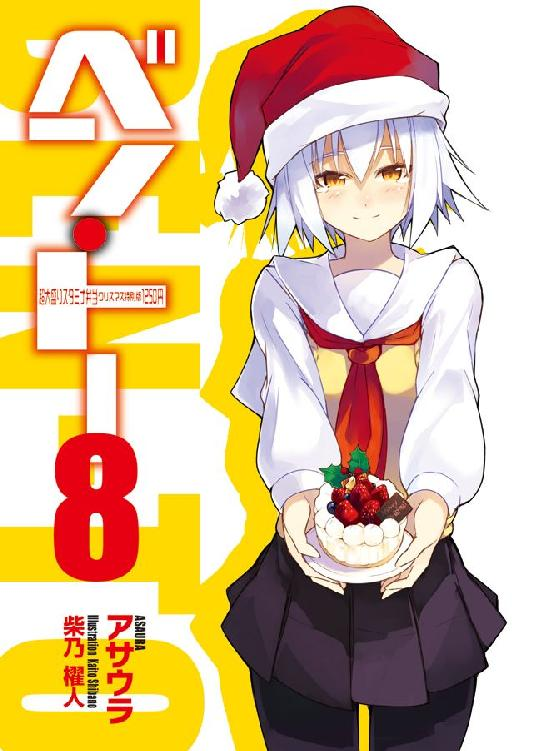
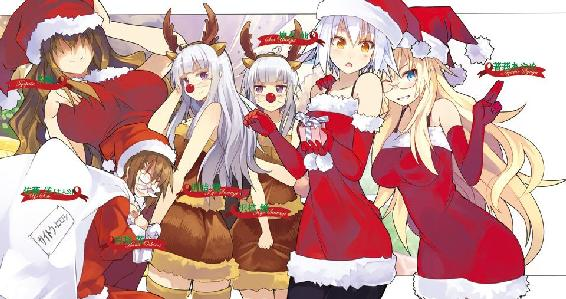
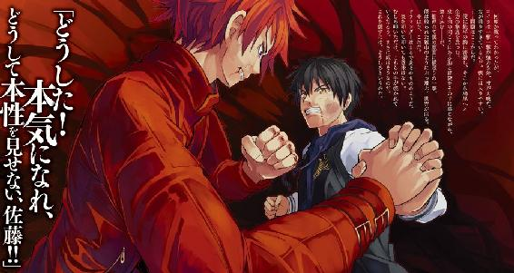
主要登場人物
佐藤 洋（さとう・よう）
烏田高校一年。体力とバカには自信がある。ゲームはセガ派。
著莪 あやめ（しゃが・あやめ）
丸富大学付属高校一年。佐藤洋と同じ生年月日の従姉。イタリア人の母を持つハーフ。ゲームはセガ派。
槍水 仙（やりずい・せん）
烏田高校二年。ハーフプライサー同好会会長。二つ名は『氷結の魔女』。
白粉 花（おしろい・はな）
烏田高校一年。小説執筆が趣味な女の子。実は一部ネットでは名が知られた存在だったりする。
白梅 梅（しらうめ・うめ）
烏田高校一年でありながら生徒会会長を担う。白粉をとても大事に想っている。暴力的な一面を見せることも。
沢桔 姉妹（さわぎ・しまい）
丸富大学付属高校二年の双子姉妹。やや残念な姉の梗と良くできた妹の鏡。それぞれ生徒会長と副会長を担っている。二つ名は『オルトロス』。
響 鉄平（ひびき・てっぺい）
東北の大学に通う、最も最強に近いとされる狼。二つ名は『サラマンダー』。
茶髪（ちゃぱつ）
烏田高校三年の大変良いバストをした女性。本名を知っている狼はほとんどいないが、その姿は一度見たら忘れられることはない。二つ名は『シーリーコート』。
二階堂 連（にかいどう・れん）
丸富大学の学生にして、元ガブリエル・ラチェットの頭目。一時佐藤洋と合わせて『ツードッグス』という名で呼ばれたこともある。
山乃守 喨（やまのもり・りょう）
丸富大学の卒業生。かつての二つ名は『ガンコナー』。ただいまニート中。
高段位桜桃少年団（ハイクラスチェリーボーイズ）
烏田高校の男子寮内で本人たちも知らぬ間に結成されてしまった汚れを知らぬ純粋な少年たち。神田、蔵田、矢部等といった面々が名を連ねており、これに一応佐藤も入るのだが、仲間内からはやや疑いの目が持たれ始めている。
イラスト／柴乃櫂人
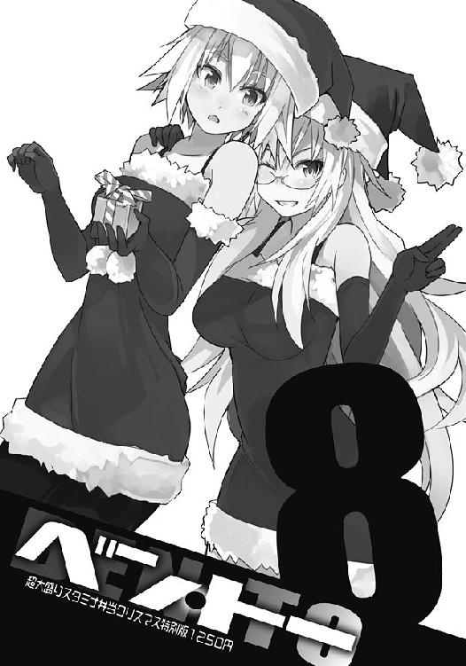
需要と供給、これら二つは商売における絶対の要素である。
これら二つの要素が寄り添う流通バランスのクロスポイント......その前後に於いて必ず発生するかすかな、ずれ。
その僅かな領域に生きる者たちがいる。
己の資金、生活、そして誇りを懸けてカオスと化す極狭領域を狩り場とする者たち。
――人は彼らを《狼》と呼んだ。
１章 シーリーコート
「何よ、ワンコ。さっきから人の胸元ばかり見て」
茶髪
０
『彼女』が入店すると店内がにわかにざわつきはじめた。
時刻は二〇時四五分、ジジ様の店の半額シールが降臨する刻にして、近隣で最も遅い半値印証時刻だ。そこに新たな狼が混じることで緊張が増すのはわかるが、それにしてもまるで名うての二つ名持ちの来店のよう。最近二つ名を手に入れたばかりの『彼女』にとってそれは新鮮で心地良かったが、同時に違和感を覚えた。
いくら二つ名を手に入れたとてそれで急激に腕が上がるわけではないのだ。この店に現れる狼など、そのほとんどが名こそ知らぬまでも、顔や技を互いに覚えている者たちばかりのはず。それが今夜に限ってこんな反応を示すものだろうか？
『彼女』はゆっくりと歩きながら店内の気配を探った。まだジジ様が現れてもいないのにどの狼も殺気を放っている。歩いているだけで全身の産毛が逆立ち、肌がピリピリと痛むほどだ。
『彼女』は総菜・弁当コーナーに到達し、ようやく状況を理解する。弁当が一つしかない。しかもそれはこの店の人気弁当である『サバの味噌煮弁当』である。
肌に感じる店内の狼の数は自分を含めて六、確実に五人は喰いっぱぐれる。そして誰もが憧れるこの店人気のサバの味噌煮......。なるほど、この緊張感も頷けた。そして、少し残念だった。まずありえないとわかっていても、もしかして自分が他の狼たちに恐れを抱かせるほどの凄腕として認識され始めたのではないか、という淡い期待がないわけではなかったのだ。
『彼女』は苦笑しつつ弁当コーナーを離れ、缶詰コーナー前に佇む二人の男たちの方へ足を向けた。彼らと背中合わせになるようにして、反対の陳列棚へ体を向ける。
「やはり来たか。アブラ神の店にはいなかったから、もしかしたらとは思っていたが......」
坊主頭の男が言うと、まったくだ、とその隣の顎髭を生やした男がチラリとこちらを振り返るようにして見てくる。『彼女』もまた同じようにして見返し、少し挑発してみた。
「弁当は一つしかないけど、私が来るとそんなにまずいわけ？」
「最近調子いいじゃねぇか。大学の内定と二つ名を手に入れてからよ。勢いがあるっつぅか、〝流れ〟が来てるだろ」
まぁね、と『彼女』は笑う。希望校の内定を手に入れたことで肩の重荷が降り、ずっと憧れていた二つ名も手に入れた。そのことを切っ掛けに最近の弁当奪取率はかなり高くなっている。顎髭の言うように勢いに乗っているといって良かった。
『彼女』はフフッと余裕の笑みを浮かべると、羽織っていたＰコートの前を開けてやや窮屈だった胸を楽にし、風でかき乱されていた後ろ髪を軽く払う。茶色の、ウェーブがかった髪が豊かに揺れた。
「いいよなぁ、二つ名。手に入れなきゃいつまで経ってもモブの狼だ。......チッ、勝率はそんなに悪くないんだが」
顎髭の言葉に同意するように、坊主が頷く。
二つ名を手に入れてから『彼女』はようやく実感してきたのだが、二つ名を得る上で重要なのは実力よりも、人の口にのぼることなのだ。
元々二つ名というのは、狼たちの間で他の狼の噂をする際に便宜的につけられる勝手なあだ名のようなものでしかない。だから、目立つ行動や容貌、戦法をとり、噂になれば自然と湧き出てくるものなのだ。無論、実力が高ければそれでも当然可能だが、地味な奴が地味な戦い方をして噂になるためには、否が応にも意識せざるを得ない戦果を上げる必要がある。これはかなり難しい。何せ『彼女』が知りうる限りでは《魔導士》ぐらいなのだ。
人々は彼の二つ名を〝魔導士〟と認識していても、発音は英語の〝ウィザード〟とする。これにはその名付けられた経緯が関連しており、本来の彼の二つ名は、天才、達人、熟練者の意味での〝Wizard〟だったのだ。それがさらに成長を続ける過程で、あまりに強く、あまりに見事な技から、まるでこの世ならざる術を用いているかのように感じた者が〝Wizard〟を〝魔導士〟としての意味で認識し、それが広がった。
逆に特異な行動で名を持ったといえば魔導士の弟子に当たる《氷結の魔女》だろう。どこに行くにもくっついていたが故に、元々は《魔導士の腰巾着》と呼ばれていたが、その実力が上がるにつれて魔導士の弟子の女、よって〝魔女〟と呼ばれ始めた。そんなある時、酎ハイの『氷結』をジュースと勘違いして買おうとした一件が起こり、その後、ＨＰ部のメンバーから冗談半分に〝氷結〟と呼ばれ始め、それがいつの間にか〝魔女〟とくっつくという変わった経緯を持っている。無論それが定着したのは、偶発的に名付けられたとはいえ、見た目、雰囲気、仕草等からしても、本人を表すのにピッタリだった、というのが大きいだろう。
また、それとは別に見た目で名付けられたといえば《毛玉》が挙げられる。酷い名だが、あのボリュームあるアフロヘアにそれ以上合う名前はない。何より彼の情報屋のような行動はスーパーや狼にくっついているイメージがあり、それもまた毛玉というにピッタリだった。
それらを踏まえて考えてみると、当然戦果はあって困ることはないが、実力がさほど高くなくとも、人が語りたくなるような〝何か〟を有していれば二つ名を得ることは可能なのだ。
『彼女』が最近知ったことだったが、実際にこの坊主頭と顎髭の男たちにだって毛玉と同じパターンで、ちょっとした名で呼ばれているのだという。無論、坊主と顎髭である。人の口に名が上がり始めたということは、ここで目立つ何かをすれば二つ名が付くのは難しくない。
『彼女』でいえば、先月起こった猛毒の名を持つ《ウルフズベイン》との一件だ。『彼女』としては当たり前のことと思っていたが、他の狼たちにはそうは見えなかったらしい。
そんなことを坊主と顎髭に話していると、店内の空気が乱れだす。話に集中するあまり店内に気配を配るのを忘れていた。慌てて『彼女』は店内の様子を窺う。半額神であるジジ様はまだ出てきていない。......と、なると新たな狼の来店か。
「噂をすれば何とやら、だな。まったく今日って日は......」
坊主が弁当コーナーを見やりながら鼻で笑うように言った。彼の視線の先に現れたのは白色のダッフルコートを羽織った、小柄で前髪をヘアピン、後ろ髪は簡単にまとめている小動物のような女子と、その同級生の黒いパーカに黒いスカジャンを重ね着した男。魔女の犬と一部では呼ばれていたが、自分たちの間では――男の方は――ワンコ、ワン公と呼ばれる存在であり、何故かオルトロスが彼を《変態》という名で呼んでもいる。
何かと縁のある二人である。『彼女』が名を得る上ではなくてはならない存在でもあった。
二人は弁当が一つしか残っていないのを見ると、足を止め、驚き、どこか別の場所にまだあるんじゃないかというように辺りの陳列棚に視線を泳がせる。しかし本当に一つしかないとわかったのか、ワンコは頭を抱え、女の子の方はため息を吐いたようだ。
チラリ、と二人が『彼女』らの方を見てくる。顎髭と坊主は横目の視線で応え、『彼女』は小さく手を振った。二人がぎこちない笑顔を浮かべながら、去っていく。
今日は激戦だな、顎髭が顔を缶詰に向けて呟いた。坊主は同意するように頷く。
果たしてそうだろうか、本当にそうなるだろうか......微妙なところだ。『彼女』は腕時計を見やった後、大きな胸元を下からすくい上げるようにして腕を組み、瞼を閉じた。
すでに時刻は半値印証時刻直前、いや、日によってはもうすでに始まっていてもおかしくはない頃合いだった。
弁当（三割引シール付）が一つ、店内にこの人数......果たしてジジ様の判断はどう転ぶのか。
しかし大丈夫だ、と『彼女』はその大きな胸の内で呟く。
何せ自分は祝福されし者......その名を持つ狼だ。ならば、大丈夫。必ず、勝てる。
『彼女』は烏田高校三年の女生徒。傷ついた少年に情をかけし優しき狼にして、かつては茶髪、巨乳などと呼ばれし者。しかして今は祝福されし妖精の名を得、己が領域がごとくスーパーを舞う。
人は『彼女』を――《シーリーコート》と呼んだ。
○
非常にまずい状況だった。店内に狼は僕、佐藤洋と一緒に来た白粉花含めて八匹、しかして弁当は一つ。しかもジジ様の店では非常に高い人気を誇る『サバの味噌煮弁当』ときている......まさに激戦必至の状況と言って良かった。
「クソッ、たまに格好つけた時に限って......」
実は今日の僕と白粉はここが一発目。いつもは他の店......主に一時間前に半値印証時刻を迎えるアブラ神で争奪戦に参加し、そこで負けた場合に第二戦としてこのジジ様の店に来ることが多い。その際、行くと僕や白粉の弁当奪取率が下がることを懸念して、我がＨＰ同好会の会長にして二年生の槍水先輩はあえてジジ様の店を主戦場にし、出来るだけ僕らと被らないようにしてくれていた。
それで......たまには、と今日は先輩にアブラ神の店を譲ってしまったのだ。
いや、そこまでなら良かった。問題は、いきなりジジ様の店に全てを賭けてしまったことだ。せめてその前にもう一軒ぐらい回っておくべきだった。あの中華系の弁当がやたらうまいスーパーとか、少し無理をすれば行けないことはなかったのだ。
クソッ、と僕は再び呟く。粉物の陳列棚を見やりつつ、顔を隠すように、スカジャンの下に着ているパーカのフードを頭に被る。悔恨に歪む己の顔を誰かに見られたくなかった。
隣の白粉を見やる。彼女は入店前から様子にさほど変化はなかったが、それは即ち何やら気落ちしている、ということでもあった。ここ数日中の彼女はずっとこうだし、夜にちゃんと眠れていないのか、目元にはクマまで出来ている始末だ。......多分、女性特有の生理現象だろう。はっきり訊けないので真相はわからないが、多分、そうだ。
僕が白粉の顔を見ていると、彼女もまた僕をチラリと見上げてくる。何かを憂うような瞳は、化粧っ気のないその顔や純白のコートと相まってどこか薄幸の少女のようで、何だか抱きしめたくなる愛らしさがあった。......ずっとこんな感じで大人しければかわいいのに......。
きっと数日後にはいつもの発酵の少女に戻るに違いないのだ......。
あっ、来た。ジジ様だ。スタッフジャンパーを羽織った大老。彼は精肉コーナー横にある『関係者以外立ち入り禁止』とある扉から現れると、まず店内に向かって一礼。その後、精肉、卵、飲料水という順に商品の陳列を直していく。
それらの作業が進むにつれて、店内の狼たちの緊張もまた天井知らずに上がっていく。今や飛び出さんとする短距離走選手がごとく、誰もが力を溜め込み、タイミングを計る。
弁当は一つ、長期戦はまず考慮から外していいだろう。恐らくは初手が重要になる。入店時の気配からして茶髪をはじめとしたあの三人もいるようだから、戦闘なしでの奪取はまず無理だ。だが、乱戦形成前に数度のぶつかり合いのみでケリをつけるのは可能なはずであり、それ以外では、もはや場の流れ次第......自己の能力よりも運の要素が大きく左右するはずだ。......つまり、確実に手に入れるためにはやはり、初手だ。
僕は両腕を下げ、足を肩幅程度に開き、そして少し猫背のようにしつつも顔は前を見る。パッと見、ただの自然体のようだが、実際には指の先まで全身くまなく緊張を走らせており、どのようなタイミングであっても機敏に反応できる構えだ。無論、クラウチングスタートのような体勢の方が良いのだろうが、さすがにスーパーの店内でその体勢をしている奴がいたら......それはただの変態である。
あ、でも短いスカートの女性がやっているならそれはきっと女神に違いない。僕、佐藤洋は女性の皆さんの勇気ある行動に期待します!!
ジジ様がパンコーナーの陳列を直し終えると、いつも通りにその足を総菜・弁当コーナーへと向けた。店内の空気は今にも張り裂けんばかりであり、僕の体にもジンワリと汗が湧く。
そして、いよいよその時が来た。いくつか残っていた総菜の並びを直すと、先に一つだけ残っていた弁当の位置も正し、それから半額シールの台紙を取り出した。いつものように彼は先に総菜の方からシールを貼っていき、そして、ついに弁当へ!!
......と、その時だ。狼たちの意識が、ジジ様そして店内最奥である弁当コーナーへ集中している最中、まったく逆の方向から外乱が現れる。エントランス。自動ドアから店内へ飛び込むようにファーの付いたフードジャケットを羽織った女の子。ローファーがタンッと乾いた音を立てて床を叩く。
「くっはっ！ 間に合った！」
そう心の声をストレートに言い放ったのはウルフヘアの女子高生。彼女は八時半頃に半値印証時刻を迎えるビッグ・マムのスーパーを縄張りにしていたはずだから、きっとそこで早々に負けたか、弁当が売り切れていたかして、大慌てでここまで駆けてきたのだろう。
さらに敵が増えたことで店内の狼たちの気が乱れ、そして、恐慌に染まる。ウルフヘアを見やっていた僕には一瞬何が起こったのかわからず、急激に変動した店内の気配に慌てた。
そこまで恐れる相手じゃないだろ、と不思議に思いながら僕は弁当コーナーを見やる。ジジ様がバックヤードに戻ろうとしている途中であり、何もおかしなことはな......なにぃ......!?
「あれ、ジジ様......シール張ってないんじゃ......」
白粉が呆然とするように呟いたのが、答えだ。彼女が言うように、少しでも視界を良くするためにフードを払った僕の視線の先には先ほどと変わらず三割引シールが弁当容器の上に貼られているだけで、そこにはどこにも半額シールはない。貼られていないのだ！
確かに弁当一個、狙う狼......いや、狙う客が九人ともなれば半額にせずとも売れるだろうと考えるのは当然、おかしなことじゃない。だが......だが......!!
荒れ狂っていた店内の空気は状況を受け入れた狼が増えるにつれて、ズッシリと重いものになっていく。そして自然と入店してきたばかりのウルフヘアに恨みがましい目が集まっていった。あの状況じゃウルフヘアが悪いわけじゃないというのはわかっている僕でさえ、不思議と彼女に目をやってしまう。
ウルフヘアは状況が理解できていないのか、間に合ったことで綻んでいた顔を強ばらせる。ポケットに両手を突っ込むと肩身を狭くして弁当コーナー経由で、僕の方へと小走りにやってきた。
あまりジジ様の店には現れない彼女だからきっと知り合いが僕しかいなかったのだろう。
「ひょっとして、最悪にまずいタイミングに来ちゃった......かな？」
僕たちと一緒に並び立った彼女はポケットに手を入れたまま肩をすくめ、横目で、しかし上目遣いのようにして隣の僕を見てくる。
別にウルフヘアのせいじゃないだろうが、何となく彼女の来店が切っ掛けなような気もするし......何より、以前会った時と違ってこんなふうに身を縮こまらせている彼女を見ていると......何だ、思いの外かわいいじゃないか、と場違いなことを考えてしまい、僕は曖昧な返事しか出来なかった。
以前まではとにかくしつこく喰らいついてくるようなイメージしかなかったが、こうして今一度見てみると......結構小柄というか、華奢な体つきなのがジャケット越しにもわかる。そしてウルフヘアと相まったその顔つきはボーイッシュというよりは、カッコイイ女の子というイメージだ。冬でも生足でその肌を晒しているせいか、何とも健康的に見える。
違うかもしれないけれど、宝塚とは違う意味で、女の子からモテるタイプの女の子という感じかな。いや、女の子だけじゃないかもしれない。以前会った時を思い出すに、明るく快活で......そう、まるで犬のボーダーコリーのような雰囲気があったけど、それが今みたいにすると途端になんというか......アレだ。その、アレだよ。わかるかな、わかるはずだ。
「気にしなくていいんじゃない？ あなたが来なくても今日はこんな感じだったと思うしね」
言いながら現れたのは茶髪ことシーリーコート......いや、今まで通り茶髪でいいか。うん。
現れたのは茶髪だ。彼女は僕らの背後の棚を見やるようにして立つ。
彼女がこの人数じゃしょうがないよ、と笑うと、ウルフヘアも少し笑った。どうやら気にしているであろうウルフヘアに声をかけに来てあげたようだ。手に入れたばかりの二つ名を意識しているのかもしれない。
シーリーコート――祝福されし妖精。北欧の伝承において、人に親切で好意的なものをそう呼ぶらしい。元々実力があった彼女だから、きっと何か切っ掛けがあれば二つ名が付くであろうことは狼たちの間でも有名だったが、まさかその切っ掛けが、僕の対ウルフズベイン戦であったのはさすがに驚いた。最後の最後、彼女が僕にしてくれたことは確かに凄まじくインパクトがあったし、誰もがその名を思いつくほどのことだったのだ。
今の茶髪は初めてヒールを買った女の子が、いつもより大人っぽい服を着て街を歩くようなものなのだろう。嬉しくて仕方ない。だから、わざわざウルフヘアのところまで来て、二つ名が示すように親切をしているのだ。
ウルフヘアが笑ったように僕もまた、その愛らしさと、少しばかりの羨ましさを胸に、笑う。
そうして......僕たちの戦いが幕を開けた。
果たして弁当は本当に半額になるのか？ なるとすればそれはいつなのか？ その前に誰かの心が折れて三割引の弁当を買ってしまうんじゃないのか？ そしてこのまま突っ立っているぐらいなら隣町の二四時間スーパーに一縷の希望を託して走るなり、さっさと諦めて帰ってしまった方が賢い選択なのではないか......？ また、こうして何もせずに棒立ちのまま店内にいると、一般客や店員の目が気になって......。
数々の疑問、不安、緊張が時を遅く、空気を重くし、逆に明るい照明や軽やかなＢＧＭが一層それを強調する。
そう、それはまるで前を開けたＰコートから胸の部分だけを飛び出させている茶髪のようである。その様はあえて一枚羽織ることで胸のサイズを強調するかのようで......ヘタに肌を露出しているよりも何だかずっと素敵に見えた。従姉の著莪あやめもいつの間にか大きくなっていたのだけれど、茶髪に比べればまだまだ青い果実である。
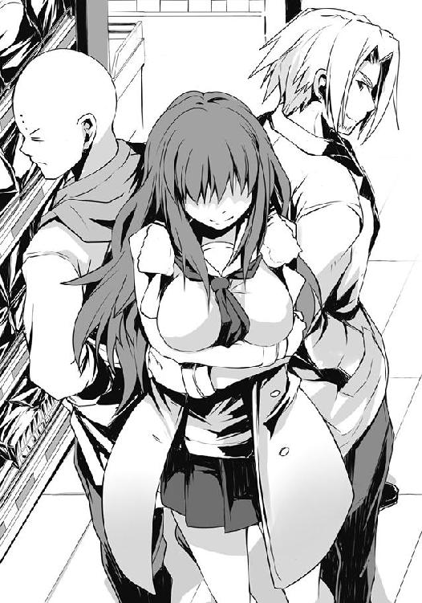
僕がチラチラと背後の茶髪を見やって「......ぬふぅ」と感嘆するように息を吐いていると、ふと、横から視線を感じる。ウルフヘアだ。何だ、コイツ......あ、さては自分には茶髪ほどの胸がないから......いや、違うな。僕の視線が茶髪にばかり向けられていることに嫉妬を覚えているな？ 仕方ない、まるで気持ち悪いものでも見たかのような顔をしているウルフヘアの胸も観察してやるか。......ほほぅ。うん、ジャケットを羽織っているからよくわからないな。ただ、それほど立派ではなさそうだ。しかし......。
「......ちょっと、佐藤君、やめて。ここスーパーだよ......？」
おいおい、マイハニー。さすがの僕とはいえスーパーの店内でいきなりかますだなんてアバンチュールなマネはできないよ。わかった、それじゃこの後二人で人気のない公園に行って、一二月の冷たい空気の中で互いの体温を求め合おうじゃないか。寒い、そうであるが故に少しでも多く肌を重ねていたい......そうして――。
「いくら弁当が半額にならないからって、《変態》の二つ名の力、そこまで発揮しないでよ」
......あ〜......うん。そういえば、彼女は僕が変態だから変態という二つ名がついていると勘違いしていたんだったっけ。仕方ない。時間はある、いい機会だ。僕が変態ではないことを教えてやろう。今の行為だって敵にして味方、味方にして敵である他の狼の様子を観察しつつ時間を有効活用しようという飛び抜けたアイディアでだな......。
僕はウルフヘアにカニ歩きで一歩近づき、話をしようとしたのだけれど、同じ歩幅でウルフヘアは逃げた。横目で一瞬見つめ合った後、僕はさらに足を踏み出す。ウルフヘアも一歩離れる。ちょっとイラッときた僕がさらに一歩踏み込むと、彼女は他の場所へ逃げていった。
「ワンコ、あんまり女の子いじめちゃダメ。スーパーでセクハラなんて最低よ、まったく」
「別にいじめたわけじゃ......僕はただ誤りを訂正しようと......」
茶髪は体をこちらに向けて、まるで出来の悪い生徒を見るような目で僕を見ていた。三年生だからということもあるのかもしれないけれど、大人びた、というよりはあくまで年上のお姉さんという感じの彼女は、フッと小さく笑い、僕の横を抜けていく。
背の中程まである軽くウェーブがかった茶色い髪が揺れ、まるで蝶が鱗粉を撒くように残り香を漂わせる。僕の鼻腔を撫でるようなそれは、ほのかな甘さ。彼女がしている化粧のように、嫌みのない、どんなに吸っても噎せ返りはしなさそうな、ソフトで触りの良い香りだった。
その場に一人残った僕は仕方なく黙祷するように時を過ご......あ、白粉がいたか。化粧ッ気のない彼女は僕とウルフヘアのことなど何も見ていなかったように、何だか青息吐息といった様子で陳列棚の最下段にある小麦粉の袋を見つめていた。
僕は彼女の横に並び、また重くなってきた空気と時間にひたすら耐えることにした。
......果たして、そのままどれだけの時間を経ただろうか。途中で槍水先輩に状況をメールし、遅くなりそうだと告げ、そして二匹の狼が耐えきれずに去っていくのを見送った。
店内を満たす重圧は狼たちに気配を出すことすら許さない。まるでどこにも狼などいないかのような雰囲気が漂う中、ただひたすらに僕らはチャンスを待った。悪天候の中、それでもなお草むらに身を隠して気配を消し、獲物が来るのを執念深く待つ肉食獣がごとく。
そして二一時二五分。僕らが入店してから三〇分を越えた頃......ついに場が動いた。ジジ様が、店内に再降臨なされたのだ!! 店内がざわつく。しかし喜びではない。目の前に起こっていることが期待通りなのか、それとも肩すかしなのか......疑念は消えない。
しかし、まるで「負けたよ」というような爽やかな笑みを浮かべたジジ様のご尊顔を見ると、狼たちの緊張とてさすがに喜色に染まる。そして彼が真っ直ぐに弁当コーナーに向かい、シール台紙を取り出し貼った瞬間、狼たちの心の歓声が聞こえてくるかのようだった。
そしてジジ様がバックヤードに一歩、また一歩と戻るにつれて店内の空気は張りを取り戻し、荒れ狂う。いつもより遅い時間である。腹の虫は意識するまでもなく、騒ぎ立てる。欲しい。食べたい。あの弁当が、とろけるように柔らかなサバの味噌煮が!!
ジジ様、バックヤードへ消える。その瞬間、待ちに待った狼たちの夜が幕を開けた。
床をえぐるかのようにして僕は駆けだした。白粉は明らかに出遅れていたが、その姿同様すぐに僕の意識から抜け落ちる。ＨＰ同好会では同好会員同士で争ってはならないとされており、もし人数より弁当が少なければ助け合うことになっていたが、今の白粉にあまり期待は出来ない。ならば初めから意識しない方がお互いのためだ。
初手に意識を集中していたことで、僕としては珍しく誰よりも先に弁当コーナー前に到達。これなら他の狼たちが到達する前に奪取を狙っても何とかなるかもしれない。
サバの身が目視出来る距離になった時、僕は右手を伸ばす。その指先にかすかに容器の感触――しかし、掴めない。腕を伸ばしたことでがら空きになっていた脇腹に衝撃が走る。顎髭がヘッドスライディングのように突っ込んできやがった。
体重の乗っていたそれは僕を突き飛ばし、攻撃した顎髭もまた一緒に床を転がった。
空いた弁当コーナー前に坊主が滑り込むものの、その時にはもう一匹狼が場に到達。坊主と攻防を繰り広げるが、そこに目つきを鋭くしたウルフヘアが駆け込み、空中から茶髪が参入。乱戦が形作られる。僕と顎髭も再び飛び込んだ。
一瞬の後、名も知らぬ狼は床を転がり、場は茶髪と戦う顎髭・坊主のタッグ、そしてその隣にて僕とウルフヘアがぶつかる構図となっていた。共に陳列棚前にて戦い、互いの相手に意識を向けながらも、もう一方の戦闘でいきなり誰かが弁当に手を伸ばさないか......それを警戒しながらの戦闘だ。傍から見れば女性陣二人が背中合わせに弁当を守りながら戦い、男がそれに喰らいついているような形にも見えるかもしれない。
ウルフヘア、以前よりも明らかに俊敏な動きで僕に拳を乱打してくる。攻撃は最大の防御と言わんばかりに、数に物を言わせてこちらに反撃させる隙を与えないつもりなのだろう。なかなかの速さ......だが、その分重さがなかった。いつもより力を増している腹の虫の加護を考慮し、僕はそれらの攻撃に対して防御は捨てた。ヘタに受ければ手間だけがかかる。この状況でそれは命取りだ。......ならば、多少のダメージを覚悟し、強力な一撃でもって乱打を突き破って彼女を叩くのが一番確実かつ手っ取り早いはずだ。
ウルフヘアが繰り出す拳をわざと受けながら、僕は無理やり間合いを詰める。そして、大きく踏み込んだと同時に腰を落とし、渾身の力を込めて右の掌底を放った。ウルフヘアを吹っ飛ばし、それに彼女の後方の茶髪たちも巻き込むつもりだった。
だが、放った瞬間にしくじったのがわかった。
ウルフヘアはさして驚いた顔も見せず、僕の掌底を内から外へ向かって弾くように左の掌を当ててくる。さすがに僕のありったけの力を込めた一撃はウルフヘアの手を弾き、彼女の顔を歪ませた......が、その反動を利用して、彼女はクルリと身を反転させながら僕の懐に飛び込んでくる。
自分の背を僕の胸に密着させ、そのまま左の肘打ちを鳩尾に打ち込んできた。
僕の攻撃の反動を最大限に利用してかわし、そして攻撃に転換してきやがったのだ。
これは、効いた。息がつまり、目の前が暗くなる。自然と瞼が固く閉じられる――が、持つ。腹の虫の加護はギリギリ僕の意識を繋ぎ止めてくれる。
僕は瞼を閉じたまま、ほのかに感じるウルフヘアの気配を頼りに掌底で伸ばしていた右腕を引き、彼女の首に巻き付け、引き寄せる。
ガッ！ というウルフヘアの呻きを聞きながら彼女の体が再び僕に密着、同時に体を捻って床に投げ飛ばすようにして押し倒す。上から覆い被さるように僕もまた体を乗せ、彼女へのダメージを増してやった。そして床に叩きつけると即座に腕を解き、彼女の頭を掴み、床に叩きつけようとする。とにかくあの華奢な体からは考えられないぐらいのしつこさ――耐久力を示す彼女だ。この程度でやりすぎということはない。
瞼がようやく開いた僕は躊躇うことなく、彼女の頭を掴む。その瞬間、僕の脇腹に強い衝撃。ウルフヘアの左の肘打ちだ。僕の体はウルフヘアの上から薙ぎ払われるものの、それでもかろうじて彼女の頭を床に叩きつけてやることは出来た。
僕はウルフヘアを見くびっていたらしい。まだルーキーだと思っていたのに、彼女は着実かつ、急速に実力を上げている......それを若干の焦りとともに感じながら、僕は床を転がった。
顔を上げる。息は苦しかったが、意識が飛ぶほどじゃない。茶髪はいまだ顎髭と坊主のタッグに苦戦。......いける。そう確信した時、僕の横手を白い影が走り抜けた。白粉だ。
彼女はいつもより機敏さを欠いた動きで弁当コーナーに走り込む。それは腹の虫の加護がまともに効いていない動きではあったが、走り込むタイミングとしては悪くない。むしろ、かなりいい。だが、ヤバイ。
白粉は弁当こそ見ているが、茶髪のことにまで意識がいっていない。茶髪は今、弁当を横目にして戦い、その背スレスレを白粉は駆けようとしているのだ。
勢いづいている茶髪がそれを見逃すはずがない。彼女は前から迫ってくる跳び蹴りの坊主、そして拳に力を入れる顎髭を流し見て、肩越しに背後の白粉、そして何故か僕を見やった。
その次の瞬間、茶髪はまさにクラウチングスタートのように身を低く、床に手を着きながら大きく片足を後ろへ下げる。たったそれだけで見事なまでに白粉の足がすくわれた。
白粉の小さな体が宙に浮き、そこにしゃがまれたことで空振りとなってしまった坊主の跳び蹴りが茶髪の頭上を越え、白粉の脇腹に叩き込まれる。走り込んでいた自身の勢いと相まって、白粉の体が頭から弁当コーナー横の総菜コーナー陳列棚に向かってぶっ飛んだ。
そして茶髪がクラウチングスタートの体勢から、拳を上に突き上げ、身を捻りながら、飛ぶ。昇竜拳にも似たその一撃は頭上にあった坊主の腰を打ち、迫り来ていた顎髭には足を突き出す。身を捻っての跳躍によって、その足は回し蹴りとなって顎髭を吹っ飛ばした。
一挙動で三人を薙ぎ払った見事な手腕に見惚れる間もなく、僕は白粉に向かって駆ける。腹の虫の加護が効いていない彼女が受け身なしに棚にぶつかれば大変なことになりかねない。
僕は白粉の細い足首を何とか掴み、それを引っ張って勢いを殺し、彼女を抱くようにして二人して床に落ちる。今日はよく転がる日だ、そんなことを考えながら。
ぐったりしていた白粉を抱き起こし、無事を確認。それからこちらに優しげに微笑みを向ける茶髪、そしてその手に収まった半額弁当を僕は見やった。
「やっぱり期待した通り。ワンコは......ね」
茶髪が坊主と顎髭を薙ぎ払った直後、誰もが空中に静止していた一瞬。あの瞬間に弁当コーナーに向かって飛べばチャンスはあったかもしれない。そのことを言っているのだろう。彼女に言われた瞬間に、それに思い当たった。
チャオ、と、茶髪は僕や倒れた狼たちに向けてひらひらと手を振り、レジへと向かっていく。その背を見送る僕は、さほど敗北感にまみれていない。ただただ、そこまで読んであの一瞬に三人を倒したとすれば......その優しげな名とは違って何と恐ろしい相手だろう。
そんなことを、僕は今更ながら考えていた。
なるほどな、と、僕の話を聞いた槍水先輩は少し笑うように言った。
「本来妖精というのは現代の一般的な日本人がイメージするとそれとは実は必ずしも合致しない。妖怪、魑魅魍魎の類も妖精と呼ばれる場合があり......そうだな、物の怪、というのが本当は一番適切かもしれないな」
そう言って彼女はアブラ神の店で手に入れた『誰もが夢見た王道弁当のコラボ！ 海苔弁＋鮭弁＋唐揚げ弁当＝うまい!! 三位一体弁当!!』という誰も夢見ていない上に、商品名にまさかの数式記号が入り込むという常軌を逸した名前ながら、意外とそれ自体は普通の具だくさんかつ大盛りというだけな気がしないでもない弁当に箸を突き刺す。先輩は鮭の身をその形の良い口に入れ、続けて箸の先でご飯の上の海苔を突き刺すようにして裂いて、ご飯をすくう。チラリと見えたが、どうやらただご飯の上に海苔を敷いただけではなく、その下におかかを散りばめてあるようだ。ニクイ演出である。実際最初の一口を食べる時に、先輩の顔が子供のように綻んでいたのを僕は見逃さなかった。
ご飯を咀嚼する先輩は相変わらず笑顔だが、それがゴクリと喉を通り、視線を僕に向け直すとまたキリッとした顔つきになる。肩口までの髪を荒々しく見えるように丁寧にセットした髪、どこか鋭さのある顔つきはそれだけでも見惚れそうになるものだが、半額弁当や狼について語る時はなおのこと冴える。まさに、今のように。
「つまりだ。シーリーコートとはいえ、それは比較的人間に対して友好・好意的であるというだけに過ぎない。......犬で例えれば、誰彼構わず吠え立て、噛みついてくる犬もいるがそうじゃない犬もいる。シーリーコートは後者だ。しかし、どんな犬にしたって尻尾を踏めば牙を剥くように、シーリーコートも人間側が礼儀を忘れない限りは友好的に接してくれるが、そうでなければきっちり罰や嫌がらせをしてくるとされている。過度に信頼したり、無条件に優しい妖精だと甘く見ていると、手痛いしっぺ返しを喰らうぞ」
「それはもう、懲りましたよ」
僕が言うと、先輩は声を出して笑った。僕も笑った。
その大きな窓から差し込む月明かりの中で、槍水先輩のその笑顔は何とも綺麗だった。
黒水晶のような瞳がこちらを見つめてくると、僕は出来るだけ自然に視線を逸らして部室内を見やる。笑いながら、先輩の笑顔を凝視していたというのは何だかバツが悪い。
大きな円卓にそれを囲む椅子。そして冷蔵庫や電子レンジ、様々な食に関する小物が入っている棚......。そして壁に貼られた近隣のスーパーを示す地図と、その反対の壁に貼られた歴史を感じさせる無数の半額シール......。それが烏田高校部室棟、最上階の五階、ＨＰ同好会部室。
「二つ名を手にしてから、ホント、あの人は強くって。しかも今夜は半額になるかわからないっていう状況ですからね、久々に焦燥感でヤバかったですよ。結局負けちゃいましたけど」
僕は苦笑しながら言って、手元のどん兵衛に視線を落とす。両手で包み込み、その温かさを感じながら容器を持ち上げ、汁を啜った。
唇や舌をくすぐる刻みネギ、たまに滑り込んでくるカマボコのスライス、麺やお揚げの旨味をほのかに含んだ風味豊かな出汁......。ホッとするいつもの味。日本人ならば誰もが思い出せるあのどん兵衛の味。それは争奪戦で傷ついた体に優しく染みこむようで、いつものように瞼を閉じて、そのうまさと温かさをいっぱいに感じた。容器を置くと、僕は横手に置いておいた鮭おにぎりに齧りつく。パリッと海苔の音。もぐもぐと咀嚼しつつ、トドメに麺を啜れば......くぅ〜！ お握りと麺の二つの食感......噛めば噛むほど甘みとうまみをにじませるお米と麺。それらを統べる出汁の風味。こっちはこっちで三位一体の至福の味である。飲み込むのが惜しいほどだ。次の一口には鮭の味もこれに混じるだろうから......さらに、楽しみだ。
「弁当が狼の数より少ないのは当然としても、半額に至るか否かわからないという時間は確かに辛いものだな。あれだけはどんなに経験を積んでも慣れるなんてことはないだろう。私でさえ、辛い。腹の虫の力が強すぎて冷静な判断が出来なくなる場合もある」
「そういえば、先輩って、遠征先でこれと同じような感じの、もっと酷いのに遭ったことがありましたよね？」
「ん？ 何だ、よく覚えていたな佐藤。以前に一度しか話したことはなかったはずなのに」
春先、僕がまだＨＰ同好会の鍵を渡される前......挫けそうになっていた僕に、先輩が月桂冠の収まるフォルダを見せて語ってくれたことが一度だけあった。
「そうだ。あれは私が生まれて初めて、二日連続で月桂冠を手に入れた時だ。冬休みの合宿中、前の日に遭難したメンバーを置いて、やる気のある者たちだけであるスーパーに向かったんだ。ただ、その日も猛吹雪で酷かったな。さすがにその日は遭難者は出さなかったが、スーパーに着いた時には皆全身が真っ白、髪や上着の一部なんて凍りついていて......そう、それもあって、私の名は一気に有名になった。並み居る強敵はもちろん、先輩方よりも先に弁当へ手を伸ばし......そして二日連続の月桂冠だ。あの時が、私の......」
笑顔で昔を懐かしむように語っていた先輩は、氷が溶けていくように、ごくごく静かに、その表情を崩していった。最後には声すら途絶えた。
先輩？ と、僕が声をかければ、彼女は、大丈夫だ、というように力なく微笑んでくれる。いきなりの事態に、僕はさすがに慌てた。以前の時はこんな表情は......いや、あの時はすぐに他の月桂冠の話になったから......？
先輩はコップに入っていた麦茶を飲み干すと、一旦箸を置いて背もたれに体重を預けた。テーブルの下で組まれていた足の上下が入れ替わった気配。
あの、先輩......僕は声を出そうとしたが、何も言うなとでも告げるかのように、先輩もまた口を開いた。少しばかり、わざとらしく。
「そういえば、さっきから白粉は静かだな。......それに食事も、それで本当に足りるのか？」
「え？ えぁっと......はい。今日は、あんまり食欲ないので......これで、はい」
萎れた花のようになっている白粉の前にあるのは、ソイジョイ一本と日配品コーナーで賞味期限間近で半額になっていたヨーグルトという組み合わせである。まるで忙しいＯＬの朝食のようだ。ヘルシーではあるが、普段の彼女からするとちょっと心配になる。
「しかし白粉、今日はというが、昨日もカロリーメイトとサラダだったじゃないか。今日はソイジョイ一本にヨーグルト......いくらソイジョイが見た目以上に腹持ちがいいとはいえ......」
大豆を主原料としたソイジョイは低ＧＩ食品であり、ご飯なんかと比べると消化に時間がかかるため、ただのお菓子と思って食べると結構驚くことになる。ダイエットにも最適だ。
うーん、食事中に話すことじゃないけど......あの日って、食欲も落ちるものなのだろうか。それとも寝不足で食欲がないパターンだろうか。
「その、何だ。......白粉、ほら、食べないか？」
そう言って先輩は割り箸で唐揚げを一つ摘み上げ、白粉の方へ持っていく。食欲がないという相手に唐揚げか......。あ、ひょっとして先輩の中で一番いいおかず、ということで唐揚げがチョイスされたのかもしれない。
「あ、いえ、......ホントに、大丈夫です。何か......喉を通らなくて」
白粉がため息混じりに固辞すると、......そうか、と、槍水先輩も力なく唐揚げを容器に一度戻すものの、僕が凝視していたのに気づいてくれ、それをそのまま僕の口へ入れてくれる。
カリッとこそしていないけれど、俺は肉だっ！ と、主張するような噛み応えのある食感。コショウたっぷりで、弁当に入れる唐揚げにしては意外にもスパイシーな味わいだ。
うまいっ！ と、僕は満面の笑みを浮かべるのだけれど......他の女性部員の様子はまるでお通夜。僕は一人場違いなテンションであることを実感した。
１
朝、いつものように教室へ行くと、何故か僕の後ろの席である白梅梅がため息を吐いていた。ノートや参考書、ペンケースこそ出ているが、いつものように授業の予習等をやっている様子もなく、ただただ青息吐息。腰の辺りで白いリボンでまとめている長い黒髪も、どこか艶が薄れて見えるほどだった。
「どうしたんだ、白梅。らしくないな」
鞄を机に放りながら言うと、白梅は視線を机の上から僕へ。一瞬何かを躊躇うような間の後、またため息をつき視線を机に落とした。彼女はどこか、まぁいいか、というように、口を開く。
「白粉さんが変です」
「安心しろ、今に始まったことじゃない」
全てを言い切った瞬間、僕の内臓は悲鳴を上げた。白梅が椅子に座ったまま上半身を捻って激烈な拳を僕の腹に叩き込んだのだ。......肉に喰い込んだ瞬間、拳に捻りまで入れてくれるサービス精神旺盛な梅様です。
「ふざけないでください。怒りますよ」
立っていた僕は衝撃に屈し、まるで姫に仕える従者がごとく白梅の椅子の横で片膝をついた。
あまりの速度で行われた攻撃に加え、白梅は一撃放つと同時に腕を引いて何事もなかったかのような顔をしていたので、どうもクラスメイトたちはこの悪逆な事態に気がついていないようだ。......強いて言えばドＭの内本君だけはしっかりと僕を見つつ、ショーウィンドウ越しのトランペットに憧れる少年のような顔をしていた。
「まっ......前々から思ってたんだけど......せめて一撃入れる前に何か一言くれ......。完全に不意をつかれると......身も心も準備が。不意打ちはキツイっての......」
「本気で怒る時はそうします。それより白粉さんのことです。最近元気がありません。夜もちゃんと眠れていないようですし、理由を訊いても曖昧な答えばかりで......。最初はまた佐藤君が何かしているのかとも思ったのですが、違いますよね。......何か聞いていませんか？」
僕は這い蹲るようにして自分の椅子に跨り、白梅の方を向いて座った。
「気にすることないだろ。単にアノ日なんだから」
「......佐藤君、怒っていいですか？」
おっと......僕はどうやらいきなり何かをしくじったようだ。地獄の蓋がおっ開きやが――
僕は胸ぐらを掴まれると強引に引き寄せられ、彼女の顔が間近に迫ったと思った刹那、スパーンっと凄まじい平手が飛んできた。目の前にお星様が飛び、何かが弾けたような気がした。が、それで終わりではない。往復ビンタでもない。僕の頬を引っぱたいた彼女の手はそのまま拳に握られ、返す刀でという感じに裏拳を側頭部に打ち込んでくる。当然胸ぐらを掴まれているので衝撃を逃がすことも出来ず、掴まれていた胸ぐらを放されると、僕は椅子から転げ落ちて床をのたうち回った。世界がグルングルンと回っていやがる。
「次そんなこと言ったら......覚悟してください。それに白粉さんは、今は違います」
......白梅の奴、まさかそこも把握して......？ 何だかこれはこれで大した変態な気がするのは僕だけだろうか。しかしそのことを言おうとして口を開きかけたものの、見下ろす白梅の射竦めるような視線の前では自然と違う言葉を紡いでしまう。
「き、きっとダイエットだよ！ うん、そうだ、きっとそうだ。昨日の夕食もソイジョイとヨーグルトだけだったし、槍水先輩からの唐揚げも断ってて......」
咄嗟の思いつきの割に悪くない。僕は自画自賛しながら、再び椅子に座った。
「昨夜も、ですか。最近少し痩せられたような気がしていましたが......白粉さんは今でも十分過ぎるほどに魅力的なのに......。でも、今まで体重を気になさっている様子はなかったはず......少しおかしいですね」
具体的に白粉のどの辺りが魅力的なのかが気になったが、それについて言うと僕や親父にセガの魅力を語らせるのと同じパターンに入り込みかねないので、あえて無視することにした。
先程までの冷酷無比な顔つきから一転、また最初の時のような元気のない表情に白梅は戻る。普段は飄々としている彼女なので、表情がこんなに変わると何だかおかしく見えてしまう。......まぁ人をしこたまぶん殴った後に表情一つ変えないってのはもっとおかしいとは思うけど。
「あ、じゃ、アレじゃないか。ホラ、よく漫画であるだろ。恋患いでご飯が喉を......」
ギョロっという擬音が実際に聞こえそうなほど、白梅の綺麗な顔が地獄からの使者のような禍々しいものになって僕を睨む。何やら口を開こうとするもののそれは声を発する前に閉じられ、そして、風船が萎むように急に不安げな顔に戻っていった。
「あの......佐藤君。それとなく白粉さんに悩みが何か、訊いてみていただけませんか？ わたしには言えないことでも、もしかしたら佐藤君になら......」
「まぁ、僕のような頼りになる男なら白粉も話しやすいよな。でもさ――」
「佐藤君のようなどうでもいい相手なら意外と喋ってくれるかもしれません」
「......で、でもさ......ぶん殴った後でその相手にお願いするのって、何か間違ってない？」
「では、うまくいったら、いえ、もし佐藤君のおかげで白粉さんが元気になったら......今後一度だけわたしが怒るのを赦してあげます。それでどうですか？」
......なん......だと......？ そ、それは何て魅力的な報酬なんだ......!!
まぁ、一見、強力な軍事力を持つ国と、真っ当な軍事力のない国とが結ぶ不平等条約を彷彿とさせるけど......しかし、悪くない取引だ。普通ならただ憤るだけだろう。何でそんな条件で！ てめぇのさじ加減一つ、いや、お前がそもそも人を殴るのがおかしいんじゃないかっ！ と、そう言うだろう。だが、類い希なる僕の頭脳はこの不平等条約に限りない可能性を迅速かつ的確に見いだしていた。ここが凡人と天才との違いである。
つまり......ん、何だ。携帯が鳴っている。メールだ。
《そんな見せかけだけの不平等な条約に頷くな、佐藤洋！》
どうやら白梅との話を盗み聞きしていた凡人かららしい。......まだ続きがあるようだ。
《......むしろ倍にしていただけ。可能なら三倍に》
どうやら白梅との話を盗み聞きしていた変態かららしい。差出人の名は見るまでもない。
僕は携帯をしまうと、白梅に向かって爽やかな笑みで了承の旨を伝える。彼女は困ったような、でも、少しホッとしたような微笑みで「ありがとうございます、佐藤君」と耳にくすぐったくなるような声で、言った。どこぞからドＭの呻き声が聞こえたが、そちらを見ることもせずに、何だか弱々しい白梅の顔を僕は見つめ続ける。
......初めからそういうふうにしおらしく言えば、誰だってお願いの一つや二つ聞いてくれるだろうに。僕は胸の内に立てられた天才的かつ悪魔的な計画に若干の罪悪感を覚えながら、そんなことを考えていた。
「そうか、白梅までそんなことを。白粉が抱えているのは本当に重要なことかもしれないな」
放課後、帰宅したり、掃除を始める生徒の声で賑やかな中、僕は玄関の隅っこで、偶然出くわした槍水先輩に今朝の出来事を一通り話してみた。槍水先輩も気になっているようだったし、何より......白梅からの成功報酬は僕のおかげで白粉が元気にならないといけない......。打てる手は全部打っておくべきだった。無論先輩にはその取引のことは黙ったままだがね......フフッ。
「わかった。気になっていたし、何より大切な後輩だ。私もそれとなく訊いてみよう。安心しろ、伊達に妹を持つ身じゃない。年下の悩みを聞いたりするのはこう見えても得意なんだぞ」
軽く腕組みして壁に背を預けている槍水先輩は、言葉通り、得意げに笑う。
「ただ、私はこれから家庭科の片づけがあるから少し遅れる。洗い物がまだあってな」
何でも今日、槍水先輩のクラスでは家庭科の授業でお昼ご飯を班ごとに作ったそうな。特にお腹が空いているような顔をしていないので、きっとそれなりのものは出来たのだろう。
そのことを冗談半分に言ってみたら「班員に蔓がいたからな」と、先輩は笑う。......紫華先輩がいなかったらどうなっていたのか、少し気になった。
「よし、それじゃもう行くぞ。部室に白粉がいたら、私が行くまでそれとなく間を保たせておけ。無理に聞き出そうとしなくてもいい。大船に乗ったつもりで、私に任せておけ」
先輩はちょっと楽しそうにしながら腕組みを解くと、家庭科室の方へと歩みだす。僕は彼女の背に声をかけた。
「ん？ まだ何かあるのか、佐藤」
「あ、いえ、その......何でもないです。......うまく聞き出してやりましょう！」
先輩は笑みを浮かべ、僕に拳を突き出してくるので、僕も同じようにして軽く拳を合わせた。
本当は、昨夜の先輩のこともそれとなく聞いてみたかったのだけれど......まぁ、もう元気になったみたいだし、いいか。
それこそ無理に聞き出そうとして、先輩をまたあんな顔にさせてしまうのは......嫌だ。
部室に行くと、僕は改めて白粉が重症だというのを確認した。
今まで意識していなかったのであまり気にもとめていなかったのだけれど......普段ならリズミカルにキーを叩く彼女の指が、ほとんど動いていないのだ。それに白粉の眼鏡越しの目は力なくモニターを眺めているだけで、精気というものが抜け落ちているようにさえ見える。実際、僕が入室した時もフワリとした声で「......どうも......」と言っただけだ。
ひょっとして白粉の奴、ネタに詰まって元気がないとか？ ありえないことじゃないだろう。ならば......対処法は簡単である。正直いい気分じゃないが、白梅との取引が僕の背中を押した。
僕は鞄を部室の棚の上に置くと、白粉の隣の席に座る。
「えぁっと......どうしました、佐藤さん」
白粉は首を傾げ、意外に大きな瞳で、僕を見上げてくる。
「白粉、お前は知らなかっただろうが......実は先日、凄い事件があったんだ。それを今から語ろうと思う。よく聞いてほしい」
......そう、僕もあの話を聞いた時は度肝を抜かれた。嫉妬、憎しみ、殺意、そして唐突に浮かび上がった疑惑......。ミステリーという言葉がこれほどまでに似合う事件が現実にありえるのかと、本気で頭を悩ませた一件である。きっとこれを聞けば誰もが好奇心に胸を躍らせることは請け合いだ。
僕の隣のクラス――白粉のクラスではない――には坂倉君という人物がいる。多分、彼の名前を見た人の四人に三人ぐらいの割合で〝板倉〟というよくある名字と勘違いして読むであろう名を持つ男である。実際僕も今でも勘違いして呼びそうになるのだけど、まぁ、それはともかく、その彼の話だ。数カ月前、僕の住む男子寮、その一年生の間で激震が走った。男たちは口々に噂する。隣のクラスの板く......じゃなくて坂倉君が大人の階段を昇りきった、と。
信じられなかった。しかし、あぁやはりか、という気もしていた。何せ高校生だ。都会の子は中学生でも昇ってしまうというから、高校生ともなれば......と。しかし、それが身近な人間となると何だか現実味が感じられず、僕や神田君たち――即ち高段位桜桃少年団は真実を確かめんがために徒党を組みて坂倉君のもとへ突撃した。
そうして上がり込んだ坂倉君の部屋。すでに子供ではなくなったせいか、若干余裕を漂わせていた彼に、僕らのリーダー的存在である神田君が口火を切る。
事情は聞き申した、真実か否か、そして事実であるならば、事のあらましを全てお聞かせ願いたく候......と、お前は一体いつの時代からやってきたのかとまずそこからして突っ込んでやりたかったが、それより先に板く......じゃなくて坂倉君が口を開いたので、僕らは神田君の異様な雰囲気に突っ込むことなく、耳を傾けた。
彼は言う。事実だ、と。そして相手は何と年上......二三歳の巨乳美女だという。胸は大きいけれど垂れることなく、手を押し返してくるような張りのある素晴らしいものだったとか。
坂倉君は続ける。出会いはバイト先、たまたまシフトが一緒になり、そこで仲良くなってお付き合いすることに......そして先日彼女の手ほどきの中、子供であることを捨てたのだという。
この時、僕らの中には嫉妬による殺意が暗黒のごとき色合いでとぐろを巻いていたが......それはそれとして、横に置いておく。そんな事実を確かめるためなら電話かメールで尋ねればいいだけであり、わざわざ足を運んだのはもっと重要なことを聞き出すためなのである。
......おわかりかと思うが、そう、初体験の様子を事細かに語っていただくためなのだ!!
僕たちは板倉君の前で、あ、坂倉君の前で各々言い放つ。事の詳細を全て聞くまでここを動かぬ。さぁ語れよ！ 伝えよ！ その初夜のあらましを！ その房事の全容を!!
今にして思うと、相当アレな展開だけれど、当時の僕らとしてはかなり必死であり、もし彼が口を閉ざそうものなら部屋中にあるエログッズやＰＣ内のデータをご両親の前にさらけ出すことも辞さない覚悟だった。
で、まぁ、話は聞いたのだけれど......ここから先のことはさすがに全てを述べることは様々な理由からできないのが残念だ。可能な範囲で話をまとめると、坂倉君はほとんど何もせず、暗闇の中、相手に身を委ねていたそうな。そして子供の殻を脱ぎ捨てた感想は『まるで搾り取られるような感触で......凄かった』とのこと。......まったく知り合いの実体験エロトークほどこちらの想像と興奮を掻き立てるものはない。
また、それとは別に一通り話を聞いた後、全員が前屈みになっていたこともお伝えしておこう。その様はまるで御神託を受けた予言者様を前に信者が拝礼しているかのようであり、中でも、男兄弟に囲まれて育ち、いまだに女性との接点ゼロの矢部君に至っては五体投地以外の何ものでもない体勢だった。実際、最初は坂倉君に抱いていた嫉妬、憎しみ、殺意......そういった負のオーラがいつしか感謝、尊敬、そして憧れへと、清いものへと変わっていたのは紛れもない事実であり、その効果は神仏の力なくしては出来ぬほどの変容振りだった。
......僕らは頭を下げながら思った。
あぁ、彼はもう、僕たちとは違うんだ（子供と大人的な意味で）......と。
......という、長い話だったが、実はここまでがプロローグだ。本当の事件は、この後に発生した。というのも、複数回のデートや肉体関係を持った坂倉君が先走りし、彼女をご両親に紹介しようとしたものの、向こうは必死にそれに抵抗。まぁさすがに高校一年生の彼氏の両親に挨拶なんてキツイのはわかる。だが、問題はそんなことじゃなかった。どうして、と執拗に尋ねる坂倉君に、彼女は寂しげに言い放ったのだという。――私、オトコだから......と。
最初、この話を真っ青な顔をした坂倉君から聞かされた僕らはあまりの意味のわからなさに驚くことすら忘れて、坂倉君と同じぐらい真っ青な顔になっていた矢部君とともに〝おとこ〟という言葉を広辞苑にて調べてしまったのは良い思い出である。だってそうだろう？ ちょっと付き合った相手が男だというのならわかる。ただ、坂倉君はヤっているのだ。ぶち込んでいるのだ。当然の疑問として出てくるのは......〝どこ〟に？ というものだった。あと、何故矢部君があそこまで真っ青になっていたのかという疑問もあったが、その辺は友として触れてはいけない話題な気がしたので僕たちはそっとしておいたっけ。
高段位桜桃少年団の緊急招集が行われた。無論議題は、〝どこ〟の究明ではなく、果たしてバレずに最後まで貫き通せるのか否か......である。ここで重要になってくるのは、坂倉君は初体験、というか、早々にご両親に紹介しようとしたことからもわかるように、真面目一辺倒で、エロへの知識は人並みかそれ以下だということ、そして房事の際には部屋は暗く、ほとんど相手にされるがままであったという証言......。
――そういえば奴が最初の頃に言っていた跳ね返してくるような胸の感触......あれはシリコンだからじゃないのか？ ――ありえるな。女性ホルモンを摂取したとてある程度の年齢からではさほどの成長は期待できない。それで巨乳となると何らかの手術をした可能性が高く、またそうであるのならば下半身の工事を終えていることも考えられる。――だが現代の技術レベルにおいて新たな穴の形成は不可能なはずだ。――だとすれば当然......しかし、わからないものなのか？ ――思い出せ、〝搾り取られるようで......凄かった〟という感想を。――つまりそれは肛門括約筋という強靱な筋肉の作用によるものであり、即ち奴は......。
最後は「何て悪質な叙述トリックなんだ!!」と矢部君が絶叫して、議論は帰結した。
この緊急招集からほどなくして彼女というか彼というか、疑惑の人物は坂倉君の前から姿を消し、真相は全てが闇の中へと消えたのだった。......。ちなみに最後の言葉は「経験のないコが一番転がしやすいの」だ、そうだ。
その話を窶れた板く......じゃなくてアナ倉君から聞いた僕らは思った。
あぁ、彼はもう、僕たちとは違うんだ（様々な意味で）......と。
「......という話なんだけど、どうだ、白粉」
出演者全員が男のこの話、きっと白粉の好みだろうから元気になってくれ――
「えぁっと......それがどうかしたんですか？」
――なかった。不思議そうに首を傾げてくるだけで、何かパッとしない顔をしている。やはりアレか。僕自身、長い割にオチが弱いという気はしていたから......微調整のために創作を入れて抱腹絶倒な話にしておくべきだったかもしれない。果汁一〇〇パーセントのジュースより、二〇パーセントぐらいでほどよく調整された方が喉越しがいいのと同じようなものだろう。そして何より、実話というのはエロ話と同じく、知り合いだけが真に楽しめるものであり、それ以外の人間に伝えるのは実は意外に難しいという世界の理を僕は今更ながらに思い出していた。
それともアレか？ 〝漢として漢が好き〟というパターンでないとダメだったのか。
どちらにせよ、僕は自分が微妙にスベったというか、スベリ笑いにすらならないこの有様に、円卓に両肘をついて頭を抱えた。
クソッ、なんてこった。こんなことになるなんて......。これじゃ小学校時代お世話になった国語教師、石田彰先生に顔向けできないぞ......。
この先生、名前は美男子系キャラの声優でお馴染みの石田彰さんと同姓同名でありながら、その五十代後半ぐらいの厳つい風貌と野太くダンディな声はどちらかといえば大塚明夫さんに近い感じの人だった。まぁそれはどうでもいいんだけど、この人はまじめ一辺倒で、学生時代はスポーツに励み、柔道、剣道、水泳合わせて六段――水泳に段があるのかは知らないけど――という体育教師より体育会系教師という若干わけのわからない先生で、その来歴からもわかるようにほんとに絵に描いたような堅物だった。その先生が、これから中学校に進学し、新たな世界に飛び立たんとする若き鳥たちに卒業間際の最後の授業を行った時のことだ。
今日は筆記用具もノートも教科書も出さなくていい。その重々しい先生の言葉から始まった授業......それは国語というよりも人生について語る時間だった。先生は昨夜作ってきたというワープロの文字がビッシリ書かれた手作りの冊子を生徒に配ると、大塚明夫さんっぽいボイスで、蕩々とその文面を暗唱し始める。――それは、石田先生の苦労にまみれた人生だった。
海の見える田舎町に生まれ、幼い頃に両親が離婚し、父と二人きりの生活。父を、そして遠くに行ってしまった母を安心させるため、立派な男になろうとあるだけの時間を使ってスポーツと勉学に打ち込み、地元に残れと言う友人たちの言葉を振り切り、一人都会の大学に進学。そしてそこで出くわした衝撃の事件――まぁ、この辺は俗に言う学生運動の関係で、現代では若干公に口にすることがはばかられる思想とかが結構ダイレクトに入っていたので詳細は割愛するけれど、ここだけで一〇ページくらいを使う熱の入れようでありながら、この件の最後に「これら行動の全ての切っ掛けは己の強靱な意志を示すためであり、そしてまた当時の想いの君と志を共にすることが......」と、何やら堅苦しく書いてあったものの、要約すると、単に当時流行っていたものに好きな子が参加していたから気を引くために自分も参加してみた。あと学生運動の大半は内部で乱れた性が横行しているのは常識だったのでそれにも凄い興味があったけれど自分の参加したところは冊子を作るばかりで残念だった。というしようもないオチがついていて、意味がわかった生徒は笑いを噛みしめるのに必死だった。結局動機が軟弱だったせいか知らないが、特に捕まることも公安にマークされることもなかったのでその後、ごく普通に教師になり、未来を担う若者の教育に人生を捧げようとしたものの、最初の赴任先では校内をバイクで走り回るという絵に描いたような不良が大勢おり、それを先生は体を張って指導し、その後は生徒はもちろん教師陣にさえ恐れられるようになって......という流れだった。正直、学生運動の件が終わってからは何だか古くさい学園ドラマみたいな展開で、とにかく大変で、苦労して、でも頑張って何とかうまくいった......という、若干予定調和を感じさせる退屈な話だったのだけれど、それらは巧みに計算された先生の罠だったのを僕たちはそのしばらくの後に思い知らされた。
彼は言う。かつて指導した不良たちが立派に更生し、結婚式に涙ながらに自分への感謝を語ってくれ、苦労ばかりだった己の人生は何も間違っていなかったと確信したという感動的なエピソードの後、全てを締めくくるように、堂々と胸を張り、自尊心に充ち満ちた逞しい大塚明夫さんみたいな素晴らしい声で、若き僕たちに向けてその言葉を解き放ったのだ。
「これが我が人生、そして......我が童貞である!!」
全員、吹いた。
いやね、先生は暗唱しているからわからないんだろうけれど、僕たちが手渡された冊子にはどう見ても〝童貞〟の二文字が燦々たる輝きを持って印字されていて、それを大塚明夫さんっぽいボイスで逞しく誇らしげに朗読されたものだから、そりゃもう脳天直撃セガサターン!!
しかも悪いことに、それまで語ってくれた先生のエピソードにはこれっぽっちも女っ気がなかったし、想いを寄せた女性は気まぐれに過激派の集会に参加してムショ送りになっていたし、最後は生徒にも教師にも恐れられて孤独な生活送っていたしで、あながち〝我が童貞〟という言葉にそぐわない内容でもなかったのだ。
こうして、多分『どんなに辛い人生であっても信念を持ち続ければきっとうまくいく』という旨だったはずの石田先生のありがたい最後の授業は『第一回 チキチキ 石田彰先生の童貞人生カミングアウト大会』にトランスフォームして大団円のままに終わったのだった。
六年間かけて堅物だと僕らに思い込ませ、最後に感動的な授業をしているのだとミスリードさせつつもラストに極めつきのネタを仕込むことによって発生する不意打ちかつ叙述トリック的な笑い......。国語教師は伊達じゃない。僕たちはあの日、誇らしげな石田先生の姿を見て、もっと面白い話が出来るように頑張ろうと心に決めたのだった。まぁ、ワープロに搭載されていた漢字変換ソフトのウィットに富んだ小粋なイタズラだった可能性も否定できないけれど。
「あれ、どうしたんですか、佐藤さん。元気ないようですけど」
もう万策尽きた上に石田先生こと童貞先生への申し訳なさに打ちのめされた僕は、もう小細工はしないことにした。ストレートにぶつけてみよう。ヘタにテクニカルな手段をとるよりも、こっちの方がうまくいくかもしれない。
「白粉の方こそ、最近どうしたんだよ。白梅も気にしてて、ため息ばっか吐いているんだぞ」
え？ と、少し驚いたような顔をした白粉は、そっと眼鏡を外してノートＰＣの上に置く。そして、自嘲するように、笑った。
「最近、梅ちゃんも元気なさそうだったんですけど、あたしのせいだったんですね。悪いこと......しちゃってますね」
普段のギトギトと脂ぎった感じの笑みを浮かべる白粉もどうかと思うけれど、こんな悲しげな笑い方をする彼女もどうかと思う。どんな女の子であっても、いつも明るく笑っていてもらいたいと僕は思う。
......何だか、白梅との約束なんてなくてもいいから......白粉を元気にさせてやりたいな。
気がつくと僕の手は白粉の頭に自然と伸び、その小さな頭を撫でていた。白粉は少し驚いた顔をした後、また不思議そうな顔をして僕を見つめてくる。
なぁ白粉。思いの外手触りの良い彼女の髪を感じながらそう呼びかけた時、部室の扉が開く。現れたのは鞄を手にした槍水先輩だ。
「ふぅ、家庭科の片づけが長くなってしまってな。いろいろ手間取ったんだ。......ふぅ」
彼女はそう不自然に言って入室すると鞄を棚に置き、妙にきびきびした動きで僕らの対面の椅子に腰掛け、そのブーツと黒ストッキングに包まれた美しい御御足、そして腕を組んだ。
「唐突だが、実は私はこう見えて人から相談を受けることも多いんだ。きっと信頼されているからだろうな。実際いくつもの難題を解決しているんだ。......ところで白粉、何か悩み事とか、あったら言ってくれてもいいんだぞ？」
得意げに言い放つ先輩に、僕は一人また、頭を抱えた。
......あれぇ......確か玄関前で、〝それとなく訊いてみよう〟って先輩、言っていたはず。なのに何故先輩はこんなドストレートな球を全力でぶん投げてきたんだ......？
あの、先輩......。と、僕はたまらなくなって口を挟む。すると、先輩は組んでいる手から、指を二本立てて〝任せておけ〟みたいな視線を僕に送ってくる。
......いや、先輩、そうじゃなくて......そうじゃなくて......さ。
そういえば先輩が人を騙すようなところを見たことないし、茉莉花に対して嘘をつくような姿も想像できないし......きっと苦手なんだろうなぁ。それはそれでいいと思うんだけど、問題はしくじっているのに自分はうまくやっているというその変な自信である。......うーん......。痛々しいというか、何だか悲しくなってきやがる......。
白粉は自信ありげな先輩と頭を抱えている僕を交互に見やった後、合点がいったように苦笑していた。申し訳なさそうに、でも......不思議と、どこか、嬉しそうに。
「そう......ですね。悩み事、確かにあるんです。一つだけ」
そう言って白粉はノートＰＣを閉じると、自分の胸に手を置いて恥ずかしそうにもじもじしながら続けた。まるで誰かに告白するかのようだ。
「お二人にはきっとよくわからないと思うんですけど......その、やっぱり......ないよりは......あった方が絶対いいですよね。あたしは、いいと思うんです、あった方が。きっとないならないで大丈夫だと思うんですけれど、でも、折角......うん、寂しいですから。でも......どうしたらいいか......。今までと同じではなく、きっと違うアプローチの方がいいと思うんですけど......でもなかなかうまくいかなくて......それでちょっと」
その抽象的な白粉の言葉は槍水先輩の眉根を寄せさせ、僕は雷に打たれたかのような衝撃とともに全ての状況を理解した。
そうか、そういうことか。そりゃ確かにそうだ。そりゃ......白梅にも相談できないわけだ。
「でも、もう、大丈夫です。諦めがつきました。皆さんに心配かけるのも何ですし......それに、そんなに心配してくれていたんだってわかって......えぁっと、その......元気、出ました」
そう言って白粉は笑う。空元気、という言葉を思い起こさせるような顔をして。
槍水先輩はふと立ち上がると、棚から将棋盤とオセロといくつかのカードゲームを持ち、僕とは反対側の、白粉の隣の席に座り直し、そして彼女の肩を抱いた。
「話はよくわからなかったが......まぁ、元気が出たなら何よりだ。それじゃ何だ、少し付き合え。ゲームでもしよう。余計なことを考えてる暇がないぐらいに、な」
はい、と白粉は笑う。先輩も笑う。
僕はそんな二人をどこか遠くから眺めるような気分で見つめていた。
諦めたと言っているが本当はそうじゃないはずだ。きっと先輩も詳しくはわからないまでも、それは察しているからこそ、あえて気を紛らわせるようにゲームをしようと言っているのだ。
先輩は努めて明るくオセロを始め、自然と白粉も明るくなっていく。そしてそんな二人の様子を見つつ、僕は胸の内で言う。
――大丈夫だ、白粉。もう少しだけ待っていろ。僕が何とかしてやるからな。
２
翌日の土曜、二一時。僕は白粉の悩みを解決するためにある男たちに緊急招集をかけ、協力を仰ぐことにした。この種の問題に関しては僕の知りうる限り、最も頼りになる男たちである。
僕は約束の時が近づいたのを確認して自室を出、集会場所に向かった。男子寮の角部屋であり、他より若干間取りが広く作られている矢部君の部屋である。
特に個性的とも言えない、よくある冴えない男の部屋にはすでに小太りであることを隠すことのなくなった神田君、天井をボーッと眺めている蔵田君、そして細身ながら筋肉質の家主である矢部君の高段位桜桃少年団が集結していた。やや数は少ないが、急な招集であったため、まぁこんなものだろう。
「佐藤、俺たちを緊急招集するとはよっぽどの事態が発生したようだな。それとも何だ。再来週に迫った『ＶＳ聖夜 〜乱れた性を打ち砕け〜』に関して何か質問か？ それなら今参加者に配る簡易テキストを矢部と作っている最中だから今しばらくは......」
神田君が聞き慣れぬ何らかのタイトルを口にし始めたので、議題に入る前にそのことについて訊いてみた。すると彼は訝しげな顔をして矢部君を見やる。
「あぁ佐藤は最初期から主要メンバーに名前を入れてたから、まだ連絡してなかったわ。......なぁに、大したことじゃない。終業式から二日後......即ちクリスマスイブの夜に俺たちのような汚れのない者たちが集い、乱れた性に溺れた若者たちを救い出そうって清い作戦だ」
彼が語るには一年の中で最も性行為が行われるのはクリスマスイブの夜。しかも烏田高校の終業式は祝日及び土日の関係から二二日に行われることからもわかるように、今年のクリスマスは何と二三〜二五日まで三連休......と、不純な性行為に拍車をかける有様であり、このままでは日本の未来を担うであろう若者たちが目先の快楽に溺れていくのは自明の理。それを防ぐために我々は決起せざるを得ない、とかなんとか。具体的には次のようなことをするらしい。
「まず性病の恐ろしさや望まぬ妊娠によって人生の歯車がくるいだした実体験......っぽい話を書いた短編漫画の事前配布、当日もロマンチックな雰囲気を粉砕する愉快な歌と心震えるスローガンを掲げてのデモ行進、様々な婚前交渉を禁じている宗教団体の推奨とお手伝い......そして後は状況に応じての実力行使を少々......といったところか。短編漫画は漫画研究会の同志に現在製作をお願いしているし、歌は現在ロサンゼルス在住のグッド氏というアメリカ人に作曲を依頼していて、来週中には収録予定。スローガンは現在いいのが六つほど挙がり、これらから主軸の選定を行い、決まったものはプラカードを製作してだな」
「あのさ、それ、僕も参加しないといけないの......？」
おい、佐藤。そう言って矢部君は僕の肩を痛いほどの力で掴むと、この世の負の感情を煮詰めて作った〝煮凝り〟のような禍々しい瞳で、僕をのぞき込んでくる。
「お前には何が何でも参加してもらうぞ......。間違ってもあの美人の従姉とのクリスマスパーティなんてやらせねぇ......。たとえ俺の命を懸けてでもな......」
呪いの言葉を吐く矢部君に、神田君が続ける
「裏切り者には死を。......こちらの招集に応じなかった者、参加を表明しておきながらさしたる理由なく当日欠席した者には厳しい制裁が下される。......無論、佐藤に拒否権はない」
......何だ、この学生運動的なノリは......。数十年の時を経て、リア充（現実が充実した奴）とそうじゃない奴との間で歴史を繰り返そうというのか。
神田君らの気持ちがわからないでもない、いや、むしろ彼らと共に行動を起こすべきだとする義務感すら湧き起こってくるのだけれど、よくよく考えると何かの拍子にやたらとエロいお姉さんがクリスマスを目前にモーションかけてくる可能性が否定できないナイスガイな僕である以上、ここで安易な返答はできない。何かしらの逃げ道は用意しておいて然るべきだった。
「嫌というわけじゃないけど......えっと、その......あ、部活動とかがあるかも！」
「ふむ。そうか、まぁそれならそれが終わってからでも構わんよ。......それで？ 今夜はその関係の招集じゃないとすれば、一体なんだ？」
面倒に巻き込まれつつある気はしたけれど、それにこだわっていると朝までかかりそうなので、とりあえず僕はあの問題――白粉の悩みについて彼らに投げかけ、打開策を要求した。
「......女の子の胸を大きくするにはどうしたらいいと思う？」
そう、そうなのだ。白粉はきっと何らかの理由から色気づいたがために、胸のサイズを気にして夜も眠れない状況なのだ！
いつぞやの著莪のセリフじゃないが、白粉は体と同じく胸も小さくブラの必要性に疑問を持つレベルである。悩むのも当然と言えた。しかもこの悩みはお世辞にも巨乳とはいえない白梅にはさすがに相談できないのも頷ける。白梅も身長は高めで、スラッと線が細いがために胸が小さくともそれはそれである種の美しさが形作られているために魅力的に見える。そんな彼女に「胸を大きくしたいけれど、どうしたらいいのかわからない」と相談なんて出来ようはずもないだろう。......いや、あの白粉のことだ。きっと、そもそもそういった悩みを誰かに打ち明ける気そのものがなかったのかもしれない。
......だから、僕だ。全てを察した僕が、白粉の悩みの打開策を見つけ出し、彼女にそっと教えてあげればいいのだ。そうすることで白粉は元気になり、そして僕は白梅様からのご褒美をいただける......フフフフッ......何と完璧な流れ！
この難題に男たちは一様に不思議そうな表情を浮かべた後に一言口にした。――揉め、と。
「それってよく聞くけど、実際のところどうなんだ？ 何かと理由つけて女の子の胸を揉みしだきたい男子諸氏が作った都市伝説な気がするけど」
いや、あながち嘘じゃないらしい。今まで沈黙を貫いていた蔵田君がまるで狙撃手がスコープを覗く時のような目で、僕を見据えた。
「やはり適度な刺激を与えることで発育を促すことができるとされているし、それにプラスして、より効果的なのは性的興奮を得ている最中に行うってことだ。......佐藤君、何ならボクが協力しても構わないよ？」
――待て、蔵田。それなら俺が！ ――待て！ 佐藤、一つ確かめたいんだが、そんな話を聞きたがるってのは......つまり胸を大きくしたがっているって......まさかお前の従姉か？ だとすればコイツらを亡き者にしてでも俺が！
何を勘違いしているのか、男たちは本当に近くにいる二人を殺しかねないような殺気を放ちながら片手を上げ、必死になって僕にアピールし始めた。胸を揉みしだくためならどんな手段でもとりかねない断固たる決意を持ち始めた決死隊がごとき連中に恐れを抱いた僕は慌てて著莪のことじゃないと訂正した。
――なんだと!? 殺すぞ!? ――期待させるだけさせやがって何考えてやがる!? 殺すぞ!? ――バツとしてお前の従姉の一日履いた靴下を持ってこい！ 無論気密パックした上でだ！ さもなくば殺すぞ!?
......男子寮というのは恐ろしいところだ。勝手な誤解をされて、それを訂正したら殺害をほのめかされ、従姉の靴下を要求されるとは......。
「た、ただ、単にちょっと興味本位で訊いただけなんだからさ......そんなに怒るなって......」
――まぁ、確かにそれもそうだな。悪い、勘違いしちまって。――おっぱい博士の俗名を持つ蔵田の本気度に当てられちまったぜ。
チャンスは逃さない質なんでね、と、いまだに女性の胸にタッチしたことがなくて、太り始めた神田君の胸を時折揉んではニヤついて、実はそっちの気があるんじゃないかと最近言われ始めている蔵田君はニヒルに笑った。
――揉むという他にも何か方法はないんかな。――蔵田、どうだ？ ――そうだな、無難なところではイソフラボンの摂取とかどうだ？ ――イソフラボン......？ イソフラボンって大豆とかに入っているやつか？ ――そうだ。イソフラボンは女性ホルモンに似た働きをすることから、美容効果や生理不順にもプラスの働きをするとされている。何より神田が言ったように大豆に多く含まれているから摂取もしやすい。これは都市伝説の類ではなく、事実だ。
男たちは先ほどのことが嘘のように主賓である僕を無視し、勝手に議論を進めていくのだけれど......この時僕の脳裏にある光景が思い浮かぶ......。
揉む、興奮、大豆（イソフラボン）......これらを効果的かつ短時間で同時に白粉に施すとすれば必然的に次のようになる。
――マッチョな漢同士が汗だくで性的な意味で絡み合い、それを見て鼻息荒くしている白粉にソイジョイを食べさせつつ、邪魔にならないよう後ろからその乳を揉む――
......なるほど、これが狂気というものか。よっぽどの悪夢にでも迷い込まないとまずあり得ない光景であり、同年代の女子高生の乳を揉むというのに、これっぽっちもエロティックさの欠片がないのは相手が白粉だからか、それともそのシチュエーションのせいか。
あ、今凄くどうでもいいことだけど、都市伝説といえばセガ好きな人の間にだけ囁かれるある噂がある。それはセガのゲーム史における最初の家庭用ゲームハード、SG-1000の発売に先駆けて、同スペックのSG-2000なるテストモデルが一部地域にて先行発売したという都市伝説だ。一般のゲーム好きでも知らない者が多く、一部のセガ好きの中だけでひっそりと語られているものであり、その存在をまことしやかに語る者もいれば、ありえないと一蹴する者もいる。しかしこの噂は絶えることなく三〇年もの間語り継がれてきたのは紛れもない事実であり、嘘だと笑うにはいささかバカにできない何かがあった。実を言うと、この長い論争に終止符を打つであろう情報を我が佐藤家では握っていたりする。というのも、長年疑問に思っていた親父はこの噂の真相を確かめるために、とある人物と接触して情報を入手してきたのだ。
台風が直撃した夜、ずぶ濡れの父は帰還し、玄関で確信を持った顔で僕と著莪に言った。
――SG-2000なるマシンは、存在しない。
親父が仕入れた話によると、そのナンバリングからしておかしいというのだ。確かにSG-1000の前のモデルなのに数字が増えているのはおかしいのだけれど、それ以上に同モデルでありながらそこの数字が変わるはずがないのだと、そのある人物から聞き出したのだという。というのもＭＤ以前のゲーム機を列挙すると、SG-1000、SG-1000、マークⅢ（型番はSG-1000M3）となるように、実をいうとこれらはSG-1000の互換機・後継機という扱いとなっているため、1000という数字が入るのが通例であり、完全互換のマシンでありながらここの数字が変化するのはまずありえないのだという（例外としてセガ・オブ・アメリカが開発に関わるマスターシステムにのみMK-2000の名がついている）。
ではこの噂の出所はどこにあるのか？ 火のない所に煙は立たないはずだ。新たに生まれた疑問......そこで僕と著莪と親父は夜中に再び調査を開始、そして長い討論の末にある可能性に行き着くことが出来た。まず噂の信憑性を高める要素の一つに当時の玩具雑誌にSG-1000の前にソフト同封版で一九八〇〇円のSG-2000なるテストマシンが一部地域で販売され、その結果を考慮してSG-1000の値段を下げて一五〇〇〇円で発売したとの情報があったという話なのだが、これがそもそも怪しいところである。この時代、一九八三年の日本ではパソコン通信すらまともに存在しなかった時代であり、情報はアナログ......即ち口伝えやメモなどによるものが大半であり、デジタルデータのやりとりが行われる最近でも誤報が多い雑誌業界において変な噂を真に受けてしまった可能性は十分にある。そしてその変な噂の型番の由来となる経緯も、当時セガが発売したマシンを意識すると大凡の予測が立てることができる。SG-1000は同時期にセガが発売したSC-3000というゲームパソコンからゲームシステムだけを独立させたモデルであり、それを考慮するとまるで自然と数字が若返っているように見えるため、3000と1000の間に〝何かがあったのではないか〟と考えるのは自然の成り行きであり、先ほど言ったようにSG-1000より前のマシンなのに数字が増えるのはおかしいのではないか？ という疑問を払拭させ、何かしらの想像をユーザーに促してしまうわけである。そしてここからが重要なのだが、一応SG-1000は八三年七月一五日発売とマスコミに報じられているが、実際にその日に全国同時発売されたわけではない。実はＭＤ以前のセガには倉庫なるものが存在しておらず、古き良き時代の玩具業界と同じく、生産したものから順次発送することになっており、一応解禁日は伝えられていても、時代的な背景もあり、結局は個々の小売り店主の良心次第であったため正式かつ明確な発売日は曖昧なものだった。......つまり、七月一五日以前に一部地域にファーストロットのSG-1000が出回ったことでそれを先行販売モデルと勘違いした者がいてもおかしくはなく、加えてこの年にはツクダオリジナルからソフトを内蔵したオセロビジョンなるSC-3000/SG-1000互換モデルのマシンも一九八〇〇円で発売しており、これらの複数の断片的な情報、想像、誤解が入り交じり、SG-2000なる幻のゲーム機が生み出されたのではないだろうか。
無論、約三〇年もの前の出来事......多くは想像するところでしかないが、僕らはSG-2000なるテストモデルが存在しないということだけは確信を有している。何せ、昔のセガがそんな真っ当なことをするはずがないのだ！ 何なら最後に敬意と愛を込めて（笑）を付け加えてもいいのだけれど、セガ好きならこの辺のことは多くを語らなくとも何となく感じていただけるはずだ。天才的で、経営ベタで、それ故に僕らを惹きつけた昔のセガ......。きっと初めからそんなものは存在しないと一蹴する人たちも、その辺りの皮膚感覚を最大の根拠にしていたであろうし、ある意味では断片的な情報よりも僕らにより強い確信を与えてくれることは間違いないだろう。
長い歴史を持つセガ......そこには様々な噂や逸話が今も人々に知られることなく眠り続けている。好きになれば好きになるほどセガは奥深く、そして面白い。
「どうした、佐藤？」
「ん、あぁいや、何でもない。ちょっと考え事してた」
僕がセガの都市伝説について考えている間に、場の議論はいつしか胸を大きくする方法から『何故、巨乳＝おっとり系のバカというイメージになるのか』という議題へと移り変わっていた。途中まで意識がセガの方にぶっ飛んでいた僕は途中から参加することも退室することもできず、彼らが結論に到達するのを静聴して待つことにした。
「つまり、まとめるとこういうことだな。胸が大きくなる要因は遺伝や食生活等々の影響もあるものの、それと同様に成長期において成長ホルモンの分泌を阻害するほどの強いストレスを受けたか否か――即ち、激しいスポーツや勉学に打ち込まずに育った結果が巨乳であり、そうであるが故に彼女らの運動能力及び学力の低さが目立つ場合が多い」
「補足するなら、昨今はスポーツや勉学に打ち込む者の中にも巨乳が目立つようになったのは食生活の欧米化の影響がそれらの問題を上回って成長を促しているため、もしくは生まれ持った才能のためにさほどのストレスを受けることなく結果を出したため......ということかな」
傍で聞いているともの凄く論理的な思考に基づいて弾き出された結論のように聞こえるのだけれど、全員が汚れのないチェリーボーイズであることを考慮すると、一気にうさんくさくなってくるから不思議である。
男たちは納得のいく結論に到達したためか、満足げな顔で頷き合い、最後に「お前、まだいたのか」みたいな顔で僕に視線が集まった。
「まぁよくよく考えると最初の議題は佐藤が出したもんだったな」
「あぁ、気がつくと話がずれていたなぁ。まったくおっぱいは罪だ。俺たちを誘惑して止まない。罰として誰か揉ませてくれないかな」
「えっと、佐藤の議題の結論としては何だっけ？ もう三時間も前の話だからなぁ......。まっ、アレだ。まだ気になるならお前のいい感じの乳をした従姉にでも訊いたらいいんじゃねぇの？ 百聞は一見にしかずって......一見？」
見たい！ 見たい！ 俺も見たい!! と、親鳥にエサを求める雛のごとく一斉に声を上げ始めたので、僕はうんざりして矢部君の部屋から出ることにした。すでに場はあの深夜独特の、ノリがいいだけで要領を得ないというありがちな展開になりつつあったし、身内をそういうふうに見られると僕としてはどう対応していいかわからないというか、何だか微妙に嫌な気持ちになる。それをみんなに言って、退室しようとしたのだけれど......。
「何だよ、嫉妬か？ 自分のものに色目使うなって？」
「いや、そうじゃなくてさ。......じゃ、僕が熟女好きの期待のホープだったとして、矢部君たちの母親におっぱいおっぱい、ハァハァって言っていたら嫌だろう？」
一瞬にして高揚していた連中の気分が冷め切ったのが手に取るようにわかった。何せ言った本人の僕でさえ何だか妙な気分になったもの......。
――佐藤......こういう場で親を持ち出すのは良くないぜ。――一気に萎えたというか、この三時間の議論そのものが申し訳なくなってきやがる......。――今日はもう、解散だな......。
エロを打ち消すには親。僕らはこの時、偶然にも強力な興奮抑制手段を身をもって学んだ。
解散の後、僕は大人しく自室に戻り、ベッドに潜り込む。矢部君に親の話を持ち出したせいか、どこか頭がもやもやして妙な気分だった。
何だか、頭の中で、さっきの矢部君の言葉がやけに疼く。――なんだよ、嫉妬か？
嫉妬......というのとちょっと違うとは思うのだけれど、確かに嫌な感じはした。それは単に身内がネタだからだろう、という気はするのだけれど......ちょっと、よくわからなかった。
多分だけど、父親が「娘さんを僕にください！」とどっかの男に言われた時の気持ちに近いんじゃないだろうか。......きっと、そうだと思う。そうじゃなかったら、何だというんだ。
僕は頭を切り換え、冬用の掛け布団を抱き枕のようにして何とか眠ろうとする。
......元々は白粉の元気を取り戻すために、彼女の豊乳化方法を探しているんだった。蔵田君たちが話していた最後の方はどうでもいいとして......重要なのは前半だな。イソフラボンを摂取、興奮状態で揉む......うーん、こんなんでいけるんだろうか。白梅を納得させるには明確な証拠のようなものが欲しいところだ。最悪、手段だけ持っていかれて、ご褒美を貰えないかもしれない！ あんな素晴らしいご褒美だ......逃すにはあまりに惜しい。
フフッ、ただ一度怒られないだけだと言うなかれ。僕のような天才からすればこれは最高に素晴らしいものなのだ。......考えてごらん。一度だけ怒られない、というのを逆説的に考えてみればいいんだ。要は、一度だけなら何をしてもいい......ということでもあるのだよ!! 伝わるだろうか、この素晴らしさが!! ある種、白梅に対する万能の免罪符でもあるのだ！ 極端な話、普段なら死を覚悟するようなこと......即ち、いきなり白梅の胸を鷲掴みにしても何のお咎めも受けないのだ!! しかも一度だけ、ということは一度が続けばいいわけだから彼女の形の良い、手頃な胸を鷲掴みにして「ハハッ、もう二度と君を放さないぞ！」とやけに甲高い声で言って揉み続ければ理論上はその素晴らしい感触を永遠に堪能することも不可能じゃない!!
......待てよ。豊胸、具体例、白梅、免罪符......そして白梅の白粉に対する気持ちを利用すれば......。無論若干の罪悪感が湧くし、リスクも高いが......やってみてもいいかもしれない。
神田君たちのように、胸を揉みしだくためならどんな手段も厭わぬ覚悟が僕にだってあるのだ！ そうだ、やろう!! やってやろう!!
月曜日、僕は朝早くに学校に行った。生徒会室の扉についている窓から中を覗くと、早朝の静けさの中でただ一人、白梅が書類整理をしているのを見つける。彼女はまだ白粉のことを気にしているのか、淡々と作業しながらも憂いの表情のまま時折ため息を吐いていた。
僕は扉をノック。白梅が書面から顔を上げ、僕の顔を認めると不思議そうな顔をした。きっとこんな時間に僕が生徒会室に顔を出したことを訝しく思ったのだろう。
僕は白粉の悩みの原因がわかったと告げると、白梅の表情は見る見るうちに明るくなる。友達の心配事が解消できるとわかって喜ぶ彼女の顔を見ていると、僕は胸がチクリと痛んだ。......しかし、僕は己の企みを止めなどしない。それぐらいの覚悟がなければこの計画を実行に移そうとすらしないだろう。おっぱいを揉むため、僕は......悪に染まろう。
僕は白梅に、白粉が胸のことで悩んでいる、解決方法も用意してきた、と告げ、土曜の夜に行われた議論を事細かに彼女に話した。途中、SG-2000の話をした時はさすがに変な顔をされたが、白粉のことを心配するあまりか、彼女は大人しく相槌を打って会話を促してくれる。
「......というわけだ。ただこれだけでは、必ずしも胸が大きくなる確証はないと言っていい」
「そうですね。ただの都市伝説の一つ、という可能性も捨てきれません」
「......そこで、僕は思ったんだ。変な期待をさせないためにも白粉に伝える前にこの理論を実証してみてはどうだろう......とね」
実証？ と、白梅は小首を傾げ、そして眉間に皺を寄せながら見つめてくるが、僕の視線が彼女の瞳から唇、首筋、そして胸元へと下っていくにつれてこちらが言わんとしていることを察したようだ。彼女は一瞬、ハッとした後、顔を歪ませておぞましい目で僕を見据えてきた。
「白粉のため......だよ。それとも、出来ない？」
僕はニヤけそうになるのを押さえ、真剣な顔をしつつそっと白梅の胸元に手を伸ばした。
さすがに彼女の膨らみに指先が触れるか否かの距離までいくと、膝が震えそうなぐらい怖かったが、僕には免罪符があるのだ。白粉の悩みを解き明かせば......一度だけ怒るのを我慢してくれる。つまり、どう転んでも大丈夫だ。僕はそう自分を納得させ、指先を制服越しの胸の上に這わせた。揉むというより、指先を置いて滑らせる。男子の制服とそんなに素材が違わないはずなのに、その指先に感じる制服の感触はまるで初めて触れる特別な何かのように感じられ、まだ大したことはしていないのに、僕は言いようのない興奮を感じ始めていた。
白梅は相変わらず僕を親の仇のように睨んではいたが、まだ僕の手を払う素振りはない。――いける。そう確信した僕は手にそっと力を入れ、制服越しに彼女の胸に指先を埋めた......と、同時に僕の手首を白梅が掴む。全身にゾクリと寒気が走るが、白梅の攻撃は来なかった。
「......制服に......皺が出来てしまいますから......」
絞り出すように言う白梅は僕の手を放すと、悔しげな顔で生徒会室の扉に鍵を掛け、窓から見えない壁際に立った。そして僕に背を向け、ブレザーの前を開けると、スカートからブラウスの裾を抜き、ボタンを外し始める。一つ外す度に忌々しげな息を吐く。
今、とんでもないことをしているという実感を感じつつも沸き起こる興奮を抑え、僕は何を言うでもなく、彼女の後ろに立って、黙ってその時を待った。
そうして、彼女が躊躇いがちにいよいよ振り返る。濃紺色のブレザーは前を開き、スカートの上にかかる白いブラウスは下から数個だけボタンが外れていたが、胸が見えそうな位置だけはボタンが留められていた。揉ませるのはいいが、見せるのは嫌だ、ということらしい。
「......いいですよ、佐藤君」
「それじゃ、行くよ......ハハッ」
緊張のせいか変に甲高い声が出た。
ブラウスの隙間から白い肌が見え、ブルーのネクタイが揺れる度に白梅のおへそが見え隠れしているのを眺めつつ、僕は一歩彼女に近づいて、いよいよその肌に手を伸ばした。
指先が触れた時、白梅は「うっ」と短く呻き、ビクッと体を震わせたが、僕はやめなかった。ブラウスの上が閉じているため、最初はお腹に触れ、そこを撫でつつ手を上へ。絹のようにきめ細やかで、滑らかな肌の感触を楽しみながら手はブラウスの下に潜り込む。
最初の感触は......ん、硬い？ あ、すっかり忘れていた。ブラがあったか。著莪が付け始めた当時はやたら興奮したこれに僕は何だか無性に苛立った。
邪魔だ。僕は白梅を抱きしめるようにして、ブラウスが突っ張るものの、半ば無理やりに手を彼女の背中へ回し、そこでブラのホックを外した。
互いの吐息を肌で感じるほどに密着した白梅の顔が迫る。彼女は悔しそうな顔をしつつも、頬を紅潮させ、僕を睨む。目尻には、小さく涙の雫を見つけ、僕はさすがにうろたえた。
もうやめようか、もうこれだけでも十分楽しんだじゃないか......そう思わないでもない。でもここまでしておきながら計画を頓挫させるのか、という思いもある。
困惑している僕の胸を、白梅の手がそっと押してくる。終わりだ、そう思った。だが、僕が半歩下がるとその圧力はすぐに消え、彼女の手も下げられる。密着するのは嫌らしい。逆にいえば......まだ向こうは続ける気でいるということだ。
ならば......！ 僕は胸にあった罪悪感を叩きのめし、再び手を胸元に向かわせた。ブラウスの下、邪魔なネクタイは僕の手首に引っかけるようにして脇に逸らし、彼女の形の良いおへそを露にしつつ、ただ肩からぶら下がるだけになったブラの下へいよいよ手を差し入れた。
決して大きくはない、しかし、掌にほどよく収まるそれ。僕は掌全体で包み込むように、そして段々と鷲掴みにするようにして指を埋めていく。張りがあるのに柔らかく、柔らかいのにどこか張りがある......。そしてかすかに汗ばんでいた。それは僕の掌の汗か、それとも白梅のものかはわからない。けれど、そのせいで彼女の胸はまるで僕の手に吸い付くように密着し、僕に息を呑ませた。掌の中央に感じる突起物の感触を意識しつつ、僕は白梅の顔を見る。相変わらず頬を紅潮させながら、怒ったような、悔しいような顔で僕の顔を睨みつけ続けていた。他に視線を逃がすこともなく、ただ、普段の唯我独尊の姿を少しでも守ろうとするように、ただ強気に、ひたすらにずっと僕の目を見つめている。きっと、僕が白梅のやけにセクシーなおへそを見つめている間も、細いウエスト周りに視線を走らせている間も、彼女はこうして僕を睨んでいたに違いない。目尻に、少しばかりの涙を溜めながら......。
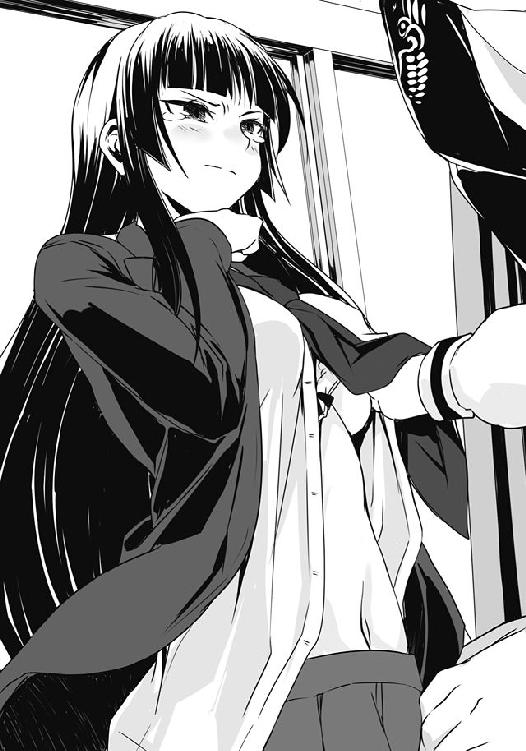
いつもは僕をゴミのようにしか見ない高圧的な白梅が、こんな顔をして僕にされるがままになっている......その、普段とは完全に立場が逆転しているこの状況に、僕はたまらない優越感を覚えたが、同時に形容のし難い罪悪感が湧き起こってくるのを止められない。そしてそれはさっきよりも白梅の目尻の雫が大きくなっているのを認めた時、一気に僕の心を支配した。
水の中に不意に落ちた時のような息苦しさを覚え、僕は反射的に白梅のブラウスの下から乱暴に手を引き抜き、狼狽えた足取りで数歩下がった。
「......お、終わりですか、佐藤君？」
らしくもない震えた声の白梅の顔を僕は見ることができず、床に視線を落としたまま、とんでもないことをしてしまった、という恐怖に打ち拉がれた。膝が、尋常じゃなく震えている。
「もっと、続けないとわからないですよ。......ね、佐藤君」
白梅が近づいてくる。俯いた僕の頭を胸元に押し付けるようにして、そっと僕を抱きしめてくる。頭に柔らかな感触が......ん？ 何だかさっきと感触が違うような......。まさか早速乳揉みの効果が出たとでもいうのか。さっきまでは掌で転がすのに程よい感じであったのが、この感覚からするとどう考えても手にあまりそうで......それに何というか、さっきまであった張りが薄れてモッタリという重い印象に。何だ、この僕の中の何かが訴える不快感は......？
思わず白梅を突き飛ばそうとその体を押すが、彼女は微動だにせず、代わりに僕の方が反作用で後ろへよろめいてしまった。
「どこに行こうというんだ、佐藤。さぁ、続きをしよう」
白梅の凜として透明感のある声ではない、その違和感に全身が震え、そして顔を上げた瞬間に......僕は真の恐怖に支配された。
そこにいたのは僕へ向かって両手を広げ、恥ずかしげに頬を紅潮させている小太りな神田君。醜悪なのは先ほどまでの白梅と同じ烏田高校の女子制服を着込み、彼女と同じように少しだけブラウスの前をはだけているということだ。
とんでもないことをしてしまったという感覚が胸の奥底で爆発し、喉から血が出るほど絶叫......しそうになった瞬間に神田君が僕の口に......口にぃ!!
「ふぃぃいでふよ佐藤ふぁん！ ふぎが待ってうんでふからドンドンイっひゃいまひょう！」
何をされたかさえ考えたくない僕はその嫌悪感に神田君もろとも後ろにすっ転び、肉に押しつぶされそうになりつつ、今し方聞こえてきた不快な声の方を見やる。僕らから少し離れた生徒会室の隅には、両手にソイジョイを持ってそれを口いっぱいに頬張りつつ、後ろから満面の笑みの白梅に乳を揉まれている鼻息荒い白粉が......。
な、なんだ、これは......地獄を再現したかのような、この有様はなんなんだ!?
その時、鍵がかかっていたはずの生徒会室の扉が吹っ飛ぶようにして強引に開けられ、数人の男が突入してくる。助けだ、誰かが助けに来てくれた......そう思った、一瞬だけ。
......現れたのが汗だく半裸のあの警備員のオッちゃんと二階堂、そして坊主と顎髭であるのを見れば、誰だって諦めがつくだろう......。そいつらが全員がハァハァしながら、次はオレやでぇヒロシィ......とかネッチョリとした口調で言っていれば尚更だ。
――佐藤、順番を変えよう、こんな連中よりオレの方がいいよな？ なぁ、ツードックスの相棒だろう？ ――思えば俺たちはお前がスーパーに来たばかりの頃からの付き合いじゃないか、なっ、馴染み同士仲良くヤろうぜ！ ――待て待て馴染みだってんなら俺だって！ ――ガキどもじゃかぁしぃわっ！ ヒロシはオレとの関係を求めとんのや！ ――佐藤、余所見をするな、今は俺たちだけの時間じゃないか。さぁ、続きをしよう。――ゴックン。ふぅ。あ、ほら佐藤さんが早くしないから待ちきれずに皆さんが突入してきちゃいましたよ!? このままじゃもう順番なんて関係なく......はっ、まさかの集団戦!? 男たちだけだからこそ出来る全員同時連結して展開する恥辱と快楽のバトンリレー!? 即ちそれはヌきつヌかれつのデッドヒート!? す、素敵過ぎますよ佐藤さん!! まるで夢のようです!!
悪夢だ畜生どもが!! と、僕はのし掛かってきている神田君を押しのけ、雄叫びを上げる。
その瞬間、僕は全ての事態を察した。そう、これは悪夢だ。悪夢に違いない。そうか、これは全て夢の国での出来事だ！ よくよく考えてみると「ハハッ」とか甲高い声で僕が笑うなんてあり得ない。あそこに夢だと気づくヒントがあったのだ......！
夢だとわかっていれば、罪悪感に苛まれることなく白梅にもっといろいろとすれば良かったな。チクショ......あ、いや、そんなことを言っている場合じゃない。たとえ夢だろうが何だろうが、襲われそうな状況に変わりはないのだ。
僕はここから逃れるために何か刺激を与えようとして、手近に武器になるものはないかと探すが、何もないときた。夢の世界なら五〇口径のハンドガンぐらい落ちていたって良さそうなものじゃないか。
......やむを得ない。僕は手を拳に固め、全力で殴りつける......己の、股間をぉ!!
凄まじい痛みに意識が飛びそうになるが、夢は覚めない。それどころか慌てた男たちに僕は床の上に仰向けに押さえつけられる。何とか暴れ、抵抗するのだが、いつの間にか先程までいなかったはずの矢部君や蔵田君まで交じりだす。......だが、諦めない。諦めてたまるものか！
３
「クソ、放せ！ 放せぇ!! 今こそ我が股間を叩き潰す時!! 砕け散れ、我が肉棒!!」
――落ち着け、佐藤！ オレだ、蔵田だ、おっぱい博士だ！ いくら刺激に飢えているからとはいえ、そんなハードなプレイはやめろ！ ――何を血迷っているんだコイツは！ おい蔵田、佐藤の足、もっとしっかり押さえろ!! 矢部、貴様は何佐藤の服を着始めてんだ!! それで入れ替われるわけねぇだろ！ ――オ、オレは......いや、僕は今日から佐藤洋になって金髪碧眼巨乳眼鏡従姉と......いいことするんだ！ ――いいこと......即ちおっぱいを......ゴクリ。――蔵田!? ......クソッ、この部屋には真っ当な奴は俺以外にいないのか!? 佐藤、起きろ！ 目を覚ませ！ 早く起きなければ大変なことになるぞ！ 主にお前の従姉が!!
「佐藤、来たぞー、遊びに行......って、佐藤、アンタ、友達となにやってんの？」
聞き慣れた声がした。生まれた時からずっと近くで聞いてきたその声は深い闇に差し込む一筋の光のようであり、自由奔放さを感じるその声質はまるで悪夢を打ち砕こうとする、かのＳＳの名作『ナイツ』のその飛翔の様を僕に連想させた。
僕はそれに導かれ、夜の海を泳ぐがごとくもがき、進み、そして――
「はっ!! 神田君、蔵田君......あと、矢部君も」
チガウヨ、ボクサトウヨウダヨ、と声マネをする矢部君の頭を神田君が引っぱたくのを見、そして枕元に置いてあった時計に表示された日曜日の一〇時三〇分という文字を確認して......僕はそこが自室であり、己が悪夢から生還したのを理解した。何故かパーカに赤いスカジャンを重ね着した著莪がボリュームたっぷりな金髪の頭をポリポリと掻きつつ、部屋をのぞき込んでいるのが気になるが......。
それからは自分こそがサトウだと言い張る矢部君を正気に戻し、著莪の胸から一瞬たりとも視線を外そうとしない蔵田君を自室に追い返したりしつつ、僕は着替えて従姉と共に寮を出た。
唯一理性のあった神田君曰く、何でも朝方に僕の絶叫が聞こえたので心配して部屋に来てくれた――部屋にいるときに僕があまり鍵はかけないことが幸い（？）した――らしい。しかし、その直後に著莪が寮に訪ねてきて、それを知らせようと蔵田君が、そして僕と入れ替わろうと矢部君が続けざまに部屋にやってきて......ということらしい。
「何で今日来たわけ？ しかもいつもと違ってコッソリ部屋に来たわけでなかったようだし」
僕は著莪からヘルメットを渡されると、それを被りつつ、言った。ヘルメットと革手袋を装着した著莪が寮の前に止めてあったバイクに跨り、エンジンをかける。
「ちょっと遊びに行こうと思ってさ。今回もこっそり入ろうと思ったんだけど、あのホラ、クラタだっけ？ ......アイツとたまたま玄関で出くわしちゃって。それですぐ呼んでくるって言ってくれたんだけど......ま、後はあんな感じだったわけ」
乗れ、というように著莪が後ろを指で示し、僕は彼女の細いウェストに腕を回し、バイクに跨る。軽快な音と共にすぐさま走りだした。こちらの意見を訊いてこないところを見ると、あらかじめ行き先は決めてあるらしい。僕は信号で止まるのを待ってから、問う。
「そんなの決まってんじゃん。......って、ひょっとして佐藤の方に電話ってきてないの？」
電話？ と僕は聞き返したが、その時には信号が変わってしまい、バイクが走りだしてしまう。エンジン音の中での会話はさすがに難しいので、僕は口を閉じて流れゆく風景を見やった。
一二月の青みの薄い空の下、空気を切り裂くようにバイクは走る。雲一つない快晴だけれど、僕らにぶつかる風は酷く冷たくて、著莪のウエストにしがみつく手が痛むほどだった。
僕は速度が緩んだタイミングで体を著莪の背中により密着させ、そして彼女のスカジャンのポケットに手を滑り込ませる。さすがにこれだとガッチリと体を固定は出来ないけれど、脇を締めるようにして著莪の体にしがみつくことで良しとする。
スカジャンを通り抜けてくる風に手の甲は冷えたままだが、掌と密着している体は、服越しの著莪のほのかな体温を感じられ、温かかった。
バイクはタイミング良く信号に捕まらず、徐々に車が多くなっていく道をひたすらに走る。
どこに行くのだろう、電話とは何だろう、昨夜感じたあの嫌な感じは結局何だったのだろう......そんなことを考えながら、僕は景色を見やり、たまにヘルメットの中に入ってくる著莪の髪の香りを感じていた。そうしていると、起きぬけだったせいか、何だか信号待ちの間に急いで訊くのも億劫になってしまい、到着するまで黙っていようという気になってくる。フルフェイスの著莪も喋るのは面倒なのか、特にそれについて触れることはせず、たまにふざけてバイクを揺らして僕を慌てさせ、笑っていたりするぐらいだった。
走っている間は言葉より、こういうコミュニケーションの方がいい。
そうして、しばらく走ったバイクはちょっと繁華街にある大きめのカラオケボックスの駐車場に到着。バイクを降りつつ、僕は口を開く。
「何だ、カラオケならもっと近くにあっただろう。何でわざわざ？」
「佐藤、ホントに何も聞いてないの？ 先週ぐらいに電話貰わなかった？」
「先週ぐらいと言われても特に何も......あ、いや......親父から何か掛かってきたな。いきなり電話口で自分の尿について語りだした瞬間に切ったけど」
「それそれ。佐藤、セガの『トイレッツ』って知らないの？」
トイレッツ。それはセガが開発したトイレを遊び場に変えるマシンであり......ややアレなものの、男性の小用のトイレにモニター付きの機器を設置し、マイクロ波センサーでその勢いや量を測定したりして遊べてしまうという近未来感が無駄に漂う凄いものなのだ。ただ測定するだけではなく、それによって液晶モニターの中で様々な遊びができたり、そこに広告が......あっそうか、親父の電話はこれをプレイした感想と自慢を僕に聞かせようとしていたのか！
僕の様子から合点がいったとわかった著莪は、ヘルメットと手袋を脱ぐと満足げに頷いた。
「そ。それがこの店にあるらしいんだよねー。だからセガ好きとしては是非とも遊ばないと」
「でも著莪、あれって男用しかないじゃん。まさか水鉄砲でも持ってきたってのか」
まっさかぁ、と著莪は不敵な笑みを浮かべて僕を見てくると、ヘルメットを外したばかりの僕の顔を両手で包み込む。風に冷やされたその手は、やたらに冷たくて僕はビクッとなる。
そして......直後、それとは違う意味でビクッとなった。
「出すのは佐藤。アタシは応援ね」
「......それはつまり、アレか。僕が尿意を思うさま解き放っている姿を後ろから見られて」
「より詳しい状況確認するために、たまに横から見たりもする予定だったり」
――モロじゃん。――モロですな。と、僕らは互いに言って笑い合......うわけがない。著莪だけが眼鏡の奥を楽しげに綻ばせるばかりで、僕はげんなりである。
「さすがにそれはダメだろ......」
「いいじゃん、従姉弟なんだし。昔は一緒にお風呂に入って、触らせてくれたじゃん」
「昔だし、風呂だし、いろいろと違うっての」
いいじゃーん、と著莪は言いつつ僕の頬を両手でこすり合わせるようにして揉みしごく。
「そもそもモノを見せるだけでも抵抗あるってのに、それに加えて......。立場を逆にして考えたら著莪にも嫌だってわかるだろ」
「え〜、ここまで来てそんなこと言うかなぁ。......チェッ、仕方ないな。じゃ、こうしよう。見せてくれたら、今度アタシのも......」
「.......................................................................................え？」
何を言われたのか、僕は著莪の言葉を咀嚼するのに幾ばくかの間を要した。そして、本気か否かがわからず、いつもと違う時間に散歩用の紐を見せられた犬のように目を丸くして相手の顔を見つめる。
著莪の目は、冗談めいてはいなかったが、同時に本気とも取れない、さも当たり前のことを言ったかのようで――あ、イタッ。
「なぁんてね。ホラ、行くよ。後ろから見るだけにしといてやるからさ」
頬を撫でていた著莪の手が、僕の眉間にデコピンを放ち、彼女はさっさと歩きだしてしまう。両手をスカジャンのポケットに入れ、散歩する犬の尻尾のように髪を揺らして。
僕はいささか納得はいかなかったけれど、さすがにふて腐れてここに残るわけにもいかず、さっさと歩いていく著莪の背中を追いかけた。
覚悟を決めた僕は、部屋に入るなりアイスコーヒーをピッチャーで頼んだ。そして著莪とともにセガの社歌『若い力』を探すものの相変わらず入っていないことに不満を述べて、『セガカラ』があればな......と、ボヤく。ちなみにこれは僕たちがカラオケに来た時の通過儀礼的なものであり、何かの間違いで入っていたりしないものかと淡い期待を抱くものの、今のところその間違いが起こった例はなかった。
まぁそんなこんなで著莪が『Treasure!』という持ち歌を唄ってから『セガサターン、シロ！』やら『サクラ大戦』の曲を片っ端から歌うのを聞きつつ、僕はひたすらコーヒーを飲みに飲んだ。――プレイする以上は全力で、それが佐藤家の掟である。
コーヒーの利尿効果のせいか、それとも単にバイクで走って冷えていたのか、割と早い段階で僕は強烈な尿意を催し、限界まで我慢した後、著莪を連れてトイレに駆け込んだのだった。
無論、男用トイレエリアに他の人がいないのを確認してから著莪を中に入れ、そして小用便器に設置されているホントに近未来的なデザインのマシンに向かって......尿を解き放った。その姿はまさに溢れ出る力に逞しくも激しくのたうち回る龍が如く......!!
最初、センサーの位置がわからなかったものの、少し離れて便器の中にある模様に当てるようにすると......もう凄いぞ？ 前の人の記録などいとも簡単に打ち破り、そこから先は自分自身との戦いが始まったのだ。約束通り後ろから見ていた著莪も、僕の肩口からトイレの上に設置された液晶モニターを見やり、歓声を上げるほどだ。
我慢していた尿を解放することが即ち得点となる......この二つの要素が合体することで、僕は今まで体験したことのない快感を覚えた。......なるほど......声を大にしてプレイ内容を人に言えないという大きな問題点はあるけど......これは、ちょっと楽しい。
素晴らしい結果とともに全てを出し切り、不思議な達成感を覚えながらズボンのチャックを閉める。僕は著莪からの賞賛を浴びつつ手を洗い、彼女とともに男トイレを出た。
......そして、そこでとんでもないトラブルが僕たちを待ち受けていたのだった。
扉を開けた瞬間、そこにはトイレに入ろうとしていたらしい僕らと同じぐらいの年齢の男がいた。多分地元の高校生だと思うのだけれど......問題は僕の後ろに著莪がいることと、そしてその瞬間にタイミング悪く口走った彼女の台詞だ。
「ビックリするぐらいいっぱい出たね。......飲むの、大変だっただろ」
......無論、尿とコーヒーの話である。しかしその場の状況を鑑みるとどうしても下な話に変換されてしまうのは間違いなかった。いや、まぁ下な話なんだけどさ。
誤解だと懇切丁寧に目を丸くしている学生に説明するのはさらに混乱を招く恐れがあったため、僕は状況を理解していない著莪の腕を慌てて掴んでその場から個室へ逃げ込んだ。
偶然のタイミングってのは恐ろしく、そして日本語ってのは難しい。童貞先生こと石田先生も、きっとあの時はこんな気分だったんだろうか。
「あー、さっきのはそういうことか！」
入室するなり靴を脱いでソファの上で寝転がった著莪は、僕の説明を聞くと足をバタつかせるほど大笑いした。入室した時にスカジャンとパーカを脱いでおり、長袖のシャツ一枚のために、強調されている胸元が揺れて、ちょっとエロい。
「じゃ、アレかな。アタシと佐藤ってやっぱそういうふうに思われちゃったかな」
多分ね、と僕はため息混じりに言ってソファに座ると、著莪はテーブルの上にあったマイクを持ち、背中をソファの上で滑らせるようにして近寄ってくると僕の足に頭を乗せる。その顔は楽しげに笑ってはいたが、さすがにほんのりと頬が赤い。......多分、僕も同じだと思う。
僕は誤魔化すように、もうこれで満足か、と少しカッコつけて言ってやる。
「とりあえず歌ったし、トイレッツ見たし......うん、満足かな。二時間部屋取っちゃったから、あと一時間ちょっと、佐藤も何か歌いなよ」
僕は歌本を手に取ると、著莪の額の上にわざと重いその本の背を乗せて彼女の顔を隠すようにして開く。ぐぬぅ、とわけのわからない声が彼女から漏れた。
「そういやさ、佐藤たち、朝っぱら何であんな大騒ぎになっていたの？」
「うーん、昨夜ちょっといろいろあってさ......」
僕はチラリと歌本から著莪の胸元へと視線をやる。......うん、昨夜の誰かじゃないがいい乳である。ある程度の大きさを超えると、平常時以外にも俯せなら俯せで、仰向けなら仰向けで、それぞれ趣の違った形を取り、僕らにその魅力を見せつけるものだが、今の彼女の胸元はまさにそれだ。大きく、柔らかい、それ故になだらかなラインを描いて盛り上がっている。
僕は歌本で彼女の視線を遮っているのをいいことに、その胸元を凝視しながら昨夜の会議の話をしてみた。
「うーん、特にアタシは何もしてないけど......やっぱ遺伝じゃないの？ ママの家系はそうでもないけど、パパの家系はホラ、結構アレらしいじゃん。それ以外だと......ま、アタシの場合はアレかな。......佐藤が夜な夜ないろいろしていたせいじゃない？」
ビクッと僕の全身が震え、硬直した。
「そ、そんなこと......」
僕は言葉に詰まり、変な汗が全身から一斉に噴き出す。鼓動が早鐘のごとく鳴り始める。
歌本で顔が隠れているが、著莪がニヤニヤと笑っているのは間違いないという確信があった。
もちろん毎回一緒に寝ている時に何かしているわけではないし、実際問題数えるぐらいのもの。うん、そそそう、ひっ、頻繁になんてしていないぞ！ 仮にしたとしてもかわいいレベルのもので......くそっ、僕は一体誰に対して言い訳しているんだ！
例えば......ほら、先月の末に著莪と二人で爺さんの家に泊まりに行った時とかも......。婆ちゃんの作ったリンゴジュースを飲んでいたらいつの間にか意識がぶっ飛び、気がついたら布団の中で著莪と一緒に寝ていた時だ。カーテンから差し込んでいた朝日を顔に浴びて、彼女よりも先に目を覚ました僕は......その、何というか。寝ぼけ眼のまま、僕に抱きつくような感じで寝ていた著莪の腰回り......まぁ、正直言うとお尻なんだけど、そこをちょっとだけ手で撫で回したりとかいう......かわいいレベルで、その......。いやね、僕らのパジャマって爺さんの家に置きっぱなしになっているんだけど、それが小さくなっていて、パッツンパッツンで......その......う、うん。何て言うか、逆にそうなったことで触り心地が凄く良かったというか、ピッチピチに張っているのに触ると柔らかく、またそうであるのに手を押し返してくるようなプリッとした......なんというか......クッ、クソ、それらが全部モロバレだったというのかっ!?
「してない？ ん？」
一文字一文字、全てに笑いを含めた著莪の言葉が、僕を責め立てる。喉に真綿を詰められたかのように息苦しくなり、このままでは膝が震え始めるかもしれない。無論、そこに著莪は頭を乗せているので、すぐにわかるだろうし、そこまでいくと何か、ガチでヤバイことをしたみたいに思われるかもしれない。
僕は、本当に深刻な状況に陥る前に「す、少しだけ。......ごめん」と正直に述べた。
「ん？ 別に怒ってるわけじゃないって。そんなマジな声出すなよ〜」
「いや、でもさ......。ごめん」
おちょくるように著莪は言って、歌本を除けて起き上がると、おやつをねだる犬のように、ソファに手をついて、僕の肩にその細い顎先を乗せてくる。
彼女の温かい吐息が、僕の頬と耳を擽った。
「だからいいって。本気で嫌なことされてたら、その時言ってるしね。......ま、ここの料金奢りってことでいいよ」
僕は頷いた。それ以外の選択肢なんて、ないだろう。
「......それにさ。アタシも寝てる佐藤にいろいろしてるし」
えっ？ と、僕は漏らし、思わず著莪の顔を見ようとしてしまう。無論肩に顔が乗っているので、僕の鼻先が彼女の眼鏡のフレームに当たり、反射的にお互いに離れた。著莪は眼鏡を直しつつ笑い、それを見て僕もホッとして、ごめん、と笑った。
「ま、アレかな。ともかく白粉には従弟としばらく一緒に暮らすよう薦めたら？」
話が夜の告発の件から離れ、僕はさらにホッとした。......いや、本気で僕がガクガクブルブルなり始めていたのを察して著莪が意識的に元の話に戻してくれたのかもしれない。
「さすがにそれは無理だろ。もうちょい現実的な方法とかがないと......」
著莪は僕から歌本を取ると、それを開きながら、頭をポリポリと掻く。
「うーん、小さいのは小さいなりの良さがあると思うけどなぁ。そうやって説得すんのはダメ？ ......まっ、ダメだよね。それじゃ、ホラ、仙の縄張りによく出る茶髪の人に訊いてみたら？ あのサイズはさすがにただの遺伝ってだけじゃないだろうしさ」
言われてみれば、確かに。ある意味一番適切な人がいるじゃないか！ ......しかも、なんだ......白粉の悩みをダシに、真正面からその種の話題を振ることが出来る!! 僕個人としても茶髪のおっぱいの秘密が知りたい、聞きたい、セクハラトークしたい!! ......ゲフンゲフン。
いい案だろ、と、著莪は笑い、リモコンで何やら番号を入れる。マイクの一つを自分が、もう一つを僕に渡してくる。デュエット曲らしい。
「あ、そうだ。イブじゃない方のクリスマスにさ、ファミ部でクリスマス会やるんだけど、佐藤も来る？ アタシもそれのために実家から『クリスマスナイツ』持ってきているんだよね」
『クリスマスナイツ』はセガのソニックチーム製作による『ナイツ』のクリスマス仕様特別ファンディスクのようなものだ。『ナイツ』は楽しい夢の世界を悪夢に変えてしまおうと企むワイズマンを打ち倒すために、少年と少女、二人の主人公が、ワイズマンに反旗を翻したナイツという存在とともに夢の世界を飛び回るゲームである。セガのゲーム全般に言えることだけど、プレイするだけで楽しい操作性、体が動きだすような音楽、老若男女関係なく好感の持てるデザイン等、ナイツがダンスを踊るように飛び回る様は見ているだけで引き込まれるほどの魅力があって......かなりの名作だ。余談だがこれをクリアした時、僕はマルチコントローラーを手にしたまま感動のあまり噎び泣いた。今のような映画並みのハイクオリティムービーもないくせに、っていうか台詞一つないくせに、あの心に優しくジンワリ、心地良く染みてくる感動は他ではなかなか味わうことができないものだろう。
......で、『クリスマスナイツ』はその本編の物語の半年後を描いた、ショートストーリーのゲームで、我が家では毎年クリスマスシーズンになるとこれをプレイし、当日は親父が育てたシーマンとクリスマス用の会話をするのが伝統となっていた。ちなみに僕らが幼い頃には『クリスマスシーマン〜想いを伝えるもうひとつの方法〜』という、わずか九日間しか発売されなかったソフトを使って、著莪の家と僕の家で想いを伝え合ったとかいう思い出話も聞いたが、僕にはほぼ記憶がないのでこれに関しては割愛しておこう。
「クリスマスか。行こうかな。うちの高校、二二日が終業式だから、クリスマスには槍水先輩とかも実家に帰っちゃうだろうし。丸富は二六日だっけ」
前の日までは普通に半額弁当を狙うものの、連休に入るなり茉莉花のためなのか、すぐに帰省するのが先輩の通例なので今回もそうなるに違いない。クリスマスともなれば尚更だろう。
「ＯＫ、みんなにそう伝えておくね。......あ、そうだ。出し物で佐藤とこれ、歌おうかな」
なんぞ？ と思う間もなく、スピーカーから聞き覚えのある曲が流れ始め、著莪がニッコリと笑って僕を見てくる。男女のデュエット曲、『ナイツ』のＥＤ曲の『DREAMS DREAMS』だ。それは明るく、優しく、そして楽しく、綺麗で......凄く素敵な曲。一度聞けばすぐに虜になることは請け合いだ。しかもコレ、英語の曲なのだけれど、歌詞もまたたまらなく良くて、辛い時に歌詞を意識して聴いていると涙がこぼれる。
僕にとっても著莪にとっても、小さな頃からのお気に入りだ。
僕たちは楽しい夢を見ている時のような気分になれるその曲を唄う。僕の胸の奥にあったさっきまでの危機感は綺麗に消え失せていく。......だから、ちょっと気になっていたことを、曲の合間に著莪に尋ねてみた。
「さっき著莪も僕にいろいろしてるって言ってたけど......僕、寝てる間に何されてんの？」
著莪は「ん？」という顔で僕を見ると、はにかむように笑い、そして一言だけ口にした。
――ヒミツ、と。
４
誤解。それはちょっとしたミスや、説明不足、勝手な思い込みが生むものだ。もう少し相手に丁寧に伝えよう、もう少し相手を理解しよう......そんな些細な気持ちがあれば誤解なんてものは生まれず、互いを理解し合え、世界はより素晴らしいものになるはずなのに......人は怠惰に染まり、誤解を生む。まるでその代償とするかのように些細な誤解は時として深刻な事態を生んでしまう。それは石田先生然り、昨日のカラオケボックスの著莪の発言然り......。
......今だってそうだ。日曜の朝にあんな酷い夢を見てしまったがために、登校してきた僕は白梅の顔を見るのが辛くて仕方がなかった。
たとえ夢とはいえ、妙に生々しかったそれはガッツリと僕の胸に負い目を残していて、顔を見ると嫌でもあの涙を溜めつつ僕を睨む彼女の顔が思い浮かんでしまうのだ。
だから......それとなく白粉の様子を尋ねてくる白梅に対し、まだ調査中であることを伝えるとともに......理由は訊かずに僕を一発殴ってくれ、と言ったのだ。そうすればこの胸の中にある負い目など一瞬にして消え失せ、いつも通りの日常を取り戻せる......そう思ったのだが......。
「変態ですか？ 頭でも打ったんですか？ 朝からいきなり何を言っているんです」
呆れ果てたかのように言い捨てられると、白梅は淡々と一時限目の授業の準備を始めてしまう。無論、ここで引き下がるわけにはいかない。僕は椅子を跨ぐようにして座ると、ノートを開こうとしていた彼女の左手を両手で掴む。普段から僕を軽々吹っ飛ばせるぐらいの攻撃を繰り出しているとは思えないような華奢な手で......夢で感じた彼女と同じように、きめの細かい滑らかな肌だ。柔らかで、冷え性なのかそれとも登校したばかりだからなのか、ちょっと冷たい。両手で包んでずっと温めてあげたくなるような......そんな、手だった。
「この手で、いつものように僕を――！」
「やめてください。気持ち悪いですよ、佐藤君」
虫でも除けるかのように僕の手を払うと、何事もなかったかのように彼女はノートを開いた。
「しかし困りましたね。原因がわからないとなると......。やはり土日に無理やりにでも家に連れてくるべきでした。せめて食事だけでもちゃんと摂らせてあげないと。今日明日にでも何か食べやすいもの......お粥や......そう、果物とかでも用意して――」
「気持ち悪いならいつもみたいに殴ってくれよ、なぁ白梅！ あ、バイバイっバイバイっ！」
「......怒っていいですか？」
「ハイキタァッ!! 待ってました！ さぁ白梅、来いッ!! いつもみたいに一発、ズキュゥーンっと！ ホラっ、どうした!? カモーン!! メメタァって感じでも可だぜ!?」
......あれ、どうしたのだろう。白梅が眉間に皺を寄せ、額に手をやって頭を軽く振りつつ深いため息を一つ。......頭痛でもするのだろうか。
「......もういいです。だから、こっちを見ないで、大人しく前を向いていてください」
そんな!? どうして!? と喚き散らす僕の肩にポンッと誰かが手を置いた。見やれば......何やら悲痛な顔をした、内本君だ。
「やめるんだ佐藤、見苦しいぞ。恥を知れ。......そんなふうに乱暴に快楽を求めて何になる」
言われるがままに僕は辺りを見やれば......アレ？ 何か、クラス中はおろか、廊下にいた生徒まで教室をのぞき込んでこちらを見ているぞ？ 何がそんなに珍しいのだろう。
「自らの欲望のために誰かに迷惑をかけるもんじゃない。もっとスマートに生きろ、佐藤」
小太りの内本君にそう言われ、僕は意味がわからずしばしポカーンとしていた。そんな僕を正気にさせてくれたのは廊下から教室をのぞき込み......。
「うわぁ......気持ち悪い」
と、呟く、嫌悪感丸出しのウルフヘアだった。
誤解だ！ そう説明しようとしても全てが遅く、状況は悲しみが支配していた。僕の説明が不十分なばかりに、彼らにもっと僕を正しく理解しようとする気持ちがない故に......あばばば。
放課後のＨＰ同好会の部室では、ノートＰＣを開いたままタイプすることなくワープロソフトを起ち上げただけでため息ばかり吐いている白粉、その横で朝のショックから立ち直れない僕は椅子に座って大きな円卓に突っ伏し続けていた。
朝一番に白梅の一件があってからというもの、僕のテンションは地を這うがごとくであり、白粉もまた相変わらずの様子ときていた。当然部室は葬儀場よろしくという空気になり、遅れてやってきた槍水先輩をたじろかせてしまった上、「今日は狩りに出るのはやめて帰った方がいいんじゃないか？」とまで言わせてしまったのは、さすがに心苦しかった。
しかしヘタに説明すると白粉の思春期特有の悩みを本人の前で曝露してしまうことになるし、何より「白梅に殴ってもらえず、スッキリしない」とか口走ってしまった暁には先輩にすら変態だと思われてしまうかもしれない。......経緯も語れば確実だろう。
「まったく、どうしたんだお前たちは。白粉に続いて今度は佐藤か。......何だ、その、先週白粉にも言ったが、悩みがあるのなら私に話してくれてもいいんだぞ？」
先輩は窓に背を預けるようにして立ち、軽く腕を組みながら僕らにそう優しく言ってくれる。
季節が冬になってからは日没時刻が急激に早まったこともあり、部室内でもさすがに照明をつけていた。それは部屋の隅にさりげなく設置されていた薄ボンヤリとした間接照明であり、橙色の暖かみのある色だ。
......だからだろうか。心配してくれている槍水先輩が妙に優しげに見えてくるのは。
彼女は以前と同じように、テーブルゲームの相手をして僕らの気を紛らわせようとしてくれる。実際、不思議なものでゲームを遊んでいると、気が楽になるものだ。白粉も、少し、笑っていた。
「さて、と。そろそろ行きますか」
しばらく遊んでいるうちに、心の奥にあった白梅への罪悪感やら今朝以降のクラスメイトからの冷たい視線や、矢部君秘蔵のエロティカルな本を借りたものの、誤って水をこぼしてしまったのをいまだに黙ったままでいることとか......そんなネガティブな気持ちは自然と薄れていき、僕は見失いそうになっていた当初の目的を思い出した。
「ん？ そんな時間か。......しかし大丈夫なのか。調子が良くないのなら......」
将棋の駒を片づける先輩は、手を動かしながらも席を立った僕を見上げて、言ってくれる。「いえ、ちょっと会いたい狼がいるんで。アブラ神の店に行ってきます。会えなかったら、戦わずにジジ様の店で待つかもしれません」
「そうか。なら、私は他の店にしよう。白粉はどうする？」
「えぁっと。あたし、やっぱりちょっと食欲がないので......はい。実はもう家からソイジョイのフルーティートマト味を」
そっか。僕は白粉の頭を一撫でしてから、スカジャンを羽織り、部室棟を後にした。
日も暮れてしばらくともなれば外の空気は冷え切り、口を開けて息を吐けば白色が漂う。
気象というのは気まぐれだ。今年は夏の暑さが秋頃まで尾を引いていたというのに一二月に入った途端にこの寒さだ。ニュースによれば、この辺りでも早朝に一、二度雪が降ったらしい。
澄んだ空気を通してやけに輝いて見える星々を見やりながら、僕はスカジャンの前を閉じ、ポケットに両手を突っ込んで一路アブラ神の店へと向かう。
沈んでいた気持ちはもはやない。前を向き、足を前へ。先輩と将棋をしているとわかるのだが、うまい人というのは一手に二つも三つも意味や効果を持たせるものだ。たった一手指すだけで僕の複数の駒の動きを封じつつ、同時に攻撃を仕掛けてくる。それを見ていて、ふと、僕もまた一手指すだけで全ての問題を解決出来るのではないか、そんな考えが浮かんでいた。
......そう、全ては白粉の胸を大きくするため。そして、そうすることで白梅への罪悪感も消えるかもしれない。先輩と遊んでいて、そう思えるようになっていたし、そもそもその罪悪感は夢のせいである。こっちを気に病む必要はない。むしろ悩むべきは内本君にさえ哀れまれ、スーパー以外でも変態の名が広がりそうな前兆を来していることだろう......。
僕は歩きながら頭を振り、余所事を追い出した。今どうしようもないことを考えるぐらいなら弁当のことを少しでも想うべきだ。茶髪に会うという目的はあれど、夕餉の糧を求めて狩りの場へ赴こうとしているのは違いないのだから。
僕は胸を張って、アブラ神の店へ足を踏み入れる。そして、きっかり二〇分後にポケットに手を突っ込んだまま外へと踏み出した。......争奪戦が始まるまで待ってみても茶髪が来なかったのだ。毎日のように会っている気もするのに、こういう時に限ってなかなか会えない。
結局、久しぶりに会ったジョニーがいたので、彼から東区の近況や、最近《サラマンダー》が地方の主要スーパーで頻繁に目撃されているなどの話を聞いたりしただけであった。
チーズと大葉をはさんだ鶏ささみフライの弁当とか、スゲーおいしそうだったんだけど、参戦して変にダメージを負ったりするとジジ様の店に行けなくなることを懸念したのだ。
僕はより強く感じるようになった空腹を抱え、かなり時間は早かったものの、ジジ様の店へ。さすがにこの季節ともなると外で時間は潰せない。
ジジ様の店へ入ると、時間が早いこともあっていつものピリッとした緊張感は存在しなかったが、すでに殺気立っている僕の腹の虫は意識せずともその力を滲ませ、神経を鋭敏化させる。そこで、ふとこの店では珍しい気配が一つ。
「何してるんだ、お前。珍しいじゃん。しかもこんな時間に」
「え？ あ、うわ、変態だ......」
青果コーナーに佇んでいたのはウルフヘアだ。まだ緊張感がないせいか、彼女の目にはいつもの鋭さはなく、髪の毛もへたっていて、いわゆる普通の女の子のように見えていた。
僕が横に並ぶと彼女は嫌そうな顔を隠そうともせず、おまけに半歩遠ざかりやがった。
朝の一件は誤解であることを説明しつつも、彼女が何故縄張りでもないこの店にいるのかを訊いてみると、ビッグ・マムの店の弁当が今日も半額になる前に売り切れてしまったらしい。
「今日も？」
「うん。最近あそこの総菜やお弁当が人気でね。元々そうだったけど、近頃はさらにそれがエスカレートしちゃって。柚子さん、ビッグ・マムと一緒にいろいろ頑張ってるみたい」
あぁ。あの人、きっとビッグ・マムと働けるからって、気合い入れているんだろうなぁ。
「それで最近はダメだった時に備えて、ちょっと早めに行くようにしてるんだ。それで、今日、ココ。ただ、このスーパーも今日はちょっと厳しいかもなぁって思ったりしてるけど」
「まぁ、槍水先輩は来ないにしても、僕がいるからな。そう簡単には――」
「......お弁当の話だよ。佐藤君も見てきたらわかると思う」
何か呆れられたので、言われるがままに僕は青果コーナーから離れ、総菜・弁当コーナーを見に行った。そして......顔を顰めて再びウルフヘアのもとへ戻る。
「なるほどな、弁当が三つだけ。しかも一つはミニときている」
「狼たちが実質的に狙うのは......一食分になる二つの弁当だけ。しかも一つは味噌煮じゃないにせよ、サバの弁当。ココの人気なんでしょ？」
今回残っている弁当は小さなお握り二つと卵やウィンナーといった王道的弁当のおかずが入った小さな容器の『ミニ・お握りセット』。もう一つは一見ただの唐揚げ弁当に見えるものの、その名前を見ると何らかの工夫がされていると思われる『塩わさび唐揚げ弁当』。そして、ジジ様の店では人気のサバ系......『サバの味噌焼き弁当』である。ここでいう味噌焼きというのは、サバの半身の上に生姜や長ネギ等の薬味を刻んで味噌に混ぜられ、これを塗り、その上に香ばしさを感じさせるために焦げ目をつけて焼いたものだ。以前に一度口にしたことがあるのだけれど、これがうまい。どうしても感じてしまうサバの臭みを鮮やかに消し去るとともにご飯が欲しくて欲しくてたまらなくなる味なのだ。
「さすがに前回みたいな持久戦にはならないと思うけど......確かに厳しい戦いになるな」
ウルフヘアは頷くとジャケットのポケットに手を入れ、そろそろ鍋が恋しくなってくる季節故に、店内でも一際目立つ値札が貼られた白菜の山を静かに見やる。僕もまた、彼女と同じように、こちらもまた鍋には欠かせない長ネギを見やりながらスカジャンのポケットに手を入れる。そして、いささか早いが長ネギ＝薬味＝サバの味噌焼きを連想し、腹の虫を刺激して、力をため込むのに意識を向けた。
何となくだが、予感がするのだ。あの味噌焼きのサバの身の厚み、大きさ、そして身と味噌の間に、蓋越しにも確認出来た多量の脂......。ひょっとしたら、あの弁当は至るのではないだろうか。僕ら狼が等しく一番に望み、半額神が胸を張るに値する半額弁当の証......月桂冠に。確証はなかったが、僕はその予感を密かに感じていた。
いや、仮にそうならなかったとしてもだ。あの溢れ出たサバの脂が味を調整された味噌を溶かし、混ざり、そして身にその味を染みこませているんじゃないのか。表面だけじゃなく、身の奥まで。......その可能性に思い当たってからというもの、腹の虫はすでに覚悟を決めていた。
月桂冠に至ろうと至るまいと......そして茶髪が現れようと現れまいと、僕はあの弁当を狙う。
しばらく僕とウルフヘアの間を沈黙が埋め、それぞれがそれぞれの戦いのために集中する。しかし狼と思しき気配が入店すればその度に彼らに視線を送り続けた。そうしているうちに自然とウルフヘアの髪は逆立ち、そして目つきは鋭さを増していく。
ザワリ、と僕の肌が何かを感じ取ると同時に店内の空気がわずかに変化した。嫌な感じはないが、しかし張りは確実に増した。......茶髪の来店である。
胸元が窮屈そうに張っている白いＰコート、背の中ほどまである軽くウェーブがかった茶色の髪。そしてコートの裾からわずかばかりにはみ出す烏田高校のスカートの裾と、寒さに負けじと黒のハイソックスだけ装備した健康的な生足がやけに眩しい。......どうでもいいんだけど、この、他は厚着しているのに足回りだけ肌が露出しているというのは独特のエロさがあるように思う。だから僕は薄着になる夏も好きだが、同じぐらい冬も好きだったりする。
多分ニーソにおける絶対領域と同種の興奮なのだろう。何というか、そのポイントだけ無防備な感じとでも言おうか、重要な部分なのに守りが薄いというか......その、何だ。う、うん。まぁいい、ともかく今重要なのは胸の方なのだ。
僕はウルフヘアと別れ、茶髪が弁当コーナーを回った後に落ち着いた駄菓子コーナーへと向かう。僕が隣に並んだ時、彼女はＰコートのボタンを外し、胸元を惜しげもなく飛び出させた。
そのまま横からただ眺めるだけでも凄さは実感出来るが、わかりやすいのはネクタイだろう。学年ごとに色の違う女子生徒のネクタイだが、これが茶髪の胸元に真ん中ぐらいまでかかり、そこから先は垂れ下がっている......当たり前といえば当たり前だが、問題はその垂れ下がったネクタイが作る直線と彼女のウェストのラインとの差だ！ 即ち直立して立っているだけでトップバストとアンダーバストの差、即ち突出レベルを如実に表していると言って良く......拳一つを差し込めるほどのその空間は僕たちに夢と希望を無尽蔵に与えてくれる。無論、ネクタイはバストの谷間にあるわけだから、実際にはさらに......ぬぅ。
しっかり意識したことはないが、これが白粉だったらきっとネクタイはお腹までピッチリ貼り付けたかのようになっているに違いなかった。......後で確認してみよう。
ペチッと、茶髪は僕のこめかみを指で弾く。
「何よ、ワンコ。さっきから人の胸元ばかり見て」
苦笑する茶髪は腕を引くと、その手で胸元を下から掬うようにして軽く腕を組んだ。......僕を誘っているのか、とも思ったが、多分、これ、その体勢が楽なだけなのかもしれない。あれだけのサイズがあると相当に重いに違いない。
「あ、いや、その......いきなりな上に、スーパーで言うのも何だけどさ。......凄い、よね」
見知った相手とはいえ、いや、そうであるからこその抵抗を覚えつつ、僕はそう言ってのけた。白粉のため、そう、これは人助けであって......あ、先にそれを伝えるべきだったかっ！
茶髪が何か言おうとするのを遮り、白粉が実は貧乳をこじらせてとても危険な精神状態になっていることを告げ、その解決策を現在模索している旨を彼女に伝える。胸だけに旨ってね！ と、軽快なギャグを挟んだが、早口で必死さが出てしまったかもしれない。セクハラに対する言い訳に思われやしないかと心配したが、茶髪はプッと吹いてくれたので、僕はホッとした。
「あのコ、最近なんか腹の虫とうまくいってなさそうだったけど......そういうことか。まさか食欲がなくなるまで悩むなんて」
一応、僕の友人たちからのアイディアも伝え、それとは別にもっと具体的かつ効果的なバストアップの方法があれば教えてほしい......と、誠実かつちょっとこの正面突破のセクハラトークに普段はなかなか感じられない――というか、スーパー内で感じてはいけないであろう楽しさを覚えながら、僕は言った。
茶髪は少し困ったような顔をして、その毛先を指でいじる。
「うーん。弟はいるけど、他に妹や姉がいないからはっきりとは言えないけど、私の家系ってそんなに大きい人はいないかな。だから遺伝とかじゃないと思うんだよね。それで――」
「ほぅ!? 遺伝じゃない！ ということは何らかの手段を持って世界を相手に出来るほどの大胆不敵なワガママボディを手に入れたと!? そういうことなのか!?」
「......ワンコ、声デカイ」
はっ！ しまった、つい口から心の声がダイナミックで飛び出してしまった！
茶髪はさすがに顔を背ける。僕は慌てて辺りを見渡すと、どこぞの狼が「何だアイツ」みたいな顔でこちらを見やりなが通路を歩いていき、他の狼もこちらを意識している気配がある。
まずいな、何だか僕が茶髪にセクハラしているみたいに思われるかもしれない。誤解だ、これは白粉おっぱい育成計画のために！ と説明したいが、それはそれで十分にヤバイ気がしたのと、時間的にそろそろ半値印証時刻が迫っているので、一旦諦めた。
「それで、その......手段は？ どうやって......その、大きく？」
何だかもう、白粉のためとか、白梅への罪悪感を拭うためとか、そんなのどうでもいいから僕は茶髪から全てを聞き出したかった。......何か無性に楽しいぞ、こういうの！
多分だけど......と茶髪が前置きをしている間に、店内の空気が痛いほどに張ってしまった。いつもはゴクリとツバと息を呑むが、この時の僕は舌打ちを放ち、店内に現れ、商品の陳列を直し始めるジジ様を忌々しく見やってしまった。
「あ、そうか。......丁度いい。ねぇ、ワンコ。タダで教えるのも何だしさ、こうしない？」
「交換条件か。ＯＫ、いいよ」
茶髪は何か含みを持った視線でジジ様を見やるばかりでその条件を言ってこない。口元にうっすらと浮かんだ笑みからするに、何か考えているというわけでもなさそうだった。
そうこうしているうちに、ジジ様が総菜に半額シールを貼りだし、ついには弁当コーナーへ。『ミニ・お握りセット』、『塩わさび唐揚げ弁当』の上に半額シールが舞う。そして......。
「ワンコ、私からの条件は簡単よ。勝って、今夜の半額弁当を手に入れること」
「......どういう意味？ そんなの言われなくても......あっ」
シール台紙を持ったジジ様の手が、懐に行く。そして別のシール台紙を取り出し、そこから一枚を『サバの味噌焼き弁当』の上に......貼った。月桂冠だ！
まさかと思いつつもやはりと感じる、その光景。ジジ様の月桂冠、サバ系弁当。今宵の激戦と勝利者に与えられる至福が最高のものであることが約束された瞬間だった。
全身の毛が逆立つほどにゾクリとくる張りつめた空気の中、ジジ様が月桂冠の仕上げにと筆ペンを走らせる。そして彼は全ての作業を終え、スタッフルームへと戻っていく。
「話は最後まで聞くように。いい、ワンコ。条件は勝って弁当を手に入れること......ただし」
ジジ様が店内へ向かって一礼、そしてスタッフルームの扉を押し開き、その姿を向こう側へ。扉が閉まり行く。......それを見るとともに腹の虫の加護が全身に行き渡り、顔は茶髪の方を向きつつも、僕の足は軽く曲げられ、体は自然とやや前傾姿勢になる。
いつでも飛び出せるように体は、戦いの火ぶたが切って落とされるその瞬間に備えた。
早くしろ。何をしている、早く条件を言え、争奪戦が始まってしまうぞ、シーリーコート！
胸の内で僕が訴えた瞬間、茶髪はまっすぐに、しかししたりげな笑みでもって僕を見据える。
「ただし、必ず......私の次に勝つこと」
僕は茶髪が放った言葉を理解出来なかった。彼女は今、一体、何と言った？
だが、状況はそれを問いただすことも考えることも許さない。スタッフルームへの扉が閉まる音が店内に鳴り響く。狼たちの踏み切り音が大砲の発射音がごとく響き渡り、店を揺らす。
茶髪が目にも止まらぬ速度で走り抜けていく。僕もまた彼女に引っ張られるように後を追う。
そして走りながら思う。私の次に勝つこと......それは、即ち......僕に、わざと負けろと言っているのか？ ......月桂冠が出ているこの状況で!?
僕の困惑をよそに。場はいつものように、しかし、いつもよりも激しく弁当コーナー前にて戦闘領域を作りだす。店内にいた僕以外の八名の狼が集結し、乱戦を展開。その中央にいるのはやはり、茶髪だった。
シーリーコートは乱戦の中央でその名が示すように妖精が舞うように戦い続ける。一挙一動に自信が溢れ、またそうであるからこそ周りの狼たちは逆に彼女への恐れを募らせる。
茶髪の動きは、いつもやっかいな相手となる坊主と顎髭がいないせいもあるのかもしれない。今日の彼らはアブラ神の店ですでに奪取しているのだ。
場の隙を突いて、横の総菜コーナーから陳列棚を舐めるように突っ込む狼が一匹現れた。これは、うまかった。気配の消し方や白粉のように乱戦の隙をうまく突いたのも良かったが、それ以上に茶髪が跳び蹴りを放つために、宙に飛んだ瞬間を狙ったのがうまかった。
場は誰の目から見ても茶髪が支配していた。これを倒さねば月桂冠には届き得ない、そう全員が無意識に感じていたが故の隙......もしくは揺れる乳を見つめてしまう本能故の隙。
宙に飛んだ彼女の姿に狼たちもつられて視線を上げた脇で、その狼は走り込んでいた。
だが、茶髪もまた伊達に二つ名持ちに達したわけではない。空中で一匹の狼を蹴り飛ばした彼女はその反動を利用し、その駆け込んできた狼に向かって頭から急降下。狼が月桂冠に伸ばしていた手を拳で弾き飛ばすと、そのまま上から狼にぶつかっていく。
女一人に落下の速度の衝撃はその狼を叩き潰すに余りあり、仰向けに倒れた狼は胸に茶髪を乗せたまま床にぶつかり、反動で二人の体は跳ね上がる。下敷きになった狼は白目を剥くが、茶髪はほとんどダメージを受けていないようだ。彼女は再び地に落ちる前に狼の腹の上で体勢を立て直すと、そこを蹴りつける。この隙にと、月桂冠に手を伸ばそうとしていた他の狼たちを横合いから崩していく。
そんな茶髪に喰らいついたのはウルフヘアだ。彼女は人垣の間から身を滑り込ませて月桂冠に手を伸ばす。だが、茶髪がそれを許すわけもなく、人垣もろとも薙ぎ払わんとするがごとく蹴りを放ったのだが......ウルフヘアは、耐えた。横腹に喰らいつつも、受けきったのだ。しつこさだけは尋常ではないウルフヘアは即座に茶髪の健康美の宿る足を片腕で掴むと、そのまま腰を捻るようにして引っ張り、床へ引き摺り倒した。
さすがの茶髪もこれには驚いたようで、目を見開きながら、足を抱えたままのウルフヘアが拳を振り上げるのを見て、顔を守る。当然、ウルフヘアの拳は防御されていない茶髪の腹部にこれでもかというほどの力で叩きつけ、短くも苦しげな呻き声を上げさせた。
ウルフヘアは捻り込んだ拳を引き、さらにもう一撃与えようと振りかぶるも、その瞬間に〝いける〟と判断した他の狼たちが月桂冠に殺到する。行うべきは弁当の奪取......彼らはその原則に忠実であり、またそれこそが勝利への近道だということを知っている。だからこそ、この領域では寝技や関節技を使う者はいないのだ。
まだ経験の浅いウルフヘアは己の失態に気づいたようで、ハッとしていたが、今更どうしようもない。今足を放せば茶髪が再び猛威を振るうのは間違いないが、放さなければ......持っていかれる。刹那の逡巡。その瞬間に、茶髪は叫んだ。
「ワンコ！」
丁度乱戦に到達した僕は、犬笛を吹かれた猟犬がごとくウルフヘアに飛びかかった。利害の一致だ。先ほどの条件はともかく、出遅れた僕一人では月桂冠に手を伸ばした狼たちを一瞬で薙ぎ払うのは不可能。一人二人倒したところで他の奴に持っていかれる......ならば！
僕は茶髪の足を横っ腹に抱えているウルフヘアの腕を蹴りつけ、拘束を解く。そしてほぼ同時に僕はウルフヘアの肩にもう一方の足をかけ、彼女を蹴りつけるようにして天井へ向かって可能な限りの力でもって飛んだ。
また、拘束が解かれた瞬間に茶髪は身を翻して俯せになり、床に指先と靴先を突き刺すようにして全身に力を入れる。猫が飛び出すかのように、全身のバネを最大限に使って最前線へ飛ぶように疾走。そして到達と同時に月桂冠に手を伸ばしていた狼に背後から襲い掛かった。しかし、相手にできるのはその場にいた狼の半数、二匹までだ。残りは、僕がやるしかない。
天井にかろうじて到達した僕は、そこを蹴りつけ、重力を纏いて残り二匹の頭上へ急降下。左右の手を拳に固め、一撃の下に薙ぎ払った。
辺りに衝撃をまき散らしながら、着地。さすがに膝をついた。その僕の前では、同様にして二匹を薙ぎ払った茶髪が膝をつき、こちらを見やっていた。
彼女の目は、僕に「さぁどうする？」と訊いてくる。
場に他の狼は、いない。僕らだけ。つまり僕が月桂冠を諦め、豊乳になった秘訣を聞こうとすれば......彼女は月桂冠を、僕は唐揚げ弁当を手にすることが出来るのだが......。
月桂冠と白粉の笑顔。果たして僕はどちらを選ぶべきか。普段なら女の子の笑顔のためなら......とも思うが、しかしここはスーパーだ。狼たちが命と誇りとそしてその夜の糧を懸けて戦う場。そして場には最高の味を約束する月桂冠の弁当。
頭は迷っていた。しかし、狼としての僕の心、そして腹の虫は......迷わない。
決断した。僕は月桂冠に向かって、飛んだ。弁当が喰いたいからでもある。だが、それだけじゃない。わざと負けろなどと言う輩に従いたくないとする気持ちが強かったのだ。これまでの彼女に抱いていた好意が、一気に変質した気すらする。
「まぁ、そうだと思ったけどね！」
茶髪もまた膝をついた状態から月桂冠に向かって飛ぶ。二人して弁当へ手を伸ばし、それを掴まんとする。距離も速度も、位置も、ほぼ同じ。きわどい勝負。同じ弁当に向かって飛ぶ二人。体がぶつかりそうになった、と、その時だ。僕の足首が、何かに掴まれ、前方に飛んでいた勢いが消失、重力に引かれて下へ。僕の顔の横を茶髪の揺れる胸がかすめ、引き締まったウェストが、そしてはためくスカート、健康的な足がほんのり甘い香りだけを残して、滑るようにして抜けていく。
僕が床に落ちたと同時に、よしッ、という茶髪の声。顔を上げれば月桂冠を片手にかかげ、まるで天に祝福されるがごとく店内照明を浴びるシーリーコートの姿があった。
だが、それに肩を落としていたり見惚れている暇はない。俯せに床に落ちていた僕は即座に身を捻って上半身を仰向け状にし、片足をいまだに掴んでいるそいつ――ウルフヘアの腕に自由な方の足を叩きつけた。拘束が解かれると同時に立ち上がり、彼女と相対する。
そういえば茶髪の拘束を解いただけで、コイツにはまだ決定的な一撃は与えていなかったのを今更ながらに思い出した。
「あの人は無理でも......佐藤君なら......」
僕と茶髪を同時には止められない、ならば月桂冠は狙えない、もう一つの弁当を得るために戦うとすれば......ということか。舐められたもんだ。茶髪より弱いと見られたのはともかくとしても、ろくに僕から勝ったことなんてないくせに。
ウルフヘアの突き刺すような瞳を見やりながらも辺りを窺う。他の狼はまだ倒れたまま。ウルフヘアさえ始末できれば......唐揚げ弁当を手に出来るはずだ。無論、向こうもそれはわかっているのだろう。僕を警戒しながらもゆっくりと歩き、弁当コーナー前で顔を綻ばせている茶髪を真ん中に挟むようにして――僕と彼女を結ぶ線が陳列棚と平行になるようにして、構えた。
「まっ、頑張りなさい、二人とも」
茶髪は開始の合図をするかのようにして、歩きだす。その瞬間僕らは互いに相手に向かって飛びかかった。茶髪の残り香の中で、僕らの拳がぶつかる。華奢な女の手と、日々コントローラーパッドで鍛え上げた僕の手。その二つが衝突すると空気が弾け、服や髪を揺らす。衝撃波。即座に二発目の拳、こちらも同様にウルフヘアは拳で応じ、相殺した。
続けて左足で横殴りの蹴りを放ったが、ウルフヘアの自信溢れる瞳を見て僕は危機感を覚える。腰を落とした彼女は、打ってこない。受けるつもりだ。そう認識した瞬間に先ほどの茶髪が引き摺り倒された光景がフラッシュバック。放った僕の蹴りには有無を言わさずに彼女を薙ぎ払うほどのパワーはない。彼女ならば受け止められる。そしてその後は......。
僕は舌打ちとともに蹴りの向かう先を強引に上方に向ける。当然、腰を落としていたウルフヘアには首を傾げるだけで簡単にかわされてしまった。
もらうよ！ そう、彼女は短く声を上げ、嬉々として踏み込んでくる。予想外の大振りな蹴りとなった上、かわされた僕の体はその勢いを止めることができず、ウルフヘアに対してケツを向けるような体勢になってしまっていた。だから、あえて、僕は軸足にしていた右の足首の力だけで己の体を無理やり宙に浮かせ、蹴りの勢いを活かす。止めずに、利用するのだ。
左足の勢いに引っ張られ、宙に浮いていた僕の体が回転する。そこからさらに身を右へと捻り、右の踵で当てに行く。それは完全に彼女の虚を突き、その顎をしたたかに蹴り上げた。
ウルフヘアの呻きを聞きながら、僕は床に膝をつくもすぐに立ち上がり、よろめく彼女に向かって、構える。ウルフズベインこと烏頭みことがやったほどには綺麗には決まらなかったが、いきなりやったにしてはまずまずだろう。あと何度かやれば自分のものに出来そうだ。
ウルフヘアはさすがに驚いた顔をしつつも、顎への一撃は浅かったらしく、闘志は消えていない。ただ、やや腰を落とし気味にして構えるばかりで向こうからかかってくる気配もない。カウンターを警戒しだしたのだろう。
ならば、僕から行くまでだ。弁当陳列棚は右手側、手を伸ばせば届かなくもない距離......となれば......掌底を繰り出すと同時に弁当を狙いに行こう。正直陳列棚の位置が左右逆であればなおのこと良かったが、利き手ではない左の掌底でも十分だ。
僕は腹に力を入れると一歩踏み込み、左の掌底を放つと共に右手を陳列棚へ。気づいていないのか、ウルフヘアは僕の右手に視線を向けることもなく、僕の目と左腕を注視。勝てる。
ウルフヘアは僕の掌底を両手、そして上半身の捻りを使って外へ向けて弾こうと......いや、違う!? 彼女の両手が僕の腕を横から掴む。そして彼女は身を捻りながら一歩、腰を落として踏み込み、己の背を僕の腹に密着させてくる。このパターンは以前にも......肘打ちか!?
僕は掌底がダメになったのを悟り、右手に意識を向ける。『塩わさび唐揚げ弁当』まであとわずか。肘を喰らう前に、獲れる。指先が弁当の蓋を撫で、そして......離れた。
肘打ちを覚悟していた僕は腹に力を入れ、硬直させていた。しかし、実際に来たのは鳩尾への一撃ではなく......下からの、彼女の腰だった。左腕が引っ張られるとともに、僕の体が彼女の小さな背に一瞬にして乗せられ、跳ねとばされる。
争奪戦の場ではまず見ることのない、背負い投げだ！
世界がぐるりと回る中、僕は悟った。以前の肘打ちはコレをやろうとしたのが、僕の攻撃の勢いに負けて技が崩れた結果だったのだ。
腰と背が強烈に床に叩きつけられ、呼吸が止まる。だが、それだけだ。技が綺麗に決まりすぎて、決定打になっていない。僕は両方の足の踵で、床板を剥ぐようにして蹴り飛ばす。当然床板は外れないが、その反動で僕の体が飛び、頭突きをウルフヘアの下腹部に叩き込む。彼女を下敷きにして二人共に仰向けに床に倒れた。すぐに起き上がろうとしたが、それより先にウルフヘアの両足が僕の視界、その両端から現れる。
「まだっ、これぐらいでぇ！」
伸ばされた両足が閉じ、彼女の太ももの間に僕の頭が挟み込まれる。その生足の柔らかさと温かさに普段ならとんでもない歓喜を催しているところだが、場はスーパー、時は半値印証時刻である。素直に危機感だけが湧き起こる。
ウルフヘアがフッというかけ声とともに上半身を起こす。組んで固めた両手を振りかぶる彼女の姿が見える。ラッコが貝でも割るかのようにして、彼女は己の股の間に挟んだ僕の顔面に組んだ両手を叩きつけてきた。......喰らう。視界が飛ぶ。
コイツ、普段はとにかくしつこいだけのくせに、タイマンになった途端に......！
かすむ視界の中、二発目が来るのを確認。それを僕は左手で受け、右手はウルフヘアの胸ぐらを掴む。そして、ありったけの力ですぐ横の陳列棚の下部に彼女の頭を叩きつけてやった。腕の力だけでさほどのダメージはないだろうが、彼女の股ぐらの力を弱めるには十分だ。
左右から頭を挟んでいた太ももの力が抜けたと同時に体を起こす。そしてそのまま両手を前に伸ばすようにして床につき、代わりに両足を後ろへ。床上でのドロップキックのようにしてウルフヘアのさほど大きくない胸を蹴り飛ばし、勝負を決めた。ウルフヘア、ダウン。
彼女のことだ、すぐに起き上がってくるかもしれない。僕は慌てて立ち上がると陳列棚に向かい、そして『塩わさび唐揚げ弁当』を奪取した。
手にした瞬間のずっしりとした重さが、今宵の戦いのせめてもの慰めだ。月桂冠は手に入らなかったし、茶髪とは交渉決裂しちゃったが......でも......ん？ ......何ということだ、意識朦朧と床に倒れているウルフヘアのスカートがちょっと捲れ上がってサービスカットになっているじゃないか。っていうか、何だ、ひょっとして僕はさっきまで実質的に彼女のスカートの中に頭を突っ込んでいたようなもんで、即ちその、僕の後頭部は......あ、気がついた。
彼女は上体を起こすと、僕の手にした弁当を悔しげな顔で見、そしてこちらの視線に気がついて慌ててスカートを直す。すぐに立ち上がって、キッと僕を睨みつけながらもどこかどん引きしている様子のまま『ミニ・お握り弁当』を奪取した。
「佐藤君、スーパーの中だよ......。もうやめて、ホント......この、変態」
そう忌々しげに言って、彼女はレジへと向かっていった。
何だよアイツ、僕が何をした......っていうか、ほぼ向こうのセルフプレイじゃないか！ 若干意味合いは違うが、自ら股を開いたクセに！ まったく、いらつくなぁ......と、思いつつも、自然と顔がニヤけ、手が彼女の温もり残る後頭部に向かってしまうのは何故だろう......。
「ワぁンコ、そんなことしてると本当に変態の名が定着しちゃうわよ」
島棚の間に佇んでいた茶髪だ。どうやら彼女はレジには行かず、弁当を手にしたまま争奪戦の行く末を見守っていたらしい。
僕は意識なく倒れている狼たちを避けて、レジへと向かう。茶髪は自然と肩を並べてきた。
「どうしたのよ、ふて腐れた顔して。いいの？ 訊かなくて？」
「だって、最後は共闘しなかったし......ダメなんだろ」
「え？ 私、共闘しろなんて言ってないけど」
え？ と、僕は茶髪の顔を見やり、足が止まった。
「ホラ、ワンコ、思い出してみなさいよ。私が言った言葉、何て言ってた？」
えーっと......確か......〝条件は簡単、勝って弁当を手に入れること......ただし、必ず......私の次に勝つこと〟だったかな。......ん？ アレ？ おや？ えーっと......。
「じゃ、ひょっとして......僕は誤解して......」
「うん、ワンコはちゃんと条件満たしてる。私がお弁当を奪取して、その後に奪取。違う？」
まったくバカね、と彼女は大人びた優しげな瞳で笑った。
僕は今一度条件を言い渡されてから先のことを思い出してみる。確かに僕は月桂冠が出たこの状況で彼女に協力し、勝ちを譲らなければならないとばかり思い込んでいて......。あぁ、そうか、きちんと理解しようとする努力を怠っていたのは......今回は僕の方だったんだ！
「でも、それじゃ......なんでこんな条件を。自分の次に勝てって」
「理由は簡単。お弁当は三つ、でもそのうちの一つはミニサイズだから、実質的に狙うのは二つだけ。ただ、そのうちの一つは月桂冠になったから......」
「つまり僕にこの『塩わさび唐揚げ弁当』を獲れってことだった、と？ でも、何故？」
「簡単よ。思春期に入ってから胸が急に大きくなった時、今日のワンコみたいに周りから秘訣を訊かれたの。まぁ、普通は女子からだったけど」
いくら白粉のためとはいえ、僕はちょっと恥ずかしくなって、視線を彼女から逸らした。
「自分なりに考えてみたんだけど、その結論がそれ。唐揚げ。......うん、まぁ、そんな顔になるわよね。私も絶対っていう確信はないんだけど、昔から好きでよく食べていたし、それに大勢のグラビアアイドルが鶏肉、特に唐揚げが大好物って言ってるわけ。さらにね、中国じゃケンタッキーを食べると胸が大きくなるって都市伝説があるぐらいだから、まったく関係ないってことはないんだろうなって。だからワンコにそれを獲れって言ったのよ。納得した？」
「......そういうことだったんだ。僕一人が変な勘違いして......あれっ、でも待てよ。だったら、僕にそのことを話せば自然と共闘出来たはずなのに、何でそんな回りくどいやり方を？」
フフッと、茶髪は見惚れるほどに綺麗な顔で笑う。
「理由は三つ。一つ、月桂冠が出ちゃった以上は言ってもワンコは諦めきれずに最後は狙ってくるかもって思ったから。二つ、狼やスーパー、お弁当に関係しないことをエサにして共闘を誘うのは趣味じゃないから。そして、最後。......私に、一人でも勝つ自信があったから」
まぁさっきの一年生には驚いたけど。そう彼女は笑い、止めていた足を再び動かし始める。呆気に取れられる僕と、ほのかに甘い香りをその場に残し、彼女はレジへと向かっていく。
祝福されし妖精、シーリーコート。決して油断してはならぬ相手だが、しかして悪意ある相手でもない......。誰が名付けたのか知らないが、ピッタリの名じゃないか。
「チャオ、ワンコ♪」
レジを抜けた妖精が、ヒラヒラと手を振り、笑っていた。
ターンテーブルを回る『塩わさび唐揚げ弁当』から、ふぁ〜っと揚げ物の匂いとともにスッキリとしたわさびの香りが溢れ出し、間接照明でぼんやりと明るいＨＰ同好会の部室を満たした。
「おっ？ 何だ、佐藤。随分といい匂いじゃないか」
円卓の上に三人分のコップと麦茶を用意してくれていた槍水先輩が微笑む。
......どうでもいいが、実は現在の部室はこれまでと同じく、その明かりを月にだけ頼っていた。今まで特に気にならなかったが、争奪戦前までは間接照明をつけているのに、食べる時には消すというこの謎の習慣。先輩に尋ねてみると、なんでも半額弁当は月夜に合うから、とか、あえて明かりを消すことで集中力を高め、より深く弁当を味わえるからとかなんとか......わかるような、わからないようなことを教えてくれた。
ただ、それをエロに置き換えると少し理解できる。変に明るいところで何かいろいろするより、微妙に薄暗い中の方が興奮度は高まるのと同じようなものだろう。......多分。
温め終わったそれを手にし、円卓へ向かう。白粉の隣に座ると、槍水先輩も温め終わった自分の弁当を手にして僕の隣に座る。今日の彼女の獲物はボリューム満点の『ニラレバ弁当』だ。大量のニラにもやしがひょっこり顔を出しながらも、よく見れば結構な量のレバーが！ きちんと素揚げした後に炒めてあるらしく、タレがいい具合に絡んでいるのが蓋越しにでも見て取れた。また、この弁当のご飯部分がチャーハンになっているのもかなりの魅力である。
さて、それじゃ......という先輩に合わせ、僕らはパンッと叩くようにして手を合わせた。
「「「いただきます！」」」
僕らは蓋を開ける。ニラレバに負けじと、わさびがその個性的な匂いをアピールする。
湯気の中から現れる軽くゴマのかかった盛りのいいご飯とその脇に添えられた柴漬け。付け合わせの玉子焼きときんぴらゴボウ。そして油対策用パスタの上には、塩味故のやや薄い色合いながらところどころに濃いグリーンの斑点を持つ二口サイズほどの唐揚げが五つ！ ......しかし、この斑点は何だろう？ あと全体的に野菜が少ないが......いや、そうか、だから付け合わせに食物繊維豊富なゴボウを......。などと観察していると、僕の隣で早速槍水先輩がこんもりとなっているニラレバへ箸を差し込んだ。ニラレバは非常に掴みやすいこともあり、ガッツリと箸で挟み込むと、先輩は大きな口を開けて喰らいつく。口を閉じていても、咀嚼するに聞こえてくるモシュモシュというニラともやしの、そしてたまに入るコリッコリッというキクラゲの音が聞くに心地良い。
どんな味なのだろう。食べる姿を見る者なら誰もが抱く疑問に答えるかのように、先輩は悶えるような表情のままに徐々に天井へ顔を向けていく。そして、月夜に浮かび上がる白い喉を僕らに見せるようにして、そこがゴクンと蠢く。......何故だろう、何か、エロい。
そして顔を下げれば、油でてかった唇から艶めいた吐息が漏れた。
「うまいな。弁当で、しかもレンジで温めているのにこの食感......そしてニラの強い風味もへこたれていなくて、いい感じだ。レバーの臭みや、もさもさした感じもなくてプリュプリュしている。もちろん味付けも......ご飯が欲しくなるタイプだな」
先輩はチャーハンへと箸を向ける。以前『四川風エビチリ弁当』を獲った時に入っていたチャーハンと同じ物だろうか？ だとすれば、あれはあれでかなりうまいはずだ。
「さて、と。僕も行くか......」
無論、行くのは唐揚げだ。塩わさびなる、あまり聞かないこの味付け......試してみよう。
箸で摘み上げ、わさびの匂いを感じながら、ややしっとりしている衣を唇と舌の上で滑らせる。さすがにサイズ的にも熱さ的にも一口はキツイので、半分ほどの所で噛み切った。
むぎゅっと柔らかくも最後は弾力性のある身。差し込んだ歯に伝わる熱。そして口の中に流れ出すサラリとした肉汁。......僕の吐息が、湯気になる。
もも肉と思われる柔らかな身から溢れる肉汁。その味の力強さはまるで〝押し寄せてくる〟という感じに近く、口の中が一気にその唐揚げの魅力で満たされる......。
そこまでは普通によく出来た唐揚げだ。だが、咀嚼し、唐揚げの表面にあった小さな謎の斑点の真相が明らかになるにつれて、この唐揚げの正体が現れ始めた。
咀嚼した感じからすると、小さく刻まれているのでわかりにくいが、最初は何らかの野菜......のような気がした。ネギかな？ と、思ったが、違う。その野菜特有の繊維を歯で感じた瞬間、揚げ物の重さの中をまるで空飛ぶ鳥がごとく、軽やかに、爽やかに、わさびの香りがスッと鼻に抜けていくのだ。恐らく茎わさびだ。漬け込んだものなのか、強めの塩気もあり、香り付けと味付けが同時に行われているのだ！
よく味わえばその巧みさがわかる。ただ肉を塩で味付けしただけじゃ、こんな爽やかながら豊かな味わいになるものじゃない。わさびの茎をかなりうまく使っているのだ。揚げてしまったら風味が飛びそうな気もするが、それでもここまではっきりと香りが残るとは......！
あぁ！ かの『ザンギ弁当』がいい意味でヘビーに攻めてきたが、こっちはライト！ わさびの香りを加えることで唐揚げでありながらも軽さを出し、食べたそばから食欲を刺激してくるというテクニカルな戦法をとったのだ。しかし軽いといってもこれはこれで、ご飯が進む！
「......何だか、随分いい匂いだな」
口をモゴモゴさせながら槍水先輩が僕......じゃなくて、僕の弁当を見やりながら、さっきと同じようなことを言った。多分、味見させろという催促だろう。
「えぇ、辛いっていうんじゃないんですけど、わさびの風味が凄くいいです。何だか食べると余計に食欲を刺激される味で......あっ、そうだ。白粉、一つ食べてみないか？」
......唐揚げの正体に気を取られるあまり......いや、電子レンジで温め始めた時から弁当より溢れ出たわさびの香りに魅了されてしまい、すっかり白粉のことを忘れていた。元々彼女に食べさせるため......彼女の胸を大きくするための弁当だったのだ。
「えぁっと、そう、ですね......。ただ、あたし、あんまり食欲が......その......」
「試しに一つだけでもいいから。きっと......わかるよ」
僕は少し含みを持たせて言った。隣で先輩が、それなら私が白粉の分も......とか小声で呟いていたが、ちょっとそれは一旦スルーしつつ、唐揚げを一つ、ソイジョイを食べていた白粉の顔の前へ持っていく。すると、彼女の小さな鼻がヒクヒクと動き、途端に喉がゴクリと鳴る。わさびの香りが鼻腔に滑り込み、腹の虫を刺激したのが見ているだけでわかった。
「いい匂い。あの......一つだけ、いただきます」
白粉が口を開け、唐揚げに喰らいつく。ん〜！ と声を出した後、スーッと鼻で息を吸い、口から湯気を吹く。熱いのだ。そして咀嚼していると、小動物のような彼女の視線が僕の弁当のご飯に向けられ、そして......申し訳なさそうに僕の顔を上目遣いに見てくる。白粉が何か言う前に、僕は笑顔で弁当を差し出すと、彼女はパッと笑顔を見せ、席を立って棚から割り箸を一本持ってきて割る。そして、白いご飯に喰らいついた。
最近まともに食事をしているのを見ていなかったので、白粉がもしゃもしゃ頬を膨らませて食べているのを見ると、何だか嬉しくなってくる。
「......佐藤、どうして白粉にばかりあげて、私を無視するんだ......」
ドスの利いた低い声がしたので、見やれば槍水先輩がさっきとは違った意味で頬を膨らませ、僕を睨んでいた。
「いや、別にそういうわけじゃ......。実はこれ、白粉に食べてもらう意味もあってその......最近元気なかったじゃないですか」
白粉がピタリと箸を止め、僕らの顔を見やってくる。
「まぁ、確かにそうだ。だが、それとこれは......！」
「実は関係あるんですよ。......シーリーコートと接触して、それでその、月桂冠がですね？」
「待て、佐藤。わかりにくいぞ。初めから順を追って話せ」
うーん、そうなると白粉が胸を気にしていることを明らかにしないといけないわけで......僕の類い希なるトークテクニックで何とかなるだろうか。......石田先生、僕に力を貸してくれ！
「え〜っと、そうですね、それじゃ......初めからお話しします」
「よし。じゃ、その間に私も唐揚げを貰うぞ。......ほぅ、わさびの香りが爽やかで......これはうまいな、肉汁に風味がしっかりと......」
「先輩、僕に話せと言っておきながら......」
「ん？ あ、あぁ、すまん。つい、な」
......気がつくと白粉が凄い勢いで喰ったのと先輩がつまんだせいもあって......アレ？ おかしいな。唐揚げがラスト一個になった上、ご飯がもうほとんど......。ま、まぁ、今日はいい。
僕は白粉のことを相談するために茶髪に会いに行き、そして彼女の例の条件、そしてその後の戦闘について、ニラレバを分け合いだす二人に話す。......何か、白粉の食欲に火がついたらしい。喜ばしいが、人が話している時に意識が弁当に向いているのは何か嫌だな。授業中に先生が居眠りしている生徒を叱るのもわかる気がする。
「......結局月桂冠は持っていかれちゃいまして。ただ、そこからもまた、あのウルフヘアの女がしつこくてしつこくて。まさかカウンターで柔道の技を使ってくるとは思いませんでしたよ。争奪戦ではあんまり見ないですし」
「ん、そうだな。当身技もあるにせよ、柔道は投げ技、固め技が中心だ。しかしその二つは複数人の相手と同時に戦うには効率が悪い。一人ずつ倒していくのでは弁当を他の狼に持っていかれてしまうし、何より技の最中に他から攻撃されてしまうと対処が難しい。だから固め技はもちろん、きっちりとした投げ技もあまりなく、狼の多くは自然と相手を薙ぎ払う打撃技を多用するようになる。......しかしタイマンの状況となると......。ふむ......ウルフヘアの女か。面白いな。覚えておこう。そういえば白粉の家族が柔道をやってると以前聞いた気がしたが？」
「あ、いえ、おじいちゃんのは合気道です。柔道ではなく......あ、ん？ じゅうどぅ......？」
「確かに普通の柔道じゃ乱戦には向かないですよね。一対一という前提があるからこそ......」
先輩はその通りだと頷き、そしてご褒美のようにニラレバを一口くれる。......うん、うまい。ご飯が欲しくなったので、僕は残されていたわずかな白米を食べる。
残りは唐揚げ一個か。これは最後にじっくり味わうとしよう。
「......じゅう、どぅ......男......取っ組み合い......試合......そう、試合はタイマン......いや、いや......いやいや......でも......試合......し合い......？」
何を考えているのか、白粉はぼそぼそ呟き続け......ん？ あれ、何でアイツ、いつの間にか眼鏡装備して、メモ帳を取り出してるんだ？
「ん？ なぁ佐藤。よくよく考えると今の話、結局一体どこが〝白粉のため〟だったんだ？」
それはー......と、曖昧に言いながら僕は白粉を見やる。言ってもいいか？ と、アイコンタクトで伝えようとするが、白粉はそもそも僕に視線を合わせようともしないで、メモ帳を開いたまま、眼鏡越しの視線を円卓の方へと向けてボソボソと何事か一人呟き続けている。っていうか、仮に目を合わせてくれたとしても、僕が白粉の悩みの真相に気づいていることをコイツは知らないから結局ダメか。......どうしたもんか。白粉のとてもプライベートなことだけど......でも、いいか。相手は槍水先輩だ。信頼できる人だ。だから......。
「えぇ、実は白粉が最近元気なかったのって、胸の――」
ダンッ!! 凄まじい音を立てて白粉が円卓を叩き、席から立ち上がる。
しまった、やっぱり言ってはいけないことだったか!?
ご、ごめん！ そう反射的に言って目をくゎっ!!と見開いている白粉を......ん？
「じゅ......ジュードー!! そうです、スポーツ！ その手がありましたよ佐藤さん！」
......な、何が？ と、あまりの興奮に頬を赤らめ表情が何か怖い白粉を見上げて僕は言った。
「つまり、獣の道と書いて獣道!! それは一対一による審判を有した試合方式のスポーツにして何でもありのバトル！ ルールは簡単！ 試合を開始したらどんな手段を用いてでもいいので先に果てた方を勝ちとし、それを確認したら審判が『一発!!』と声を上げ――あぅ!!」
「......おい、白粉。いきなり何を......」
「わかりませんか？ いいですか？ つまり重要なのは〝先に〟ってことなんですよ！ トーナメント方式にすると勝ち上がるにつれてどんどん辛くなっていく......即ち勝つためにはより強い刺激や興奮を求めざるを得ず、結果的に相手の肉体を利用するようになってですね!! しかも相手にとってプラスにならないように自分勝手なプレイになるのは必然、まさにその有様、獣なり!! だから試合はし合いと書く！ 愛なんてない、ただひたすらに己の快楽だけを貪り......お、おおぅ！ これはキちゃいましたよ佐藤さん!! おまけのペーパーには勿体ないレベルですが、でもそれぐらいだからこそ価値があるってもんですよね!? はいはいはい来ましたよ、ドンドンイメージ湧いてきちゃってますよ〜どうしますか佐藤さ――あぅ!!」
「とりあえず、黙れ、白粉」
大変不快なイメージが僕の頭の中で湧き起こったので、僕は白粉の口を閉じさせるために彼女の後ろ髪を強めに引っ張った。
「......いきなり何を言いだしたんだ、お前は」
「で、ですから凄いインスピレーションが......その、ずっと悩んでいたペーパーのネタが...」
ペーパーとは何だ？ と、どこか怒ったような顔つきの先輩が円卓に頬杖をついて尋ねる。
白粉曰く、ペーパーというのは、同人誌即売会で本を購入してくれた人に渡す宣伝や、おまけ作品的なチラシのことを言うらしい。そして白粉は年末の即売会に初参加するので、その際に付けるペーパー用ショートショートのアイディアにここしばらくずっと悩んでいたらしい。
「本編と同じ内容の刑事物じゃさすがにゲイがないですし、あ、でも、全部そういう話なんですけどね！ あははっ！ ともかく、それで今までとは違う方向性でスパッと読めるものをって考えるとこれが意外に難しくて！ ただこの『獣道』はいいですよ！ これはキます！ 問題はペーパーとするには湧き起こるイメージが壮大過ぎて......お、おぉう、何ページになってしまうんでしょうかっ、ねっ、佐藤さん!? ――あぅ！」
「お前......そ、そんなくだらないことで夜も寝ず、メシも喰わずで悩んでいたのかよ!?」
「でも、重要なことなんです！ そういうところを頑張ることで、作り手の心が――あぅ！」
「ぼ、僕はなぁ！ お前が胸が小さくて本気で悩んでいると思っていろいろ調べたり白梅に怒られたり、あげくの果てには巨乳になる秘訣として、こうして唐揚げを――!!」
「......ふむ。佐藤、どうして胸の悩みが唐揚げに結びつくんだ？」
「知りませんよ先輩！ ですが、シーリーコートが言うにはグラビアアイドルや彼女自身が唐揚げが昔から好きで、食べていると巨乳になるらしいんです！」
「ほぅ？ 興味深い。それは男性が食べることで下半身の成長を促したりは――あぅ!!」
「知るかっ！ 多分ねぇよ！ っていうか白粉、お前はもう黙ってろ!!」
「いや、黙るのはお前もだ、佐藤」
え？ と、思うまでもなく、ドフッと僕の脇腹に鉄球でもめり込んだかのようなヘビーな一撃が......。息がつまり、いつの間にか興奮して立ち上がっていた僕は椅子の上に崩れ落ちる。
僕が一瞬で墜ちたのを見て、驚く白粉に槍水先輩が腕を伸ばしてその額にチョップを一発。こちらも墜ちるように椅子に座った。
「......うるさいな、お前たちは。折角の夕餉の最中だというのに、何だ。大騒ぎしたいのなら外でやれ。まったく」
久々に怒った先輩は不機嫌そうな顔のまま、一人ニラレバ弁当を食べ進めていく。僕と眼鏡を外した白粉は「ごめんなさい」と呟きながら、彼女の口を見つめ、しばしの沈黙に耐えた。
僕らに見つめられる中、弁当のだいたいを食べ終えた先輩は箸を持ったまま、背もたれに寄りかかった。
「......まぁ、反省したなら、もういい。何だか知らないが白粉が元気になったようだしな」
白粉は申し訳なさそうな顔をしつつも、何だかどこか嬉しそうな瞳を先輩に向けつつ、頬をポリポリと指で掻いた。
「ただ、佐藤。お前はダメだ。......許さない」
「......え？ ゆ、許さないって......僕はただ白粉の奴を止めようと！」
「黙れ。言い訳するような男は嫌いだぞ。......ただ、心の広い男は嫌いじゃない」
何のことか意味がわからなかったものの、先輩の少し得意げな視線が、僕ではなく、僕の弁当に向けられていることに気がついてようやく意味がわかった。先輩の持ったままの箸、微妙にチャーハンが残されている弁当......そして、彼女の表情。それはどこか犬が飼い主を遊びに誘っている時のそれを思わせる。......唐揚げと先輩の好意......か。悩むところだ。しかし、先輩がそう言ったのは重苦しくなってしまった場をフォローするためなのかもしれないと思うと、僕は苦笑しながら弁当を先輩の前へ差し出すほかなかった。
――これで許してください。――うん、よし、許した。そう僕たちは言い合って、そして、笑い合った。お腹はちょっと空いてるけど、まぁ、仕方ない。
先輩が最後の唐揚げを食べ、チャーハンを頬張るのを見ていると、白粉が小声で「ごめんなさい」と言ってくる。てっきりさっきの騒ぎのことかと思ったが、そうじゃなくて弁当の半分ほどを食べてしまったことを謝っていた。
「佐藤さん、あたしのせいで......全然食べてないですよね。あの......その......」
「いや、いいよ。まぁ、確かに足りなかったけど......まぁこの空腹は明日、シーリーコート相手に勝つためとでも思えばさ」
「......佐藤さん。......あ、そうだ、もしかしたら......」
白粉が何やら携帯を取り出すのを横目に、先輩が「ごちそうさま」と手を合わせて片づけを始めたので、僕もそれに倣う。そして円卓を綺麗にすると、僕たちはメールを打っているらしい白粉をよそに、どちらからともなくオセロを始めた。
白粉がウサギが野菜スティックを食べる時のようにシャシャシャシャと小気味よい音を立ててメモ帳にペンを走らせるのを聞きつつ、僕が連敗を重ねていると......コンコンッとノックの音。時刻はすでに二二時、当然こんな時間に人が訪ねてくることなどない。
僕と先輩が驚いて顔を見合わせる中、白粉が素早く席を立ち、扉を開けた。現れたのは......傍目から見ても冷たくなっていそうな湿り気の残る黒髪のまま、白いコートを羽織った白梅だ。その手には何やら大きなバスケット。走ってきたのか、少し呼吸が乱れているようだ。
「こんばんは。少しお邪魔します。......白粉さん、お待たせしました。今、準備しますね」
まるで保母さんを思わせるような、温かで柔らかに微笑む白梅はそっと白粉の肩に腕を回す。並んで座る僕と先輩の対面の席に腰を落ち着けると、素早い手つきで円卓の上に大きめの布を広げ、そこに紙皿を置く。そして梨と果物ナイフを取り出した。
「ずっと心配していたんですよ。今日も食欲ないからと断られた時は......。これはもう、明日には無理やりにでも病院に連れていかないと、なんて思っていたぐらいです」
よっぽど寒い中を走ってきたのか、指が少し悴んでいるようで、白梅は手を握ったり開いたりを繰り返してから梨の皮を剥き始める。ひょっとしたお風呂上がりだったのだろうか。そういえばいつもは彼女の腰辺りで揺れている白いリボンもない。
「あ、あのね、梅ちゃん。さっきのメールの最後に書いたと思ったんだけど......」
「いいんですよ。白粉さんに寒い中を歩いていただくぐらいならわたしが――」
「あ、それじゃなくて、その......出来れば、その......佐藤さんにも......と、思って」
あぁ、そういうことか。ようやく見えてきたぞ。時系列を整理すると、白梅が白粉を心配して果物を用意するも、いらないと断られ、その後弁当喰い終わってもまだ満たされていない僕のために白粉が白梅から果物を貰おうとメール、しかし白梅が白粉の食欲が戻ったと思って最後まで読まずに部室まで走ってきたというわけか。ははぁん、さすが僕だな、少ない情報から大体現状を把握したぞ。......恐らくこれから僕は死ぬんじゃないかな？
「白梅、白粉はもうさっき佐藤の弁当を半分ほど喰うぐらいには食欲が戻ったらしいぞ」
何だかよくわからないが、という感じに頬杖ついた槍水先輩は何気なく言うのだが、今のは僕の未来に大きな影響を与えたのは間違いないだろう。
固まった表情のまま白梅の首が動いて僕を見据え、それでも手だけが動いて梨の皮を剥いていく。最後にカッティングした梨を皿に並べて白粉の前に差し出した。
「さぁ、白粉さん、どうぞ。あ、槍水先輩もいかがですか？ ......佐藤君は、ちょっと廊下でお話があります」
......廊下に来てくださいとかじゃなくて、廊下でお話がありますときたか。何をしろとかいうのではなく、もうわかっていますよね？ というニュアンスが多分に含まれていやがるのが痛いほど感じられる。これも僕と彼女が紡いできた八カ月にも及ぶ物語のおかげだろうか。
僕は粛々と白梅と共に廊下に出る。廊下の明かりはつければつくのだけれど、今は暗く、部室同様窓から差し込む月光だけ。そんな静かでロマンチックな場所に僕と白梅が二人っきり。
部室と違って暖房のないそこは少し寒い。彼女は少しでも寒さをしのぐために、そしてもっと分かり合えるようにと、こちらに身を寄せてきた。僕の胸ぐらを鷲掴みにして。
「いくつか訊きたいことがあります。白粉さんの悩みは解決したんですか？ ......なるほど、ドウジンシで悩んでいた、と。それは佐藤さんのおかげで解決した、ということですか？」
部室の白粉たちに聞こえないようにするためなのか、白梅はいつにも増して距離を詰めて囁くものだから、僕の首筋を彼女の吐息が声とともに撫でていく。ドスの効いた声ではあったが、何か......その、何か......ねぇ？ 思わず「......キスしようか」とでも囁きたくなる。
だが、それを口にすればどうなるかは明らかなので「一応」と曖昧に応じるに止めた。
「最初はてっきり胸のサイズで悩んでいるのかと思ったんだけど......ほら、白粉ってまな板で残念な感じだろ。でも、まぁ、その、結果的に全て解決したよ」
白梅がかすかな舌打ち。彼女は僕にほぼ密着しているので見えはしないが、顔を酷く歪めているのは何となくわかった。
「......なら約束は約束ですから一度だけ怒るのを赦してあげます。......怒っていいですか？」
「気のせいかな、今、もの凄い矛盾する言葉を聞いた気がする」
「矛盾していません。佐藤君なんかのために白粉さんが気を遣ったこと、そしてそれを知らずにわたしが走ってきたことは赦します。慌ててしまい、白粉さんのメールをきっちり読まなかった自分のミスもありますから。......ですが......白粉さんを侮辱したことは許せません。まな板で残念......？ ご冗談でしょう、白粉さんの胸は最高ですよ。掌を当てれば彼女の体温を如実に感じられ、何より心に直接触れているかのようで、柔らかな肌が......」
何かを思い出しているのか、白梅の声が緩む。言葉の内容と合わせて考えるに......ほぅ、何かエロいな。どんな状況で白梅は白粉のペチャパイに掌を当てたのか......そして、そこでどんなふうにしたのか......想像するに、いいじゃないか。ちょっと興奮してきた。
「というわけなので......怒っていいですか？」
白梅の声が途端に鋭さを取り戻す。僕の胸ぐらを掴む彼女の手に凄まじい力が入ったと同時に、もう一方の手が僕の喉を掴み上げる。
このままでは息の根を止められかねない！ そう直感した時、僕の脳裏に閃く素晴らしいアイディア。人間は過去を教訓に出来る生物だ。......思い出せ、僕は今日の日中、偶発的とはいえ、ある魔法の呪文を詠唱することで白梅のお怒りを鎮めることに成功しているのだ!!
「し、白梅......わかった。実は待っていたんだ、君のお叱りを。さぁ、この僕をめいっぱい怒ってくれ。僕はそれを受け入れ――」
「ありがとうございます。同意を得たということで、いつもより強くします。......では」
......あれぇ？ おかしいな、予定と違うぞ。昼間はこんな感じのことを言ったら「もういいです」って言ってくれたじゃん。
そんな僕の疑問全てを打ち消すような、強烈な衝撃。白粉たちを気にしているのか、吹っ飛ばないように白梅様は僕の首に両腕を回し......腹に膝蹴りを叩き込んでくださいました。何発も。
腕で腹部を防御してもなお全身を震わせる衝撃の中、僕は思う。......そう、よく考えれば昨夜見た夢のこともあるんだ。ここは一つ、本気で彼女に怒っていただいた方がスッキリするかもしれない。僕は腕のガードを外してみた......ところに、白梅様は何の躊躇いもなく九発目の膝蹴りをぶっ込んでくださいました。
膝蹴りの反動で両手が前に伸びた。遠目からはお互いに抱きあっているように見えるかもしれないな、ははっ、誤解されたらどうしようか、嘘を本当にしてしまうのも面白いかもしれないね、どうだい梅、僕と......などと錯乱した僕は一二発目を喰らいながらわけのわからないことを白濁していく意識の中で考えているとまるでその白さはＭＤより前のハードのソフトについてきた説明書を連想していたらそこに唐突に片眼鏡に蝶ネクタイをつけたウサギが現れそれがマークⅢ専用ソフトの説明書の最後によく見かけたアソビン教授だと認識した途端ウサギは妙に流暢な日本語で『膝蹴りのタイミングに合わせてお腹に力を入れよう。キミの闘いに終わりはないよ。』とかいつにも増して使い道のないアドバイスをくれていたりしてるとそこにまさかのゲームズはかセガ、セガ、セガガガガガガガガガ......。
苦しみはある一定レベルを超えるとどこか気持ち良くなっていく......なるほど、これが真のＭへの道なのか。意識が飛ぶ直前、僕には親指を立てる内本君の笑顔が見えた気がした。
２章 サラマンダー
「確かめるか、この半年の成果を！」
響鉄平
０
冬の夜とはいえ、さすがに東北と違い関東の道は凍結していなかった。今までは日中のシーサイドラインだけを走ってきたが、もうそれも気にする必要はないだろう。
しかし、寒い。革の手袋に厚手のコートを羽織っていてもなお、硬く冷たい風が突き刺してくるようだ。自身のイメージカラーである赤いスーパーカブも赤いコートも、そしてヘルメットの中に収まっている赤い髪もさすがに暖かさを感じさせてくれはしない。
アクセルを開く手が緩みだした時、途中の田舎道で自動販売機を見つけ、そこで缶コーヒーを買って暖を取る。最初は懐へ。ほどよく落ち着ついたら、腹の中へ。
淡々とした道のりをカブは走り行く。カブは仕事用にはいいが、走る楽しさはないと人は言う。しかし『彼』はそうは思わない。走りに何かを求めるような性分じゃないといえばそうだが、それ以上にこの何も主張してこない、良くも悪くも軽い走りが好きなのだ。今のように夜道を走る時など、カブはまさに物言わぬ相棒となり『彼』を静かに物思いにふけらせてくれる。
こうして半額弁当と狼たち目当てに走っていると、『彼』の頭に湧き起こることも当然それに関連したものになる。魔導士、氷結の魔女、オルトロス......そしてあの少年――佐藤洋。
今回の遠征の目的には当初含まれていなかった名だ。しかし、ここに至る途中で戦った狼たちから何やらおかしな噂を聞いてからというもの、『彼』の興味は俄然湧いた。
例えば《ギリー・ドゥー》だ。通り道に加え、今年の夏は直接ぶつかることはなかったこともあって、先日腕馴らしがてら拳を交えてみた。その後、相方らしい気の強そうな目をした女の子と三人で半額弁当をつついていると、雑談の中で彼女がおかしなことを口にしたのだ。
――佐藤さんは、〝変態〟する。
最近の中学生はゆとり教育の弊害がモロに出ているな、と『彼』は困惑したが、話を聞くとどうもそうではないらしかった。変態には、性的な意味の他にも、姿形、性質の変化の意味をも持つ。ギリー・ドゥーはそのことを言っているらしかったのだが......イマイチよく分からない。
どういう意味なのかを問い続けていると彼女は困った顔をして俯いてしまい、ツインテールの娘に注意されて、いつの間にかその話題は流れてしまっていた。
他にも、たまたま立ち寄った街で《ホブヤー》という名を持つ、小柄な眼鏡の男からも佐藤の名を聞くことが出来た。いや、出来た、というよりは争奪戦後に何となく気が合ったので、一緒にメシを喰っていると、偶然にも奴がその名を口に出したのだ。
――佐藤洋？ 奴を知っているのか？ ......アイツは犬さ。ホブヤーを喰らう、黒い犬......いや、違うな。アレはもう〝黒妖犬〟だ。オレを完膚無きまでに退けたのは奴ぐらいなもんさ。
世間の狭さを感じながら『彼』はホブヤー、そしてその女らしい、大柄で抱き心地の良さそうな体をした牧という奴からも佐藤の話を聞いた。
順番は前後するが、《ナックラヴィー》やアンをはじめ、他にも、佐藤と思われる者の存在を口にした連中は幾人もいたのだ。本人かどうかの確認は取れなかったが、氷結の魔女の横にいたなどの情報が『彼』にそれが佐藤であることを確信させたし、中には最近狼としてデビューしたばかりだという赤ハンカチを革ジャンの胸ポケットに入れた男がおり、彼曰く――。
――もしかしたら出会えるかもしれない。オレの志を継いだ熱き正義の少年がいるはずだ。
......と、何だかよく分からないことを言っていたりもしたが、とりあえず佐藤洋の存在は東日本では妙に知れ渡り始めている気配だった。二つ名をいまだ持っていないのに、だ。
具体的に『彼』を刺激したのはやはりギリー・ドゥーとホブヤーの証言だろう。『彼』の勘が囁く。魔導士、そして魔女の目は確かであり、そしてＨＰ部の優れた才を持つ若手を発掘するという、当初の狙いとは違う伝統は確実に受け継がれているのだと。何せ、あの烏頭みことさえも退けたという話だ。彼女の不気味な感じが大嫌いだから接触はしたくないが、そのことを知っているであろう男に接触してみるのは悪くない。
「あぁそうだ。......あの街へ行く楽しみが増えるのは、悪くない」
『彼』が一人笑っていると、ようやく目的の場所が見えてきた。やたらと駐車場の広い一軒のコンビニ。その片隅にオンボロのカブが止まっており、その傍らでは店の光を背後から受けているためにシルエット化した一人の男の姿。ヒョロリと細長い体つきの猫背、頭だけは膨らんで大きく見えるために、梵天のようにも見える、それ。毛玉だ。相変わらず夜でもカブに跨っていない時は銀面のサングラスは外さない。
「よう、相変わらずスゲー荷物だな。実家へは？」
『彼』は毛玉のカブの隣に赤いカブを止めると、荷台に縛りつけてある大きな荷物に手をやりながら降りた。日中は冬の道をカブで走り、夜は半額弁当を求めてスーパーを回るという過酷な旅である以上、多少の荷物は致し方なかった。
「ここでの全てが終わったら行く予定かな。またしばらく厄介になるんで、よろしく先輩」
「おう。いよいよ〝最強越え〟か。運良く魔導士の奴が出てくれればいいんだがなぁ。日本に戻ってきても、最近じゃ古狼も同然だ。連絡もつかねぇ」
「出てくるまでは、他の狼相手に慣らすよ。......モナークはやっぱり？」
「あぁ、《パッドフット》な。最近じゃその名で呼ぶ奴はいないぜ。......アイツも今じゃパッタリだ。しかしたまにスーパーに現れては大暴れして弁当を獲っていく。実力は落ちちゃいないが、魔導士同様、遭遇するのは難しいだろうな」
「まぁ、それならそれで仕方ないさ。そこまでは望まない。他にもアテはあるんだ」
「氷結の魔女とオルトロスか。いや、魔女はこの前当たったから、オルトロスがメインか？」
「あぁ。ただ、他にも......佐藤洋が楽しみかな」
意外な名だ。毛玉は呟いて愛車に跨り、魔法のようにアフロをヘルメットの中に押し込んだ。
「二つ名をいまだ持たないくせに、奴の存在は広く知られ始めている。気になるんだ」
『彼』もまたカブに跨り、一度脱いでいたヘルメットを再び被る。毛玉が苦笑していた。
「何でもねぇ。気にするな。確かに成長株だしな。それより、まだこの時間でも開いている店がある。行くか？ オレの知り合いに連絡すればオルトロスを誘い出すこともできるぜ？」
当然だというように『彼』は頷く。毛玉が走りだし、それを追った。
街灯、家々の明かり、夜遅くとも開いている店の照明、そしてクリスマスイルミネーションのカラフルな光が尾を引き、視界の端を流れていく。どこか異世界へのワープホールを通り抜けているような印象を覚える中、『彼』は再び狼たちへの想いで頭を満たした。
オルトロス。その名は、例のパッドフット主導による西区侵攻作戦と同様に『彼』が今住んでいる東北の地にまで聞こえている。彼女らがたった二人で東区、西区を荒らし回り、氷結の魔女さえ完膚無きまでに退けたというのはなかなかの衝撃でもあった。
実力のほどを確かめるために『彼』は道中、彼女らの出生の地を訪っていた。そこでは噂こそ残っていたが、彼女らが暴れ回ったのが昔ということもあり、実際に戦った者は意外なほど少なく、過去の事件の当事者たる《ヘラクレスの棍棒》にも会うことは出来なかった。......断片的で、古い情報だけ......その実力は不明瞭。しかし、誰もが強いと口を揃える双頭の犬。
『彼』は思う。この街はいい街だ。どの店もスーパーの総菜・弁当の味は素晴らしいが故に激戦区とされる街。ここには全国に名を轟かせた《女帝》、そしてかつて猛者が集ったＨＰ部のホームだったこと、そして何より、かの《アーサー》が眠る土地にして、狼が古くは騎士と呼ばれた発端になった土地としても有名だ。そこには運命が導くがごとく、自然と強者が集まると噂されているが、オルトロスなど、まさにその例だろう。......そして恐らく、『彼』自身もそうに違いないのだ。
「......その噂に、お前も乗るのか――名も無き狼、佐藤洋」
噂を聞けば聞くほど彼に二つ名がないのが不思議だった。いや、ひょっとしたら行動範囲が広い、または実力を発揮したのがそれぞれ遠方の地であったが故に、名がまとまらなかったのかもしれない。彼と関わった狼の中には古狼、またはスーパーから離れた者も少なくないから、ロートルが彼の実力を知っても、それを誰かに伝えることなく去ってしまったという可能性も否定できない。だから、名がつかなかったのではないか。
何せ、こうして東北から走り、噂を聞いて回っただけで『彼』の頭の中には一つの名が浮かび上がっている。誰もそれに思い当たらなかったというのは、そうとしか考えられない。
......何なら、自分が名づけてやってもいい。『彼』はそんなことを考えながらアクセルを開く。カブの軽快なエンジン音が響き、加速。毛玉を追い抜いた。すでに目的地であるスーパーの明かりは見えている。もはや迷いはしないだろう。
赤いカブは走り行く。真っ直ぐに、炎が燃え広がるがごとく、勢いを増して。その先にあるのは半額弁当、立ち塞がるのは名うての狼たち。そして〝最強〟の枕詞を持つ魔導士こと金城優。
恐らく、これが決着をつけるための最後のチャンスだ。自分の手は、奴に届き得るのか。運命という名の道を走りながら、『彼』は己の腹の虫に今一度問いかけるのだった。
赤いカブに跨り、赤いコートを羽織り、赤く染めた髪を持つ『彼』の名は響鉄平。現在東北の大学に通う学生。しかして、その姿なりと、生き様から火トカゲや炎を司る精霊の名を有する、最強に最も近しいと称される猛勇の狼。
人は彼を――《サラマンダー》と呼んだ。
●
「......ついに、来ましたわね」
沢桔梗は携帯に届いた短いメールを幾度も読み直していると、己の頬が緩んでいくのがわかった。久方ぶりの二階堂連からのメールは、ただ一言『火トカゲが街に入った』というこれ以上ないほどの簡素なものだったが、彼女の知りたい情報の全てがそこに詰まっていた。
かねてより噂になっていたサラマンダーの南下。彼の実家が関東にあるらしく、年末近くになると大学の課題を早々に仕上げ、帰省途中にあるスーパーを回りだすのだという。その出立ちから一部の狼たちには〝暴れん坊なサンタクロース〟などと冗談半分にネタにされることもあるらしいが、梗にとってはまさにその通りだった。強敵というプレゼントを届けに、彼はやってきてくれるのだ。
二階堂と佐藤のコンビ、そして魔導士に敗北していてもなお、オルトロスが自分たちを越える強敵を求めるのは変わらない。そしてそれを打倒したいとする想いも、変わっていない。
「さぁ、鏡、行きますわよ。待ちに待った心躍る夜がわたくしたちを待っていますわ！」
生徒会室で一緒に終業式の準備をしていた鏡を梗は見やる。
双子の妹は顔や体の造りは一緒だが、腰近くまである髪に軽くカールをかけた梗と違い、妹の鏡はもみ上げだけを伸ばしたショート。それに加え、いつも冷静沈着、表情も落ち着いているために間違われることはまずない。
鏡は彼女と同じく二階堂から届いたメールを幾度も読み直しているようだった。
「ですが姉さん、どこのスーパーとは書かれていません。出向こうにもこれでは」
「大丈夫ですわ。今開いているお店は少なく、そして二階堂さんがあえて何も書かなかったということは......恐らくわたくしたちの縄張り、マッちゃんのスーパーですわ」
なるほど、と、鏡は頷くとすぐに黒いニットケープを羽織りマフラーを巻いて、席を立った。梗もまたＰＣの電源を落とし、白いニットケープとマフラーを纏う。そして、二人で編んだ毛糸の手袋をそれぞれ填めた。
二人で肩を並べて校舎を出ると、吐く息が白くなった。どこからかかすかにジングベルが聞こえてくる。これで雪でもちらつけばサンタを迎えるには最高のシチュエーションだろう。
仕事でどんなに遅くなっても、梗たちが寝ているとわかっていても、何が何でもサンタの衣装に着替えてから帰宅した、優しい父親のことを梗は何となく思い出す。
「姉さん、あれ。......著莪あやめさんですね」
大学の校舎側から、夜中でもやけに目立つ髪色をした女性が何やら二人の女の子を引き連れてこちらに歩いてきていた。
「ごきげんよう、著莪さん。これからスーパー？ 実はわたくしたちもこれより足を伸ばそうかと思っているところでして。良かったらご一緒にいかがでしょう？」
「あー、うん、それもいいんだけど......最近さらに冷え込んできたからさ、ちょっとあせびの体調が悪化しちゃってるんで、家に送ってやらないと......ちょっと、まずそうで......」
著莪が後ろを振り返るようにして、言った。彼女の背後には白いポンチョに猫の手手袋、そしてふんわりとした猫耳帽子を被った小柄な娘と、そわそわと何だか落ち着きのない女子生徒。二人とも梗には見覚えがあった。入試でぶっちぎりの成績を残し、今に至るも受けられた試験では学年トップを維持しているという噂の一年生、井ノ上あせびと、その同級生である、いつも脂汗を額に浮かべている蒲ようこ。彼女とは夏の終わりに少し顔を合わせたことがあった。
確かによく見ると井ノ上の顔は紅潮し、目が虚ろだ。熱があるのだろう。
「あら、残念ですわ。......折角あの狼がいらっしゃるのに」
あの？ と、著莪の興味を惹いてから、梗は得意げに、あえて勿体つけてサラマンダーの名を口にした。すると著莪は一瞬ハッとした表情を見せるが、そのボリュームのある金髪をポリポリと掻くと何やら唸る。
「うーん、でもまぁ、仕方ないか。今日はパスかな。サラマンダーが噂通りってんなら、多分すぐに消えることはないだろうし」
そんじゃまたスーパーで。そう言い残して去っていく著莪たちを梗は少し寂しげな気分で見送るのだった。本当は著莪あやめこと、《湖の麗人》とともに今の興奮を分かち合いながらスーパーに行きたかったのだが、当てが外れてしまったようだ。
真っ白なため息を漏らしてから、梗は己たちの縄張りと化しつつある、松葉菊が治めるスーパーへと足を向けた。クリスマスソング、デジタル音源のベルの音、一般家庭のささやかなイルミネーション......クリスマスの気配の中を二人は歩み行く。
そうして店にたどり着いてみればそこでもまた、クリスマスの装飾が待ち受けていた。ライトアップされる店内入り口の前には、サンタやトナカイの等身大ＰＯＰ、クリスマスツリー、壁にはソリに乗るサンタを大きな赤と青の光が明滅して形作ったイルミネーション。漏れ聞こえてくるのはベル音にアレンジされたいつもの店内ＢＧＭ。数日前まではそんな気配もなかったのに、どこもかしこも今ではクリスマス一色だ。
入り口の前でそれらに見惚れていた二人の耳に、ふと、二台のバイクのエンジン音が聞こえてきた。店外ということもあってか、まだ気配は感じなかったが、これは間違いないと梗は直感する。何せ、駐車場の隅に二階堂のバイクもあるのだ。
――来た。オンボロのカブと、赤いカブ。前者は毛玉、そしてプレゼントをたんまり詰め込んだかのような大荷物を荷台に縛りつけている後者こそ、奴だ。
バイクは一度駐車場の片隅に向かおうとするものの、梗たちに気がついた途端に方向を変え、二人のすぐ近くにその車体を止める。そして、バイザー越しに梗たちを見つめたまま赤いコートを羽織った男は降り立ち、ヘルメットを脱ぎ去った。
冷たく強い風が、辺りを駆け抜けていった。
○
――ついに来た。この季節を、この刻をどれだけ待ち続けたのだろうか。噂を聞いてからいつ訪れるのかと心躍らせ続けたことか。さぁ、満を持して喰らおうじゃないか。この......『旬の牡蠣を使ったカキフライ弁当』を！
「「「いただきます！」」」
月明かりが差し込むＨＰ同好会部室に、槍水先輩と白粉、そして僕の声が響き、続けて三人の割り箸を割る軽快な音が響く。腹の虫が絶頂を迎える瞬間だ。
弁当の蓋を開ける。揚げ物特有のパワーある匂いの中に、かすかに緑の香りが......！
スーパーにおける弁当ではどうしてもサラダ類が、電子レンジで温める関係上ヘナヘナになってしまうのは、これはもう宿命といってよかった。だからこそ、日本の文化である弁当には本来生野菜を食べる習慣のなかった日本古来の料理がよく合う。野菜の煮物やキンピラゴボウなどの、温めた方がうまい、温めても問題のないものが弁当の付け合わせとしては優秀である。
形式上、または温めないで食べる場合もあるからとしてサラダが入れられている場合でも、まぁそれはそれとして、ということで普段は気にもならないのだけれど、今回のジジ様のカキフライ弁当は一味違った。野菜類が、基本的に全て加熱を前提として考えられているのだ!!
梅干しの載ったご飯、六つも入ったカキフライ、その下に敷かれた油対策用のパスタ、そして......温野菜とマカロニサラダである！ 温野菜はニンジン、ブロッコリー、ヤングコーン。恐らくこれはカキフライという弁当の特性に関係しているのだろう。さすがにカキフライを冷たいまま食べる人はほとんどいないはず、なので温めることを前提として構成されているのだ。
こういうつけ合わせに工夫や作り手の誠意が感じられると何だか嬉しくなる。メインに力を入れるのは当然としても、脇にも手を抜かない......それこそが本当の心配りというものだろう。
上機嫌に僕はタルタルソースの小袋を切ってカキフライにかけていく。そして、冷凍食品にあるような不自然ほど綺麗に整えられた俵型ではない、粗めのパン粉を用いられたための厚めの衣越しにカキの形を感じられる、それ。僕は興奮しながら喰らいつく。タルタルソースの冷たさと熱い衣。それらを同時に感じながらフライを半分に噛み切る。その瞬間、熱々のカキの汁――旨味が溶け出すようにして口に広がる。予想以上の温度のそれに体がビクンっと一度震えるものの、ぬふぅ〜と、大きく息を吐くことで口の中を冷まし、咀嚼する。温めてもなお残る衣の食感に、タルタルソースの野菜類の粒々、そして渾々と汁を溢れ出しながら溶けていくかのような、ほたほたとした牡蠣の身......。咀嚼するにそれらが混ざり合い、温度はほどよく落ち着く。タルタルソースのまろみと塩気、ほのかな酸味が牡蠣の魅力を引き立て、フライにしたことによって味の力強さが増し、その上、生臭さもほとんどが消えたが故の......この、濃厚でクリーミーな味！ 牡蠣を海のミルクとはホントよく言ったものだ!!
ここだけの話、僕はカキフライとタルタルソースのコンビが牡蠣料理の中で一番好きだ。もちろん鍋とかに入っているのも大好きなのだけれど、牡蠣一個当たりの満足度は段違いだろう。言うなれば鍋は団体戦、カキフライは個人戦だ。集団の中でこそ魅力を発揮する食材もあるが、牡蠣には個人でも輝ける力がある......だからこそ、僕はカキフライが好きなのだ。......まぁ、後は単にご飯が進むのもカキフライだから、というのもあるけどね。日本酒とかが飲めるようになったら冬の生牡蠣をトゥルンと口にしてぬる燗をグィッとやるのが一番だ、とか言うようになりそうだ。僕や著莪の爺さんがそんな感じだしね。
僕は顔が緩むのを感じながらご飯をかき込む。至福のひとときだった。
そんな僕を注視する二つの視線。何故か左右から『鶏の照り焼き弁当』を食べる槍水先輩と、『三色そぼろ弁当』を食べる眼鏡装備の白粉にやたら見られる。
「......な、なんですか......？」
「さ、佐藤さんの口元についたタルタルソースが実にエロ――あぅ！」
鼻息荒く言ってきた白粉の後ろ髪を素早く引っ張ると、僕は口を拭ってから不思議そうな顔をする槍水先輩の方を見やる。
「いや、よく、そんなにご飯が進むものだな、と思ってな」
「え？ 先輩、カキフライ嫌いでしたっけ？ 以前『ミックスフライ弁当』とかを......」
「カキフライは好きだ。タルタルソースと合わせようものなら心が躍る。ただ、ご飯が進むかと言われたら......ちょっとな。そういうおかずではないだろう」
......あぁ、それでアレか。今日は先輩と一緒にジジ様の店に行ったのだけれど、こんなにも魅力的なカキフライ弁当をスルーし、先輩は躊躇無く『鶏の照り焼き弁当』をチョイスしたと思ったら、そういうことか。
「こんなにおいしいのに、勿体ないですね」
「だから嫌いではないと言っているだろう、佐藤。しかし、私としてはカキフライはカキフライで楽しみ、それとは別にもう一品ご飯を渇望させるようなおかずが欲しいところだ。例えばこの鶏の照り焼きのような」
そう言って先輩は見せびらかすように、厚くスライスされた照り焼きを一つ摘んで口にし、ご飯を食べる。僕も負けじと噛み切った残りのカキフライを口にしてご飯をかき込む。お互いに頬を膨らませながら「どうだ」と言わんばかりの表情で相手の顔を見やった。
こういうのも何だが、先輩はなかなかの負けず嫌いである。いつぞやのどん兵衛のうどんとそば、どちらが上かという論争があったように、食事関係になるとさらに譲る気はなくなる。......ただ、それは僕とて同じこと。
「......白粉、カキフライ、一個いるか？」
え？ いいんですか！ と先ほどまでの邪悪な表情が消えた白粉は、眼鏡を外して言った。その小振りな彼女の口へ、僕はタルタルソースをたっぷりとつけたカキフライを持っていく。白粉は顔をホクホクと綻ばせながらその濃厚なクリーミーさを味わい、そして自分の弁当へ箸を伸ばしてご飯を食べた。
......槍水先輩の喉が、ゴクリと鳴った。僕は勝ち誇ったような気分で槍水先輩を見やる。
「ま、待て、佐藤。それは卑怯だ。白粉はそぼろご飯、それ自体がおかずと一体化しているようなものじゃないか。白粉、本当はお前はどっちだ。カキフライでご飯を食べるのか？」
「え？ えぁっと......多分、食べ......ると、思います。うちは食べますね」
先輩の艶やかな唇が歪み、小さく舌打ちが聞こえた。彼女はすぐさま携帯を取り出すと、どこぞへコール。......何だ？
「......ん、私だ。もう寝ていたか？ ......今ベッドの中に入ったところ？ そうか、良かった。実は一つ訊きたいんだが......」
......先輩、まさかの場外乱闘へ持ち込もうというのですか。
「うん、うん、そうだな。それを佐藤の奴にも言ってやれ。......おい、佐藤、受け取れ」
何だか無駄に争いが白熱してきたのを感じつつ、先輩から渡された携帯を耳に当てると、聞き慣れた声がした。
『えっとですね、私もカキフライでご飯はちょっと......。あ、でも、タルタルソースでは、ですよ。ソースで食べるならおかずになると思います！ センパイは違うんですか？』
......先輩、完全な身内じゃないですか。っていうか、妹の茉莉花じゃないですか。そりゃ、同じ家庭で育ってるんですから、同じ嗜好でしょうに。
「どうだ、佐藤。茉莉花もカキフライでご飯は食べないと言っている。これで五分五分だな」
先輩は背もたれに身を預けると、勝ち誇った顔で組んでいた足を組み替える。
『用件って、それだけなんですか？ ......あ、はい、わかりました。それじゃ、白粉さんたちにもよろしくとお伝えください。......はい、これからもう寝るところです。......あ』
茉莉花が何かを思い出したような声の後、迷った末に言葉を呑み込んだ気配があった。ん、どうかした？ と、僕は促すと、彼女は恥ずかしさを滲ませたような声で言う。
『あの、お姉ちゃんとは慣れてますけど......。その、こうやって寝る前にセンパイと話しちゃうと、何だかセンパイの夢見ちゃいそうだなって思って』
うーん......出来ればもう何年か経ってから聞きたかった台詞だ。
......おや？ 気のせいか、今窓の外で、僕らの寮の方角から何か不思議な光が発せられたような気がしたけれど......見間違いだろうか。
『それじゃ、センパイ、おやすみなさい。......夢で、待ってますね』
茉莉花との電話はそんなことを言われて、切れた。......あの子が同年代でないことが妙に悲しく思えたのは何故だろう。いや、年上でもいいんだけどさ。小学生はちょっとなぁ......。
ともかく、先輩が茉莉花まで引っ張ってきたせいか、それとも茉莉花の相変わらずの雰囲気に毒気を抜かれたせいか、僕は先輩と言い争う気を失い、仲直りの証というように、静かにカキフライを一つ彼女に差し出した。先輩は満足げに頷くと、彼女もまた鶏の照り焼きを僕に食べさせてくれる。......うん、うまいっ。
「んー、いいな。食べる前の不思議なワクワク感や、食べた時のこの硬い衣と中のとろっと感の差がまた......。メインのおかずとしては問題はあるが、こうして食べる分には......うん！」
「それじゃ、これからも僕がカキフライを獲って、先輩に摘ませてあげますよ」
僕は苦笑混じりにそんなことを言うと......槍水先輩は頷きながらも目つきをわずかばかりに鋭くした。そして、どこか遠くを見るように顔を窓へと向ける。
「そうだといいんだがな。......もうすぐ今学期も終わる。いや、今年も終わる。それ故に、奴らはそろそろ動きだす。そうなれば学校近隣のスーパーでの奪取率は大きく下がるだろう」
「えぁっと、それってあの合宿先で会った......あの、赤毛の、サラマンダーさんのことですか？ 年末になるとこっちに来るって誰かが言っていましたけど」
「奴じゃない。奴はどうせ金城先輩......いや、魔導士を追うだけだろう。そうじゃないんだ。年末は帰省することもあり、人間、必ずだらけてしまう。それ故に今のうちにしごくだけしごいて、体を絞っておこうとする連中がいる、それ故に......」
「し、しごけるだけ......しごく!? そっ、それって、ナニをしごくんですか!?」
「何って......決まってるだろう、白粉」
あぁ、神様、ここでウィットで小粋なイタズラはいらんとですよ......!! 石田先生......。
「ですよね!! やっぱり!! つまりナニが腫れて、痛くなっちゃうぐらいになってもしごくのをやめない!! 快楽と痛みのツイントルネードが――あぅ！」
白粉が闇の世界の笑顔を顔に浮かべた瞬間に、僕の手は彼女の後ろ髪を引っ張った。でも、やや遅かったみたいだ。彼女は表情こそ元に戻ったが、眼鏡を装着し、メモ帳をそそくさと取り出してペンを走らせてしまっていた。多分、近々彼女の作品の中で有意義かつ悪趣味に活用されることは間違いなかった。
先輩が腕を軽く組み、また足を組み替えて軽く咳払いをする。ちゃんと聞け、という意味だ。
「そのハードな練習によって解散時間が大会前のそれになる......つまり、また、我々の狩りの時間と被ってしまうわけだ」
「それって、まさか......《アラシ》ですか!?」
僕の言葉に応えるように、一陣の風が吹いて部室の大きな窓がカタカタと鳴った。何か不吉なものがやってきたかのような、そんな気配とともに。
１
あの、カキフライはご飯のおかずとなるか否かで槍水先輩と揉めた夜から土日を挟んだ三日後の一九日の月曜日。いよいよ聖夜が目前に迫ってきたこともあり、世間はクリスマス商戦が気炎を上げ、テレビでは特番が組まれまくって深夜アニメは放映中止になり、烏田高校も目前に迫った冬休みを前に浮かれ気分が蔓延しているようだった。しかしながら、僕が暮らす男子寮のメンバー......の、高段位桜桃少年団だけはそれに含まれる気配はない。
――若者よ、乱れた性に溺れるな！ ――肉欲を捨てよ！ ――親が泣いてるぞ！ ――女子生徒の皆々よ、お前の彼氏が欲しいのはお前の体だけだ！ ――折角の連休、家族とともに過ごそう！ ――お父さんに愛の手を！ ――人々よ悔い改めよ！ ――イジメ、ダメ絶対。
......っといった内容のプラカードを掲げ、工事用ヘルメットにタオルで覆面し、月曜の早朝から徘徊している始末である。しかも神田君が担ぐラジカセからはアメリカのグッド氏なる人物が作曲したという、ヒップでホップな音楽が場のカオスを加速させ、何だかちょっとした現代アート集団みたいに成り果てていた。本来はコレにマンケンの協力者が書いたコピー誌を配布して、よりわかりやすく肉欲の愚かさについて知らしめるはずだったらしいのだが、どこをどう間違えたのか、思いの外高品質なエロ漫画が出来上がってしまったので配布することが出来ずに、神田君と矢部君が厳重に保管することになったとかなんとか。そんな話を昨夜に聞かされていたのだけれど、誰もが抱く当然の疑問として肉欲に溺れまくっているじゃねぇかと、神田君に突っ込んでみたところ「二次元は健全だ。誰も傷つきもしなければ汚れるわけでもない。それなのに、青少年健全育成条例はアニメや漫画、ゲームのキャラクターまで含めようとしている。俺は断固反対なんだ。年寄りどもは現実とフィクションの違いがわかってない危険な連中ばかりだ」などという、ちょっとした社会派の雰囲気を漂わせつつ団塊世代に対する挑発的な発言を口にしていたが、それ以前に神田君はおろか描き手のマンケン部員に至っても未成年であるという大きな問題点について触れるべきかどうか僕は迷いつつ、クリスマス特番で、椅子に座る広部さんのミニスカートからパンツが見えそうで見えないもどかしさを噛みしめていた。早く本当の意味での３Ｄ映像技術が確立されることを期待して止まない。
いや、何事もそうだけれど、よくよく考えると凄く気になるが、その場では流しておいた方が面倒がないってことが結構ある。エロなゲームによくあるどう見ても幼女だけれど未成年じゃない設定とか、誰も知らんがなっていう人なのに『今十代の若者の絶大な支持を得て』とかテレビで宣って芸人さんたちが扱い倦ねる読者モデルとか、漫画雑誌の次号予告のページにその号で新連載が始まったはずの作品に『早くも大人気！』とか書いてあったりとか......。
きっと神田君たちも僕と同級生だけれど、実は成人していたりするのかもしれない。
通学途中の烏田高校の生徒たちからの冷たい視線と嘲笑を浴びながら、行進する僕は空を見上げる。どんよりとした雲が空の端にあり、徐々にこちらに向かっているように見えた。
よし本日一九日の活動は終了だ。そんな神田君のかけ声とともに僕らは各アイテムを片づけると、万が一に備えて（何がどうなると万が一なのか知らんけど）別の場所に移動してから覆面を外し、そして登校もまた各自別々のルートを通るように厳命される念の入れようである。
あれか、この辺りに関しても学生運動とか、そこら辺を意識しているのか。その熱意を他に向ければもっと有意義な結果を見いだせるのにとか冷静に考える一方......何気に覆面の安心感もあって、結構楽しかったりもするんだけどね。きっと本当の学生運動家の多くも、案外そんな程度だったんじゃないだろうか。
「あれ？ 佐藤じゃないか。偶然！ 久しぶりだなぁ」
僕が覆面即ち匿名性の効用について深く考えを巡らしていると、どこかで聞いた声がした。
見ると、公園の入り口の隅、それも土とアスファルトの境目ぐらいの所に露座しちゃってる男たちが三人。声をかけてきたのは丸いサングラスにツンツンの髪の毛からコートまで真っ赤、もう一人は銀面のサングラスにアフロヘア、そして最後はワンカップ酒を手にした捨て犬のような男。全員が元気そうな成人で、それなりに福祉の行き届いている現代日本かつ高校すぐ近くの公園であることを考慮すると、なかなかどうしてハイクラスの変人たちである。
当然、サラマンダーこと響鉄平と毛玉、そして薄汚れたコートを羽織った《ガンコナー》こと山乃守喨の三人だ。全員が〝変〟ってのを〝個性〟と履き違えているに違いない三人の組み合わせは不思議と違和感なく調和しているが、世間一般の常識からは激しく逸脱しており、そこだけちょっとしたコスプレパーティのよう。しかもジャーキーやらチータラやらのツマミを広げて一杯やっているのだからもうわけがわからない。ヘタに突っ込むとこっちが怪我しそうで......っていうか、アレだ。さっきの話じゃないが、いちいち突っ込んでいては埒が明かないので、多分そこら辺の細かい所は無視するのがベターに違いない。
「お久しぶり......というか、何ですか、家をロストした人たちみたいなこの有様」
三人のうち誰に問うわけでもなく訊いてみると、鉄平は女子高生ウォッチングと即答し、毛玉は鉄平のお目付役だと述べ、そして山乃守さんは......。
「......みことに追い出されちゃってさ。バイトか就職先見つけないと家に入れないって言うんだよ......ははっ、この季節にキツイよな」
何でも先日の件の後、烏頭のアパートに転がりこんだものの、ろくに働きもせず、というか、ハローワーク行くと言って漫画喫茶行ったり、公園で鳩にエサをあげていたりしたのがバレてしまったらしい。ただ、烏頭からお小遣いを貰っていた彼は、ひそかに野宿セットを用意していたために何とか現在も生きていられるとのこと。
「そんでさ、むしろその野宿セットがあったから追い出されたんじゃないのかって、今鉄平たちと盛り上がってたところなわけだ」
はっはっはっはっ！ と、男三人は声を上げて笑った。僕は、微妙な笑顔だったかもしれない。いやぁ、なんつぅか僕の知っている人間同士が同棲とかしていたんだなって思うと、何だか妙な気分になる。当然男と女だから、それがアレして、アレがそうするわけだろう......？
......まったく、知り合いのエロほどエロいものはない。しかも烏頭は、その......うん、まだ彼女の体に触れた手の感触を僕はしっかりと覚えていることもあって......ハァハァ。
そういえばこんな時に思い出すのはやはり笹山君と石岡君だろうか。ある意味最も性に興味を持ち、出会うもの全てが新鮮で刺激的で、精力的に精を出し続ける中学生という神秘なる時間。当時のエロい本やらエロい画像・動画のデータはまさに家伝の秘宝よろしくであり、時に男子間における格好の取引材料ともなりえた万能のアイテムだ。それを誰もが有しているのは自然の理であることは疑いようはないはずだが、石岡君の部屋にはある時期までその手のアイテムがまったくなかった。この話を聞けば、自然の理を脱し、真に理性のみを拠り所とした知的生命体に進化、または厳しい修行の末、聖人にでもなったのかと人々は思うかもしれないが、現実ってのはそうそうロマンチックには出来ていないものだ。
中学生の男子にとって、性に関する事柄はある意味で大人の象徴であり、最先端の流行に近いイメージだったかと思う。だからそういう話題を言えるのが大人で、チョイ悪で格好いい、みたいな高純度のバカ思考をしていた中学生は現代に至るも多いに違いなく、僕らにもその風潮は根付いていた。その筆頭となっていたのが笹山君だ。たまにいる、クラスの人気者になりたくていつも頑張ってるけどイマイチその運命にないっぽい、というちょっとかわいそうなタイプの彼。要はＳＳ時代にポスト・ソニックを目指したペパルーチョみたいなものだ。
その明るくて優しい性格からクラスのムードメーカーである斉藤君、小悪党ながら頭の回転が尋常ではない小口君や、人々を立ち上がらせることに関しては比類ない革命家の三沢君、説明不要の石岡君等々......妙に個性的なメンバーがそろっていたがために影の薄かった笹山君が、半ばリスクを覚悟で下ネタというジャンルに斬り込んでいったことがあった。
彼はあえて女子がいる前でそういう話をし始めることにより周りに自分の存在をアピールし、そして恥ずかしくて閉口してしまう男子を子供として扱うことで優越感を味わっていた。
そんな笹山君がある時、休み時間に「なぁ、みんなのオカズって何？」と、中学生という免罪符を用いて頑張ってもギリギリアウトな質問を堂々と、ニヤつきながら口にしたことがあった。女子はほぼ全員が、うわぁ......、というリアクションの中、男子の幾人かはそれにノリノリで答えるか曖昧な回答で場を盛り下げつつも逃げきるかの大体二つに分かれたのだけれど、中には「今日はハンバーグ」と真顔で答えるケガレをいまだ知らぬ森田君とか、「ココア色の肌をしたピッチピチの南米のモデルさん（四〇歳）」などという十代前半にしてすでにワールドカップへの出場を果たしていた根津君という逸材もいたけれど、それはそれで女子は、うわぁ......、というリアクションを取るので、ある種その質問を受けてしまうこと自体が罰ゲームという有様の中......矛先が問題の石岡君に向いたのだ。
閉口する石岡君。笹山君は「あれぇ？ まさか石岡も森田の側だったかぁ。おこちゃまだなぁ」などとバカにしていたっけ。たまに遊びに行っていた僕からすると、彼の家にはエロ関係のアイテムをほぼ見かけなかったので、何となくそんな気はしていたし、広部さんを前に自分に火の粉が降るのも嫌だったので、幼馴染みとはいえ、僕は彼を見殺しにする他なかった。
だが、石岡君は並じゃない。僕の助けなんて必要なかったのだ。長い笹山君の嘲りは石岡君の堪忍袋の緒を切り、後の数年間の後悔と引き替えに......彼は真実を口にしてしまうのだ。
口の端を釣り上げ、瞳の奥に邪気を宿らせ、短く一言。......小学校のアルバム、と。
ざわつく休み時間、石岡君が禁断の呪文〝小学校のアルバム〟を詠唱した瞬間、僕らの教室だけ水を打ったように静かになり、誰もが彼の言葉を理解しようと努めた。そして、そういえば彼の部屋にはエロい本がない代わりに小学校のアルバムがいつも置いてあったし、遠足などに行った際の写真は石岡君本人が写っていなくとも全て購入していた記憶が事態の理解に一役買ってくれた。てっきり仲間想いなのかと、そして、僕のように好きな女の子の写真だけ買うと目立って恥ずかしいので違和感を消すためにやむを得ず全部購入しているのかとばかり思っていたのだけれど......真実ってのは醜悪そのものでしかなかった。
あぁ、これがどん引きというヤツか、そして真に突き抜けた才というのは全てを黙らせる力がある、そしてそれこそが本物の証なのだ。広辞苑の【アルバム】の項目に〝詠唱すると、クラス中をどん引きさせ、沈黙させる効果を持つ禁断の呪文〟と書き加えながら僕は思った。
あ、あぁ......小学校のはパンチラとかも写ってたりするしな、と動揺しつつも誤魔化した笹山君だったが、その時を境にみんなの前で下ネタを言うことも、無理やりクラスの人気者になろうともしなくなり、僕の知る限りでは、身分相応の脇役としての人生を歩み始めたはずだ。
まさに適材適所、塵は塵に、脇役は脇役に。そして石岡君は......まぁご想像にお任せする。
あ、ちなみに小学校の卒業アルバムとはいえ、当時の僕らからすると一年前程度であり、加えて小・中学校とメンバーに変化がないので〝昔〟や〝懐かしい〟とかいうことはなく、知り合いのちょっと前の写真というレベルなので、別に石岡君はロリコンとは違うのでそこだけは彼の名誉のために間違えないでいただきたい。
石岡君はクラスの女子の写真で日々自己鍛錬を行い、学校で彼女らに会う度に心の奥底でニヤついていたのかと、今思い出してみても、人類というのはどれほど業が深く、邪悪な生き物なのかと考えずにはいられず......そして、あの時、小学校卒業間際まで広部さんとのツーショットを写真立てに入れて毎日拝んでいた僕に話が振られなかったことを心の底より喜ばずにはいられない。よくうちに遊びに来ていた石岡君だ。感づいていないわけがないから、もしそのことをあの場面で話題に出され、同意を求められようものなら......おぉ、何と恐ろしい!!
......で、その後石岡君がカメラを持つだけで周りから女子がいなくなる特技を手に入れた話や、この一件の数カ月前、小学校卒業間際にたった一枚しかない宝物のツーショット写真に著莪に鼻毛を落書きされて「王蟲の怒りは大地の怒りじゃ！」と風の谷のババ様が叫びかねないほど激昂し、『火の七日間』ばりに一週間ほど僕がキレにキレ続けた話は置いておくとして、そういった事実が証明するように、知り合いのエロほどエロいものはないのだ。
そういや著莪と一緒に入浴したのってあのキレまくった時が最後だっけ？ その頃はもう一緒に入ることがなくなっていたので、久方ぶりの彼女の裸を見て罪悪感とともに、その......何だ。まぁそれもある意味では知り合いの......いや、この話はやめにしよう。リスクが高すぎる。
と、ともかく、要約すると毛玉と鉄平は馴染みの山乃守さんに会いに来たんだか山乃守さんから連絡があったかでやってきたものの、思いの外見窄らしい有様だったので、毛玉が仕方なく酒とツマミを奢り、一杯やっている、ということらしい。
こんなとんでもない場所で呑んでいる件については、いつぞやの公園管理人に見つかった際の算段のためらしい。最近は日中に酒とツマミを広げているだけで怒られるらしいのだが、道路に出てしまえば公園の管理人とて何も言えないはずだとかなんとか。
「まぁ、何だ。話しがてら佐藤もちょっと摘んでいけよ。この茎ワカメ結構、うまいぜ？」
優しく心に滑り込んでくるような山乃守さんの声、それに促されるように僕はついついブルーシートに腰を下ろし、茎ワカメを齧る。一口ごとの小さくパックされたそれは箸を使うことなく口に入れられ、コリッコリッとした食感が楽しい。......結構辛いな、コレ。
「しっかし、何だな。半年前にギリー・ドゥーの縄張りで会った時はただのルーキーだったのが、今じゃ一丁前の狼になったって感じか、佐藤。こっち来る途中いくつか店を回ったが、結構お前の噂を聞いたぞ」
「......えっと、誰だろう？ そんなに遠征してないはずだけどなぁ」
「ま、噂ってのはそんなもんさ。それより、オレは今夜から西区のスーパーを回るぜ。......来てくれるんだろう、お前も」
鉄平はサングラス越しに僕を挑発するような、試すような、そんな目で見てきた。
かつて彼と戦ったのは一瞬だけ。最強に最も近いとされる火トカゲ、その実力は油断していたとはいえ、僕を一撃で沈めたのだ。あれから半年。僕の実力は彼に届き得るのか否か......。
いや、と僕は自嘲した。いつだったか沢桔姉妹をはじめ、先輩にも言われたけれど、半値印証時刻は乱戦が基本。必ずしも互いの実力差だけが物を言う領域ではない。時の運、半額に至りし弁当の好み、体調、空腹具合......等々、勝敗を左右する要素は数多い。彼我の実力差、経験がどれほどかけ離れていようと、チャンスは常にあるのだ。恐れることは......ない。
僕は鉄平の目を見やりながら笑い、チータラを大量につまんで、頬張った。
「うん、よし。それじゃ次はスーパーで会おう。このガンコナーはもちろん、モナークやガリー・トロット、ＨＰ部の主要連中もいなくなって、少し物足りなく思っていたところだからな。......ウルフズベインがいなくなったのはありがたかったけどよ」
鉄平がチラリと山乃守さんを見やると、ワンカップ酒を飲み干した口説き妖精はどこか昔を思い出すように笑いながら煙草に火を着けた。
「あぁ、みことはもう古狼だ。半値印証時刻に狩りに出ることは、まず、ないだろ」
「やっぱそうなんだ。あっ、東区に行けば、僕の従姉や沢桔姉妹がいるけど、そっちには？」
「湖の麗人とオルトロスか。会ってみたいんだよなぁ、結構な美人だって噂になってんぞ、お前の従姉。乳がいい感じで見ているだけで楽しいってな」
......相変わらず、この手の身内の話題が出ると気まずいことこの上ない。いつぞやの神田君たちと同様、異性として見るとなった場合、それに乗るのも違う気がするし、かといってやめろと言うのも従姉という関係上、何か違う気がするのだ。
「あと、オルトロスな。あれは三日前の夜、女帝の店で下したよ。......ザンギ弁当、あれはうまいなぁ〜。暖かくなったら北海道に遠征したくなったぜ」
その鉄平がサラッと言ったことで、著莪へのモヤモヤした気持ちが一発でぶっ飛んだ。あのオルトロスを単独で、しかもほとんど彼女らの縄張りと化しているマッちゃんの店で退け......恐らく月桂冠であっただろうザンギ弁当を手にしたというのか。最強に最も近いと言われているとしても、あの沢桔姉妹を倒したと......？
鉄平はサングラスを深くかけ直して、不敵な笑みを浮かべた。
「強かったよ。実際、腹の虫の加護があってもまだダメージが消えやしねぇ。しかもあの二人、恐らくこれからまだ強くなる気配があるな。ぶちのめした後に化け物みたいな目で微笑みかけられたのは初めてだ。......おいおい、どうした、佐藤、怖じ気づいたか？ お？」
「鉄平、あんまり俺の洋をいじめるなって。こいつこそいまだ成長途中なんだ」
「何だよ、ガンコナー。さすがに女に飽きて男に鞍替えする気か？」
そんなところさ、とほろ酔い気分の山乃守さんが言うと、僕以外の男たちは大笑いしだした。こういうところで話に乗れるか乗れないかが社交性......いや、大人としてのコミュニケーション能力の差な気がする。あと、すっごくどうでもいいのだけれど、このメンツが揃うと意外にも毛玉が女房役というか、面倒見役になるらしく、笑いながら一人ゴミの片づけを始めていた。
「まぁ、一時は洋と兄弟としてスーパーを回ったもんさ。これっぽっちじゃ満たされない、もっとだ、もっと欲しい......ってな」
「「「「あーはっはっはっはっはっ！」」」」
あながち嘘でないだけに手に負えない......。しかも朝っぱらの通学路で......多分知り合いだって通っているかもしれないんだから何かの間違いで勘違いする奴がいたとしても――ん？
「お、洋、どうした。いきなり真顔になって。別にもっと喰ってもいいんだぞ？ 俺たちの仲だ、気にするなよ、我が弟。お、それとも何だ、お兄ちゃんの熱い抱擁でも欲しくなったか」
「「「「あーはっはっはっはっはっ！」」」」
馬鹿笑いする男たちを尻目に、僕は己を落ち着けるために残っていた最後の茎ワカメを頬張る。その和の味わいを堪能しつつ、脂汗が全身から噴き出していた。
......そう、お気づきだろうか。この場には僕たち四人しかいない。そして笑い声は四人分。ここまでなら何もおかしなことはないのだけれど......問題は、僕は笑っていないということだ。
『ド ド ド ド ド ド ド ド』という『ジョジョの奇妙な冒険』ではお馴染みのあの擬音が、僕の耳の奥深くに聞こえ始める。
僕は生唾とともに口内の茎ワカメをゴクリと飲み込み、それから恐る恐る振り返る。いてほしくない時に限って必ずいるという、神の悪意たる謎の法則に基づき、奴はそこにいた。
真顔なのに奇妙に片側の唇の端だけがこれでもかと釣り上がり、眼鏡の奥はこの世の邪悪を寄せ集めて煮込んで作った〝煮凝り〟がごとく淀んだ瞳をした化け物......そう、白粉花だ！
奴め！ 公園前の電信柱から顔だけ出して......おぉ、何というおぞましさだ！
僕は『ツェペリ』を彷彿させるかのような、座ったままでジャンプ......に見えなくもない座った姿勢からの素早いジャンプで奴の元へ。とりあえず後ろ髪をいつもより強めに引っ張った。
「......な、何してんだ、お前......いつもより登校時間遅いじゃないか......」
「あぅっ！ ちょっと昨夜遅くまで原稿で悩んでまして、ついつい寝坊を......。あっ！ でもでも、何ですね！ 佐藤さんはあたしが困っている時にいつも素晴らしいネタを提供してくださいますね！ ――あぅ！ 例の『獣道』の登場キャラに困っていたんですが、これでもうバッチリですよ！ 主役とライバルはサイトウさんとヤマノモ......いえ、ヤマノモノさん！ そうです、サイトウさんはいわゆる〝スターシステム〟出演！ かつては同じ師に仕えていた兄弟弟子ッ、あ、違う、えぁっと、穴――るぅ！ 兄弟って奴ですね！ 何せ『獣道』で師を越えるためにはやはり熟れに熟れた大人の魅力を最大限に活用するわけですから、二人とも当然ぶっ込んでるわけですよ、えぇ！ それでですねふぐふぐぅ......」
朝から不快かつ危険な用語を天下の往来にてこれ以上垂れ流すわけにはいかない。僕は白粉の頬をアイアンクローで挟み、強制的にタコ唇のような状態にさせて言葉を封じた。ふにふにと、何気に瑞々しい薄い紅色の唇が蠢くが、出てくる言葉は「ふぐふぐぅ」のみだ。
「......貴様は何故そこまで自分の周りからネタを拾ってこようとしやがるんだ。せめてマンガのキャラとか、歴史上の人物からとかいっぱいあるだろうが！ 楽しようとするな！」
キョロリと、彼女の小動物のような瞳が動き、僕を見上げてくる。幾分淀みが薄くなっているようだったので、僕はそっと彼女の頬を掴む手の力を緩めた。
「そういうのは、ちょっと。干物は読むのは好きですけど、書くのは......。それに......」
「......それに？」
「知り合いの痴態ほど興奮するものはありませんよ!! 凄く想像しやす......ふぐぅふぐぅ」
共感出来てしまう自分が悲しい！ っていうか、ついさっきそんなことを心に思ってしまったばかりの自分が憎らしい！ こんな、エクソシストが出逢ったら有無を言わさずに悪魔払いの儀式をおっぱじめる奴と同レベルの思考をしてしまったというのか!?
何だかこのままこの場にいるのも何なので、とりあえず彼女を小脇に抱きかかえるようにして、僕はそっと、その場から離れようとしたのだが......。
「お、何だ、洋。朝からお持ち帰りか？」
そう遠くないうちに白粉の小説の中でめいっぱいに陵辱されることも知らずにのほほんと山乃守さんが言う。しかしながらなかなか言い得て妙だ。そう、街の景観のためにも、ゴミは持ち帰らなければならないのだ。それが邪悪なるものであれば尚更である。
「最終半値印証時刻で、待ってるぜ、佐藤」
鉄平がキリンの氷結を掲げ、そう言った。
白粉と槍水先輩にアブラ神の店を譲り、僕はジジ様の店へと一人で訪れていた。鉄平が言った最終半値印証時刻の店といえば、この辺りではジジ様の店を指すのだ。
先輩にそのことを伝えたら自分も行くと言いだしていたが......今回ばかりは僕一人で行きたいと先輩にお願いしていた。
僕はライトアップされた馴染みのスーパーの看板を見上げる。吐く息が白く、風が冷たい。夏の合宿とはまるで違うこの環境......見知った土地で、見知った店で、見知った狼たちとの争奪戦。そこにあのサラマンダーがやってくる。
半年という時間によって、果たして僕はあれからどれだけ強くなったのか。一撃で床に沈められたあの夜から、僕はどこまで彼に追いつけたのか。それを確認したかった。
よくよく考えてみるとサラマンダーには嫌悪感や義務感などもなく、ただ純粋に戦いたいと思える珍しい強敵なのだ。こういっちゃ何だが、勝つにせよ負けるにせよ僕の試金石となる。
僕は腹に力を入れ、自動ドアをくぐる。店内の清浄かつほのかに温かな空気が僕を抱きしめてくれる。軽やかに弾むような店内ＢＧＭを耳に、エントランス横にある青果コーナーへと歩み始めた。その瞬間、肌に突き刺さってくる狼の警戒の視線。数は八といったところだろうか。サラマンダー来襲の情報を聞きつけているのか、やけに殺気立っている。
「あぁ、なんだ......そういうことか」
島棚の間から店内外周を歩く僕に微笑みかける二人の女性、オルトロスだ。二人は制服の上にニットケープを羽織り、まだ来たばかりなのか、温かそうな手袋を填めた手でグーパーグーパーとするようにして手を振ってくれていた。
僕は苦笑しながらそちらに応じ、弁当コーナーへ足を進めていく。
今宵半額への権利を有した弁当は四つ......そのどれも、なかなかいいじゃないか。
『牡蠣飯と林巻大根弁当』と『和牛メンチカツ弁当』、それぞれ二つずつだ。前者は旬の食材である牡蠣と大根の二つを使った純和風といった趣の弁当であり、牡蠣飯はともかく、大根の方は......何やら円柱状のものがドンっとあるだけで、大胆でありながら何だか、寂しげだ。おでんの大根のように出汁が染みこみ良い色合いというわけでもないときている。水か、薄い出汁で煮ただけの風呂吹き大根のようなものだろうか？ 旬を迎えた食材には確かに良いのだろうけど......ちょっと、メインのおかずがそれだけっていうのは寂しいなぁ。一応インゲンのゴマ和えとカマボコが付け合わせであるけれどそれだけじゃ......。
一方のメンチカツは凄いことになっていやがる。梅干しを載せたご飯、漬け物、インゲンのゴマ和えとカマボコという付け合わせは同じながら、パンパンに膨らんでいるどら焼き状のメンチカツはどうだ！ その中央部の膨らみは箸を入れた時にどれほどの肉汁が溢れ出すのか、考えるに楽しくなる。メンチカツ一個がメインのおかずというシンプルな弁当ながら、その巨大さ故か、物足りなさは感じない。何気に二種の弁当は同じ弁当容器を使っているのだけれど、ここまで印象が違うのかと驚くほどだ。
......うん、メンチカツだな。今夜の狙いは肉にしよう。ガツンと喰いたい。
僕はあの大きなメンチカツに齧りつくイメージを頭で描きながら、オルトロスのもとへ向かった。彼女らと会うのは二、三週間ぶりだろうか。あの対ウルフズベイン戦以来だ。二人は武器にして防具たるカゴをそれぞれが手から下げ、コーヒー豆を見やっていた。どの店でもそうであるように、その辺り一帯には年中コーヒーの素晴らしい香りが立ちこめている。不思議なもので、この香りは島棚の反対側には伝わることはほとんどなかった。そして、不思議といえばほとんどのお店にある備え付け電動ミル。買ってからここで挽くのか、それとも買う前に挽くのか......。謎の多いマシンでありながらも、何故かいつも誰かしらが使った形跡だけはあるという不思議な物体。ミステリー多き領域......それがコーヒーエリアである。
ちなみに実家がスーパーを経営している小口君曰く、買う前に開封してミルに入れ、空いた袋を受け口にセット、その後一気に挽く。そして最後に横にあるテープで止めてレジに向かうのが正しいらしいが、あの小口君の言うことなので、どこまで本当かはわからない。実際、その話を聞いた友人たちの間でも、実際に試す剛の者はいまだ現れてはいなかった。
「こんばんは、佐藤さん。お久しぶりですわね」
小首を傾げ、ニッコリと笑って梗が隣に立った僕に言う。彼女の後ろに立つ鏡もまた頷くようにして目配せしてくれた。
「久しぶり。サラマンダーと当たったって聞いたけど......やっぱり、この店に来たのも？」
僕が何気なく訊いた言葉に、梗の目が一瞬にして化け物の色味を帯び、油断していた僕は思わずゾクリと背筋を震わせてしまう。その瞳以外、どこも先ほどの笑みと変わらないからこそ、その目の変化はとてつもなく異様なものに見えた。
彼女らは双頭の犬、かつて生まれた地、幼少期を過ごした領域では他の連中に禁じ手を使ってまで追い出された化け物。それを僕は今一度思い出す。
「えぇ、そうですわ。あの人の行動は大凡目星がついておりましたからね。......そもそも彼がこの地へやってきたのは魔導士を越えるため。ならば、最初に来るのはかつて彼が縄張りとしていたこの店である可能性が高い、そう思いましたの」
「姉さん、ついさっき二階堂さんから聞いたことをさも自分で思いついたみたいにして言うのはやめてください。実情を知っている身からするといたたまれないです」
えっと......？ と僕は、ため息混じりに言った鏡、そして先ほどまでの禍々しい笑みのまま固まってしまった梗の顔を交互に見やる。
しばしの後、梗が咳払いし......素早く身を翻して妹の両肩を掴むと、乱暴に揺すりだす。
「酷いですわ鏡！ 折角久しぶりの佐藤さんとの素敵な会話、せめて少しでも知的さをアピールしたかった乙女の純情さがしでかしたかわいい出来心でしたのに！ これではまるでわたくしが心に決めた女性がいるはずの男性ですら卑しく寝取ってしまう女狐だと思われてしまいますわ!! 人の物だからこそ欲しくなる、無理やりにでも奪ってしまいたくなる!! 所詮男なんて発情期のバカなワンちゃん、股を開けば最も容易く尻尾を振る......そんなふうに考える邪淫な女と思われたらどうするんですの!? 今後のお付き合いに支障が出てしまいますわよ！」
「......あの、姉さん......せめて直截的な股ではなく、体を開くといった柔らかな表現に包んでください。スーパー店内では不適切な言葉ですよ。というか、邪淫なんて言葉、私生まれて初めて聞きました」
揺らされるがままに首をカクカクと動かしている鏡はため息混じりに言うのを見つつ、僕の類い希なる頭脳は一瞬にして梗の言葉をイメージ化する。
大人と子供の境、一七歳という瑞々しい体をし、お嬢様然とした沢桔梗が股を開き、なまめかしい声で「いらっしゃい」などと言ってこようものなら、そりゃもうどっかのネコ缶のキャッチフレーズじゃないが〝まっしぐら〟である。男は発情期のバカなワンちゃん......果たしてこれを否定出来る人間が世の中に何人いるというのだろう。どんなにクールを装っていたとしても、中身は所詮そんなもの。もしいるとすれば......多分、白粉好みな方々だけに違いない。
「あら鏡、意外と無学ですわね。邪淫というは邪に淫らと書き、その文字が表すように――」
「いえ、何となく想像がついたのでもういいです、姉さん。それより......」
鏡が飼い主の声を聞きつけた犬ように、不意に顔を天井に向け、そしてエントランス方向を見やる。僕と梗もそれに反射的に倣いつつ、それが奴であることを肌が感じていた。
噂をすれば影、多分、二階堂だ。彼は店内外周を回り、弁当コーナーをチェック。それから僕らとは違う場所で時を待つつもりらしく、近寄ってくる気配はなかった。
沢桔姉妹が互いに目配せをすると、それではまた後ほど、と言い置いて僕に背を向ける。しかし、すぐに梗はケープとスカートをはためかせるようにして振り返る。
「時に佐藤さん、今宵の狙いは？」
心に決めた弁当名を告げると、梗は、いや、沢桔姉妹は二人して、ニッコリと笑った。
「では......共闘できそうですわね。わたくしたちは『牡蠣飯と林巻大根弁当』を狙いますわ」
オルトロスと共闘......二人が去った後に、その言葉を一人噛み締めていると僕の体の奥で、何かが心地良く疼く。それは隣に槍水先輩がいるかのような心強さでもあるのだけれど、何か違う。著莪とだべっている時の安心感にも似ているけれど、やっぱりそれとも何か違う。この感覚は、何だろう。嬉しくて、むずがゆくて、何だか満ち足りたような......自然と手を力強く握りしめてしまうような......どこか、誇らしげな気持ち。
「何、爽やかな顔してんだ、ワン公」
気がつけば、いつの間にやら僕の左右を顎髭と坊主が挟んでいた。二人とも不機嫌そうだ。
「話は聞いてる。元《ガブリエル・ラチェット》の頭目と、オルトロスがここにいるってことは......来るんだな、奴が。サンタが来るには気持ちはぇってのに」
「まず、間違いなく。今朝偶然会えたんだけど、ここに来ると言っていた」
「弁当が四つ。現状で狼は一〇、ここに奴が加わるとなると......チッ、面倒だぜ、まったく。共倒れしてくれたら助かるんだが、そうもいかねぇだろうな」
顎髭の忌々しげな言葉を最後に、場は沈黙が支配する。やけに軽やかな歌声の店内ＢＧＭが明瞭さを増していく気がした。
そして、空気が張りに張る中、半額神であるジジ様が一礼とともに店内に足を踏み入れたと同時に、彼らは現れた。目が痛むような鮮烈な赤を纏った男――響鉄平、来店。
鉄平はサングラスの奥の目を閉じ、僕らが向ける視線を体で受け止める。そして、小さく首を振りつつ、歩きだした。魔導士がいないことを嘆いたのかもしれない。
そのことに顎髭と坊主も感づいたらしく、二人揃って舌打ちをした。烏頭の時もそうだったが、二人とてこの店の常連、自分たちが無視されているのは面白くないのだろう。やたらな強敵が来るのは嫌だが、そいつらが自分たちを歯牙にもかけないのはもっといらつくのだ。
僕の場合は......どうだろう。少し仕方がないか、という気がしないでもない。
......あぁ、そうか。僕はやっぱり、鉄平に対して悪いイメージを持ってないからなんだ。だから面白くないという感覚が薄いのだ。夏合宿の時に一撃で沈められたものの、そこから再び立ち上がる力をくれたのもまた彼だった。最強に次ぐ狼という謳い文句も、どこか先人という意識を僕に持たせるが故に、彼と戦うのはどこか胸を借りる......いや、己を試す壁という感覚に近いのだろう。格闘技などの相手＝敵との試合というより、陸上競技という感じなのだ。
ジジ様が他の商品の陳列を正している間に、鉄平はコートに手を突っ込んだまま弁当コーナーへ向かう。その時、やや遅れて毛玉が来店したので、ふと僕はエントランスの方へ顔を向けるのだが......即座に、反射的に、再び鉄平を見てしまう。
弁当コーナー前を歩く鉄平が一瞬だけ凄まじい気を放ったのだ。それはたじろぐほどの熱波に似ていた。その一瞬、一人の男が発した気に、僕の全身から汗が噴き出した。いや、僕だけではない。左右の顎髭、坊主はもちろん、店内にいた狼たちがそれまで発していた殺気が、そして店内の空気の張りが、完全に失せたのだ。その中で唯一対抗しえていたのは、オルトロスの二人が発していた気迫だけである。二人のはむしろ鉄平の気に反発して強くなったような感じさえし、店内にはほぼ双頭の犬と、炎の精霊の二体しかいないかのような感覚になる。
「鉄平のイマイチなところは、強さにムラがあるところだ。好き嫌いが多い......っつぅか、野菜が基本嫌いなんだよなぁ。だが、今夜の弁当は好みと見える。強いぞ、アイツは」
いつの間にやら僕らと背中合わせになるように、毛玉が立っていた。
「アンタは参戦しないのかい、毛玉さんよ」
顎髭の問いに、毛玉は苦笑して首を振った。
「鉄平とオルトロスがいる状況で勝てるとは思えねぇんでな。......ってのは冗談だ。今夜の飯はさっき氷結の魔女のおこぼれでアブラ神の店で獲っちまったんだ。だから、ただの見物人さ」
ジジ様が店内の気配を察しているのかいないのかわからないけれど、いつも通りに落ち着いた物腰ながら素早く的確に動く手でパンコーナーの陳列を正す。そして、いよいよ総菜・弁当コーナーへと足を向けた。
さすがにここまで来ると萎縮していた狼たちもまた腹の虫の加護とともに闘志を漲らせる。たとえどれほどの強敵が現れようとも、ここの狼は誰も逃げたりはしない。
僕は瞼を閉じる。シールを貼っていくジジ様の気配を感じながら、僕は己の腹の虫の加護を高めるために、可能な限りメンチカツのイメージを頭で描く。
あの大きなメンチカツ......果たして何をかけて食べようか。付属していた小袋はソースだったけれど、折角の和牛メンチカツだ。ソースの強い味が風味を消してしまうのではないだろうか。ならば醤油か、塩か。揚げたてなら迷うことなく塩の一択だが、これは違う。しっとりとした衣には......やはり醤油を馴染ませてやりたいところ。部室で、月明かりが照らす窓際の席、棚から醤油を取り出して熱々の湯気が上がるメンチカツに一垂らし......。先輩や白粉が羨望の眼差しで見つめる中、それにガブリと......。
僕は生唾を飲み、肺に溜まっていた息を全て鼻から噴き出した。腹の虫の加護が、全身を包む。力が、湧く。いますぐにでも走りだし、あの弁当に飛びつきたいとする衝動が生まれる。その暴れ馬のような食欲を、僕は殺すことなく、何とか押さえ込む。あと十数秒の辛抱だ。
ジジ様を見やる。すでにシールは貼り終えてスタッフルームへと消えていく途中だ。
扉が閉まり行く中、僕は坊主と顎髭を見やる。二人とも緊張した面持ちだが、そこに怯えの色は微塵もない。いい顔だ、と、少し偉そうに僕は思う。
扉が閉まる――開始を知らせるその音に被せるようにして店内に声なき雄叫びが上がった。八の狼と二匹の化け物が走りだす。速い。誰かが、ではなく、狼たち全員がケツに火がついたかのような勢いで弁当コーナー前に集結する。サラマンダー、そしてオルトロスがいる今宵、長丁場はキツイと判断して初速にウェイトを置いたのだ。ただ、皆が皆それをやってしまっては意味がない。いつもより展開が早いだけで、結局はいつもと同じく乱戦を形成し、四つも弁当があるというのに早期奪取を果たす者は現れなかった。
腹の虫と対話でやや出遅れた。そんな僕の視界の端、いくつかの島棚を挟んだ向こうで何かが舞い上がる。カゴを手にした鏡だ。彼女は天井に達するとそこを蹴り、肉食の鳥が狩りをするがごとく乱戦へと一直線に滑空。乱戦に肉薄すると同時に鏡はありったけの力を込めてカゴを大きく振りかぶるが、それを下ろすより先に人垣の中から顎髭が跳躍する。迎撃する気だ。
誰かを踏みつけて無理やり飛び上がったのであろう顎髭の攻撃は、拳。傍から見ているとスーパーマンが空に飛び上がったようなポージングのそれは、鏡が体を捻ることで簡単に避けられてしまう。が、それも無意味ではない。鏡が乱戦を一気に薙ぎ払おうとした一撃を引っ込めさせたのだ。顎髭は得意げに、鏡は不満げな顔を浮かべて乱戦の中に飲み込まれていく。
そこに二階堂を引き連れた梗が両手でカゴの底を前に突き出し、突入する。大猪のタンクほどではないにせよ、それは狼を二匹弾き飛ばし、乱戦中央、鏡が落ちたポイントまでの道を一撃で切り開いてみせた。
僕もまた乱戦に到達。場は、最前線に坊主、中央にオルトロス。サラマンダーはまだ動いていない。急げば参戦前にどうにかなる......か？
目の前に背を向けて立ち塞がる巨漢に僕は挨拶代わりの右の拳を放つ。しかし、それは巨漢の振り向き様の左の肘打ちで横に弾かれた。お互いに体を開いた状態で肉薄。
横に弾かれた際の勢いに乗せて、僕は脇を締め左のフックを巨漢の腹にねじ込む。彼は苦痛に顔を歪めながらも即座に張り手を僕の顔面狙いで放ってくるが、これは首を捻るだけでかわす。人間、焦ると無意識に顔を狙ってしまうものだが、首や腰、さらには足を使える関係上意外と避けやすいのだ。
僕はそこからさらに深く踏み込み、巨漢の股の間に足を通し、重心を落として彼の体に密着。そこで床に足を喰い込ませるがごとく踏ん張り、ありったけの力を込めて両手で掌底を放った。ゼロ距離からのそれは叩く、打つ、といよりも〝押す〟だ。
さすがに吹っ飛ばすには至らないが巨漢が倒れ、背後にいた狼を押し倒し、乱戦中央、オルトロスまでの道が出来上がる。
沢桔姉妹が僕を見、僕もまた彼女らの目を見た。何を伝え合ったわけでもない、互いに互いの目を刹那に見たというだけ。ただ、それだけ。――だが、それで、十分だ。
僕は倒れた巨漢を滑走路のようにして駆け昇り、飛ぶ。そして鏡もまた梗を踏み台として上空へ舞い上がる。僕らは空中で体を寄せ合うようにして天井に着地、そこを蹴りつけ、最前線の坊主へと同時に飛ぶ。
「......ふん、なるほどな」
また、短い言葉とともに、あの熱波のような気迫が再び場に流れるが、それを意識している暇はなかった。どうせ空中からでは弁当奪取は不可能と見て、坊主はあえて最前線から避ける。代わりにその避けた場に俊敏性に自信でもあるのか、女の狼が飛び込んでくる。
頭上に飛来した僕はこれを薙ぎ払い、同時に鏡はその周辺にいた狼をカゴで払いのける。最前線に一瞬のエアポケットを作り出した。
僕は鏡がパートナーであるかのように一瞬だけ背を合わせ、いけると判断。梗が飛び込んでくるのに合わせ、三人同時に弁当に手を――。
「受け止めろ!!」
二階堂の声。あまりに切迫したその声に、僕とオルトロスは反射的に身を翻した。そこで見たものは......壁だった。いや、壁であるわけがないのだ。それは壁のように僕らの前に在り、凄まじい速度で僕らに迫ってくる......巨漢だ。空中に浮かんでこそいたが、己で飛翔してきたのではない。放物線を描くことなく、床と水平に、体を横にしてぶっ飛んできたのだ。
こんなもの受け止められるわけがない、潰されるだけだ。僕は足を宙に浮かせて、防御を取る。弾き飛ばされた方がダメージは少ない、そう判断した。だが、その直後に僕は二階堂の言葉を理解した。今ここは最前線、ここにぶっ飛んできたこの巨漢を僕らが押さえなければ奴の体は陳列棚に突っ込んでしまう。そうなれば――！
経験豊富なオルトロスの理解と決断は早かった。梗は先ほど同様、両手でカゴを構えて底を巨漢に突き出して重心を落とす。その背に鏡が密着し、ガッチリと固定されている陳列棚の下方へ足を突き刺すようにして体を固定。――受け止める気だ。
巨漢、カゴに接触。梗が突き出した腕を緩衝器として衝撃を減衰させるが、それでも彼女の踏ん張りだけでは押さえきれない。最後の支えである鏡から苦痛の声が上がる。
僕は己が空中に身を浮かべていることを恥じた。身を守るために反射的にそうしてしまった。しかし、身を守る以上に、半額弁当そして店を守るべきなのだ。せめて地に足がついていれば僕もまたオルトロスとともに巨漢を受け止められたのに！
空中で足を伸ばす。しかし、いつもなら意識する間もなく床に届くはずのそれは、まるで水中の中であるかのようにもたついて感じられる。遅い、あまりに、遅すぎる。
「この程度でぇええええええええええええええええ!!」
梗が雄叫びを上げる。髪を振り乱し、目を血走らせ、ありったけの力でついに巨漢を押し止める。巨漢が重力に引かれ、床に、落ちる。
そして......オルトロスはもちろん、僕でさえ、絶望した。
それは落とし穴のそれに似ていた。足を踏み出した瞬間、床が抜けた一瞬の浮遊感。それによく似た、脱力感を伴う絶望だった。
今全力で巨漢を受け止めたオルトロスの目前に、〝赤〟が肉薄していた。鉄平こと、サラマンダー。そしてその背後には彼が薙ぎ払ったと思しき数名の狼がいまだ宙を舞っている。
サラマンダーの拳。巨漢を押し止めたことで防御も何もできないでいる無防備な梗の顔に、吸い込まれる――寸前に、地を蹴り、僕は二人の間にタックルするようにして身を滑り込ませた。鉄平の腕を横合いから肩で押す。そして、逆方向から接近していた二階堂が身を低くしてサラマンダーに殴りかかった。
「《ツードッグス》ってやつか。ははは」
懐かしい名で僕らを呼ぶ鉄平は、二人の男が飛びかかっているというのに、顔を綻ばせる。
そして、僕は一瞬我が目を疑った。殴りかかってきた二階堂を鉄平は一切見ようとしない。それどころか防御をする気配もないのだ。当然、二階堂の拳――真横からの一撃は鉄平の脇腹に、間髪をいれずに鳩尾への第二撃、完全に入る。だが、奴は一瞬よろめいただけで綻んだ顔を微動だにしない。その異様さは、不気味な寒気となって僕を襲った。
拳がダメだと見て、飛び込んできた勢いそのままに二階堂がタックル。しかし肩が衝突する直前に鉄平が素早く彼の頭を上から下への肘打ちで床に叩きつけ......そして、僕へ向けて言う。
「確かめるか、この半年の成果を！」
再び発せられる熱波にも似た気迫。――来る。僕は空腹を意識することで湧きつつあった怖じ気を払う。腰を落とし、右手を拳に固める。鉄平もまた腰を落として拳を振りかぶった。サングラスを挟み、間近で互いの目を見つつ、拳を打ち放つ。
ドンッ！ という凄まじい衝撃波が生まれ、僕の拳は弾き飛ばされた。速く、そしてとんでもなく重い。あまりのそれに体勢が崩れ、後退りしてしまう。そこに鉄平からの第二撃。これは受けも、かわしもできない。弾かれた拳に残る奴の一撃の余韻は、確実にこれで僕が負けるであろうことを示していた。
「佐藤さん、まだです!!」
よろめいて後ろに引いた足、その靴底に何か硬い感触があった――と、同時に僕の体は浮き上がった。床が遠ざかる。鏡がカゴで僕をすくい上げてくれたのだ。
鉄平の拳は空を切る。そこにカゴを持ち直した梗が行く。カゴの片側の縁を持ち、突いた。それは鉄平の胸へ叩き込まれたが、やはり彼はそんなものがなかったかのように、平然と第三撃の蹴り。それは梗の脇腹へ入る。梗が、ぶっ飛ぶ。その直後、鏡が頭上から鉄平の頭にカゴを被せ、そのままお辞儀をさせるようにして床に引き摺り倒そうとし、そして床に落ちていた二階堂もまた這い蹲ったまま鉄平の足にしがみついた。
二人が僕を見上げる。その四つの瞳が語る。――やれ、と。
宙に飛ばされた僕は身を捻り、天井にかろうじて足先を届かせる。そこを蹴りつけ、重力とともに僕は四つん這いとなったサラマンダーの背に向けて拳を固めた。
鉄平が雄叫びを上げ、二階堂を蹴り飛ばし、鏡の腹に拳を叩き込む。鏡の手から離れたカゴを頭に被ったまま、彼は膝立ちとなって僕を見上げてきた。その顔は......優しげな笑顔。
「行くぞ、佐藤！」
倒れる鏡に向かってカゴを投げ捨てると、膝立ちから、彼は片足の力だけで飛翔する。迫る。拳を放つ。狙いは互いの顔面。当てに行くなら当たるしかない。僕は覚悟を決める。
お互いの目を見やりながら、僕らの拳は空中で交差。激烈な一撃を受け、そして同じだけの攻撃を相手に放つ。双方、完全に入った。
視界、意識が一瞬飛ぶ。ただ、首を引っ張り上げられるようにして僕の体が再び上昇したのだけは感覚でわかった。かすむ視界。天井が見え、床が見え、弁当陳列棚が見える。きりもみ状態で僕は舞っているらしい。
これは、もうダメか。遅れて認識する己のダメージに僕はいささかの諦めと、かすかな手応えを感じていた。仮に僕がこれでダメでも、しかし、同様にクリティカルに入ったであろう鉄平の方もまともではいられないだろう。最強に最も近いとされる狼と相打ちなら......悪くない。
僕は空中から同様にきりもみで落下するであろう鉄平を探す。
彼は案の定......いや......僕の全力の一撃を顔に受けたというのに、さしたる影響もなく、受け身を取って着地しやがった。まだ余裕があるのか!?
鉄平の左右を挟むようにして坊主と顎髭が弁当陳列棚に向かって走り抜ける。......あの二人、いつもながら目ざとい。
さすがに受け身を取るだけで動けない......だろうと思ったのだが、鉄平は信じられないことに平然と床を蹴りつけ、一歩で二人に並ぶ。坊主に掌底、顎髭に蹴り。それぞれ脇腹に打ち込み、弁当陳列棚前でものの見事に左右に吹っ飛ばした。
弁当陳列棚前、真っ赤なコートをはためかせて舞うように、鉄平はクルリと回る。陳列棚に背を向け、死屍累々の店内に笑顔を向けた。その手には和牛メンチカツ弁当。その光景を見ながら、僕は地に落ちる。
「オルトロスもツードッグスもオレを意識し過ぎだぜ。もっと半額弁当を想え、心の底から。それ以外の全てが失せてしまうほどに。......ま、オレに背を向けた瞬間に一撃喰らわすがな」
「まったく......よく言うぜ、意識せざるを得ないように挑発したくせによ」
「ハハハ、それは内緒だぜ、毛玉先輩。折角格好良く決めたってのによ」
霞む視界、朦朧とした意識の中、毛玉と鉄平が笑いながら言い合っているのを見ていると、倒れている僕の顔をのぞき込むようにして鉄平が立ち止まった。いつぞやのように、その手に弁当を持ったまま。
「確かにはっきりと成長は感じられたよ、佐藤。ただ、あれが本気ってわけでもないんだろう？ 噂は聞いているんだ、次は、本気で来い。......変態を見せてみろ」
......何を、言っているんだ、こいつは。僕の恐るべき性癖と尋常ならざる精力でも曝露しろとでもいうのか。せめて女性が言うなら「泣いても許さないぞ、ハハッ！ ソレッソレッ!!」という具合にこれでもかと見せつけてやるが......男相手ではな......どうしたものか。
「意識がまだはっきりしねぇか？ そんな呆然としてっと、残りの弁当、なくなっちまうぞ」
そう言われて、僕はハッとした。そうだ、まだ弁当が一個持っていかれただけで、争奪戦は終わっていないのだ！
痛む顔面を無視して首を上げると、同様に店内中に吹っ飛ばされていた狼たちが立ち上がる気配。僕もまた立ち上がろうとするのだが、鉄平から受けたダメージが思いの外深刻だ。四つん這いのままで、立とうとする手足に力が入らない。
ハハハ、まぁ頑張れよ。鉄平の笑い声の中、再び陳列棚前に乱戦が形成されるのを僕はどこか遠くに感じていた。
『ん......そうか。わかった。では、私たちの方もこれから食べてしまうぞ？ ......わかった、残念だな。それじゃ、佐藤、また明日、放課後に』
槍水先輩との電話を終えると、ベンチに座っていた僕は隣に座る沢桔梗と、彼女の向こうに座る鏡を見やる。鏡は相変わらずだが、梗はどこかホッとしたような顔をした後、はにかむように微笑む。間近で見る彼女はやけにかわいく見えて、僕は何だか気まずくなって逃げるように辺りに視線を巡らせる。
ジジ様の店の近くにある公園。そこは照明がいくつか灯っていてもやはり薄暗く、見上げれば端に厚い雲こそあれ、空には冬の寒さを強調するように、星々がやけにはっきりと見えた。
「佐藤さん、そろそろよろしい頃ではありませんこと？ ......いただきましょう」
梗が囁くように、唄うように、言った。いつものあのはっちゃけた感じがしないせいか、何だかやけに大人びて見えて......。
あぁ、そうか、よくよく考えてみると彼女たちとこうして食事を摂るのは稀なのだ。何やかんやと長い付き合いだけれど、同じ領域で戦っても、食事までは一緒に摂っていない。
普段からもかわいいとは思っていたけれど、こうして三人だけでいると何だかそれ以上に意識してしまいそうになる。
では、と言う梗の声に従い、僕ら三人はいただきますの声を上げる。
僕はいそいそとベンチに置いていたどん兵衛を手に取る。閉じた蓋から白い湯気が上がるそれを両手で持ち、その温かさを感じると、戦闘で傷ついた体が癒されるようだった。
割り箸を持つと、沢桔姉妹がそれぞれ膝の上に置いた弁当がチラリと見える。二人とも『牡蠣飯と林巻大根弁当』だ。それは今や電子レンジで温められ、透明な蓋に水滴をつけていた。
双子の何かがそうさせるのか、彼女らは同時に蓋を開け放ち、内部に溜まっていた白い湯気を外気の中へと解き放った。立ち昇る白。陽炎のように揺らめいて見えるその弁当は、シンプルで、和の趣が強い代物。四つのプリッとした牡蠣の身が薄く醤油と出汁で色づいたお米の上に扇状に飾り置かれた炊き込みご飯、謎の大根料理、そして付け合わせ。当初はあまり魅力的に見えなかった弁当も、月明かりの下で見るとどこか幻想的な雰囲気が漂う、神聖な供物に見えてくるから不思議だ。和食系特有の、どこか質素でありながら細部まで手間がかけられたそれは、箸を持つ者に躊躇いを生じさせるほどだ。実際、沢桔姉妹は箸を割りはしたものの、その白く半透明な大根を見たまま、動きを止めていた。
半額弁当には月がよく似合う。先輩から以前聞いた言葉の意味が、確かに今ならはっきりと理解出来る。
僕も何とはなしにその大根を見ていると、ふと、あることに気がつく。大根自体は白いのだが、よくよく見ると表面、そして器の底にほんのり淡く黄色に色づいた......とろりとした餡のようなものがかけられているようだ。そして......アレ？ 何だ、気のせいか......円柱状の大根に何やら年輪のようなものがうっすらと見えるような......？
梗の箸が大根へ伸びる。その先端が柔らかな大根にスッと吸い込まれた時、僕は思わず驚きの声を漏らした。その柔らかさにではない、その大根の形状に、だ。
「あら、佐藤さん。そんなに驚かれて。この大根料理、ご存じありませんでしたの？」
クスリと、梗は笑う。その料理を知らなかったこと、驚いたこと、そして間近で彼女に笑顔を向けられたことで、何だか妙な気恥ずかしさがあった。いや、しかし驚くだろう。こんな料理、今まで見たことも聞いたこともない。
梗の箸がスッと大根に吸い込まれた時、その大根料理は真の姿を晒したのだ。その年輪のような筋、それは単にそう見えるだけではなく、実はそこで切られていたのだ。言うなれば輪切りにした玉ねぎ......いや、違うな。バームクーヘンや玉子焼きに近いのだろうか。一枚のそれを幾重にも巻いて円柱状の形を作っていたのだ。
梗は箸先でカットした幾枚かをとろりとした餡に絡ませ、湯気が上がるそれを口へ。餡が触れた彼女の唇が艶めかしく月の光を照り返し、僕に生唾を飲ませる。
「......おいしいですわ。温かで、素朴で、それでいて、そこはかとなく爽やかで......」
ほぅ、と、白い吐息とともに梗は恍惚とした表情で漏れ出すように言った。月夜にその横顔は見惚れるほど綺麗で......思わず僕はどん兵衛の蓋を捲ることすら忘れてしまう。
「佐藤さんも、いかがですか」
鏡が首を傾げるようにして、僕を見、言ってくれる。しかし、頷く僕のために箸を動かしたのは梗の方だ。彼女は膝の上の弁当から先ほどと同様に大根をカット、餡をからめ、そして左手を箸の下に添えるようにして僕の前に持ってきてくれる。
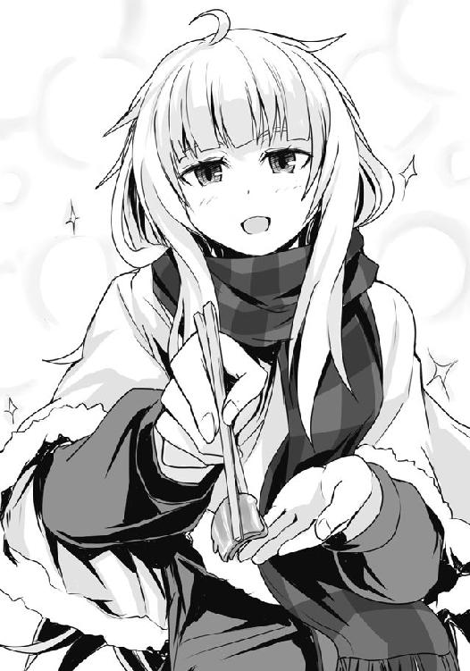
「はい、佐藤さん。......あーん」
一言お礼を言って、僕は口を開けた。熱いですわよ、そんな言葉とともに、梗はゆっくりと口に入れてくれる。
......それは今までに食べたことのない大根だった。要は厚く桂剥きにした大根を巻いて火を通しただけだと思うのだけれど、おでんなどのそれとは根本的に何かが違う。見た目から察しがついたように、大根自体には味付けはなく、その分、冬の夜に食べるには最高の温かさと素朴なほっこりとした風合いを感じさせてくれる。だが、そこには不思議と根野菜の特徴であるあの野暮ったさや土の匂いがほとんどないのだ。驚くほど、上品である。
そこにかかっていた餡は、淡泊な大根に香り付けをするかのような柚子胡椒風味のあっさりめの出汁。主張し過ぎないその味付けがまた、臭みのない大根を見事に引き立てる。
何一つ特別じゃなく、何一つ高価じゃない。でも、そっと寄り添うように温かで優しい......そんな一品だ。思わず唸るほどに、うまい。
「林巻大根、または林巻大風呂吹き大根とも呼ばれるこれは、今回のように柚子胡椒風味の餡や練り味噌などでいただく古くからある料理ですの」
梗が言うには、この大根料理、江戸時代の料理本にも登場するものらしい。大根を厚く桂剥きにしたものを緩く、隙間がある状態で巻いて、蒸したものなのだという。茹でる普通の風呂吹き大根と違って不思議と大根の匂いは息を潜め、より上品な味わいになるのだとか。確かに大根料理というと、良くも悪くも庶民的な感じになるのだけれど、この料理はその柚子胡椒の風味も相まってその類ではない。食感も桂剥きのおかげで、もっさりとしていない。
......ただ、この料理には一つ大きな問題点があることを、僕は見逃さなかった。どこぞの料理処で一品料理として出てくるのなら何の問題もないだろう。誰もが、うまいっ！ と声を上げるかもしれない。しかし......弁当に入っているということを考えるとこれは致命的だ。というのも、実質的にこれがメインのおかずだというのに、ご飯を引き寄せるパワーがないのだ!! それを喰った瞬間にご飯を掻き込みたくなるような吸引力とも言うべきパワー！ それがこの料理にはほとんどない!! 弁当のおかずでこれはまさに致命的と言え――あっ......そうか。それもまたすでに計算されているのか!? だからこそ、ご飯は白米ではなく、ご飯でありながらそれ自体がおかずにも成り得る炊き込みご飯を合わせてきたのかっ!?
しかもよくよく考えると炊き込みご飯に合うおかずというのは結構難しい。ご飯自体に味がついていたりするから、変に個性のあるおかずと合わせてしまうと潰し合いになることも考えられる。その点、この林巻大根（柚子胡椒餡かけ）だと、それ一品で、ある種完結している料理であり、かつ、強い味付けではないから炊き込みご飯の味わいも邪魔しない......。どちらかが引き立て役というわけではなく、互いに立った料理、今宵の僕とオルトロス、あとついでに二階堂のように、まさに共闘という言葉を連想させる。
一見では気がつかなかったが、何とよくできた弁当か......。さすがは、ジジ様!!
僕が弁当の奥深さに驚愕していると、ふと、梗が見つめているのに気がついた。顔を向けると、またはにかむように微笑み、頬にほんのりと朱を差した。
「あ、いえ、何だか......わたくしたちだけで、こうして〝あーん〟とやって、料理を説明する......これは、まるで......」
乾燥した空気の中でも潤む瞳が一心に見つめてきて、僕の視線を惹きつける。それはまるで頬を押さえているかのように、梗はその瞳で僕の顔を固定する。
......目をそらせない。視界が全て梗で覆われ、徐々に心までも彼女に染まっていく。視界も、意識も、どこかぼんやりとしてくる。寒いはずなのに、体が自然と火照ってくる。......そのせいだろうか。まるで暖かな春の日差しの中、うたた寝で見る柔らかでほのかな夢のよう。
――沈黙。二人の間をかすかに白い吐息が混じり合い、埋めていく。
その時間は決して重くはなかった。無言であっても、瞳を合わせていればそれは一つのコミュニケーションなのだ。言葉にならないほどの、陽炎のように弱々しく揺らぐ心の動きを伝え合う。直接語り合い、触れあうよりもはるかに曖昧で、でもどこまでも素直......そんな儚くも繊細なやりとり。
何もかもが幻想的な中、ただ、膝の上に置き、両手で支えているどん兵衛の温かさだけが僕を現実に引き留めていた。その容器越しに感じる出汁の温もりが最後のフック。もしこの出汁が冷めゆき、体温と同じぐらいになった時、きっと僕は完全に......。
梗の唇がかすかに動く。瑞々しく潤む彼女の唇......。その動きに、僕は自分の唇を意識する。
あぁそうか。今更だけれど、僕はようやく一つの真理に気がついた。
沢桔梗は......いや、女の子はきっとみんな魔法使いなんだ。瞳をただ見つめるだけで僕たちを魔法にかけてしまう。そう、それは恋という名の――
「アレですわ」
「............................................................アレ？」
「無念です、姉さん。三分ほどもかけて導き出した結論がそれですか」
鏡のため息が聞こえた瞬間、梗は髪を振り乱して僕とは反対にいる妹の肩を掴んで激しく揺さぶった。繊細な女性の香りが僕の頬を撫でる。
「ひっ、酷いですわ鏡！ いつもならすぐにフォローしてくれるのに、こんな時に限ってわたくしを見捨てるだなんて!!」
「こんな時だから、あえて黙っていたんじゃないですか。普通の単語なんですから当たり前に出てくるでしょう」
「もちろんそうですわ！ すぐに適当な単語が思いついていました！ でもここで『乳繰り合う仲』や『床の上での関係』などと言ってしまってはまるでそのことをお誘いしているかのようになってしまって、あぁ、もう！」
「どうしてそこで小難しくもストレートな単語を持ってくるんですか。もっと普通の――」
「......ピローフレンド？」
「私の知らない言葉ですが、多分、違うと思います。......もういいですから、とりあえず食事を済ませてしまいましょう。冷めてしまいますよ」
あ、それもそうですわね、と梗は思い出したようにこぼし、先ほどまでの僕との見つめ合いなどなかったかのように箸を動かし始めてしまう。......何という半額弁当の魔力......くっ！ もし今半額弁当がなければ、僕と梗は――!!
「あら、佐藤さんお食べにならないんですの？ どん兵衛が冷めてしまいますわよ？」
おっと、それはいただけないな。神の創造物の中でも割と上位に入るであろうどん兵衛をおろそかにするなど、天罰が降るというもの。僕は梗に促されるように、どん兵衛の蓋を捲り、箸を差し込み、軽くかき混ぜる。そして腹の虫が求めるがままに一気に貪った。
梗と見つめ合っていたせいでやや待ち時間を過ぎていたが、インスタント麺は待ち時間に比例して伸びる時間が長くなるため、五分を要するどん兵衛うどんはさほどの影響は受けていなかった。何より、どん兵衛のうどんにのみ関していえば、僕は若干柔らかめの方が好きだったりする。その方がより麺の味を感じられる気がするのだ。
麺を啜りて唇でその滑らかさを確かめ、その消えぬコシで歯を楽しませ、噛むごとに生まれる甘み・旨味で舌を喜ばせ、喉越しでその巧みさを実感する。やはりどん兵衛は最高だ。
......理想を言えば、今宵は関西版か、これをもう少し薄味に作った方が良かったかな。通常のそれは素朴な林巻大根の味よりずっと強いため、あの料理の余韻が薄れてしまう。
まぁ、それはそれとして......と、僕は肉厚なお揚げを箸で挟む。柔らかなのに箸で持ち上げてもビロビロに破れたりしないその技術力に感心しながら、喰らいつく。口にほたほたとしたそのお揚げは口の中で〝じゅゎ〟と甘く濃厚な汁を溢れ出す。
この〝じゅゎ〟に、何度食べたとしても〝幸せ〟という言葉を意識しないわけにはいかない。
......これだ。たとえ争奪戦に負けたとしても、どん兵衛がある。腹の底から温かに包み込んでくれるどん兵衛があるからこそ、僕たちは負けることを恐れず強敵に立ち向かえるのだ。
「こうして一緒に食べるお弁当は格別ですわね。二階堂さんもいらっしゃれば良かったのに」
二階堂は負けたことが悔しかったのか、梗たちが誘うのも聞かず、さっさとシーフードヌードルとおにぎりを買ってバイクに跨って帰ってしまっていた。
「そういえば二人ってマッちゃんの店で戦ってるんだよね？ 二階堂とは、よく食事を？」
「いえ、二階堂さんはあまり私たちとは。......その、こう言うのは何ですが、たまにご気分がよろしい時だけ、といった感じでしょうか」
「そうですわね。争奪戦で良い結果を出せた時、負けたとしても相応の戦いをした時には」
......ほぅ、あのクールぶった面の二階堂が......。なるほど、アレだな、プライドは高いが、そのクセして、うまくやった時は周りから褒め称えてほしいんだな、きっと。犬が仕込まれた芸をうまくできたと思った時、主人の前で得意げに顔を見上げてくるようなものだろう。
今度会ったらそれをネタにしておちょくってやろうと僕は心に決めた。
「しかしあのサラマンダーが現れてからは一度も。......あの狼は確かに噂にたがわぬ強さですわ。その上、常にわたくしたちのギリギリの力を要求してくる。......恐らく、二階堂さんのご気分を悪くしてしまわれているのも、それが原因」
すでに幾度か拳を交えたらしい沢桔姉妹の話を聞くと、どうやらあの巨漢を弁当陳列棚に向かってぶん投げたことなどを指しているらしい。つまるところ、沢桔姉妹ならばあれぐらい止められる、逆を言えば沢桔姉妹でなければ止められないギリギリのパワーを込めてあの巨漢をぶん投げてきた。無論それを受ける義務などないが、自分たちが止めなければ巨漢は陳列棚に突っ込み、凄惨な事態に陥るのは自明の理......結果として、受け止めるしかない。全力で。その結果、力を使い果たし、サラマンダーに無防備な姿を晒すのだとしても......。
「その状況は言うなれば私たち......スーパーに生きる者たちの暗黙の掟を逆手に取られ、サラマンダーの手の上で完全に踊らされていると言えなくもない。これは今回に限らず、他店でも似たようなことを行っています。ですから、二階堂さんは負けた以上に面白くないのでしょう」
「猟犬として帝王に従っていた、あの方の過去が......そうさせるのでしょうね」
悲しげに姉妹は言うと、二人して牡蠣を口に運んだ。
「でも、何故鉄平......あぁ、サラマンダーはそんなヤバイ戦い方をするんだろ。もし、万が一、しくじったりしたら......」
そこですわっ！ と、梗は僕に箸先をピッと向けるものの、即座に鏡がその手を「下品です、姉さん」と下ろさせた。
「二階堂さんはあまりお好みではないようですけれど、わたくしにはあの戦い方が嫌いではないのですわ。恐らく彼は受け止めるとこちらを完全に信頼してくださっている......痛いほどに粗暴、けれど、戦っているとどこか楽しい。そんな不思議な気持ちになるんですのよ」
信頼、か。そういえば僕も以前、著莪と共に実家に帰った時、スーパーで似たようなことをやったっけ。道を造るために、狼を陳列棚に向かって全力でぶん投げたのだ。著莪なら止める、止めないわけがない、と。まぁ、あの時はホブヤーこと大谷さんが横に蹴り飛ばしていたけれど。今にして思うとアレだけど、あの時は全然危ないことをしているとは思えなかったなぁ。
信頼しているからこその無茶......確かに、サラマンダーにはそれもあるのかもしれない。
「彼と戦うことは即ち常にこちらの限界を要求される。そんな辛い戦いであるからこそ、それを経ることで、わたくしたちはさらに強くなれる。今までの自分の殻を打ち破ることができる......そんな気がいたしますの。あ、ちなみに、佐藤さんが戦ってみたご印象はどうでした？」
「うーん、とにかく強いってのはやたらと感じたかな。一発一発が重くて、こちらからの攻撃は......そう、二階堂のパンチや梗たちのカゴの攻撃が全然効いたようには見えなかった。よろめきこそしたけど、脇腹に喰らって平然としているってのはさすがに異常だろう。それに、最後の僕の一撃も入った手応えはあったのに......」
そう話していて、僕は実体験からある可能性に思い至る。しかしそれは......可能なのか？
僕は言葉を切り、考えながらどん兵衛の汁を飲む。
「......サラマンダーは、腹の虫の力によって......痛みを感じていないのか？」
僕も幾度か経験したことがある。何が何でも勝たなければならない、たとえ命を捨ててでも弁当に手を伸ばしたい、そう腹の底から願った時、一時だけ痛みを意識の外へ追いやるということをしてきた。確かにそれぐらいまでに腹の虫の加護を受けていれば......あるいは......。
梗がその形の良い鼻から大きく息を吸うと、満足げで、嬉しそうな笑顔を浮かべた。
「そうです、その通りですわ、佐藤さん！ 本来、わたくしたちも有する腹の虫の加護......これは力を強め、神経を鋭敏化させるだけでなく、痛みをも抑える。彼は、その腹の虫の加護を極めて顕著に宿している。それ故に、強い。......たった一度戦っただけでそれに気づくなんて、さすがですわ！」
梗はご褒美のように牡蠣の身の一つを僕に食べさせてくれた。プリッとした牡蠣の身は、薄く醤油出汁と磯の香りで味付け。カキフライのそれと違って炊き込みの方は火が長めに通っていることもあり、その食感はとろけるというのとは違い、もちゅもちゅとした幾分しっかりとした歯ごたえがあって......いい感じだ。この牡蠣のエキスを吸い込んでいるであろうご飯の方にも興味がアリアリだったが、さすがにそこまでお願いするのはちょっと図々しいか。
僕たちはそれから一二月の夜だということを忘れるほどに、熱心に今宵の戦いを振り返り、そして今後のサラマンダー攻略に関して話し込んだ。半額弁当のために、強敵を乗り越えるために、かつて恐るべき敵として相対した相手と。
どうでもいいんだけど、こういうふうに誰かと熱心にゲームの攻略のために話し込んだことって最近はほとんどない気がする。昔は......まぁ、その、何だ。若干世間とは違う時代の、しかし決して色褪せることのないセガの素晴らしきマシンで主に遊んでいたがために話の通じる同年代の友がいなかったけれど、それでも僕には著莪がいた。夜、二人してベッドに入りながらプレイし、睦言のようにゲームオーバーになったステージの攻略方法を話し合ったものだ。
そういったことこそ、自分たちが謎を解き、敵を倒しているという感覚に繋がり、結果、面白く感じるのだ。たとえ昔に発売したソフトであったとしても、僕たちとっては新発売のソフトと何ら見劣りすることのない素晴らしい作品と感じる。友達よりも先に攻略する、いいアイテムを手に入れる、その優越感や、負けたことで感じる劣等感はそこに付随するスパイスだ。何より、追い抜いてやろうとする競争心ってのは、要はやる気なのだ。
多分この、友達と熱心にゲームの攻略について話すことが減っているのは、全国的なものであり、そして最近ゲーム業界があまり元気がない原因の一つなのではないだろうか。
ではその原因とは何だろう？ 多分だが、僕が思うにインターネットだと思う。ネットにアクセスすれば、マメな人が攻略法や各種インプレデータをまとめてアップしていたりするのだから、簡単に見られて、わざわざ学校で友達と議論する必要もない。便利ではあるが、所詮自分がやっているのはとっくの前に誰かが歩んだ道、もっとうまくやっている人が大勢いる......その認識をユーザーに与えて徒労感を生んでしまうのではないか。
これに関連して最近ゲームの攻略本の発売冊数、売り上げは一部の種類を除くとかなりの低下を強いられているようだし、昔のようにいささか高価な攻略本を持っているだけで神扱いされることもなくなったと聞く。
その証拠を示すかのように多くの書店では、攻略本コーナーは結構前から隙間が目立つようになっているのに誰もが薄々感づいていることだろう。どこか寂しさを覚える光景である。
......しかしながら僕らの地元の書店は違う。著莪と帰省した際、僕らは確かに上から下までビッチリと本が詰まった『攻略本コーナー』の棚を確認している。このご時世に大したものだ、さすがは我が親父が生息する地域なだけある......などと感慨深く思いつつも、単に置いてあるだけではなく、そのラインナップされた攻略本のスケール感に僕は圧倒されたのを覚えている。何て志の高い地域なのだと、僕はその書店だけで地元にちょっとした誇りを抱いたほどだった。何せ、全然興味がないのに思わず一冊手に取ったほどだもの......『完全攻略 第三次世界大戦』とかいう、本。いやぁ、驚いたね、あれは。思わず棚の上に書かれているコーナー名を著莪と二人で何度か確認したっけ。もちろん他にも中世ヨーロッパの攻城戦の手引き書から近代戦までありとあらゆる攻略本が並んでいた......。
ここの客は一体何を――っていうかどの国を攻略する気なんだ、世界規模の視野と国家レベルの行動力を持ち合わせているとか、永田町のご老体が幼稚園児に見えてくるレベルである。そして戦後ではなくなるということは即ち戦前になるということであり、未来の担い手は次なる戦争に備えるか、もしくは避けるための手段を弛みなく講じ続けなければならないのだと、僕は今一度歴史、そして人類の宿命を思い出したっけ。
どん兵衛も弁当も、全て食べ終わってもなお、僕と沢桔姉妹の討論は続いた。白熱するあまり寒さを忘れていたとはいえ、三人の体は無意識に肩身を寄せ合うようにしていたようだ。......僕の肩に密着する梗の体が、やけに温かい。
「姉さん、そろそろ戻らないと明日に差し障りが出るかと。気温も下がってきたようですし」
「あら、もうそんな時間？ 残念ですわ、折角佐藤さんと盛り上がれたところでしたのに」
僕たちは食べ終わった容器をまとめてゴミ箱に入れると、一緒に公園を出る。この時間ともなると普通にしているだけでも息は白くなり、自然と手はポケットに逃げ込んでいた。
「時に、佐藤さんは明日以降、どうなさいます？」
公園の門柱前にて、手編みだという手袋を填めながら、梗が訊いてくる。
「もちろん、サラマンダーを追ってみようと思う。今夜話したことも試してみたいしね」
「では......またご一緒できそうですわね。今宵のように争奪戦も、そして、その後も」
そこで、僕はふと気づく。さっきまで近すぎて逆にわからなかったが、寒さのせいか、彼女の頬はどこか赤みを帯びていた。そんな顔色で僕を見ながら、内側から染み出てくるがごとく、彼女はゆっくりと、ニンマリと、笑う。
たとえ寒さのせいであっても、狼としての争奪戦の話であっても......男としては、そんなふうに微笑みかけられては〝幸せ〟という言葉を意識せざるを得なかった。
では、これで失礼します、と姉を促すように鏡が言って、歩きだす。
「また明日お会いいたしましょう、佐藤さん。......それでは」
頬を赤らめた梗は笑顔で手を振りながら、スカートとケープ、そしてマフラーを揺らして弾むように妹を追いかけていく。途中突っかかって転びそうになったのを鏡が抱き支え、そして一度恥ずかしそうに僕を見やると、そのまま二人手を繋いで逃げるように走っていった。
僕は苦笑しながら、二人が見えなくなるまで手を振っていた。何か、胸の奥から染み出てくる、温かな楽しさを感じながら。
......そう、〝じゅゎ〟って感じだ。
２
「それじゃ槍水先輩、僕はそろそろ行きます。白粉は？」
「え？ あ、えぁっと、今ちょっと筆が乗っているので後ほど！ いやぁ、もう、獣道家のサト......サイトウさんがエロくてたまらんのです！ ――あぅ！」
「......好きにしろよ、まったく。あぁ、そうだ、あと先輩、多分、今夜も僕......」
「わかってる。気にするな、行ってこい。ただ、戻ってくる時は連絡しろ、待ってる」
槍水仙は椅子の背もたれに体を預けて言って、佐藤を見送った。
カタカタとリズミカルに鳴り続ける白粉のタイピング音とともに、槍水は遠ざかっていく佐藤の足音に耳を傾け、それが聞こえなくなると何とはなしにため息を一つ。
円卓に頬杖をついて足を組み替えた。ブーツを履いた足先が円卓の下で自然と揺れる。
部室の壁に掛けられたカレンダーを見る。今日は二一日。一昨日、昨夜と、かのサラマンダーとの連戦を経ているというのに、出ていった佐藤の顔は生き生きとしているようだった。体はすでにボロボロだろうが、それを腹の虫の加護とやる気が補っているのだ。
サラマンダーは狼らしい狼だ。弁当への気持ちが強く、実力も高い。性格はざっくばらんで嫌みがなく、戦法はストレート。狼として自らを高めんとする者たちにとってはある種理想的な敵といえ、それを追いかけることは自らを鍛えることにほかならない。
体の無理を押してなお追いかける佐藤も大した奴だ、と思うものの、それと同時に槍水の胸はざわめく。何だか妙な不安が佐藤を思うと湧き起こる。それは単に大切な後輩の体を心配しているからとも言えたが、そうじゃないような気もする。
槍水は窓の外を見る。外はすでに真っ暗で、室内照明のせいで景色は何も見えず、どこか眉が八の字を描いているような自分の顔が映っていた。
しかしそれでも槍水には空を覆う不穏な雲を感じる。というより、実際にここ数日空に雲はあるのだ。降りそうで降らない、それいでいて雲の厚みばかりが増していく......そんな状態がここ数日続いて、今日明日辺りにいよいよ、という感じである。
多分、と槍水は思う。胸のざわめきは、この二日間、佐藤がオルトロスやかつてガブリエル・ラチェットの頭目だった男たちとばかり外で食事をしているのが原因かもしれない。
友と呼べる敵を持て。それは、かつて最強と謳われた女帝の言葉であるとともに、いつの間にか狼たちの間でも広がりつつある概念だ。一流の狼たる者、そうでなくてはならないという風潮もある。
それを踏まえるのならば、佐藤は今――実力とは別に――狼としてのステップを昇り続けているのだ。かつて体調が優れなかった時とはいえ、自分をも退けた双頭の犬、そして情報戦の最高峰とされた組織をまとめていた男と交わることによって。
どこか、のけ者にされているような気が槍水にはした。別に一緒に食事をしていないからというのではなく、強敵とぶつかっているのに、佐藤が槍水に相談してこないせいだろう。
サラマンダーと佐藤がぶつかったと聞いてからというもの、実は密かにアドバイスを考えていたのに、全然訊いてこないのだ。
白粉にいたっては先日の『塩わさび唐揚げ弁当』の件、即ちジュードーだか何だかの小説に取りかかって以来、取り憑かれたようにキーを叩くばかりで、違う世界の住人になったかのようにさえ思えてしまう。......二人揃ってそうだから、面白くないのだ。
「......いつだったかな、以前もこんな気分になった時があったな」
槍水は漏らすように呟いた。そう、あれは広部蘭が現れた時だ。あの時は授業が終わるとすぐに佐藤と広部はファミレスで勉強をするようになっており、毎日退屈で退屈で仕方なかった。それにその数日前の『四川風エビチリ弁当』を食べ終わった後で少し揉めてしまったのが原因で、嫌われたんじゃないかと不安にもなっていた。
今回はそれと似ているようで、何かが違う。しかしやはり根本のところは同じなのではないかという気もする。まるでヘタクソな物語を読んでいるような気分だ。描き手の力が足りなくて、登場人物の心情がイマイチよくわからない、そんなモヤモヤした印象である。
先ほどまで佐藤とやっていた円卓の上の将棋盤を見やる。今回はスーパーの半値印証時刻まではこうして一緒に遊んでいるのだ。退屈というのとは違うだろう。
では......胸の奥底で蠢くこの不安は何だろう？
......考えてみてもよくわからない。ならば、考えるだけ無駄だ。
気分を変えるためにも何かゲームをしたかったが、筆が乗っていると言ったばかりの白粉を誘うのはさすがに悪い。しかし他に相手はいない、どうしたものか。
それとなく槍水は、将棋盤とニヤニヤと悪巧みをする子供のような笑顔を浮かべてキーを叩く白粉とをしばらく交互に見やっていた。何となく気づき、察してくれるんじゃないかと期待して。しかし、ダメらしい。普段の白粉なら自分に向けられる視線を敏感に感じ取るのに、今は完全にモニターの中に没入している。
仕方ない。槍水はとりあえず軽く話しかけてみて、様子を窺うことにした。
「あー......そういえば、もうすぐクリスマスだな、白粉」
寝ていた犬が急に名を呼ばれたように、白粉はピクッと素早くモニターから顔を上げた。
「え？ あ、はい、そういえばそうですね」
「今年は三連休か。......あぁ、そういえばすっかり言うのを忘れていたが、毎年――」
「あっ！ そうか、今日は二一日、もうホントにすぐなんですね。......あ〜、原稿書くのに一生懸命で、梅ちゃんへのプレゼント用意するの忘れてました......どうしよう。間に合うかな」
壁にかかったカレンダーを見やりながら、白粉は困ったような顔をして眼鏡を外した。
「......ん、何だ、白粉。お前、クリスマスに予定があるのか？」
「はい、実は二五日に、梅ちゃんのご家族がクリスマスパーティをやるというので今年も呼ばれてまして。いつもは二四日なんですけど、今年は梅ちゃんのお父さんがお仕事の都合で二五日じゃないと帰れないというので、それで。はい」
「......何だ、そうなのか」
不思議そうな顔で白粉が見てくるので、槍水は少し迷った後で、何でもないというように微笑んで軽く首を振る。
白粉は小首を傾げた後、再びカレンダーを見やって悩み、そして何かいい考えを思いついたのか、また気を取り直して執筆を再開した。
将棋でもしよう、と、声をかけるタイミングを逸してしまった槍水は、先ほどと同じように、しかし先ほどよりも頬を歪めて。少しばかり不機嫌に頬杖をつく。
――何だか、いろいろと、面白くない。佐藤も、白粉も......何だ。まったく。
槍水は一人、自分の顔が映る窓を見続ける。不機嫌そうな顔だと自分自身思うが、すぐに違う、これは寂しげな顔だと、思い直す。何だか佐藤や白粉が入会してくる前の自分を見ているような気がした。ＨＰ部のメンバーが次々にいなくなっていき、そして一人、この広い部室で来る日も来る日も耐え続けた日々......逃げ続けて、一人になると泣いていた......あの頃の自分。
ゾクリ、と背筋に寒気が走って槍水は反射的に立ち上がった。椅子が転がり、大きな音を立てる。白粉がビクッとして体を震わせた。
「あ、あぁ、すまん、白粉。つい......あ、うん、そう、寝てしまいそうになってな」
「あぁ、そういうのありますよね。ガクッていく瞬間に、全身がビクンッて......ハッ！ イく瞬間にビクンッ......？ まさか、アレはそれと同じ生理現象......？ いやいや、でも......あぁ、佐藤さんさえいればいろいろ訊けるのに！」
何やら人でも殺めそうな目をした白粉が頭を抱えて悶えていた。彼女のまとめられた後ろ髪が小動物の尻尾のようにふるふると揺れているのを見ながら、槍水は誤魔化せた安心感とともに、時間が経つごとによくわからなくなっていく彼女に若干の不安を抱いてしまう......。
槍水は倒れた椅子を直して座り、机に突っ伏す。
もう、あの時のような事態にはしたくない。白粉はともかく、佐藤はこのままいけばそう遠くないうちにかつてのＨＰ部メンバーに......いや、すでに実力と経験だけでいえば追いついていると言っていい。そうなれば、いずれは......。
それを防ぐために、今、自分が出来ることは何だろう。そう考えた時、槍水は再び立ち上がり、壁に貼られている近隣の地図を見やっていた。時計を見る。そして佐藤が話していたことを今一度思い出す。
そうだ、佐藤は二階堂の推測に従ってサラマンダーが出そうな店に出向いているに過ぎなかったはず。必ず出現するわけではないのだ。......ということは......。
槍水は自分らしくないと自覚しながらも、携帯を取り出し、昔からの馴染みの狼に毛玉の携帯番号を教えてほしい旨のメールを打つ。返信を貰った後、すぐにコールしたが毛玉は出ない。移動中だろうか。だとすれば、この時間帯のスーパーへ向かっている可能性は十分にある。
十数分を待ち、佐藤がアブラ神の店に着いたぐらいにコール。サラマンダーが出ているのかどうか、さりげなく訊いた。......いつ半値印証時刻に至ってもおかしくはないが、今のところ現れていないらしい。
『でも、先輩、急にどうしたんですか？』
「ん......いや、別に、何となくな。気にしないでくれ。それじゃ」
携帯を切ると、槍水は再び椅子から立ち、壁に掛けてあったモッズコートを羽織る。
「白粉、私もこれからスーパーに行ってくる」
「え？ アレ？ ジジ様のお店にはまだ早いんじゃ......」
「そうだ、ジジ様の店じゃない。以前お前にも食べさせただろう、あの豚の角煮の店だ」
「あぁ、あのすっごく柔らかくて、口にいれたら溶けてしまうお肉の......。中華系のお弁当が凄くおいしいところですよね」
「そうだ。なんだか急に食べたくなった。......だから、行ってくる」
槍水は言い置くと部室を出、厚い雲が星々を覆う外へと出る。
その世界に蓋をするような雲は日中に太陽の光を遮るせいで、空気は一段と冷え切っていた。天気予報では雨になるようなことを言っていたが、これなら雪になるかもしれない。
槍水は開けていた前を止め、ポケットに両手を入れてスーパーへと向かった。胸の奥でジクジクと膿む不安と、今宵サラマンダーを倒すことで綺麗サッパリ解消できるかもしれないとする薄ボンヤリとした期待が入り交じり、自然と彼女の足は速くなる。
ブーツがアスファルトを叩き、乾いた空気に硬い音が響く。
サラマンダーを今一度倒してやろう。降臨する半額弁当と、その場に居合わせる狼次第では、十分に勝てる相手だ。それを佐藤たちに教えてやるのだ。そうすることで、佐藤たちに先輩としての威厳を見せつけてやれる。まだまだこの氷結の魔女には遠く及ばないのだと、暗に意識させることが出来るはずだ。そうすれば......きっと、大丈夫だ。また今までのように自分にアドバイスを求めてくるに違いない。
その時、佐藤に何と言ってやろうか。オルトロスや二階堂に、どんな顔をしてやろうか。
そんなことを考えていると槍水の胸の奥にあった不安は薄れ、なんだか楽しくなってくる。
何せ、サラマンダーが最強に最も近い狼とされているが、実はそれにはちょっとした理由があるのだ。確かに彼は強く、幾度も負けた。しかし幾度かは勝っている......決して倒せない相手ではない。
では何故槍水が最強に最も近いと言われないのか。対サラマンダー戦において最後まで無敗を誇ったウルフズベインでさえも、誰一人そうは呼ばなかったのか。その理由は......最強と謳われる魔導士こと、金城優に原因があるのだ。彼のせいで結果的にサラマンダーは二番手と扱われるようになっているに過ぎない。
「......そのことを、教えてやるぞ、佐藤」
フフン、と槍水は白い吐息とともに一人、笑った。
入店した槍水はいつものように弁当をチェック。今宵残された勝利――半額弁当へ昇華する権利を有した三割引シールを貼られた弁当は五つ。炒飯の上半分にたっぷりとそれがかけられている『チンジャオロース弁当』が二つ、『四川風エビチリ弁当』が一つ、そして『豚の角煮弁当』が二つ。
相変わらずどれもうまそうだ。どれを手にしても満足いくのだろうが、その中でも自分が食べたいと思うのは......後者二つ。どちらも後輩と一緒に食べたり、分けたりした思い出がある。
寒いので辛いエビチリもいいが、豚の角煮も捨てがたい。
佐藤もサラマンダーと当たらなければオルトロスたちと食事せずに戻ってくるだろう。彼らが犬だった時のように豚の角煮を分けてあげれば、二重の意味で満足感が味わえるに違いない。
「よし、今夜は豚の角煮にするか」
槍水は軽く腕組みをしながら小さく頷き、弁当コーナー前を離れると、パンコーナーに居場所を落ち着けることにした。総菜・弁当コーナーからやや遠いが、エントランスを確認出来る位置に身を置きたかった。
瞼を閉じ、店内の様子を肌で探る。現状狼は四匹ほどだろうか。半値印証時刻までもうしばらく時間があるため、いまだ全員気配を殺すでなく、平然としていた。だが、それでも大した狼はいないのはわかった。
モッズコートの前を開け、その時を待つこと数分。店の外に......何かが来た。サラマンダーではない。嫌な感じがざわりざわりと店を包むような......。
「この感覚は......まさかっ!?」
槍水の思わず漏らした声に、店内にいた四匹の狼たちも何かに感づき、ざわつき始め、そして彼らもまた察した。店の外に現れし存在に。
店内の空気が一瞬にして張り、そして来店する人影を見るや否や激しく乱れた。
入店してくる人影は一つではない。二つ、三つと増えていく。烏田高校ラグビー部部員にして弁当全てを掻っ攫っていく化け物とも天災とも呼ばれる......アラシだ。
「こんな時に......奴らが来るというのか」
槍水は舌打ちし、今一度店内の狼たちを探る。......ダメだ、一応それなりの気迫を放っている者もいるが見せかけだ。全員心が折れている。これではアラシに対処できない。せめて魔導士やサラマンダークラスの実力者がいれば......！
店内を我が者顔で徘徊する大勢の男たちは、店内にいる狼の気配を平然と打ち破り総菜・弁当コーナー前でたむろする。その数一三人。二〇人を越えるフルメンバーでないだけはるかにマシとはいえ、どう考えても全てを持っていく気なのは間違いない。全員に笑みと余裕がある。
槍水は迷う。今から店を出ればジジ様の店の半値印証時刻に間に合うだろう。しかし、今ここで一三人現れたということは、残りは他の店に配置されているに違いなく、時間・スーパーの位置的に考えるとアブラ神かジジ様の店のどちらかだろう。今連中との戦闘を避けたところで、結局同じ。むしろ、逃げたと見られかねない。
サラマンダーと戦いたいからと、適当な理由があったとしても、それは出来ない。
後輩たちにどんな顔を見せればいいのだ。強く、立派な先輩であろうとしてきたのに、今、逃げ帰ってきた姿など見せられるわけがない。......負けるより、はるかに悪い。
恐れるな。自分は氷結の魔女。最強と謳われる魔導士の一番の弟子。怯えず、立ち向かい、敗北すら楽しめる。
空腹を意識し、腹の虫を鼓舞。そして戦闘への意欲を己の中で練り上げる。
槍水は組んだ腕、そして腹に力を入れ、己の気を隠すことなく一気に外へ放った。店内の空気が凍りついたように硬くなり、狼はもちろん、アラシの連中さえもその笑みを捨て、槍水の方へ視線を向けてくる。
チクチクと体に突き刺してくる視線の主たちに、自分は逃げはしない、たとえ負けるとも最後まで戦い抜くのだ、と、気迫で宣言する。
槍水は舌打ちしたくなる気持ちを堪えた。他の狼たちが自分に乗ってくればまだ弁当へ手を伸ばせる可能性はあった。しかし、店内にいた四匹の狼はアラシに当てられただけではなく、槍水の存在自体にも気圧されてしまったのか、一層弱々しくなってしまった。何一つ期待はできないどころか、ヘタをすれば店を去ってしまうかもしれない。
アラシたちもそれを感じたのか、一度槍水の気迫で失せていた余裕を再び纏い、総菜・弁当コーナーを離れ、店内へと散らばっていった。
落胆する槍水はしばし失意のままに店内ＢＧＭを聞く。かすかにサーッというノイズのような音が聞こえ始める。雨が、降り始めたらしい。
こうなれば一人で一三人と相対するしかない。やれるだけのことは、やるのだ。負けるのだとしても、胸を張れる負け方をしよう。
槍水は豚の角煮を食べるイメージを強く思い浮かべる。あの口に入れた瞬間に文字通りとろける脂、柔らかに解れていく肉......そしてそこに加わるあの甘じょっぱい醤油ベースの奥深い味！ そして......!!
その時、胸に湧き起こってくる、春の思い出。部室で佐藤と白粉に食べさせてやった時......味わう二人のとろけるような笑顔......そしてそれを見ている時の温かな気持ち......。
もう......失いたくない、手放したくない、何が何でも。
腹の虫が雄叫びを上げ、槍水の気迫がさらなる激しさをもって店内を埋める。狼たちはもはや怯えというに相応しい有様であり、アラシにしても笑みを浮かべる者は誰もいなくなった。
半値印証時刻直前でもないのに、空気は張りに張り、異様な重みを持ち始める。
年中通して少し涼しいぐらいに設定されているスーパーの中で、狼はもちろん、アラシたちさえも額に汗を浮かせていた。ただ一人の小娘が放つ覚悟によって。
「どうしたの、そんなに覇気出しちゃって」
その聞き慣れた声に瞼を開くと、いつの間にか隣に狼が立っていた。このアラシの気配と、覚悟を持った槍水の気迫がぶつかる中で、平然と何一つ影響を受ける様子もなく。
「何だ、お前をここで見るのは珍しいな、シーリーコート」
軽くウェーブのかかった茶色い髪に、Ｐコートから大きな胸元を突き出したような彼女は、得意げに微笑んでみせた。
「私、ほら、もうすぐ卒業だから。そしたらここ離れちゃうし、その前に普段行っていなかったお店回っておこうと思って」
最近ジジ様とアブラ神の店であまり見なかったのは、そういう理由か。槍水はそんなことを思いながらシーリーコートの顔を見た。
雨の中をやってきたのか、髪やコートに宝石のように煌めく雨の珠を乗せた彼女は、まさにその二つ名の通りに、どこか神聖な存在のように魅力的で、優しげだった。
槍水の刺々しかった気持ちが、少し和らぐ。思い出してみれば彼女と槍水は学年の差こそあれ、ほぼ同時期にこの半額弁当争奪戦の世界に足を踏み入れた狼だ。横にいると、どこか安心出来る馴染みなのだ。
「アラシがいるわけだが、果たしてお前はどうする？」
「二つ名持ちが逃げるわけがないでしょ？ やるわよ、魔導士のようにアンタの背中を守れるわけじゃないと思うけど、でも......ね。......私はエビチリ狙い、噂には聞いていたけど、食べたことなかったから」
「私は豚の角煮だ。......あのエビチリはうまいぞ。四川風というだけあってなかなかの辛さだが、それがまたいい。この寒い日にはよく合うだろう」
槍水は滔々とあのエビチリ弁当の味わいについて語る。かつて佐藤と汗だくになりながら食べた、初夏の夜を思い出しながら。
「ふぅん、なるほどね。......ますます食べたくなっちゃった。責任取りなさいよ、魔女」
当然だ、そう槍水が頷くのと同時に、店内に柔らかな笑顔を浮かべる小柄な半額神が現れる。
アラシが辺りにプレッシャーをかけるように圧倒的な存在感を放ち始めるが、しかし、それに逃げるでなく日和るでなく、真っ直ぐに立ち向かう決意を示す氷結の魔女とシーリーコート。共に二年もの間戦い続けた二人の二つ名持ちは、一三人の男を前にして震えはしなかった。
まず、勝てないだろう。しかし、負けもしないはずだ。そんな確信を持って、槍水は戦いの刻を静かに待った。
「「「いただきます！」」」
白粉、佐藤と一緒にそう口にすると、実際には数日ぶりというだけなのに、何だか妙に久しぶりだという印象を槍水は抱いた。
円卓に並ぶ夕餉は、白粉が獲ったジジ様の『サバの味噌焼き弁当』、佐藤が奪取したアブラ神の『まさに今、俺はここに人々が仰ぎ見んばかりの歴史的建造物を構築せん......！ チキン、ビーフ、ポークそれぞれの挽肉だけで作ったハンバーグ三重の塔弁当!!』、そして、槍水が買ってきた日清食品の『どん兵衛天ぷらそば』と半額のいなり寿司（二個入り）である。
槍水は割り箸をどん兵衛に差し入れると、まずかき混ぜる。ストレートな蕎麦が出汁の海を泳ぎ、ネギが遊ぶ。ほどよく汁が均一になったところに、満月のようにまん丸の天ぷらを投入。今日は曇って暗いので、暖色系の間接照明を点けたままの夕餉だ。だから本来のそれ以上に色づいて見えて、本当のお月様のように美しい。
人によっては一度天ぷら全体を汁に沈めてから食べ始めるが、槍水はゆっくり味わいながら食べる主義なので沈めずに浮かべるに止めた。
心地良い音を立て、蕎麦を啜る。細く、真っ直ぐな蕎麦の感触は食べるに楽しい。そして容器を持って汁を飲めば、冷えた体にその温かさが染み込むようだ。うどんのそれよりも幾分スッキリとしたその汁も槍水好みだ。
槍水の箸がここで天ぷらに向かう。挟み上げてみるといまだほとんど汁を吸っておらず、硬い。齧ればカリッといい音がし、香ばしさが広がる。油もの特有のパワーは、スッキリした汁とのギャップがあり、食べ進む際のいいアクセントになってくれる。
「でも、初めてですよね、槍水先輩がどん兵衛で、僕らが弁当って」
佐藤はその名にあるように、三種のハンバーグが重なるタワーを箸で位置調整しながら言う。
今日も彼はオルトロスたちと食事をしてくるはずだったようだが、雨が降ってきて公園で食べるわけにもいかず、結局店の前で別れたらしい。
サラマンダーは、半値印証時刻と同時に店内に現れたのだという。それでも佐藤が弁当を奪取出来たのは、開始早々に吹っ飛ばされていたがためにサラマンダーと運良くぶつからなかったためだ。それでもやたらにボリュームがあって、うまそうな弁当を彼がゲット出来た理由は......実は、名前になっている三重の塔が、この弁当だけ崩れてしまっていたがために、後半まで残っていたからだとか。
「言われてみればそうだな。......まぁ、たまにはこんな日があってもいい。私は結構満足している。何せシーリーコートと二人でアラシを叩きのめしたんだ」
フフン、と槍水は鼻を鳴らし、いなり寿司のパックを開ける。熱い酢飯は鼻につくことがあるので、これは短時間だけ電子レンジを使い、ほのかに温かい程度に止めていた。
蕎麦にいなり寿司......これは槍水が信じる最高の組み合わせの一つだ。蕎麦を啜り、いなりを頬張り、汁を飲む。そして刻々とその食感を変化させていく天ぷらをたまに齧る......これは、たまらない。久しぶりということもあって身悶えしそうになる。
やはり、と槍水は毎回食べる度にどん兵衛の天ぷらのすごさを感じずにはいられない。汁を吸い、ほたほたと柔らかに口の中で蕩けていくそれ......しかし、咀嚼すると必ず最後までかすかにカリッとする部分が残っているのだ。そしてその歯触りの後にはエビの香りが広がる。
あっ、と槍水は没入していたどん兵衛の味わいから、現実へと意識を戻す。
「勘違いしないように、先に言っておくと、本当は私も弁当を獲ろうと思えば獲れたんだ。......うん、ただ、シーリーコートに譲ったに過ぎない。そこは間違えるな」
アラシたちを二人で薙ぎ払っていくものの、やはり多勢に無勢、ジワジワと追いやられ、一つ、また一つと弁当が減っていった。そして最後の一つとなったタイミングでようやく槍水とシーリーコートは陳列棚に飛び込んだのだが、最後まで残ったのが『四川風エビチリ弁当』だったのが痛かった。無論、それは大好きだが、最初からそれと心を決めていたシーリーコートが相手では分が悪い。腹の虫の意識を切り替えきる前に、状況が迫ってしまったのだ。
ただ、それを素直に言うと何だか負けたみたいに思われそうな気がしたので、槍水は少しだけ事実を脚色していたのだが、それは秘密だ。それに、争奪戦前のやりとりもあって気が引けたというのもあるのだ。
「えぁっと、槍水先輩、いつもいただいてばかりですし......もし良かったらあたしの、少しどうですか？」
白粉がおずおずと言ってくるので、槍水は微笑んで頷く、白粉に、笑顔が咲いた。
彼女がサバ系の弁当を手に入れられたのは結構珍しい。どん兵衛にお湯を入れながら聞いたところによると、執筆が切りのいい場所まで進んでいて、何だか気分が弾み、お腹が妙に空いていたのだという。それで調子良く戦えたらしい。
佐藤を中心にして座っていたので、槍水は彼の肩に手を置いて、顔を出して白粉のサバの身を食べさせてもらう。横着して椅子に座ったままだったため、少しバランスを崩してしまいそうになった。すぐに佐藤が腰に右腕を回して支えてくれたので、槍水はそのまま白粉からの贈り物を口で受け取った。
相変わらずのうまさだ。そして、白粉は頬にほんのりと朱の色を浮かべ、嬉しそうに笑うので、槍水もまた同じような顔で笑い返した。
「あっ、あのっ!! 先輩、お願いです、僕にも味見をさせてください！」
何故だかわからないが、焦ったような......しかし、どこか嬉しそうな、興奮したような、そんな顔で佐藤が言う。
「おっ、どん兵衛か？ いいぞ」
「それもいいんですが......あ、そうか、逆だ、僕のハンバーグ弁当を味見してください！」
「ん？ 何だ、おかしな奴だな。言われなくとも貰うぞ。いつも味見させてやっているんだ、お返しを貰うのは当然私の権利だ。......ん？」
いつの間にか佐藤は利き腕ではない左手に箸を持っており、やや震える手でハンバーグを挟む。おかしな気はしたが、よくよく考えると彼の右腕は槍水の腰に回されていたので、それで、なのだろう。
今にもポトっと箸からハンバーグが落ちてしまいそうだったので、少し下品な気はしたが、槍水は箸を口で迎えに行った。何だか佐藤の胸に顔を埋めるような体勢になりながら、味わうハンバーグは......うまい。これはビーフのハンバーグだ。一口だけでは特定はできなかったものの、これにはいろいろなハーブが使われているらしく、どこかエスニックである。
「あ、あの、良かったら他のもどうぞ！」
そう言って次に食べさせてもらったのはポーク。粗挽きコショウでスパイシーに仕上がっていた。そして最後にチキン。これは......少し驚いた。ポークやビーフに比べるとチキンは味がやや淡泊になる気がしていたものの、アブラ神は抜け目なくここで手を打ってきた。肉に、チーズが紛れているじゃないか。チキンにチーズの濃厚さをプラスすることで他のハンバーグにも負けていない。当然、うまい。そして、ビーフ、ポークときて最後にあえてチーズで一番濃厚に仕上がっているチキンを持ってきた辺りに佐藤の気遣いが感じられる。
槍水は口ではなく、見上げるようにして微笑むことで、佐藤に感謝を告げた。槍水が食べている間ずっと腰回りを抱き寄せるようにして支えてくれた佐藤もまた笑顔で応じる。......気のせいか、若干ゲスに見えるのは何故だろう。
槍水が椅子に座り直すと、そこからは落ち着いて今日の戦いを振り返りながらの食事となった。会話が弾む。久しぶりの蕎麦の味が格別に感じた。
「よし、それじゃ......ごちそうさまでした」
槍水が手を合わせると、佐藤と白粉もまた、手を合わせて同じように唱えた。
「いやぁ、今日は......なんだかいろいろと満足感のある食事でしたよ......」
「そうですよね、佐藤さんの今日のお弁当はかなりボリュームがありましたし」
「......フフ......ボリュームだけじゃない満足感さ......」
槍水にはよくわからないことを佐藤は言うが、たまに彼にはそういうことがある。白粉もよくわかっていないようだし、槍水はあまり気にしないことにした。
三人でそれぞれ食後の片づけをしていると、ふと、先ほどまでしとしとと降っていた雨が止んでいるのに槍水は気がついた。しかし、室内の照明がついているのでよくわからないが、雲はなくなってはいないようだ。
今夜は月が見たい気分なのに。槍水はそんなことを思いながら、三つのコップをまとめて持ち上げる。佐藤と白粉は分担して弁当容器をゴミ袋に入れていく。
「今朝ニュースで見ましたけど、クリスマス過ぎるまで天気は良くならないみたいですよ」
「あ、そういえば梅ちゃんが今年は雪が降ってホワイトクリスマスになるかもって」
「ホワイトクリスマスか。......そういえば、去年も、そうだったな」
都内では珍しく、あの日の夜、大粒の雪が降っていた。その中をＨＰ部の他の女性メンバーとともに槍水は走っていたのを思い出しながら、窓の外を見やる。
ついつい懐かしさと、寂しさが同時に胸に湧き、槍水は少しうろたえてしまった。
チラリと見やると佐藤と白粉が不思議そうな顔をして自分を見ている。槍水はコップを持ったまま咳払いした。
「何でもない。......そういえば白粉はクリスマス、白梅の家に行くんだったな。まぁ、仕方ないか。今は同好会だが、ＨＰ部の伝統というか恒例行事を教えてやろうと思ったんだが」
「えぁっと......恒例行事、ですか？」
フフン、と槍水は鼻を鳴らすように得意げに笑った。
「そうだ。クリスマスの夜、部員の男は半額弁当を奪取。そして女は......半額のケーキを狙いに行く。あれは男では決して手に出来ない一年に一度の女だけの修羅の場だ。並ではないぞ」
......え？ と、佐藤が短い言葉を漏らした。
「ん？ あぁ、大丈夫だ、佐藤。白粉がいなくとも私が獲ってくる。それより二人っきりなんだ、佐藤は必ず弁当を手に入れてくるんだぞ。ケーキだけじゃ少しばかり寂しいからな。毎年実力の高い者はジジ様の店に行くことになっている。そこにはクリスマスの日だけの特別な弁当が出るんだが、これがまた凄くてな」
槍水は笑ったが、何故か佐藤は笑い返してくれない。呆然としているように見える。いつもなら「大丈夫ですよ、任せておいてください」とでも言い返してくるはずだ。そして、油断するな、と、自分が注意して......。
「......槍水先輩、実家には......その、帰らないんですか？」
「ん？ 二三日には帰るぞ。それで二五日の昼過ぎぐらいにこっちに戻ってくるから、安心しろ。クリスマスはちゃんと佐藤と――」
「僕、てっきりその日何もないと思って、著莪とクリスマス会に行く約束を......」
先ほどの佐藤の呟きのように、槍水は「......え？」と短い声を漏らす。
彼女の手にしていたコップが一つ、滑り落ち、音を立てて割れた。
３章 カペルスウェイト
「こっ、これが......弁当だっていうのかっ!?」
佐藤洋
０
薄暗いマンションの一室にて、その真っ赤な髪に整髪料を馴染ませながら響鉄平はカレンダーを見やった。今日はすでに二二日。やはり、魔導士は動かないのか。奴は最強の枕詞を冠したままスーパーを去ろうというのか。
わざわざアーサーが眠りしこの地にまで来ておきながら、この状況である。だが、以前までなら腹立たしさを抱きもしただろうが、今は不思議と事実として淡泊に鉄平は受け止めていた。きっと予想以上に面白い相手がいるからだろう。真っ当な狼でありながらもどこか狡猾さを秘める坊主と顎髭、そしてつい最近参戦したと聞くウルフヘアの女。前者の二人は手堅く伸びるタイプだろうが、後者の女はこれからどう伸びるのか、その成長を含めて楽しみな逸材だった。昨夜のフィールドで戦闘に及んだ際、鉄平の攻撃を数度にわたって受けてもなお、立ち上がってきたのだ。実力そのものは未熟の域を出はしないが、その底の知れなさは鉄平に興味を抱かせる。鉄平のように腹の虫を意図的に暴走させ、痛みを消し、人間が本能的にかけているリミッターの全てを解除させるようなマネをしているわけではなく、単にしぶとい。狼は男が多いが、女のそれが生き残ると大抵名うてに育つ。恐らく彼女もすでにその流れに入っているだろう。あのしぶとさなら、どれだけ負けたとて立ち上がってくるに違いなく、即ちそれは〝成長する才能〟を有しているにほかならない。
鉄平はテーブルの上においた鏡の自分を見ながら、不敵に笑う。
無論、鉄平が魔導士なしでも満足しているのは、そんな意外に歯ごたえのある名を持たぬ狼たちだけのおかげではない。むしろ彼女らの活躍の方が大きいだろう。
「......鉄平、今日も行くのか？」
広い部屋の片隅に設置されたＰＣデスク、そこで豪雨を思わせる速度でキーを叩く毛玉は、モニターから目を離すことなく、言った。さすがに自室ではサングラスを外しているので、その精悍な横顔が見える。
てっきり仕事をしているのかと思ったが、何やらメールを打っているようだ。山乃守に頼まれていたあの件のことだろう。纏う雰囲気ととぼけた風貌からよく薄情そうだと誤解されるが、実際には細やかで面倒見のいい先輩だ。長く付き合えばそれがわかる。そしてそういう人だからこそ、迷惑ばかりをかける鉄平をいつも気にかけてくれていた。
「当然。......まぁ、また先輩に迷惑かけると思うけど」
「かわいい後輩だからな、それぐらいは面倒見てやるさ。それはいい。だが、こう連戦だと......お前の体が持つのか？」
「クリスマスまでは踏ん張るさ。さすがにあの日ともなれば魔導士も動くかもしれない」
奴がＨＰ部のメンバーとしての意識を持っていれば動くはずだ。部の伝統だか恒例だかになっているＨＰ部のクリスマス会......そこにあの弁当を持っていくために、必ずジジ様の店に向かうはずだ。半額ケーキを奪取する女子部員のために、アラシに蹂躙されて負けてしまった仲間のために、部内でも有力者がその夜ジジ様の店へと足を向けることになっている。
もしまだ魔導士にその気があるのなら......いや、なかったとしても、比較的強敵が集うであろうあの夜ならば興味を持って動くかもしれない。可能性は高い。
「だが、それでぶつかったとて、勝てるのか？ 万全のお前でも危ないってのによ」
「真っ正面切ってぶつかれば多分勝てるって。そりゃ、今は休んで、クリスマスに全てを懸けた方が勝率は上がると思うけど......アイツらが期待してわざわざ足を伸ばしてくる以上、こっちが引っ込むわけにはいかない」
アイツら――そう、オルトロスたち。あの双子は鉄平にとって強敵でありながら最高の敵だ。さすがに名の知れた狼、その巧みなカゴ捌きはもちろん、コンビであるが故の柔軟な戦法......そして何より、叩いたら叩いただけ跳ね返ってくるような彼女らの強さが素晴らしい。打ち負かした後の禍々しいまでの目つきを見るに、あれは伸びる。あの段階からさらにその実力を高めるなど、考えるにおぞましいものがある。本人たちもそれをわかっているからこそ、鉄平に戦いを挑んでくるのだ。半額弁当を求めつつ、楽しみながら、己を鍛えるために。
火を司る精霊サラマンダー、その吐き出す炎を用いて鉄を鍛えれば不思議な力が宿ると謳う古い幻想曲があったのを鉄平は思い出す。
そして、かつてのガブリエル・ラチェットを束ねていた二階堂なる狼。あれもいい。単体の実力はさほどではないが、場の見方を知っている。自分が前に出るより、誰かを支えるように動けば一気にその実力を発揮するだろうが、その相方はいまだいない。てっきりツードッグスの名の通りコンビ技を使ってくるかと思っていたが、どうも本人にその気がないらしく、動きはあくまで共闘の域を出ていない。もし、本人が心を決めれば......いや、そうでなくとも恐らく彼ならすでに鉄平から弁当を奪取する最も効果的な手段をも知っているはずだ。感づいたのではなく、恐らくはガブリエル・ラチェット時代に、知識として頭に入れているはずだ。
鉄平は松葉菊と複数回にわたってぶつかっている。彼女の敵は、即ちガブリエル・ラチェットの敵。......奴らが分析していないわけがない。
手段を知り、それを実行できる実力も持っているくせにあえて選択してこないのは......それが彼の望むものではないからだろう。帝王の忠犬時代の悔恨が足かせになっているのだ。その時とは違う生き方を求めるあまり選択が狭まっている。自分の力で得た攻略法じゃない以上、使うに使えない。あまりに生真面目。そうすること自体がある種、忠犬の証だということに、彼は気づいているのだろうか。
「......まぁ、オレとしては都合がいいけどな。気を遣う相手が増えるのは面倒だ」
セットが終わった鉄平はいつもの赤いコートを羽織る。そろそろ時間だ。
「今夜の店はもしかしたら半額弁当が残っていないかもしれないぜ。その時はどうする？」
「当然、最終半値印証時刻を有するジジ様の店へ急ぐさ。十分間に合うはずだ」
あくまで戦うんだな、と、毛玉は苦笑いを浮かべてサングラスをかけた。
「えぇ、やめねぇさ。さて......行こうか、先輩」
そう、まだあの男の全力を見ていない。いくつもの地で、幾匹もの狼、幾体もの化け物から噂に聞いた魔女の犬。いい加減その本当の力を見せてみろ、佐藤洋。
鉄平はサングラスをかけながら、胸の内で呟いた。体の節々が酷く痛んだ。
○
今宵、残されていた弁当は三つ。先ほど接触したウルフヘアによれば、三つも残っていること自体最近では珍しいのだという。
『特性ソースの豆腐ステーキ弁当』、『手作りタルタルソース付きカキフライ＆ハンバーグ弁当』、『柚子風味唐揚げと恋する乙女が作ったお握りランチセット』の三つ。豆腐ステーキは、板状にカットされた豆腐が四つ、揚げ焼きにされたようできつね色の焼き色が付き、添えられている茸と大根おろしソースがサッパリとした味を期待させる。ハンバーグの方には付け合わせに三つのカキフライ、そしてハンバーグの方にはみ出すほどにたっぷりのタルタルソースが目を引く。しかも名前にあるように、お店の厨房でタルタルソースも作っているらしく、粗い粒々の具材が僕の腹の虫を刺激してやまない。そして最後のは......。
「うん、あれはマムを想いながらボクが作った。名前は葦原さんがつけてくれたんだよ」
元名うての狼にして今は半額神に仕える山木柚子。ビッグ・マムの店で、彼女は相変わらずの美少年を思わせる爽やかな顔と口調で言った。
「それじゃ明日の下拵えがあるから、ボクもう行くね。たまには顔を出してよ、おいしいお弁当、いっぱい作って待ってるから」
「......でもあんまり半額弁当にまで至らないって聞くけど」
パンコーナーを見やりながら、僕がため息混じりに言う。するとエプロンを着けたままの柚子はまるでおいしい料理を頬張ったような、見ている方まで嬉しくなるような笑みを浮かべ、スタッフルームへと去っていった。
柚子の話はウルフヘアからたまに聞いていたので、不思議と懐かしさはなかったが、向こうがわざわざスタッフルームから出てきたところを見ると、彼女はそうではなかったらしい。......単に、のろけ話を聞かせたかっただけかもしれないけど。
いきなりやってきたと思ったら、数分に渡ってビッグ・マムの優しさと凄さについて聞かされたので......さすがに辟易する。人ののろけ話ほど聞かされてつまらないものはない。それがあのビッグ・マムともなれば......その、何だ、うん。特に最近じゃ家族ぐるみの付き合い......というか、彼女のお兄さんのもとへ酔っぱらったビッグ・マムが突然現れて......とかなんとか。
僕は深呼吸し、気分を切り替える。店内にはすでに半値印証時刻直前の緊張感が充ち満ちているのを今一度体に感じ、腹の虫を鼓舞する。
狼の総数は一一。めぼしいのはオルトロス、二階堂、ウルフヘア、そして毛玉と鉄平。
サラマンダーの存在が狼を遠ざけるかとも思ったが、戦闘を避ける狼がいる一方、オルトロスや僕のようにあえてぶつかっていこうとする奴も少なくないようだ。差し引きで、気持ち通常より増えているという感じか。しかし、それも今日までだろう。烏田高校は数時間前に終業式を迎え、二学期を終えた。明日以降は地元に帰る者が増え、この辺りは閑散とするに違いなかった。
バタン、という音が広い店内に響き渡り、空気の張りが強まる。ビッグ・マムが店内に現れたのだ。僕はいろいろ考えた結果ランチセットを第一、カキフライ＆ハンバーグを第二目標として戦うことを決める。ただ、どちらも同じぐらい食べたい弁当なので、獲れるチャンスがあればハンバーグを選択してもいいだろう。その辺りは柔軟な対応でいく。
「......いったい何だというんだ、ここの半額神は。オレをなんという目で......」
さっきまでオルトロスと一緒に弁当コーナーに近い位置に陣取っていた二階堂がフラリと現れ、脂汗を浮かべた顔でそんなことを言う。どうやら奴はビッグ・マムのお眼鏡にかなったようだ。確かによくよく見やると二階堂はなかなかにイケメンだ。スラッとした体型と顔つき。相変わらずのピアスをはじめとしたアクセサリーもお洒落なチョイスで、自分の魅せ方もわかっている。それでいて目には軽薄さの欠片もなく、誠実さだけが色濃く浮かんでいるのだ。
「気にしない方がいい、二階堂。腹の虫に響く。......心を濁すな、狙いを澄ませってね。槍水先輩の言葉だけど」
何気なく口にしたことで、僕は思わず息が詰まる。......こんな時に......。
今はそれについて考えている時じゃない。僕は首を軽く振って、瞼を閉じ、両手をスカジャンのポケットに突っ込んだ。柚子が丹誠込めて握ったお握りと、タルタルソースの粗く刻まれた野菜の粒々を思い浮かべる。
二階堂が気配も薄く、再び弁当コーナーへ向かって歩きだす。僕もそれについていく。
「佐藤、お前、体はまだ大丈夫か？ サラマンダーとの連戦だ、かなりキてるだろう」
「複雑な家庭環境でね、体は人並み外れて頑丈なんだ。そっちは？」
「オレもそう言いたいところだが、最近は回復が追いついていないのが実情だ。正直これ以上の連戦はキツい」
「明日からクリスマスまで連休だ。ただでさえ客の入りが安定しない状況に加え、イベント時期は半値印証時刻が乱れるんだろ？ サラマンダーもさすがにしばらく休むさ」
「......なら、尚更今夜にケリをつけたいところだな。オレは豆腐ステーキだ」
「僕は柚子が作ったのを。オルトロスは、豆腐ステーキと柚子のランチセットだったかな」
「あぁ、サラマンダーをうまくやったとしても最後はぶつかるな。オレたちと」
意外な言葉に僕は二階堂の目を見やる。彼もまた僕の目を見、そしてお互いの意志を確認し合った。二階堂は本気で今宵、サラマンダーを倒そうというのだろう。共闘の誘いである。沢桔姉妹によって付けられ、そして彼女らを倒すためだけに組んだ時以来の、本気のそれ。
僕はスカジャンのポケットの中で妙な心強さから拳を握りしめる。サラマンダー、オルトロスと、強敵がいるというのに、不思議な自信が湧き起こってくる。
僕たちはゆっくりと歩いていたので、いまだ弁当コーナーは遠いが、シールを貼り終えたビッグ・マムがスタッフルームへ戻っていくのが見える。彼女......じゃなくて、彼は狩りをする肉食獣のような瞳で二階堂を上から下へ順に見やりながら――視線を丁度二階堂の股間の辺りで止め、そこに向かって礼をする。......その異様な有様のままで、お尻で観音開きの扉を押し開き、姿を消していった。
......若干隣を歩む二階堂の気迫が衰えた気もするが......まぁ、大丈夫だろう。
戦いの狼煙たる閉まる扉の音が響き渡り、今宵の狂奔が始まる。幾匹もの狼が地を蹴り、僕と二階堂もまた歩みから急激な加速をかけ、弁当コーナーを目指す。......いつものように、サラマンダーはまだ来ない。奴が来るのは常に乱戦形成後。それからが、勝負だ。
●
槍水が部室の扉の鍵を開け、中に入る。彼女は肩越しに後ろの白粉を見てきた。
「最近は本当に調子いいみたいだな、白粉」
笑顔でトテトテと槍水の後ろを行く白粉は、思わずニッコリと笑った。
「はいっ。もう、なんか最近エネルギー消費が激しいというか、お腹が空くんです。しかも今日みたいに長時間執筆をした時なんか、神経が妙に鋭敏化しているというか何というか！」
今日、二二日は烏田高校の終業式だった。午前までは通常の授業を行っているとはいえ、午後は簡単な式だけなので、比較的早い時間から白粉は執筆に入ることが出来ていたのだ。
話を聞いた槍水は、いいことだ、と笑うと、電子レンジの扉を開ける。
「あれ、槍水先輩？ もう食べちゃうんですか、佐藤さんは......」
「今日は雨も降っていない。オルトロスたちと食べてくるだろう。本人もそうなるかもしれないと言い残していったんだ。待つだけ損というものだろう」
槍水が温めを開始する音を聞きながら、白粉は窓の外を見る。厚い雲が空を覆って星も見えぬ夜だが、確かに雨は降りそうにない。天気予報でもそう言っていたのを思い出す。
「でも、佐藤さんももしかしたら......サラマンダーさんとも出くわさないかも」
白粉は言うが、槍水は何も返してこない。電子レンジの中で回るターンテーブルの上の弁当を見やったままなので表情もわからず、白粉は袋を手にしたまま立ちすくんでしまった。いつもなら槍水が電子レンジで温めている間に、白粉と佐藤が麦茶とコップを用意するのだが......。
「サラマンダーの情報は毛玉と二階堂だかを通して聞いていると昨日、佐藤が言っていただろう。......なら、確実だ。外で食べてくる。......白粉、お前の弁当も渡せ。温めよう」
「えぁっと......槍水先輩、やっぱり......その、昨夜のこと、怒ってます？」
昨夜、佐藤がクリスマスの夜には予定があるのだと言った時、槍水は手にしていたコップを落として割った。たまたまだったのか、それとも手元がくるうほどにショックだったのか、白粉にはわからない。けれど、彼女が自分たちとクリスマスを過ごそうと考えていたのを潰してしまったのだけは間違いないのだ。
白粉は白梅家へ、佐藤は従姉が入っている丸富高校の部活のクリスマス会へ。槍水は......。
自分なんかを誘おうとしてくれていたことは嬉しいし、是非誘いは受けたいものの......随分前から約束もしていた親友の約束は破れない。佐藤の方もきっと同じようなものなのだろう。
「別に怒っていない。仕方ないだろう。先約があるんじゃな」
槍水は相変わらず顔を電子レンジに向けたままでいるので、彼女の言う〝先約〟がクリスマスのことなのか、それとも今宵のことなのか、白粉にはわからなかった。
いつもは一人でいるよりも不思議と軽く感じる部室の空気が、何だか重くて仕方がない。
天気のせいかもしれない、と白粉はのろのろとした動きで麦茶を出し、コップを窓際の席に二つだけ置いた。
窓から真っ黒な空を見上げる。夜の海のように厚い雲。降りそうで、降らない......そんなギリギリの天気がこう何日も続いていると、いっそのこと一気に降ってしまえばいいのに、と白粉は思ってしまう。
降るだけ降れば、後は晴れるだけなのだから。
○
オルトロスが左右に吹っ飛ばされるも、梗だけは倒れることなく床に着地。サラマンダーが感心したように一息吐いた。
「一瞬の判断でカゴは諦め、腕で受けたか。......いいぞ、よくやった」
床を転がっていた僕は鉄平の言葉にハッとした。オルトロスの二人はかつて未熟な体で大人の狼と戦うためにカゴの技を極めた。彼女らのカゴ捌きは類い希なるものだ。そうであるが故に全ての行動がカゴを中心に考えられているのは当然である。......言われてみれば疑問も抱かないほどに当たり前のこと、しかし、それが彼女らにとっての弱点だったのかもしれないと、今更ながらにして思う。僕も以前何度かカゴを使った時はあったが、あれは敵に懐へ入られるとどうにも使い道がなくなり、邪魔になるのだ。オルトロスはそれを十二分にわかった上で戦闘していたが、それでもサラマンダーのような強者ならば攻略できないことはない。以前までの梗ならば、鏡と同様にカゴで何とかして受けようとしていたはずであり、それはある種彼女らの本能――反射行動に近いレベルに達していたはずだ。しかし、サラマンダーという強敵と戦い続けることで、それを今一度書き換えようとしている......。
今、成長しているのだ。この何日にもわたるサラマンダーとの戦いの中で、己を鍛えている。
「負けてられないな！ 行くぞ!!」
梗の姿に鼓舞され、僕は痛む体を押して立ち上がり、床を蹴り上げる。先ほどまで空中をぶっ飛ばされていた二階堂も前線に戻ってきている。
弁当コーナー前は遊ぶように微笑むサラマンダーに、ウルフヘアと他の狼が必死に喰らいつくという形だった。さすがに皆ここまできて立っているだけあって、しぶとい連中ばかりだ。
乱戦の中に二階堂が低い姿勢で突っ込む。そして僕はその背に足を掛けようとした、その瞬間、二階堂がクルリと振り返り、両手を差し出すようにして組んだ。
「来いッ、そして行け、佐藤！」
僕は二階堂に誘われるように、奴の手に足を乗せる。彼の雄叫びとともに一気に体が持ち上げられ、僕の足もまた彼の手を蹴りつけて凄まじい速度で宙へ。僕の歩幅、飛び上がるタイミング、全てに二階堂はピッタリと合わせてきた。エネルギーのロスは最小限、それ故に高いビッグ・マムの店の天井が一瞬にして目前に迫る。慌てて身を捻ってそこへ着地。勢いのいい飛翔により、天井に着地した状態で僕の体は縮こまり、バネがそうであるように、いつもよりもはるかにエネルギーを込めてそこを蹴りつける。最前線で戦うサラマンダーへ。
鉄平はウルフヘアを強烈に床へ叩きつけながらも上空の僕を見やり、不敵に笑ってみせた。それは漫画の悪役のようにも、主人公のようにも、どちらとも取れる笑みだ。
そこに地を這うようにして二階堂が接近。鉄平は先にそちらを処理しようと蹴りを放つものの、驚くべきことに二階堂は床の上を滑るようにして、バウンドしたウルフヘアの体の下をくぐり抜けやがった。結果的にウルフヘアは二階堂の体によって上へ押し上げられ、鉄平の蹴りを喰らってぶっ飛ぶ。そして、蹴りを放った直後の隙に、二階堂が喰らいついた。
鉄平の軸足に体ごとぶつかっていき、それを払う。鉄平の体が無防備なまま宙に浮く。最前線で受け身を取る二階堂が僕に視線で言う、やれ、と。
僕は雄叫びを上げ、サングラス越しの目を見開く鉄平へ向かって拳を振り下ろした。彼の頭を打ち砕かんばかりの一撃。僕は彼の顔面に叩き込み、サングラスをぶっ飛ばし、彼の体は床に叩き落とされた反動で再び宙に浮く。......これは、完全に入った。
僕は姿勢を崩しながらも床に足から着地。こちらに向かってきている狼はいても手が届く間合いではないことを確認、間近で膝をつく二階堂を見やる。視線で行けると判断。僕たち二人は同時に弁当へ向かって手を伸ばし、肩を並べて飛んだ。
「お見事！ でも、させませんわ！」
その声が聞こえたとともに僕の脇腹に梗のカゴが、数瞬遅れて二階堂の脇腹に鏡のカゴが僕らを挟み込むように左右から突き刺さる。
これは完全に僕たちがバカだった。こちらに向かってくる狼の中にオルトロスがいたのだ。そして彼女らの攻撃はカゴを使うと六〇センチ以上リーチが伸びる......。何よりも失念していたのは、彼女らは味方にして敵であることに変わりはないことだ。
僕と二階堂はそれぞれ左右からの攻撃を受け、互いにぶつかり、勢いが死ぬ。陳列棚の下方へ頭からぶつかっていくだけで、手が弁当に到達しない。
代わりにオルトロスがそれぞれの手を弁当へと伸ばす。しかし、その時には他の狼が殺到し、再び乱戦を再構成。僕と二階堂は彼らにめちゃくちゃに踏まれ、蹴られ、床を転がり回る。
荒れくるう痛みの中、ダメージの濃い鏡をかばいながら梗が奮闘する様子がたまに視界に入る。そんな場に、上空から真っ赤な影が飛来するのを、そして烈火を吐き出すドラゴンがごとく乱戦を蹴散らすのを、どこかテレビでも眺めている気分で見ていた。
あれだけの一撃を叩き込んで、それでもなお奴は普通に戻ってこられるのか。その驚き、その現実感のなさが、僕にそう思わせていたのかもしれない。
「今夜はいろいろと収穫のあった争奪戦だったんじゃねぇかな。特にオルトロス、ツードックスはどうよ？ ......あ〜、答える余裕はないか。ははは」
『柚子風味の唐揚げと恋する乙女が作ったお握りランチセット』を片手に、サラマンダーは笑いなが言って落ちていたサングラスを拾う。その周りには狼たちがまさに死屍累々と転がっており......僕と二階堂もその内の一体だった。鉄平以外じゃ、陳列棚に背を預けて腰を落としている梗と、その姉の肩に頭を乗せて座っている鏡の二人だけが体を起こしている有様である。
傍から見れば鉄平の一人勝ちに見えたかもしれないが、この三人が、今宵の勝者だった。
鉄平が真っ赤なコートの裾を揺らしながら僕らに背を向けて去っていこうとした時、二階堂の無駄に長い足に引っかかりつんのめる。そこを、失神しているウルフヘアのパンチラしそうでしない絶妙なスカートのめくれ具合を間近でじっくりと鑑賞していた毛玉が慌てて支える。
二人は勝利を喜ぶように肩を組んだまま、レジへと向かっていくのだった。
その個性的な二人が消えてしばしの後、痛む体を押して、僕は意外に大きな総菜のグラタンを、二階堂は半額お握りとシーフードヌードルを購入してレジを抜けた。
「......佐藤、恐らく、サラマンダーから弁当を奪取することは可能だ」
「あぁ、不可能なんてことはない。ただ、僕らに魔導士並みの強さがあれば......」
「違う、そうじゃない。今の状況でも十分奪取可能なんだ。ただ......」
二階堂が何やら言いにくそうにしながら店を出ると、そこにはオルトロスの二人が白い吐息を放ちながら待っていてくれた。僕らの顔を見ると、彼女らはまるで留守番をしていた犬が尻尾を振るように笑顔を見せてくれる。......何だか、凄く嬉しく、傷ついた体に染みる。
きっと会社帰りの父親が、娘や犬に迎えられるとこんな気分なんだろうな、とか、僕がどうでもいいことを考えているとオルトロスの目がふいに僕らの後ろに向けられた。僕ら同様ボロボロのウルフヘアだ。
「お名前は存じ上げませんが、先程はサラマンダー相手になかなかの戦いっぷりでしたわね」
「え、私？ ......あぁ、うん、ありがと。ボコボコにされちゃったけどね」
「それでもあれだけやられて、なお立ち上がる。そちらにいる佐藤さんや二階堂さんもそうですけれど、その強い精神、素晴らしいですわ」
「あははは、何か、そんなふうに褒められちゃうと嬉しいな。そっちも、凄かったね。何度か見たことあったけど、オルトロス......だっけ。本当タッグとか関係なしに、ずば抜けてる」
お世辞ではなく、お互いに相手を尊敬するような目で梗とウルフヘアは言い合い、お互いに照れ合う。パフッと、毛糸の手袋をつけた梗の手が叩かれた。
「そうですわ！ これも何かの縁、わたくしたちとご一緒しませんこと？ 今宵の戦いについて語り合いながら五人で夕食を......」
そこで梗はピタリと固まり、ウルフヘアの頭に〝？〟マークが浮かんだのが何となく見えた。
「あれ？ 姉さん、どうしてそんなところで固まるんですか？ 今のところ特に面倒なシチュエーションではなかったと思いますが」
梗は、関節が凍り付いたしまったかのようにぎこちない動きで振り返ると、不思議そうに小首を傾げていた妹の肩にその手を伸ばす。そして、「うわぁああぁあぁ！」といきなり悲鳴を上げながら激しく揺すり始めた。
「狼として彼女を夕食に誘いたいと思っているのに、わたくしの中の女がそれを拒否してしまう！ 佐藤さんと二階堂さんのお二人と一緒に食事出来る折角の機会に他の雌を入れるなんてもっての他だと!! 素敵な二人の殿方を独り占めしたいという純粋でありながらも醜くビッチな気持ちがわたくしの胸の奥底でとぐろを巻いているのですわ!! あぁぁ、どうしたらいいのでしょう!? どちらを取っても後悔が色濃く残る気がして彼女をお誘いしきれませんわ!!」
「あの、姉さん......とりあえず、どこから言うべきかわかりませんが......とりあえず、現状で私もいますよ」
疲れたというか呆れたような表情のまま、揺すられるに任せて首を揺らしていた鏡がぼやくと、梗の手がピタリと止まる。そして愕然としていたような彼女の表情が一転して笑顔へ。
「あら、いやですわ。鏡はわたくしといつまでも一緒、即ち一心同体。鏡の幸せはわたくしの幸せ。だからそこは問題ないですわ」
「気のせいか、それは私の幸せが姉さんに吸い上げられているイメージになるのですが」
気のせいですわ、と、梗がニッコリと笑って即答するので、鏡は一瞬渋い顔をする。そして、いつものように全てをため息とともに吐き捨てた。
「あ、あの〜、オルトロスさん......？ 私、ちょっとこのあと用事があるんで、ご遠慮させていただこうかなと......」
えぇ!? と鏡をすっ飛ばすようにして梗が再びウルフヘアに体を向けた。眉は八の字なのに、口元には微妙に笑みが浮かんで......何だか異様に不気味な顔だ。
「えぇ!? そんな、なんて残念なんでしょう!? でも用事があるのなら邪魔してはいけませんわね！ ではまたフィールドでお会いできる時を楽しみにしつつ、今宵はお別れですわ！」
ウルフヘアはどん引きした顔のまま手を振って小走りに去っていくのだが......。
「......うわぁ、類は友を呼ぶってホントなんだな。変態だもんなぁ......」
夜の静寂は音をよく伝える。ウルフヘアの声は、両手を使って手を振る梗以外全員の耳に届いたようだ。
鏡と二階堂が顔を見合わせ、自分たちも含まれているのか、と凄まじく嫌そうな顔をしてまたため息を一つ。
「......ふぅ、お行きになったようですわね。う〜ん、ご用事があるだなんて、残念でしたわね。さっ、気を取り直して佐藤さん、二階堂さん、参りましょうか♪」
二階堂が若干帰りたそうな顔をするも、彼の手には半額お握りとお湯の入ったシーフードヌードルがあった。さすがにこれではバイクに乗れない。
僕たちはまた急ぎ足で公園に向かう。僕は総菜で半額とはいえちょい高めの牡蠣グラタンをゲットしていたので問題はないのだが、二階堂はそうもいかない。ウルフヘアのせいですでに三分近くが経過しているのだ。
公園のベンチに梗と僕を中心にするようにして座り、それぞれが箸を出そうとした時......僕の携帯が鳴った。他の人には食べるように勧めてから取る。相手は、白粉だった。
『えぁっと......佐藤さん？ あ、どうも。あの、今どんな感じですか？ ......あ、これから食べるところですか。その、実は......』
白粉が言うには、槍水先輩の機嫌が良くないらしく、半額弁当を食べていても何だか息が詰まりそうになったんだそうな。
日中は原稿に没頭していたので気にならなかったというのが奴の凄いところだ......。
『それでなんですけど......その、先輩、凄くゆっくり食べてて......ひょっとして佐藤さんを待ってるのかな、って。あ、今、私は手が汚れたといってお手洗いの方に......はい。あの、もし出来たらでいいんですけど......来られませんか、今から部室に』
僕はチラリと横を見やる。シーフードヌードルの二階堂と鏡は食べ始めているのだが......梗だけは僕の顔を見ながら箸を手にしているだけでまだ食べていなかった。こっちはこっちで、多分、待ってくれているのだろう。
......おいおい、一体どうしたことだ。これはアレか、クリスマスを前に、人生には三度あるというモテ期到来というやつなのか？ あっちこっちで引っ張りだこじゃないか。
こんな時、男としてどんな判断をするべきだろうか。僕と食事をしたいという年上の美人が二人......。まるでエロゲか何かの選択肢が目の前に見えるかのようだ。これは慎重な判断が求められるな......しくじったら目も当てられない。
チィッ、この『佐藤洋の人生』というゲームは、選択肢が出てくるとセーブが出来なくなるクソ仕様なのか！ 面倒になるだけでこれといってプラスに働くことがねぇ！
......落ち着け、佐藤洋。僕はこんな時のために日々無数の妄想によって己の判断力を鍛え上げてきたんじゃないのか。大丈夫だ、僕の心の赴くままに行動すれば、それが正解だ。
......そうだ、こんな時、男が取るべき行動は一つしかない。
――同時攻略。そうだ、神をも恐れぬ複数人を同時に落としちまおうっていう最も業が深く、しかしそうであるからこそ最もハッピーなエンディングを迎えられるのだ!! 難易度は高いだろうが、クリアした時の心地よさは一際だろう。
よしっ、心は決まった。とりあえず今は先輩との好感度が下がっている気がするので、そちらを取ろう。むしろそうすることで梗をより一層僕に......フフッ、なんてテクニシャンなんだ。
携帯を切ると、僕はちょっと用事が出来てしまったと皆に告げベンチを立つ。梗が思わず抱きしめたくなるほどに落胆した顔をするのだが......クソッ、何だ、かわいいじゃないか。
「今夜は本当にごめん、今度また」
僕は何か言いたそうな顔をする梗を置いて、走りだす。後ろから「用事があるのなら仕方ないんですよね、姉さん」と、優しげに諭すような鏡の言葉が聞こえた。
部室の扉を開けると、窓際の席でオセロをしている白粉と槍水先輩の姿、そしてほのかに感じる先輩の香水の香り......そして少しばかりのおいしそうな匂いが......。
僕の顔を見て白粉は助かったというかのような笑顔を浮かべ、槍水先輩は少し驚いたような顔をした後、僕の手にしたレジ袋を見てバツが悪そうな顔をする。
テーブルの上に弁当はすでになく、コップがあったであろう円形の水滴だけが間接照明のボンヤリとした光を反射していた。
僕はレジ袋を隠したい気持ちになりながら、白粉が真ん中になるように席へ。
「何だ、戻ってくるんだったら......連絡の一つぐらいしろ。もう食べてしまったじゃないか」
すみません、と僕は口にしてみるものの......よくよく考えてみると僕はビッグ・マムの店で普通に戦い、総菜のグラタンを買ってきただけであってオルトロスたちとは数分ほど喋っていたに過ぎないのだ。だから......ある意味では僕はいつも通りで、何も悪くないはずだった。
だから、少しムッとする気持ちがないわけではない。それを言ってやろうかと思った......のだけれど、すんでのところで持ちこたえる。よくよく考えたら先輩や白粉に食べるのを待ってもらっておきながら、今日はオルトロスたちと食べるから先に食べてくれ、雨が降ったから部室に戻る、と、今まで僕は相当自分勝手にやっていたのだ。
......ひょっとして、先輩はこの数日間、ずっとこんな気持ちだったのだろうか。
部室の中はいつもの軽い空気とは違い、どこか重かった。僕はぬるくなりつつあったグラタンを食べ始め、先輩たちは無言のままオセロを再開する。パタ、パタと駒を置き、ひっくり返す音と僕の咀嚼する音だけが混ざり合う。
白粉は挙動不審に僕と先輩、そしてオセロを順に見やる。僕はグラタンを、槍水先輩はオセロをひたすらに見つめ、たまに白粉の視線を感じて顔を上げると槍水先輩と目が合ってしまい、また気まずくなる。別に気まずくなる理由なんてないのだけれど......何となく。
「あの白粉、先輩。どうですか、一口」
「私の夕餉はもう終わった。少し遅いデザートならともかく、グラタンはな。気持ちだけ貰っておく。......白粉、次だ」
「えぁっと、その......槍水先輩。あたし、同人誌即売会の準備があるので、そろそろ......」
「ん......そうか。それもそうだな、いつもは、そうだものな。すまない、付き合わせてしまって。......これで今年は最後になるのかな」
槍水先輩は少し寂しそうな声で、そしてどこかつまらなさそうな顔で言った。
「え？ あ、二学期終わっちゃったから、次にお会いするのって来年......？ あ、でも、あたし年末までは寮にいるんで......あっ、そうだ、もし良かったらでいいんですけど、執筆とかするのに部室って使ってもいいですか？」
「あぁ、問題ない。鍵は持っているんだ、それで入れる。大晦日と正月の三箇日だけは部室棟も閉鎖されるはずだが、それ以外なら大丈夫だ」
「......でも、あたしが来ても先輩たちがいないんなら、やっぱり今日が最後に......」
僕が残り少なくなっていたグラタンを一気に掻き込んでいると、一瞬、針に刺されたような鋭い視線を感じた。先輩が僕を見据えたのだろう。
「そうなるかもな。ただ私は、二五日ならこの部室にいるぞ」
先輩にその気があるのかはわからないが、幾分声には皮肉の響きがあるように聞こえてしまう。先輩は言外に〝たとえお前たちが来なくとも〟と告げているのだ。
きっと僕以上に敏感にそういうのを感じるであろう白粉はシュンとしてしまっていた。
「すみません......。あの、前も言いましたけど、先輩も梅ちゃん家に......。梅ちゃんに確認しましたけど、先輩ならいいって言ってました」
何だよ、先輩ならって。それこそ言外に僕は来るなっていう意味があるじゃないか！ 人間ダメと言われると行きたくなる......白梅パパに連絡して家に無理やり上がり込んでやろうか。
「呼ばれていない人間がいきなり行っては迷惑だろう。気にするな。良い年をな、白粉」
若干帰りにくそうにしながら、でも、この重い空気から逃げられるとほっとしてもいるような、そんな微妙な様子で白粉は部室を出ていった。
「......佐藤、するか？」
いつもなら「先輩、ナニをするんですか？」などと彼女にはわからないであろう卑猥な軽口をさらりと言ったりもするけれど、今日はさすがにそんな空気じゃなかった。僕はグラタンの容器を片づけると、一つ席をずれてオセロの駒を盤面に置く。
――沈黙。二人の間をパタ、パタと駒を置いてひっくり返す音だけが埋めていく。空気が固くて、重い。円卓に頬杖をつきながらもたまにチラリと僕を見てくる槍水先輩と視線が交差するけれど......それだけだった。お互いに相手の何かを読み取ることも、伝えることもなく、直ぐに逸らしてしまう。
何より出来るだけいつも通りに装おうとしているのが、場の空気を悪くしていた。しかも、それをお互いにわかっているのだから、尚更バツが悪い。
......どうしたらいいのだろう。誰かが悪いことをしたわけじゃないから......解決方法がわからない。著莪が相手ならとりあえずジャンケンすればケリがつくのだけれど。
「先輩、その......ファミ部の方なら多分、誰が来ても大丈夫だと思いますよ。実際、僕もこの間急遽著莪に出し物の相方として誘われたわけで」
「それこそ部外者だ。テレビゲームは苦手だしな。話もわからないところに行っても、場の空気を悪くしてしまうだけだろう」
淡々とした、いつもの先輩の口調。けれど、どこか嫌な感じがする。それとなく避けられている、そんな気がするのだ。まるで道ばたで見つけた猫のよう。手を差し出しても警戒されるばかりで、お互いの距離を縮められない。僕も猫も相手の出方を窺い、触れ合いたいだけなのに、まるで睨み合いのような空気になってしまっている。
盤面が先輩の黒色にほとんど染まり、負けた。先輩に促されてもう一戦。
いつものように楽しいわけでもなく、ただ、駒を置いてひっくり返すという作業になっていた。息が詰まるような本当の沈黙になるのを怖がるように、僕らは駒を置いていく。そして、思い出したように、ゆっくりと、お互いに弱々しい口調で......言葉を紡いでいく。
――どうして先輩、そんなに怒っているんです。――別に怒っていない。――それじゃ、どうしてそんなふうにするんですか。白粉もそれで先に......。――私は普通だ。おかしいのはお前たちだ。変に気をつかっている、だからおかしくなる。――確かにそうかもしれませんけど、先輩も......。ＨＰ同好会の、いえ、部の恒例行事ってなんなんですか。――以前言った通りのことをするだけだ。別に参加を強制するものじゃない。実際、今までも予定があって来なかった人もいる。だから、気にするな。著莪のところへ行ってこい。――でも、先輩は来るんですよね、二五日。――......そうだ。――たとえ......その、一人でも。――......そうだ。――どうしてですか。――これでまた、お前の負けだ。
黒に染まったオセロの駒を、僕は半分引き寄せ、真ん中に二枚白を置いた。先輩もまた黒を二枚置く。二人の対話が続く。
――やっぱり、ファミ部のクリスマス会に行きましょうよ、先輩。――嫌だと言っているだろう。――僕がずっと側にいますよ、先輩を独りにしません。――何だ......佐藤、プロポーズのような言葉だな。――えーっと......あぁ、確かにそうですね。
僕たちはそこでお互いの目を見て、かすかに笑い合った。それまで二つ名のままに、彼女の氷結していた心が少し溶けたような気がするけど......どうだろう？
――......その、何だ。佐藤がこっちに来ることはできないのか。著莪も連れてきて構わない。一緒にスーパーへ行こう。――それは、ちょっと。ファミ部の出し物があって、その練習も二人でしちゃってて。――そうか。では、やはり無理だな。白粉の方も白梅の両親がいろいろ準備しているんだろう。――先輩は......いえ。――何だ、言え、佐藤。――その、そんなに拘らないといけないんですか、二五日にこの部室でっていうの。何が、そんなに......。――......お前の負けだ。いつもより手応えがないぞ。
黒い駒を引き寄せ、僕は白を二枚、先輩も黒を二枚盤面へ。第三戦。
――私のことは気にしなくていい。だから、気にするな。白粉にもそう伝えておけ。――でも、先輩がケーキだけじゃ寂しいって。――......一人でワンホール食べれば、さすがに満足もするだろう。――満足じゃなくて、それは胸焼けじゃ......。あ、そういえば二五日のジジ様の店って、どんな弁当が出るんです？ ――ん？ ――いやほら、以前、その......二五日は部の恒例行事があるって初めて聞かされた時に、先輩そんなこと言ってませんでしたっけ。――そうだな......確か、以前佐藤に話したことがあったはずだ。いつだったかな。『超特盛りスタミナ弁当シリーズ』......もう忘れたか？
先輩に言われ、僕はしばし黙って必死になって記憶の箱をひっくり返し、彼女が口にしたワードを漁る。全然記憶にないような、でもどこか引っかかりがある。それで......思い出した。
数カ月前、あの時も僕は先輩と二人で、今みたいに頬杖をついた彼女とチェスをしてた。その前の、夕餉の時にそんなワードを聞いた気がする。
槍水先輩は、頬杖から腕組みに変えると、微笑んだ。口調がいつもの彼女に戻る。
「思い出したな。そう、お前が初めて月桂冠の『サバの味噌煮弁当』を奪取した夜に少しだけ話したはずだ。クリスマス、そのシリーズの弁当が極めて高い確率で現れるとされている。ただ、特盛りじゃなくて大盛りの場合もあるが、これは単にライスの量の違いだ。どちらが出るかは当日ジジ様が仕入れた容器のサイズ次第と言われていて、実際にはさしたる違いはない」
「そんな......。ご飯の量が違うなんて、大問題じゃないですか！」
「それが気になるレベルじゃないんだ。見ればわかる......と言っても、見られないか」
何でそこで、そんな寂しそうな顔をして苦笑するんだろう......この人は。
そうだ、と僕は妙案を思いつき、勢い良く駒を打つ。
――一緒に丸富行って、半値印証時刻の時だけ戻ってきましょうよ。それで、獲ったらまた......。――ダメだ、それじゃ......ダメなんだ。――どうしてですか。ちゃんと半額弁当を......奪取出来るかまではわかりませんけど、その名物っぽい弁当に挑戦することは出来る。先輩はその間にケーキの方を......。――だから、ダメなんだ、それじゃ！ ......あっ。
先輩が明らかなポカをやらかした。僕はその隙をついて、一気に攻め立てる。盤面が白くなっていく。先輩の表情が、濁っていく。
――何がダメなんですか、先輩。――この部室で、クリスマスを過ごす。そういう決まりなんだ。――だから、それがどうしてなのかを訊きたいんです、槍水先輩。教えてくれないと納得できませんよ。――......毎年、そうだったからだ。――先輩って、あんまり嘘が得意じゃないですよね。これで......僕の勝ちです。
そして次のゲームが始まる。先輩は、少し苦い顔をしていた。
――先輩は何を怒っているんですか。――怒っていない。――じゃ、意地になってます？ ――意地になってない。――じゃ......拗ねてる？
「怒っても意地にもなっていなし、拗ねてもいない！ しつこいぞ！」
声を荒らげた先輩はまたポカをする。盤面が白くなる。
彼女は苛立たしげな顔をして頬杖をつき、足を組み替えた。
――指摘されて声を荒らげるなんて、怒っている証拠ですよ。――佐藤が......しつこいからだ。――じゃあ教えてください、どうしてそんなに頑ななんですか。――それは......。
先輩の眉間に深い皺が生まれ、僕、そして盤面から顔を逸らし、窓の方を向いてしまった。室内は明るく、外は暗い。窓は鏡になって、先輩の顔を僕に見せてくれる。
苦い顔、そして、鏡の反射でさえわかるほどに悲しげな目をしていた。彼女の黒水晶のような瞳が、今にも崩れてしまいそうなほどに。今まで見たことのない、顔だ。......いや、違うかな。今までもたまに見たような気がする。遠くを見るような目で、どこか悲しげで、氷細工のように脆そうな、そんな瞳。彼女はたまにそんな目をする。辛い過去でも振り返るように。
先輩がその表情のまま盤面に視線を戻し、駒を持った手を持ち上げるがなかなか打たない。すでにどこに打っても逆転は出来ない状況なのだけれど、それでも彼女は強く打ってくる。
「......わかった。もういい。もうやめよう。私は二五日、実家で大人しくしている。それなら私のことなど気にせずに遊びに行けるだろう」
「先輩、そういう言い方は......やめましょうよ」
「じゃ、どう言えというんだ!? 何を言ってもしつこくお前は訊いてくるばかりじゃないか！ いちいち私のことなど気にかけるな、放っておけばいいだろう！」
先輩は円卓を叩きつけ声を荒らげると、最後の黒の駒を置く。そして最後に僕は苛立ちを抑えて、出来るだけ平静に白の駒を置いて、終了した。僕の、勝ちだった。
駒を片づけながら、考える。しつこかっただろうか。......しつこかったかもしれない。
僕はただ、先輩がどうしてそんなに拘るのかを知りたかったし、出来れば先輩とも一緒に過ごしたかった。クリスマスの夜に、独りで、この部室でケーキだけ食べるなんて......誰が考えたって寂しすぎる。......でも、そう考えること自体が余計なお世話なのだろうか。......よく、わからなかった。
だが、たとえそうだったとしても、何も語らずただ放っておけと言うだけの先輩に腹が立ってしょうがなかった。しかも最後に「それなら私のことなど気にせずに遊びに行けるだろう」なんて......何だ、その言い方。
だから、僕は思わず乱暴に席を立つと同時に、言ってしまっていた。
「わかりました。もう帰ります。また来年に......」
僕はその時完全にしくじったと、後悔した。席を立ったその時、先輩は何もない盤面に腕を伸ばしていて......その手に、二枚の駒を持っていたのだ。そして僕の顔を見上げる、捨てられる犬のように、すがるような先輩らしくない瞳が僕を責める。彼女は......まだ......。
先輩がそれとなく手にしていた駒を僕から見えないように握り込み、何でもないというように、また頬杖をついて、視線を横に逸らした。
「......また、来年。良い年を、佐藤」
数秒立ちすくんだ後、僕は再び席につくのだが......先輩は「帰れ」と冷たく言ってくる。
僕は盤面に二枚の駒を置こうとするのだけれど......。
「......何をしているんだ。帰るんだろう、早く行け」
初めて会った時を思い出させる、冷たく、突き放したようなその言葉に、僕は二枚の駒を握りしめた。それを床に叩きつけたくなるのを堪え、盤面の上に落とすと席を立つ。
出来るだけ自然にしたかったのに、椅子は音を立てて転がってしまう。それに先輩の体はビクッと震え、僕もそんなふうになって驚き、胸が苦しくなって数秒、立ちすくんでしまった。
息苦しい沈黙を数秒か、数十秒。耐えられなくなった僕は先輩の横を抜けて帰ろうとした......時だった。
「......あっ、まっ――」
槍水先輩の短い声とともに、椅子を引く音。床に転がる二枚のオセロの駒。
先輩が慌てたように立ち上がり、僕のスカジャンの裾を、引っ張っていた。
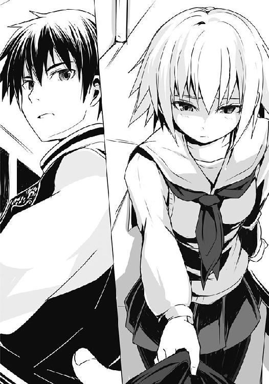
僕が振り返ろうとすれば......その手はするりと外れる。
「糸くずが......ついてた。......それだけ、だ」
裾を引っ張ったその手を背に隠し、先輩は俯いて、そう、言った。
１
「確かに覆面を用意しろと言ったが、誰も面白おかしい愉快な格好をしろとは言ってない」
黒子風の覆面をした神田君が、僕に会うなりそんなことを言い出しやがった。まったく何を言っているのか理解しかねる。この僕のどこが面白おかしい愉快な格好だというのだろう。
ネット界隈では世界的知名度を誇る某セガ信者の方から借りてきた由緒正しい手作りセガサターンマスクだというのに。パーツ取り用として販売していたジャンクＳＳの表面カバーを外し、その周りを段ボールで上げ底（？）にして被れるようにした再利用アイテムである。自作しようかとも思ったのだけれど、タイミング良くジャンクが見つからなかったので、その当人にネットで交流を持っていた著莪に頼み込んで、実家に帰る前に急遽借りてきてもらった逸品だ。
ご存じの通り、ＳＳの表面には中のディスクの様子が見えるように一カ所だけ透明のパーツがあるので、その部分から一応外界を見ることも出来る。......スッゲー見づらいので、僕は神田君に導いてもらう状態でその廃倉庫と思しき会場へと足を踏み込んだのだった。
妙にポップなＢＧＭがかかる中、体育館ほどの広さのそこにはすでに数十人の......覆面を被る優秀なるクズにして『ＶＳ聖夜 〜乱れた性を打ち砕け〜』の工作員たちが勢揃いし、怪しげな雰囲気を醸し出していた。
......やけに多いな。しかも、いつぞやは学生運動のようだと思ったが、今回はみんな頭からすっぽり被るタイプのマスクが多いせいか、どっかのカルト教団の集会みたいになってやがる。
「凄いだろう。昨年と違って、今年は丸富の方と共同戦線を張ることになったらしい」
何気に大規模じゃないか。てっきり神田君たちだけの数名でやるのかと思っていたら......。これはもうちょっとしたデモ......いや、全員が今の社会のあり方に疑問を持つ、若く活動的な覆面男ばかりであることを考慮するならば、ちょっとしたテロ組織だ。全員が決死の覚悟を持っていれば、武器や火薬等がなくとも首都の都市機能を一時的に破壊するに十分だろう。中にはどこぞの軍隊とも戦えそうな、えらいガタイのいいオッサンみたいな......あれ......気のせいかな。人混みの中にとても十代ではあり得ないようなボディを持ち、一二月だというのに腕まくりして鋼のような筋肉を見せつけているアイスホッケーマスクをつけた奴がいるんだけれど、そのツルツルの頭の感じといい、凄く既視感が......。
「なぁ、ここに来るのは学生だけじゃないのか？」
「若者を守ろうという気概を持つ人ならば、誰であれ拒む理由はないだろう。お、始まるぞ」
人混みの真ん中にさりげなくステージがあり、そこに登壇する覆面の男。囲む人々に彼は祝辞を述べ、前年までの活動の記録、他の地域での志を共にする組織の活動内容などについて長々と触れていく。
個人的にサンタ迎撃のために史上最強と謳われる米軍の第七艦隊所属部隊が、極秘裏に戦闘態勢で北上を始めているという話が気になったが、ここにいる人間はそれよりも神田君たちが手配した、グッド氏の作詞作曲によるテーマソングのデキの良さに興奮していた。
確かに無駄にいい感じの曲なのだけれど、野太いオッサンの声が、僕たちには二次元がある、寂しくなんてない、怖いものなどない、パーティには友達と家族がいればそれでいい、さぁ家に帰ってママのミートパイを食べよう、パパからのプレゼントは何だろう、甘いケーキが待っている、ヒァウィゴー！ と連呼しているんだけど......微妙に主旨がずれているのに誰もツッこまないあたりに会場の狂気を感じる。
「さて、我が同志たちよ。決戦の二四日まであと十数時間。各部隊への作戦要項はすでに伝えてあるのでここでは割愛するとして、今、皆で討論しておくべき事柄は何かあるかね？」
議長――建前上そう呼んでみる――が皆々に問うと「烏田高校の剣道部は今年も放置でよろしいので？」と声が上がった。どういうことだ？ と僕のような今年初参加らしき者たちがざわつくと議長が手で落ち着けという仕草をした。
「剣道部は例年、顧問の教師同士が呑み仲間ということで、女子バレー部と合同クリスマス会をする。......確かにこれは大きな問題だ。実際、それが切っ掛けで結婚に至った実例も数多い。ただ、顧問教師の管理下にある以上、不純な行為には及びづらいとして今まで特例として見逃してきたが今年も継続で構わないだろう。それよりも一夜の過ちを犯す若者たちを正しい道へ導くことこそが我らの使命と違うか。つまりはホテル周辺での活動にもっと力を入れて......」
――そんな日和ったことを言っているからリア充が減らないんだ！ ――家族でもないうら若き女性とクリスマスを過ごすだけで死罪である！ ――粛正を！ 奴らの粛正を求める!!
「......なぁ、神田君。これ、ひょっとして夜まで続くの？」
「明日、二四日の朝までやるらしい。そこから休憩に入って、司令部の連中がその間に会議の結論を受けて作戦内容を微調整、日暮れとともに実行部隊は行動に入る」
「......ごめん、何か、頭痛がしてきたから帰っていい？」
「佐藤、お前......。二五日の夜は丸富のファミ部でゲーム大会だろ、あの従姉と一緒に。その時点ですでに処刑台予約一覧にお前の名前が載っていてもおかしくないレベルだぞ。きちんと同志であることを回りにアピールしておかないと、俺たちはいいとしても、他の連中に疑われたら即座に〝総括〟されるぞ」
「......それって日本赤軍的な意味か」
「まぁそうだな。他にも〝ＳＡＴＳＵＧＡＩ〟とか〝友愛〟とかっていう言葉に置き換え――」
「できないから!! なっ!? 絶対置き換えられないって!!」
神田君が、何をそんなに慌てているんだ？ みたいな顔をしているのが覆面越しにでもわかるのだが......。コイツ、何そんな悠長なことを......。現状ですでにロシア在住であるプーチンさんの娘と男女の仲になるぐらいヤバイ状況に陥っているのに気づいていないのか!?
僕が大声を上げてしまったせいか、さっきまで行われていた活発な議論が止まり、会場内の全員が一斉に僕らの方を見てきていた。
あまりの居心地の悪さ......というより、命の危機を感じた僕は頭を冷やしてくると神田君に告げおいて、会場から脱出した。
２
今日は一二月二四日。そう、クリスマス・イブだ。耳に心地良いベルの音がジングルベルを奏で、それに合わせるような子供たちのはしゃぐ声が街のＢＧＭ。数日間にわたって空を覆う厚い雲のせいで例年以上に寒いのだけれど、誰も彼もが笑顔で行き交っている。
みんなクリスマスの魔法にかけられているのだ。
ほら、日が暮れ始めると、いつも疲れた顔をしているお父さんたちも、この日ばかりはネクタイを緩め、大きなプレゼントを抱えて家路を急いでいる。家族のもとへ、愛する人たちが待つ家へ。クリスマスの魔法がお父さんをサンタさんに変えるんだ。
道を照らすたくさんのイルミネーションは、サンタさんの道標。こっちだよと人々の呼ぶ声が光になっている。
ベルの音、人々の楽しげな笑い声、夜をも撥ね返す色とりどりのイルミネーション、街を包む幸せな雑踏......。そう、今日はクリスマス・イブ。世界で一番幸せが生まれる日。それは誰もが魔法にかかってしまう不思議な日......。
「そんな話より......なぁ洋、いいじゃないか。一発ヤろうぜ......頼むよ、飢えてるんだ......」
空は厚い雲が覆ってお星様は見えはしない。けれど、負けないだけの輝きが地上にはたくさんあるから、誰も寂しくなんてないんだ。
そう、人々の笑顔という名の光が、数え切れないぐらいたくさんに。
今宵はクリスマス・イブ。お星様の明かりが人々の笑顔となって地上に舞い降りる日......。
「今まで〝良く〟してやっただろう？ なぁ、だからさ、いいじゃないか......なぁ一度だけ、もう一回だけでいいんだって」
人々は笑う。子供が、大人が、恋人たちが、犬も猫も、全ての生き物たちが笑......。
――このメス豚どもが！ 貴様の腰に腕を回している男は体だけが目的だ！ ――瞼を開け、真実を見るのだ！ ディナーもプレゼントも所詮は目眩まし！ ――お父さん！ あなたの娘は獣のような男に狙われているぞ！ 今すぐ連絡を！ ――若者たちよ、悔い改めよ！
そう、今日はクリスマス・イブ。世界で一番幸せが......。
「もういいだろう？ 一回やれば二回も三回も変わらないって、な？ だからヤろう、今すぐヤろう！ さぁ一発かまそう!!」
「だからこういうのが嫌だって以前も言ったでしょうが!!」
僕は手にしていたチラシの束を握りしめながら、山乃守さんにそう訴えるのだけれど、彼は煙草を咥えたまま笑うばかりだ。
僕は腹の底からため息を吐き、公園のベンチに座ると、山乃守さんも隣に座る。ちょうどそこから見える道路の方を二人で眺める。そこでは神田君たちがチラシを配り、プラカードを振り回しながら声を張り上げていた。
今の僕は、本来は実力行使部隊に配属されるはずが、昨日の集会において若干裏切り疑惑が出てしまったがために花形部隊から降格となり、こうしてビラ配りに回されているのだが......何故かそこにサラッと当たり前のように山乃守さんが現れてこの酷い有様である。
無論、彼が誘っているのは床の上の関係ではなく、一緒にスーパーで試食して回ろう、ということである。イブの夜に男一人で行くのはさすがの彼といえども辛いのだという。
「一人はダメなんだよなぁ。なんつぅか、店員も相手にしないっていうか、哀れ過ぎて関わりを持ちたくないっていうのが伝わってくるんだ。な、だから......」
「だから嫌ですって。烏頭に頭でも下げて家に入れてもらってください。僕は......そんな気分じゃないんですよ。さっきも言ったでしょう」
酷い有様、と先ほど述べたのは何も全容の掴めない組織の手先になっていることや、山乃守さんに卑猥な言葉で誘われているというだけじゃない。一昨日の槍水先輩との一件のことだ。
当然といえば当然なのだけれど、あの夜以来彼女とは会っていない。連絡も、取っていない。
考えれば考えるほど気分が沈んでいくので、一時でも忘れられるようにと神田君たちとともに精力的にビラを配っていたら......山乃守さんである。しかも最初が「どうした、洋。......何か嫌なことでもあったか？ そんな目をしているぜ」と、いきなり核心をついてきたのだ。そりゃもう、百戦錬磨のヒモ野郎、女心を手玉に取ってご飯を喰らっているような人だから、何か良いアドバイスをくれるんじゃないかと休憩貰って、彼に長い時間かけて詳細に全てを話したら......「そんなことより、一発ヤろう」ときやがったのだ。これを酷い有様と言わずして何と言うのか。女心だけでなく、僕の心まで......何て酷い人だ......。
「洋、そんな顔で俺を見るなよ。あ、そうだ、こうしよう。一緒にスーパーに行ってくれたら何か役立つアドバイスするって。......疑うなよ、ガンコナーの名は伊達じゃない」
そうか、そういえばそうだった。この人はガンコナー、人の心を弄ぶのが本領だ。僕の心など、彼にかかっては簡単に転がせるのだろう。
「でも、嫌です。烏頭がダメならキープしてあった女のところに行くなりすればいいでしょうが。それに、この前持ってた野宿セットだって」
「あぁ、野宿セットはもうないんだ。それに......他の女もなぁ。みことの家に転がり込んだらさ、その日のうちに携帯のセキュリティが解読されて、登録名が女っぽいアドレス全部消されてな......。しかもアイツ自分の携帯にバックアップを取って、そこから全員にとんでもない量の嫌がらせメールしまくってたみたいで......もう壊滅だよ」
意外に烏頭もやるなぁ......。もっとドライかと思っていたけど。
「ナンパしようにもさすがに、イブにいきなりだからな。ハードルが高くて困る」
もう少し夜が深まれば違うんだがな、と山乃守さんは人の良さそうな顔で、笑った。
神田君とその部下数名がリア充に囲まれて「なにこれー、カワイソー（笑）」などと笑われながら携帯カメラで写真を取られているのを、他人事のように眺めつつ、山乃守さんと僕は沈黙でもってしばしの時を過ごした。
さすがはガンコナーというべきなのか、それとも古来より間を埋めるとされる煙草の作用なのか、不思議と気まずい感じはない。何となく思うのだけれど、著莪とのようにお互いに何も隠すことがないと、無言でも気楽でいられるものなのかもしれない。
......だとすれば、あの槍水先輩との気まずかった夜の沈黙は......あぁ、そうか、先輩がひたすらに明日の夜は部室で過ごすとこだわっていた理由が隠されたままだったからか。
「こんなこと訊くのはお門違いってやつかもしれませんけど、ＨＰ同好会、いや、ＨＰ部のクリスマスって何かあるんですかね？ 先輩が妙にそれにこだわっていたんで」
「んー？ そうだなぁ。みことから聞いた限りだと、さっき洋が喋ってくれたのと大差なかったはずだぜ？ 女子部員がケーキを、男子部員は弁当、特に実力者はジジ様ンとこの特盛りだか大盛りだかの弁当を獲りに行くってだけのはずだ。......もし何かあるんだとすりゃ、あとは個人的な理由だろう」
「先輩の、ですか。......それって何かわかりません？」
「さぁなぁ。俺がみことと付き合っていたのはお前の先輩が入学する前だからな」
そうでしたね、と、僕は呟き、撮ったばかりの写真をツイッターにアップし始めたらしいリア充カップルをプラカード持って追いかけ回し始めた愉快な神田君たちを、また無言で見やる。
携帯が震えたので、出てみると......メールだ。一瞬送信者の『槍水』の文字にハッとしたが、茉莉花の方である。内容は絵文字たっぷりで一言「メリ〜クリスマス〜！」とだけあり、画像が一枚添付されていた。開いてみるとノースリーブのミニスカサンタ衣装を着た茉莉花が、照れ笑いを浮かべる槍水先輩の膝の上で満面の笑みを浮かべているものだ。背景にはクリスマスツリーと反射している窓があり、撮影している恐らく母親と思しき人の姿とケンタッキーのバスケットらしきものも見える。
......なお、茉莉花は体育座りのような感じなので......あと二〜三センチでパンチラに至りそうな際どい写真となっていた。......うーむ、惜しい。
「ん？ 花火かな。今向こうの方から光と音が聞こえた気がするんだが」
山乃守さんが煙を吐きながら顔を向けた方角は、僕の住む男子寮のある方角だ。
......今日、あっちの方でそんなイベントあったっけ？ まぁいいや。僕は視線を携帯に戻し、ようやく普通のクリスマスっぽい出来事に、そして、先輩の笑顔が見れて少し気が楽になる。
例のごとく僕や著莪の実家では一般的なクリスマスとは違って、あんまりこういうのはないのだ。イベントがあるからと僕の母は広大なネットの海に沈み、親父は夜になると飲み会でもあるのか、それとも独り身の隊員の代わりに当直やっているのか知らないが、毎年のように留守にしていたので『クリスマスナイツ』をし、シーマンと会話する以外は大体著莪家に入り浸りである。んで、バレンタインデーと同じく、若干本場寄りのために微妙につまらないというか、普通のお祝いとは何か違ってた。いまだによくわからないんだけどサンタと一緒に箒に乗った魔女みたいな飾りをしたり、プレゼントは正月までくれなかったり、ビックリするぐらい興味のない教会のミサに朝から行ったりする。
一応著莪は今年もそれに倣うらしく実家に戻ったが、僕は槍水先輩のこともあって、何だか戻る気になれなかった。
僕が笑いながら返信を打っていると、肩にそっと山乃守さんの手が置かれた。
「洋、お兄ちゃんから最高に役に立つアドバイスを一つお前にやろう」
「わかってます。さりげなく茉莉花経由で先輩に――」
「ロリはやめとけ」
「......違いますよ」
山乃守さんは一体人を何だと思っているのだと、苛立ちを覚えずにはいられなかった。
近づいてくるパトカーの音を聞きながら、僕は胸の内で反論する。
......少なくとも、あと二〜三年は待つに決まってるじゃないか、まったく。
３
思い出されるのは大きな手の感触。そして、月明かりに照らされた円卓の木目。
あの時俯いていたのは、褒められたことがあまりに嬉しくて、むず痒くて、どんな顔をしていいかわからなかったからだ。
昨年、ケーキで有名な店に何の気まぐれか、アラシが現れた。そのために近年希に見る荒れ方をした二五日の半額ケーキ争奪戦......烏頭みことさえ飲み込まれた戦場において、槍水はＨＰ部の女子の中で唯一奪取することが出来た。
みんなから褒めてもらえて、そして、隣に座っていたあの人から頭を撫でられた感触が今でも忘れられない。
これなら来年も期待できるな。細い体型とは裏腹に、太く低い声で、彼は笑うようにそう言ってくれた。だから槍水は、言ったのだ。
――はいっ次も絶対に獲ってきます。だから......その......来年もここで一緒にクリスマスパーティ、しましょうね。
あの時の彼は槍水の頭を撫でながら笑って頷き、それを見た彼女はより一層――。
「ぅぐぅう......ん〜、んん〜......うっぅう......」
槍水仙はその腹の虫の声にも似た妹の呻きで、まどろみから目覚めた。
一瞬自分がどこにいるのかわからなくて、布団から顔を出して辺りを見渡す。余計な飾り気のない、シンプルな部屋。クローゼットの上から自分を見下ろしている大きな犬のヌイグルミ。
実家の、自分の部屋だ。カーテンの隙間から差し込む弱々しい光からは今が何時なのかわからず、ベッド脇の時計を見やった。一二月二五日、午前一一時三〇分。
「......少し、寝過ぎたかな」
槍水は絞めるようにして抱きしめていた茉莉花の体から、腕、そして挟み込んでいた両足を放すも、もう一度最後に布団の中でギュッと抱きしめ、サラサラとした彼女の髪に顔を埋めた。
妹も随分大きくなった気がする。それに少し前までは全身どこを触っても赤子のように柔らかい肌だったのが、最近は張りも出てきている。ゆっくりと大人になっているのだ。たまにしか会えないからこそ、それがよくわかった。
そんな茉莉花は悪い夢でも見ているのか、何やら苦しげな顔をしていたが、槍水がベッドから出ると、自然と穏やかな表情になっていった。槍水も少しホッとした。
室内でありながら空気が冷たい。槍水がカーテンを開けると、空には息苦しくなるような雲が相変わらず漂っていた。
「......今の私と、同じだな」
槍水は壁に掛けてある烏田高校の制服を見やる。佐藤には二五日は実家で過ごすと勢いで言ってしまったが......果たしてどうするべきか、槍水はまだ決めかねていた。
「わかってるんだ、本当は。行ったところで、結局......。どうせ佐藤だって」
槍水は瞼を閉じ、額を冷たいに窓に当てる。ダメだとわかっていることなのに、それでも期待している女々しい自分が嫌だった。祈るようにすがってしまい、もしかしたらという奇跡をどこかで信じてしまっている。
今日は本当に、このまま茉莉花と一緒に過ごそうか。そうすれば......。
瞼を開くと、視界の端で何かが明滅していた。携帯である。そういえば昨夜家族でクリスマパーティをする前に、勉強机の上に放り投げたまま、すっかり忘れていた。
開いてみると日付が変わる前の時間に佐藤洋から着信があったらしい。留守電は、なし。
何のコールだろう？ あの夜のことか。それとも......今夜のこと。
槍水はしばらく携帯の画面に浮かぶ佐藤洋の名を見つめた。バックライトが消える度操作し、彼の名を表示させる。
そして、何の電話だったのか......何の電話だったら、良かっただろう......それをひたすらに考えた。
「......何をやっているんだろうな、私は。まったく」
息苦しくなった槍水は携帯を手にしたまま窓を開けた。北国を思わせる冷えた空気がサッと室内に入り込んできて、槍水の肌を叩く。
「......さむぃ、ん......アレ......。お姉ちゃん？」
「あ、すまない。起こしちゃったな」
茉莉花は布団を被り直すと、うにうにと動いて芋虫のように体に巻き付け、半身を起こす。その様子に槍水は微笑み、開いていた携帯を閉じた。
「ううん、別に。えーっと、あ、もう、こんな時間だ。寝過ぎちゃった」
「昨日は遅くまで遊んでたからな。でも、別に予定があるわけじゃないからいいだろう」
「え？ お姉ちゃん、準備しなくていいの？ 今年も烏田高校に戻るんでしょ？ 遅れたらセンパイや白粉さんに何か言われちゃうよ〜」
あ、いや......。槍水は曖昧な声を出すばかりで、言葉にはならない。まだ寝ぼけ眼の茉莉花は笑うばかりだった。
「私も今日、友達の家でクリスマス会やるんだ。だから、早く起きて準備しなきゃ......うーっ、でも、このままもう少し寝てたいよぅなぁ......」
芋虫状の茉莉花が、顔だけ出して上目遣いで見てくる。
槍水にはもう、今年は行かないとは、言えなかった。
「まったく。何を言っているんだ。......ほら、早く布団から出ないと窓を全開にして寝てられないようにするぞ」
やーめーてー、という茉莉花の懇願する声が上がり、槍水は苦笑して窓を閉めた。
○
昨夜はリア充たちをプラカードを振り回して追いかけたため、署に連行された神田君たちは二五日の朝には寮へ戻ってくることが出来たらしい。いくら未成年とはいえ、散々カップルを追いかけ回した挙げ句、最後には路上に放置されていた犬の放出物をプラカードですくってぶん投げていたので、もっとかかるかと思ったのだけれど......彼ら曰く、警察組織内にも同志がいたからとかなんとか。
ただ話を聞く限り、どうも事情を聞いた警察官にさえ同情されたらしく、厳重注意のみのお咎めなしで婦警さんらとケーキ食べて帰ってきた、というのが実際のところらしい。
「いいか、佐藤。婦警さんとのことは他の連中には秘密だぜ？ もし知られようものなら......フフッ、総括されちまうぜ」
昼過ぎまで寮で寝ていようとした僕を叩き起こすなり、神田君、矢部君、蔵田君は得意げでそんなことを言うのだけれど......自分たちの年齢の三倍もの人生経験を積んでいる――何なら、両親と同年代の、と言い換えてもいいだろう――婦警さんとケーキを食べたことがどんな総括の理由に当たるのか、熟女趣味のない僕にはよく理解出来なかった。
「いやぁ、しかし何だな。二二日が終業式だったおかげで、寮内も人が少なくなってて助かったぜ。朝帰りした様子を見られようものなら何らかの疑惑をかけられたかもしれん」
矢部君が自分の顎を指先で撫でながら得意げに言い、蔵田君が頷く。
「いや、意外にサツに捕まるまで活動したってことで賞賛されたんじゃねぇ？ アレじゃん、上からは今年はもう休んでろって労いのメールが来てただろ」
馬鹿笑いするバカ三人を前に、僕はベッド脇に置いてあった携帯を見てみる。時刻は丁度正午。......槍水先輩からの着信は、なかった。ま、留守電も残さなかったし、当然か。
神田君たちが次々に捕縛されていくのを見届けた後、山乃守さんとスーパーに行ったのだけれど、その時、彼から言われたのだ。何か言うことが決まっていなくても、わからなくても、連絡はしておけ、と。無言でも、つっかえても、口を閉じているよりはいいはずだ、と。
「おいおい佐藤、お前の携帯に着信やメールが来てるわけないだろう！」
熟女とケーキ喰っただけでどこからその優越感が生まれるのかわからないが、相変わらずバカ笑いする三人に嫌気が差した僕はとりあえず服を着替えることにした。
もう帰れよ、と思わず漏らすと、矢部君は笑いを消し、明日には帰る、とか言いだした。一瞬何を言っているのかわからなかったが、僕の〝帰れ〟を実家へ〝帰れ〟と勘違いしたらしい。
「クリスマスに帰れるわけがないだろう。まさか......わからないのか？ クリスマスという一大イベント当日、年頃の息子が彼女はもちろん、誰かと遊ぶこともなく自宅で家族団欒の食卓を囲む悲しさを......。貴様には家族からの不自然に優しい気遣いの辛さがわからないのか!!」
うんうん、と神田君と蔵田君も頷いているところを見ると高段位桜桃少年団にとってはそれが常識らしい。
神田君がポンと僕の肩に手を置いてくる。
「家族団欒......その温かな言葉とは裏腹に、何と切ない響きだろう。......わかるな、佐藤？」
「いやぁ、僕はクリスマス、著莪の......いや、わかるよ、凄くわかる」
僕が著莪の、と口に出した瞬間に、僕は生きてこのベッドから降りることは叶わないだろうというのを、本能で察した。多分彼らは徹夜でテンションがおかしなことになっているのだ。ヘタをすれば、この場で総括されかねない！
彼らが雑談を始めたので、その隙に僕はさりげなく非常食としていつも用意してあるソイジョイを食べつつ、携帯と財布をポケットに入れる。食べ終わると上着を手に取った。念のために逃げておいた方が安全だ。
「お、何だ佐藤、出かけるのか？ あぁ丸富のファミ部でゲームのスコアアタックやるんだっけか？ 指が折れるまで遊ぶんだったな」
無論、嘘である。著莪から聞いた限りではみんなコタツを囲んで、ケーキ食べて、ボードゲームやらテレビゲームやらで遊びつつ、それぞれが一発芸をやったりする......つまりは、普通のクリスマス会だが、それを述べたら僕がどうなるかわかったものではない。ファミ部には著莪やあせびちゃんの他にも、ガマちゃんをはじめとして数人の女の子がいるのだ。......僕の服を着た矢部君がサラッと丸富に行きかねない。
嘘とは、人間関係における潤滑剤だ。不要な摩擦を消してくれる珠玉のアイテムである。
僕がそんな、ちょっと名言っぽいことを考えていると、不意に扉がノックされるのだけれど......まさか著莪が迎えに来たか!? ま、まずい!?
僕は慌てて扉を押さえようとしたが、間に合わない。扉が開き......寮の三年生が現れた。
「おい一年、玄関にお客さん来てたぞ。......クリスマスだからってハメ外しすぎるなよ？ ったく、あんな眼鏡のかわいい子、うらやましいじゃねぇか」
ニヤリと笑って彼は僕の胸元に軽く拳を当ててくる。その言い方、そして玄関に客......？ やはり著莪か!? 僕は何やらただならぬ気配を漂わせ始めた三人を置いて、駆け足で玄関に向かった。途中洗面所に寄って速攻で顔を洗い、寝癖だけ直す。......無論、著莪が来ていればそのまま逃亡する気だった。ファミ部で遊んだ後、そのまま今晩は著莪のマンションに泊めてもらおう。明日になればきっと全てが終わっ――
「スーッハーッ......んふぅ！ この清浄な空気！ フレッシュながらも胸がすくような饐えた匂い......気のせいか、ほのかにマロンの花を彷彿とさせる重い香りがこの場の空気をより一層芳醇なものに仕立て上げ......あっ、さ、佐藤さん、こんにちは」
玄関で待っていたのは著莪ではなく、大きな紙袋を持った化け物だった。しかもコイツ、何気にクリスマスってことだからなのか、ちょっとおめかししているのが僕の不快感に拍車をかける。ニットベレー帽に、組み紐ニットポンチョ、レイヤードスカートにショートブーツ。森ガールでも意識しているのか、全体的に柔らかで優しい色合いの生地でまとめているから......何だ、少し抱きしめたくなるじゃないか。......眼鏡の奥の瞳だけは相変わらず小動物のようにおどおどしつつも、若干邪悪なるものの気配を漂わせているが......。
「あの、いきなりなんですけど......これ、クリスマスのプレゼントってことで」
「......え？ 僕に？ いいの？ わざわざ寮まで来てくれて......ありがとう」
おめかしして、僕の所にクリスマスプレゼントを持って女の子がやってくる。それがたとえ白粉であっても萌え......ねぇよ。多分、コイツ、クリスマスプレゼントにかこつけて男子寮に入り込むのが目的だったんじゃないのか。
僕は紙袋を受け取ると、白粉に確認してから中を見させてもらった。ビリーズブートキャンプとプロテイン（バニラ味）だった。
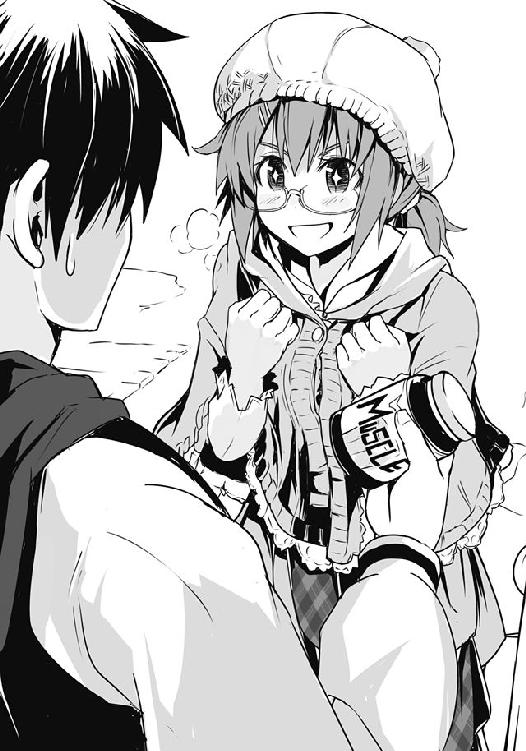
「冬休み明けはこれでムッキムキですよ佐藤さん！ キタコレってやつです！ ――あぅ！」
「......何故に僕はお前の趣味に合わせてムッキムキにならないといけないんだよ」
「あ、いえ、その、お正月太り対策というか、その......あっ！ 落ち込んだ時に見るだけでも、ビリー隊長のパワーを貰えて元気になれる優れもので――あぅ！」
「......ありがとう。一応、貰っておくよ。あ〜、お返しのプレゼントは何もないんだけど」
「あ、その〜だからってわけじゃないんですけど......今お時間ってありますか？ ちょっとだけで、いいので。少しお話が。......槍水先輩のことで」
一気に僕の頭はシリアスになる。僕は頷くと、紙袋を持って自室へ戻り......そこで黒い覆面をつけた男たち三人と相対した。
「これより、佐藤洋の総括を執り行う!! 皆の者よ、奴を――!!」
僕は即座に紙袋を矢部君と思しき男に向かって投げつけ、その場から全力で逃げる。背後から「女子の香りじゃ〜!!」という歓喜の声が聞こえてきたので、これで数秒は稼げるだろう。
寮の玄関に戻ると、そこでは何故か白粉に絡む一人の男の姿。
「ねぇ〜、キミ名前は？ 中学生......じゃないよね。学校で見た気がするもん。......あ、ほらやっぱりね〜。何しに来たの？ 誰か友達がいるのかな？ 案内しよっか」
眼鏡を手に持った白粉がオロオロと困惑しているようだったのと、いつ後ろから黒覆面の男たちが僕を総括しに現れるかわかったものじゃないので、その男に走り込んだ勢いのままドロップキックを喰らわせ、白粉とともに男子寮を後にした。
確か大森だか小森だかタモリだったか......とりあえず名字の終わりに〝森〟がつくハードな変態だったはずだ。......〝林〟だったかもしれない。まぁ、どうでもいいか。
「あ、ありがとうございます。何か、助けてもらっちゃって」
寮から離れると、絡まれていたとでも勘違いしているのか、そんなことを白粉は言う。
絡まれていたという分には間違ってはいないが、多分あの何とか森君と白粉とでは、『絡む』の意味が大分違っていることだろう。
まぁ感謝される分には悪くないので、僕は曖昧に応じ、彼女と二人、しばらく無為に歩いた。
雲のせいで薄暗いとはいえ、日中は今日がクリスマスだということを忘れそうになる。街の中心部ではなくとも、夜ならば意識しなくとも目に入ってくるイルミネーションが、今は眠っているからだろう。連休ということもあり、人々もまだ、イブの疲れを癒している時間なのだ。
日が暮れればイルミネーションは輝き、人々の顔にはまた笑顔が咲き乱れるのだろう。
......あ、いや、単にクリスマス特番を見ていないからかもしれないな。例年なら二五日のお昼はちょっと豪勢に著莪家でパーティをする。大抵はそれを待つ間、著莪と二人、重なり合うようにしてソファの上でゴロゴロとテレビを見ているのが普通なのだ。
「あの、佐藤さん。槍水先輩のことなんですけど、今日ってやっぱり......え？ 今日は自宅で茉莉花ちゃんと......？。あっ、それならいいんです！ 全然いいんです！」
何をそんなに気にしているのかと訊いてみれば、白梅家のパーティに槍水先輩を呼びたい、と、きちんと白梅に相談したらしい。白梅はもちろん、両親もすぐに快諾し、料理等々も何の問題もないのだと言ってくれたらしい。僕の所に来たのも、先輩をどういうふうに誘ったらいいかという相談のためだったそうな。
「何かその、梅ちゃんのお父さんが佐藤さんを呼ぼうとしてたみたいで、多めにケーキとか料理とか用意していたそうですよ」
僕の義父は何て素敵なんだ！ こりゃ本格的に白梅家への婿入りを検討しないといけないかもしれないな。......うーん、悪くない。
「でも、こっちに来ないなら......うん、いいのかな。でも、先輩って結構頑固なところあるじゃないですか。だから、来ないって佐藤さんに言っておきながら案外......」
言われてみると、その通りだ。あの先輩なら、それぐらいのことをやりかねない。
「あの、あたし、後で連絡して確認......してもダメですかね。でも、しないよりは......いいですよね」
胸のところで弱々しく拳を握る白粉を見ていると、何だかコイツも変わったなぁ、としみじみ思う。春に出会ったばかりの頃はずっとおどおどしてて、他人との接触は可能な限り避けようとしていたのに......今じゃ、こうして自分から踏み込んでいこうとするようになっている。
......あっちのネタ収集の時は僕のプライバシーに土足で踏み込んでくるけど。
ポンポンと、何となく僕は白粉の頭を軽く叩く。それが僕からの同意の意味だと判断したらしい白粉は「はいっ」と、力強く頷いた。
それから僕たちはお互いにしばらく時間があるということで、何とはなしに街を歩くことにした。いつもと違って日中、そして何より制服じゃない白粉とこうして歩くのはどこか新鮮で、まるでデートのようだな、とふと思う。ただ、口に出すとそれだけで白梅様の激烈なるお怒りが下りそうなので黙っていたけど。
「そういえば、佐藤さんって......えぁっと、ファミ部でしたっけ？ そこのクリスマス会ではどんなことをやるんですか？」
「ん〜、まぁ普通にみんなでメシ喰って、ゲームして、あとは各自の出し物かな。僕と著莪はデュエットで『ナイツ』っていうゲームのＥＤ曲『DREAMS DREAMS』って歌を二人で四人分モノマネして唄う予定」
あの名曲は普通にクリアするとエンディングでは子供二人のデュエットなのだけれど、全ステージでランクＡを取ると大人の男女のデュエット曲になったりと、何気に嬉しい隠し要素がある。なお子供のデュエットとはいえ、後半になると大人の女性、最後に男性が加わっていくので、こっちの方が僕個人としては好きだったりする。
この歌の凄いところは――僕だけかもしれないけど――子供が唄うと大切な友達との友情を描いた歌に聞こえる。しかし大人の男女が唄うと途端にラブソングのようになり、そして全員の歌声が合わさると家族愛のそれに聞こえてくるのだ。
辛い夜、寂しい夜、そんな時には歌詞を追いながら聴いてほしい。きっとその素敵な歌声が、優しい歌詞が、聞く者を温かに包んでくれるはずだ。セガ信者と喧嘩して、仲直りしたい時はこの歌を口ずさめばそれだけで心が通じ合えるに違いない。少なくとも僕と著莪はそうだった。謝って謝って、許してもらえたら、ベッドの中で一緒に唄って笑い合って......。
ともかくそんな学校の教科書に載せるべき名曲を、僕と著莪がそれぞれ二人分声マネして可能な限りオリジナルに則して唄うという、知らない人間からしたら何が面白いのかもよくわからないだろうけれどそんなことは知ったこっちゃないという、ある意味モノマネが有する独善性を最大限に活用した自己満足カラオケを披露する予定である。
「著莪さんとは、本当に仲がいいんですね」
「双子みたいなもんだからね。白粉だってクリスマスにも実家に帰らずに白梅の家でパーティだろ。そっちはそっちで凄い仲いいよ」
白粉は少しだけ、照れたような顔をしてベレー帽を被り直した。
「昔から、梅ちゃんだけは......あたしにとって、特別なんです」
「......でも、あっちの趣味のことは黙ってるのか」
僕が言い切る前に、白粉はそしらぬ顔で極自然に早足になりやがる。僕は彼女の帽子からはみ出ている後ろ髪の束を引っ張る。あぅ！ と、短い声が聞こえた。
もう一回ぐらい引っ張ってから、あっちの趣味と、そして白粉が言う〝特別〟とやらについて訊いてみようと思ったのだが、それを邪魔するように僕の携帯が震える。白粉の後ろ髪を放して出てみると、二階堂だ。
『佐藤、今、時間あるか？ 少し会って話したいことがある。......携帯じゃダメだ。理由は聞くな。場所は......』
「何だそこ、微妙に遠い公園だな。街外れだろ。そっちがこっち来いよ。バイクあるんだろ」
『いいから来い。お前にとって悪くない話のはずだ。......多分な』
妙な歯切れの悪さを残してその電話は切れる。二階堂らしくないな、と、僕がぼやくと、その瞬間に背筋に悪寒が走る。
電話中は何となく遠くの方を見やっていたので気がつかなかったが、いつの間にやらオヤツをねだる犬のように、目を爛々と輝かせた白粉が僕に密着して鼻息荒く見上げていやがる。
しかも、さっきからかけていたかのように極自然に眼鏡を装着し、些細な情報も見逃すまいとしているかのようで......。
「お、おぉ！ かつての相棒からの呼び出し！ 不自然な場所！ らしくない歯切れの悪さ！ これはもう完璧じゃないですか！ サト......サイトウさんがヤマノモノさんといちゃいちゃしてるから嫉妬しちゃってるんですよ!! 何というクロスオーバー展開、作品を飛び越えての嫉妬!! メタ的な展開もありつつで、こいつぁ創作意欲が刺激されまくりですね!? 指定の場所に行くと拘束されて、そこからはもう絶対めちゃくちゃに犯さ――あぅ!!」
......白粉先生は、今日も、元気です。
「悪い。少し遅れたかな。ちょっと野暮用があってさ。これでも急いだんだけど」
盛った犬のような白粉を白梅の家に放り込んでから来ようとしたら義父が僕を家に連れ込もうとしたと同時に白梅様が現れて僕と義父をボッコボコにしてきたので「まったく照れやさんだな、僕のハニーは」と調子こいて言ったら本当に大変なことになりかかったので義父を人身御供にして一人命からがら脱出......という日本のどこにでもあるような牧歌的な野暮用を過ごしてきたせいで、思いの外時間を喰ってしまった。何せ、すでに一六時を回り、日が暮れ始めている始末である。
電話をもらってから数時間かかったわけだが、その間二階堂は公園の入り口でバイクを止めたままひたすら待ち続けたらしい。彼の足下には口の開いた缶コーヒーが二つ、一つには煙草の灰皿として使用した痕跡まである。......ストレスがたまった時だけ吸っちゃうタイプなのだろう。そういうの見ていると何だかいろいろと申し訳ない気分になってくるな......。
「まぁ、遅れたのはいい。......それより、今夜はどうするんだ？」
今夜はどうするってお前......まさか白粉の妄想が現実のものになろうとしているのか!?
「......何故、そこで身構える。スーパーのことだ。今夜、サラマンダーはジジ様の店に出る」
正直、そう言われてからようやくホッとした自分が何やら憎らしい。
「毛玉からの情報か。いつもみたいにメールでくれれば......って、またジジ様の店なのか」
「あぁ、今日のあの店は魔導士が例年戦っていた領域だ。ＨＰ部の伝統なんだろ？ 腕の良い男の狼がそこで戦うってのは。仮に退部していたとしても、もしかしたら出てくるかもしれない、と予想しているらしい」
「話は聞いてるけど......でも、魔導士と戦いたいなら、直接連絡取るとかすりゃいいのに」
外国に行っている間に携帯が解約されて連絡先がわからないらしいと、二階堂は鼻で笑った。
「それで、だ。佐藤、今夜はお前はどうするんだ。サラマンダーはお前と戦いたいと言っているそうだ。正確にはオルトロスとお前。......何故かって？ 俺が知るか」
「そっか。ただ、僕は今日、丸富の方でクリスマス会に参加する予定なんだけど......」
何となく、僕たちは黙った。最近沈黙が多い。冬だからだろうか。世界的に見ても寒い地域に住む人は温かい地域の人に比べて口数が少ないと何かで聞いた気がする。
「......佐藤、以前オレの言ったことを覚えているか？ サラマンダーに勝つ方法だ。もしそれがお前のスタイルに合わない手段であったとすれば......使うか？」
「卑怯だったり、勝利の一味が失われるようなものでないのなら。せめてその手段ってのを自分で見つけることが出来れば、そんなに躊躇いはないと思う」
初回から攻略本片手のプレイはつまらない、と、僕が付け加えると、二階堂は満足げに微笑み、ゴミを袋にまとめ、バイクに跨った。
「オレは今夜はジジ様の店に行く。オルトロスもそうだろう。お前は知らないが、一つ教えておく。サラマンダーはここ二日休んだとはいえ、体はボロボロのはずだ。アイツは長期間連続して戦えない」
「......どういうことだ？」
「奴は腹の虫の加護を限界まで引き出すために、争奪戦に参加している間は基本的にそれ以外の食事を摂らない。そうすることによって全ての攻撃に最大限の腹の虫の加護を与え、そして痛みすら感じなくなっている。......だが、ダメージが消えているわけじゃないんだ。何故サラマンダーと一緒に毛玉が戦わないのかも、そこに理由がある」
僕は言われてハッとした。毛玉は確かに一度も鉄平とともに戦うことをしておらず、そしてこの間は戦闘終了時にはスッ転びそうになった後輩を即座に抱きかかえていた。
つまり毛玉は、鉄平のおもりに徹しているのだろう。
「それが、サラマンダーの攻略法と関係があるってことか？」
「いや、まったく関係ない。恐らく奴はこの夜を最後にこの街から出ていくだろうってことだ。体を休ませていては年末年始で店が閉まるし、奴も実家に帰るだろう。年内に勝つチャンスは今夜。それだけ覚えておけ。それ以上、オレからは何も言うことはない」
本当にそれだけ言って、二階堂は走り去っていく。......結局、アイツ、僕を呼び寄せてまで何が言いたかったのか、イマイチよくわからなかったな。いつもならメールで済む話だった。
鉄平からの伝言を伝えるとともに、今夜一緒にサラマンダーと戦ってくれ、とでも言いたかったのだろうか。何となくそんなニュアンスが込められていたような気はするが......。
あれか、やっぱりツードッグスとして相方の僕を求めてい――クソがッ!! 何でだ!? 何で〝相方の僕を求めて〟という言葉だけで僕の脳裏に白粉の汚れた笑みが浮かんできてしまうのだ!? 一体僕はどんな難病に犯され......字が違う!! チクショウ!! 石田先生と白粉がタッグを組んで僕を攻めてきや......あぁもうダメだ！ 〝攻め〟って言葉に〝受け〟という言葉が随伴して頭に浮かんできやがる!! これが洗脳ってやつなのか!?
僕は己の中に芽生えた狂気に怯えながら、街へと足を向ける。人気の少ないその公園にいると、本当に白粉に取り込まれかねない。早く誰か......出来ればかわいい、もしくはエロい女の子に会いたかった。それを見ればきっと僕の男としての本能がムクムクとだな......。
もういっそ待ち合わせの時間よりかなり早いが著莪のマンションにでも行こうか。そろそろこっちに戻ってきている時間だろう。
「あ〜......ってことは、槍水先輩も、こっちに来てたりするのかな」
立ち止まった僕は携帯を取り出すと、しばらく固まった。コールバックはない。
冷たい空気の中、かなり長い時間、時計の数字が変化していくのを眺めた後......意を決して槍水先輩をコール。......出ない。留守電に切り替わるかと思った時、彼女の声が聞こえた。
『何だ、佐藤......どうした？』
「あ、先輩......その、メリークリスマス！ あと、その......この間のことなんですけど」
『......あの時のことか。それがどうかしたのか？ 別に今さら気にすることでもないぞ』
平静に、しかし無理してそうしているようにも聞こえる声色だった。
僕たちは最近の天気の悪さについてなんていう、本当にどうでもいいことをしばらく喋った。お互いに今日どうするのかを訊きたいのに、訊けないでいる、それがわかったままに。
言葉は違うことを話しているのに、電話なのに、相手の考えていることが伝わり合うというのは何だか不思議な感じがした。そしてそれにあえて触れないということも......。
『......さて、私は茉莉花と夕食の準備があるから、ここまでだ』
「はい、わかりました。......今、茉莉花は隣に？」
『ん......さっきまではいたんだが......。うん、ともかくそれだけだ』
最後に僕の名とともに、メリークリスマス、と一言告げられて、その電話は切られた。......相変わらず、嘘がヘタだな、槍水先輩は。
茉莉花が隣にいたのなら、今の電話はあまりに静か過ぎる。寝ていたりするのなら途中でどこかに行くこともないだろう。僕や著莪ならば、自分自身騙されかねないような徹底的なまでの嘘を構築してみせるが、先輩はそういうことが出来るタイプじゃない。
耳を覆うジングルベル。街を照らすイルミネーション。人々が行き交う街の中、僕は真っ暗な空を見上げ、白い息を吐いた。
きっと、今先輩は部室か、自分のアパートにいるはずだ。ファミ部のクリスマス会にはまだ時間がある。行って、行けないことはない。
......しかし、僕が槍水先輩の所に行ったとして、それで何が出来るのだろう。先輩のヘタクソで精一杯の嘘を暴いたところで、それが嫌がらせ以外の何になるというのだろう。
せめて、槍水先輩がそこまで部室でのクリスマスパーティにこだわる理由が知りたかった。そうすれば、そっとしておくべきなのか、迷惑がられてでも彼女の手を引っ張ってファミ部か白梅家に連れていくべきなのかが判断できるはずなのだ。そして、こんな気分を晴らすことだって......。
僕は行き先を決めぬまま、歩きだす。楽しげに行き交う人々の間を縫う。陰気な顔をしているのだろう、すれ違う際にたまに視線を向けられる。どこか孤立しているような気分だった。
笑い声、客寄せの張り上げる声、応援のクリスマスソング......どれも、僕に明るい気持ちを与えてくれるものはない。こんな気分のままで著莪に会ったら、どんな顔をされるだろう？
「......せめて、ＨＰ部を知ってる人はいないか。たかだか一年前のことだってのに」
山乃守さんも二階堂もダメだ。詳しくないと以前言っていた。可能性があるとすれば......毛玉だ。しかし、毛玉と接触するためにジジ様の半値印証時刻を待ったんじゃ、あまりに遅い。そうなると後は当事者たちしかいない。
僕の知る限りでいえば......魔導士、槍水先輩、そして......。
「......呼ばれた気がしたけど......？」
いきなり耳の中に冷水を流し込まれたかと錯覚するほどの感覚に、僕は耳を押さえて道端にすっ転ぶ。思わず声を上げたくなったが、膝をつきながら見上げた先の姿に、僕は思わず声が失せた。烏頭みことだった。しかも何でか知らないが、サンタ......じゃないな、正当派なメイド服にサンタ帽子とサンタっぽいポンチョを羽織っていた。
色白というよりやや青い肌、黒縁の大きな眼鏡、醒めた目にそれを隠すかのように真っ黒で真っ直ぐで、やたらに長い髪......そして、あまりに小さい囁きなのに、何故か耳に滑り込んでくる不思議な声。最後に会った時から、何も変わっていない。
「おかしいな......呼んでない？ 佐藤が胸の内で、私のこと......呼んだと思ったんだけどな」
烏頭は相変わらず人をバカにしたような顔で言うと、手にしていたチラシの束を両手で胸に抱く。そして僕の目を、お辞儀するようにして覗き込んでくる。
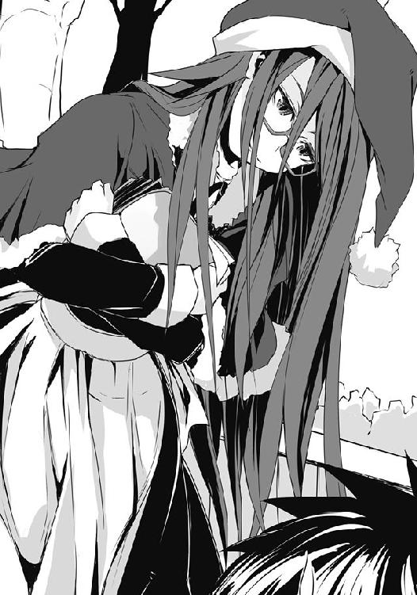
「呼んでない......っていうか、名前を思い浮かべようと思ったと同時だったんだけど......。何してんの？」
勘が当たったと知ってか、烏頭は消え入りそうな、しかしどこか不気味な笑みを浮かべた。
そして、その細い顎でクイッと後ろの方を示すと......そこには犬の着ぐるみがいて、そいつが持っている立て看板には『異端派メイドカフェ THE WORLD OF THE DEAD』の文字が......何だ、微妙にセガの『THE HOUSE OF THE DEAD』みたいで格好いいじゃないか。
あー......アレか、『THE WORLD OF THE DEAD＝死の世界＝冥土＝メイド』ってことか......。駄洒落が高度過ぎてすでに成り立っていないような気がするのは僕だけか。
「あそこで、働いてるの......？」
「......うん。私、バイトじゃなくて、そこの正社員。今はクリスマス期間だからやってないけど、普段は私の怪談話の時間とかあって、結構人気」
ちなみに今はクリスマスに纏わる悲劇、ミステリー、この前後に死んでいった人物たちの人生についてなどのオカルトチックな内容の朗読劇とかをやっているそうな。......一体どこの誰に需要があるんだ、それ。
「男性のお客さんより、女性のお客が多いんだよ......料理もおいしいしね」
「......サラッと人の心を読むのはやめてください。あ、っていうか、丁度良かった。一つどうしても訊いておきたいことがあるんですけど......今、ちょっといいですか」
正直、かつて僕と白粉を槍水先輩への嫌がらせの手段に利用しようと近づき、散々苦しめた......後に、ちょいとエロいことさせてくれた関係なので、素直に頷いてくれるとは思えなかった。だとしても、僕は――。
「去年の......ＨＰ部のクリスマスと......仙のこと......だね。わかるよ......」
やめろと言っているのに、本当に人の心を的確に読んできやがる......。この人、本当はそういう能力でも持っていたんじゃないのか。
「教えて欲しい......？ 欲しいなら......そうだね、このお店のビラ、半分配ってくれたらいいよ。......ただし、配り終わるまでは絶対に逃げないって、条件付きで......」
烏頭はそう言って数百枚はあろうチラシを僕に渡し、そして何とも言えない嫌な笑みを浮かべ、僕、そして犬の着ぐるみの人に「いいでしょ？」と許可を取る。
はっきりいってこの手のチラシはかわいいメイドさんから貰ってこそ意味がある......っていうか、それ以外から貰ってどうするんだよっていう代物だ。ヘタしたら今日中には帰れないんじゃないのかと予感しながらも僕は了承するしかなかった。
「受け取った......ね？ 契約成立。......それじゃ、お話ししながら配ろうか」
烏頭はそう言うものの、最初はしばらく配るばかり。当然僕の方は手に取ってくれる人は少ないが、烏頭の方は烏頭の方で、話しかけてくる人がやたらに多いため配るのに時間がかかるようだ。やたらにしつこかったり撮影を強要してくる奴は着ぐるみの犬が追い払っていた。
どうぞー、よろしくお願いしますー、等と見よう見まねで配っていると手がかじかんでくる。
乾燥した空気ということもあって、いつか紙で手を切るだろうと心配していると、不意にまた、耳の中に冷気が滑り込んでくる。
「クリスマスは誰にとっても幸せな日......けれど、自殺者も多い日なんだよね。一人ぼっちの仙もひょっとして、今頃......だったら、最高なんだけど」
クスクスと周りの人には聞こえないように、烏頭は笑う。僕の方を向いてすらいないのに、まるで耳元で囁いているかのような彼女の声に、僕は寒気を覚えた。
何よりも、そんなのあるわけがないと思いつつも彼女の声で語られると、もしかしたらありえるのではないかと考えてしまうのが、嫌だった。
......そういうのやめて、そう言おうとした時だ。烏頭はビラを配りながらもどこか遠くの方を見やるような顔で淡々と語り始め、僕の口を封じる。......また手玉に取られている気がした。
「仙が今日、部室にこだわる理由は簡単。昔の思い出が縛ってるだけ......きっと、一番楽しかったと仙が感じていた時じゃないのかな。実力が平均を上回り、二つ名を持ち、そして......まだ部員が全員いたし。......あー、そうだね、仙の最後のちゃんとしたイベントだったんだ」
「最後？ でも、去年の冬は雪山にみんなで行ったって......」
「行ったよ。......でも、途中から仙は笑わなくなってた。......私がアイツの邪魔し始めたのも、その時からだから」
ハッとして烏頭を見る。彼女もまた、肩越しに振り返って大きな眼鏡の向こうで、その目を楽しそうに細めた。
「だから、クリスマスが最後。それ以降、仙は......ね。でも......こだわる理由はそれだけじゃないと思うけど......」
ビラを配りながら烏頭の次の言葉を待つものの、彼女はただひたすらにビラを配り続けるばかり。しばらく待った後、さすがに......と思い、催促しようとした時、烏頭は何事もなかったかのようにまた口を開いた。どうやらこちらが痺れを切らすのを待っていたらしい。
しかし、彼女が言いだしたのは先ほどまでの語りとは関係のないことだった。
「佐藤から見て......仙って、どんなふうに見える？」
槍水先輩は......寂しがり屋なところはあるけれど、美人で、強くて、頼りになって、いつも僕らを気にかけてくれて、ほのかにエロくて......。まぁ、最後のはいいか。
僕は烏頭に問われるがまま、意味もわからず素直に答えていく。
「ふーん。......私の印象とは、違うなぁ......」
「そりゃ先輩と後輩の見方の違いでしょう。普通ですよ。誰から見ても同じイメージにしかならない人は、演技をして周りの人間を騙してる人だ。もしくは......ただのバカだ」
「うん、そうだね。......ただ、仙は......どちらかといえば後者かなぁって。......佐藤、そこ怒るとこじゃないよ。実際、そう。私が知っている仙はもっと無邪気で臆病で、嫌な奴で、鈍感で、甘えたがりで、自己中で......つまりは、子供」
子供？ と、僕が烏頭を見やると、彼女はたまたま通りかかった常連客と思しきグループと何やら楽しげに話し始め、『クックックッ』と数人で声を潰すようにして笑いだす。
さすがにその状況で促すわけにもいかない。僕が悶々としていると、木之下桃先輩とその彼氏さんを見つけたが、いつものように二人だけの世界にトリップしてしまっていたのであえて接触は避け、見て見ぬふりをしてやり過ごす。
すると、世間ってのはどうしてこう狭いのか、また見知った顔を見つける。数人の子供を引き連れた紫華蔓先輩だ。
「あれー、洋君！ クリスマスのバイト中なの？ わーっ感心しちゃうなぁ。あ、こっちはわたしの親戚の子たち。今日は一日面倒見るって約束でね。あっ、そうだ！ よぅし、こうして出会えたのも何かの縁、優しい優しい先輩が洋君のお手伝いをしちゃいましょうか」
相変わらずよくわからないテンションでウインクしてくるなり、彼女は僕の手持ちのビラの大半を半ば強引に奪い取っていく。そして微妙に紫華先輩と似ている子供たちに一部を渡し、凄まじい勢いで周りに配っていった。
特に紫華先輩はこういうのに慣れているのか、枯れ木に花を咲かせましょうとジジイが灰をばらまくがごとく、凄まじい勢いでビラを配っていくのだけれど......いいのかな。
烏頭とその常連は同じように『ケッケッケッ』とか不気味な笑い声を上げながら青い顔で盛り上がっていることからもわかるように、そういうお店なのだけれど......どう見ても十歳前後のロリとショタ、そして紫華先輩の健全そうな笑顔で配ってはかなり誤解され......あ、そうか。紫華先輩って、元々そっちの人間だったっけ。
最近は忘れてたけど、この人、結構本格派の電波さんだからなぁ。そうだそうだ、ある意味では適任者だ。
「紫華先輩、すみません。助かります」
「いいっていいって。それよりこの後、洋君も仙たちとクリスマスパーティか何かでしょ？ 早く行かせてあげないと仙が怒っちゃうからね〜」
「......え？」
「でしょ？ 仙から聞いてるよ〜。誘ったんだけど、今年もだからって、行けないって。......はいっ、これで終了っと。わたしたち、これから町内会のクリスマス会なんだ。そろそろ行くね。洋君も、残り、頑張ってね〜」
残りわずかになったビラを持ち、僕は子供たちに手を振って見送った。と、いきなりケツに鋭い痛みが。見やれば、烏頭がヒールの爪先で蹴ってきていた。
「......ズル......」
「でも、配ればいいんでしょ......？」
「ビラ配りが終わらなくて苦悶するのが......見たかったのに。チェッ。......まぁいいよ」
また、僕に背中を向けてビラを配りだす烏頭。しばらくまた〝待て〟の時間が続くかと思ったが、今回は早い。......烏頭はため息とともに喋りだす。
「仙が何で......ブーツ履いているか......わかる？」
「そりゃ、格好いいからじゃないですか。っていうか、エロくて、最高ですよ」
「佐藤はバカだなぁ。仙の履いているブーツって底厚いでしょ？ ......あれって、周りから子供扱いされないようにって、アイツなりの工夫ってだけ。......ううん、魔導士の腰巾着って呼ばれてた時代に、あんまりに優君との身長の差があって、格好悪いからって履きだしただけなんだよ......。今じゃ、単なるお気に入りなのかもしれないけど......要は、背伸びなんだ。いつでも背伸びして、大人ぶろうとして、それで......見ていてウザいんだよね。私が部をやめてから、さらに酷くなったみたいだけど」
そういえば、以前、毛玉が〝あの頃の魔女はかわいかったからなぁ〟なんて言っていたような......。それに烏頭の先輩への評価だって、彼女の悪意を抜けば......何となく茉莉花のそれに似ているような気がする。つまり......。
「だから......わかる？ その、佐藤と揉めた夜って、さ......結局は、単に拗ねてたんだよ」
何を拗ねるっていうんだ。......あ、クリスマスの予定を決めていた僕らに、ってことか。
でも、こっちは恒例行事なんて知らなかったし、先輩も誘ったけれど、ダメだって......。
「子供が拗ねるって、どんな時か......わかる？ 自分の思い通りにいかなかった時だよ」
「で、でも、だったら何で事前に何も......！ そんなの我が儘じゃ――っ痛！」
僕がつい烏頭に詰め寄ると、素早く彼女の長い指が僕の鼻先にデコピンを放った。凄まじく痛い......。
「私は......知らない。っていうか、子供だって、言ったはず。犬だって......自分の主人や家族が、他の犬と仲良くしているのを見たら怒るし、終わった後はしばらく名前呼んでも顔も上げなくなる。......酷い時はご飯もいらないって言っちゃうんだよ。犬のくせに。......佐藤、仲のいい友達の家に遊びに行ったら......その子が自分の知らない他の子と......自分以上に仲良く遊んでいたら......どうする？ それと同じ」
烏頭に言われ、僕が最初にイメージしたのは......著莪だった。著莪の家に行って、アイツが他の誰かと僕以上に仲良く遊んでいたら......僕は、どんな気分になって、どんなふうにするだろう。そして著莪が無理して一緒に遊ぼうと言ってきたら......。僕は、きっと......。
耳元にまた烏頭の冷たい囁き。けれど、それは滑り込むのではなく、いつの間にか後ろに回っていた彼女が、本当に耳元で囁いたものだ。
吐息が、皮肉を込めた言葉が、そして彼女の長い髪が、僕の耳と頬を寒気と共に撫でていく。
「きっと......裏切り者って、思っちゃったんじゃないかなぁ。酷いなぁ、佐藤も、白粉も......でも一番酷いのは、勝手に期待して、勝手に拗ねちゃってる、自業自得な仙だよね。本当、最悪。......佐藤や白粉に何の連絡もしないでいたんだから、そうなるのは当たり前なのに」
その言葉を聞いた時、僕は苛立ちを覚えた。
振り返ると、鼻先が烏頭の鼻にくっつきそうになる距離で僕は言う。
「先輩は最悪じゃない。クリスマスが連休じゃなかったら、僕や白粉だって確認したはずだし、先輩だって......！ それに、勝手に期待したって言っても、それってつまりは――」
「佐藤だって思ってたでしょ？ ......何も聞かされていないのに、こっちで予定を立てていただけなのに拗ねられるなんて......凄く、理不尽だって。だって、仕方がない、自分は何も悪くない、悪いのは全部自分勝手な仙の方......。あれ......違う？」
言い当てられて、僕は息が詰まる。ただ、その表現は悪意があって、同意は出来なかった。
「人間なんてみんなそう。全部自己弁護。責任は他の誰か、自分は悪くないって思いたがる。仙も、そう思ってるよ。......だから、いいじゃん。気にしないで。仙も放っておけって言ったんでしょ？ ......放っておこうよ、どうせ、年が明ければ忘れてる。バカだもん、アイツ。......ん、何？」
着ぐるみの犬が僕たち二人の肩を掴むと、引き離しにかかる。どうやら、あまりに密着して喋っていたせいで、周りの人たちから注目を浴びていたらしい。キスでもしようとしているように見えたのかもしれない。通り過ぎていく人たちの視線が微妙に痛かった。
着ぐるみの犬が、僕の手からビラを取ると、胸を突き飛ばすようにして押してくる。何だよ、と思わず八つ当たりのように強く言うと、そいつは僕に背を向け、くぐもった声で言う。
「......自分で考えろ。......もう、行け」
何だいきなり！ と、烏頭から受けたフラストレーションをぶつけそうになるのを直前で堪える。いくらプライベートな知り合いだとはいえ、傍から見れば自分のトコの従業員に手を出しているように見えたのかもしれない。
烏頭が少し嬉しそうな顔で、僕に手を振る。彼女ももう何も話すことはない、ということなのだろう。僕は一応教えてくれた礼を言って、その場を離れようとする。しかし、後ろから烏頭の声が追いかけてきた。
「クリスマスの半値印証時刻は前倒しになる傾向......あり、ね。休日なら、尚更......ね」
すでに何歩も離れてしまっていたのに、相変わらず彼女の言葉は耳元で囁かれたように、僕をゾクリとさせる。振り返ってみると、すでに烏頭はビラ配りの仕事に戻っていた。
携帯を手にし、時計を見やる。すでにかなりの時間が経っていた。
歩みを速めながら、僕は著莪にコール。
『オッス、佐藤。どうした〜？ アタシは今マンションに戻ってきたとこ、これから学校に行こうかと思ってるんだけど、何ならそっち、迎えに行く？ ......って、佐藤、どうかした？』
さすがは著莪だ。伊達に一六年間一緒にいるわけじゃない。
僕が一言発するより先に〝何か〟を察したらしい。......もし、そんな彼女が僕など忘れて他の奴とそうなっていたら......。そう考え、僕はこれから言うべき言葉への躊躇いを消した。
「著莪、ごめん。今日は行けない。......部室に......いや、これからスーパーに行ってくる」
『はっ!? 何で!?』
「......ごめん、急で。でも！」
『え、あ、ちょっちょっと待って。え〜......。あ〜、うん。とりあえず......理由、話してみ？』
そこで僕は槍水先輩、白粉......そして、先ほどの烏頭のことを全て話した。普通の相手ならば烏頭との話で出てきた先輩の話は伏せておいた方がいいのかもしれない。けれど、著莪には、特に今のこの状況では、何一つとして隠し事はしたくなかった。
冷たく乾いた空気を吸い、言葉に変えていく。途中で何度か咳き込んだけれど、それでも僕は喋り続け、著莪は相槌を打ち続けてくれる。
最後に、烏頭に言われ、著莪のことを考えて、それでスーパーに行きたいのだと......告げた。
「烏頭は勝手に期待したって言ってたけど、それってつまりは――」
『信頼しているからこそ何も言わなかったんだ、って感じかな。当たり前にそこにいる、それが当たり前ってね。......うん、わかるよ、そういうの。......わかる』
......気のせいか、何だかまるで著莪が自分のことを語るかのような口調だったのが少し気になったが、僕がまさに言わんとしていたことを言い当ててきた。心地良い驚きだった。
阿吽の呼吸、以心伝心などの言葉が示すように、先輩は信頼してくれていたからこそ、あえて確認しなかった。確認する必要がないと思えるぐらい傍に、僕らは当たり前としているのだと、そう思ってくれていたのだ。だから、僕は......それに応えたい。
『なるほどね、佐藤の言いたいことはわかった。じゃあさ、一つ訊きたいんだけど......仙のために、アタシとの約束は無視してもいいって思ってる？』
息が詰まるような質問。だけれど、それは他の人が相手の場合である。
違う、と、僕は即答した。
「著莪のこと、信頼してるからこうして全部素直に話している。納得してくれるはずだって、そう思ってるから。著莪じゃなかったら......多分、歴史に名を残さんばかりの嘘をついて誤魔化しているよ」
例えば？ と、問われたので、僕は空から宇宙人が飛来して、とか、千葉にあるのに東京と名乗っている謎のエリアからモンスターが溢れ出てきたのでショッピングモールに籠もっているとか、あと街でせがた三四郎らしき人物を見かけたとか......非常にリアリティのある例え話を僕は列挙した。
著莪は、笑ってくれた。でも、その次に続いた言葉は僕の語りに負けないぐらいシリアスで、息が詰まるぐらいに重かった。
『......最悪だよね、佐藤って。それにさ、ジジ様の店に行ったって、その、スタミナ弁当が必ず残っているわけじゃないじゃん？ っていうか、サラマンダーがいるんならまず獲れないよね。それでも行くわけ？ 行って、獲れなくても、仙のところに行くってこと？』
今までほとんど聞いたことがないぐらい怖い声。でも、だからって僕の言葉に変わりはない。
「うん。それでも、行くよ。......著莪だって、逆の立場ならそうするよ。僕も先輩の立場だったら、そうしてもらいたいと思うんだ。著莪は......違う？」
『......ホント、最悪だなぁ。あんだけ二人で練習したのに、最後の最後で。ったく......明日からの予定全部空けとけよ』
「え？」
『埋、め、合、わ、せ。決まってんじゃん。佐藤のお年玉を前借りで使い切ってやるからな、覚悟しておけよ』
「......著莪......。わかってる。それぐらい、構わない」
『人との約束を破るのは最悪だ。でも、人の信頼を裏切るのはもっと最悪だ。......行ってこい、佐藤。あの曲はアタシが一人で四人分唄ってやるから』
体が急に軽くなった気がして、自然と足が速まる。さっきまで先輩のことで胸がいっぱいだったのが一気に解消され、意識の外にあった腹の虫が騒ぎ立て始める。よくよく考えたら今日はまだソイジョイしか食べていないのだ。
「......ありがとう、著莪。終わったら一晩中でも謝るよ、必ず」
じゃ、昔みたいにまたベッドの中で二人して唄おうか。著莪はそう言って、笑ってくれた。
○
ビラを全て配り終えた烏頭みことは、佐藤が去っていった方角を見やっていた。
「これで......満足？ ホント、面倒だった......」
烏頭の肩を着ぐるみが抱き寄せ、同じように佐藤が行った方角をしばし見やる。そして頭パーツを外した着ぐるみ――山乃守喨はため息を一つ。
「理想を言えば、みことがサラマンダーを倒して弁当を獲りやすいようにしてやれば完璧だったけどな」
「ヤだ。それこそ、面倒。......そこまでしてやる義理もない。恨みは、あるけど......」
サラマンダーは最強に最も近いとされているが、だからといって魔導士以外に負けないわけではない。特にウルフズベインこと烏頭みこととは最悪の相性であり、どんな〝毒〟でも面白いぐらい彼には効果がある。基本的に根が素直な男なのだ。
「冗談さ、今ので満足だよ、ありがとう。わざわざ佐藤をこっちまで呼び寄せてもらった二階堂にも感謝しないとな。......アイツ、呼び出すのはいいが何を話せばいいんだ、とか悪態ついてたが、やっぱり真面目クンだ。うまくやってくれたよ。みことも、てっきりもっとドライにすんのかと思ったのに案外と後輩想いだな。見直したよ」
「別に、仙のためじゃない。むしろ仙には苦しんでほしい。......だから、だよ。ありえないとは思ってるけど、万が一ってことも......ね。だから、一応保険として、その場には佐藤がいないよりは、いた方が......いい」
佐藤には告げなかったが、仙はきっと、一年前の約束に期待しているのだ。
来年も一緒に、という約束。ケーキを取り損ねた烏頭はその様子を腹立たしい気持ちで眺めていたので、はっきりと覚えている。
あの仙の心の底からの笑顔も、それに笑って頷く金城優の顔も。
それを壊してやりたい。その気持ちは一年経ってもほとんど変わっていない。
......そのための〝毒〟になりえそうなもの......用意しておいて損はないはずだった。
「っていうか、佐藤も相変わらず......バカ。いくら私でも、あそこまで事情を読み取れるわけないってのに」
普通気づくよなぁ、と、山乃守は笑った。当初の予定では、事情を烏頭が聞き出してから......ということになっていたのだ。烏頭としては微妙に面倒だったこともあり、バレたらバレたで構わないと、何となくそれっぽい雰囲気を出しただけで話をさっさと進めていた。
「どうして、こんなこと......するの？ 喨に、メリットないのに」
「かわいい弟だから、ってのは冗談だが、昨夜一緒にスーパーに行ってくれたらアドバイスしてやるって言っちゃったからな。それに氷結の魔女のことを聞いたら、じっとしてられなかったのさ。......女の子がたった一人でクリスマスを過ごすなんていけないことだ。そうだろ」
「......それ、ひょっとして私に言ってる？ ......私は一人じゃない、今日は夜もシフトに入れてるし、特別ボーナス出るし。あ、その着ぐるみとビラ配り、バイト代出ないから。......だから、うちに来るの......ダメだから。また野宿でもしてて」
「野宿セットは処分したよ。もう、何もない。......ただ、代わりにコレがある」
山乃守は着ぐるみのもふもふした手のまま、どこからともなく、魔法のように銀色のブレスレットを取り出し、それを烏頭の手首に装着した。
「魔除け効果絶大。銀のブレスレット。って言っても、知り合いに頼み込んでアンティークを安く売ってもらったから、偽物かどうかもわからないけどな。保証書なしだ」
山乃守はまたいつものように明るく、どこかふざけたように笑う。着ぐるみの体と相まって、何だかバカっぽくて、薄情そうで......でも、だからこそ......。
烏頭がかつて心酔した年下の男の子とは違う、偽物か本物かわからない彼の心。長く隣にいても、触ってみても、わからない。
「......これで、許すと......思ってる......？ ダメ。......仕事探してこないと」
いきなりこういうプレゼントは、少し照れる。肌が白い分、ちょっとしたことで頬が赤くなる烏頭はそれを隠すように俯き、山乃守の胸を手で押して一歩離れた。
「そうだな、まだ無職だもんな。......年内はやっぱり無理そうだ。でも、来年の頭から働くよ。実はこの間、毛玉に相談してさ。アイツのコネで紹介してもらったんだ。給料は安いけどもう内定は貰ってる。......だからさ、みこと」
山乃守は離れた烏頭に一歩近づき、彼女の両肩に手を置くと、かすかに......ほんのわずかに、それだけじゃ体なんて動きもしない、そんな程度の力でそっと引き寄せようとする。
「また、一緒に暮らそう」
......何てずるい男だろう。俯いたままの烏頭は、そう思う。
彼は、仙と佐藤をダシに使ったのだ。彼らのことを想うふりをして、結局は自分と喋るきっかけを作り出したのだ。よくよく思い出してみれば、いきなり店に入ってきたと思ったら佐藤と槍水のためにお前の力が必要だ......と、有無を言わせないで自分を外へ連れ出したのだ。烏頭としてもその二人の名前を出されては、気にならないわけがない。
もし、そうじゃなかったら......仮に仕事を見つけていたのだとしても、店が終わるまでずっと寒い外で待たせていたことだろう。そして、実際に働きださないと家に入れたくないのが正直なところではあった。彼の場合、内定だけではすぐに逃げる可能性が否定できないのだ。
烏頭は自分の手首を見やった。この銀のブレスレットだって、多分、自分が渡したお小遣い――で、買った野宿セットを売ったお金――で、買ったものだろう。しかも「一緒に暮らそう」とか言っている。それは家主である自分が相手を許した時に言う言葉だ。それなのにまるで......。
とどめに、肩に置かれた両の手。意識していないと気づかない程度の弱々しい引き寄せ。烏頭自身の意志がなければ抱きしめられることはない。もちろん、その手を払って離れることも容易だろう。抱かれれば許したことになる。もし力強くされたら、抱かれた後でもその手を振り払えるけれど......これでは、そうはできなくなる。
こちらに判断を委ねているようにも、後で掌を返させないための憎らしい手とも、取れた。
どこからどこまでが計算で、どこからどこまでが本当なのかわからない。それが愛を囁く者、山乃守喨。バカな女ならそう感づくこともなく彼に騙される。昔の自分のように。......今は、どうだろう。
烏頭は手首に填められた銀の腕輪を一撫でし、長い前髪の隙間から山乃守の顔を見やる。やっぱり薄情そうで、嘘臭くて......でも......。
あの顔を見ていると騙される。烏頭はそう判断し、山乃守の背の方にぶら下がっている着ぐるみの頭を手を伸ばして彼に被せる。結果的に半歩近づき、首に手を回したような形になった。
するとそこを山乃守の腕によって背を優しく抱きしめられ、捕まえられてしまう。
そういうんじゃない、という言葉は背中の彼の腕の感触が押しとどめた。
犬の毛に顔を埋めながら、烏頭は思う。......もういいや、と。
それに今の自分は昔と違う。昔はバカで彼の全てを信じた。そして、いつまで経っても本心が見えてこない彼に対して疑心を持ちだした。だから、疑いようのない金城優を求めた。
今は......偽物かもしれないと、わかった上で、受け入れてやってもいいかと思える。この銀のブレスレットのように。
山乃守の交友関係を考えれば、彼に偽物を本物だと偽って売りつける輩がいるとは思えない。偽物なら偽物だと伝えた上で売るだろう。けれど、野宿セットを売った程度の額じゃ高が知れている。真偽はわからない。けれど、どちらにしても......腕につけてもらった時、烏頭は確かに嬉しかったのだ。その気持ちは、偽物じゃなかった。
「掃除、洗濯、料理、ゴミ出しもすること......あと、今夜は帰るって、店長に一緒に謝って」
腕に付けられたブレスレット。偽物かもしれない。でも、本物と思っていれば案外大差ないのかもしれない。何となく、そんな気がした。
ありがとう、みこと。犬の着ぐるみは甘い声で囁く。
またあの嘘臭い優しい笑顔を浮かべているのだろう。烏頭は体重を預けながら、そう思った。
○
自動ドアを抜けた瞬間、僕は自分がタイムスリップしたような錯覚をした。
今までも透明な一枚を隔てて、戦場と現し世が存在していると認識したことはあったが、時間を飛び越えたと感じたのはこれが初めてだった。
携帯を取り出して確認してみるが、やはり一二月二五日。クリスマス。実際店内を流れる曲はクリスマスアレンジされた一昔前のラブソング、エントランスには電飾で彩られたツリー、飾り付けには照明を照り返すような金ぴかの装飾付きのリースの数々。
だが、入店と同時に僕の前に立ち塞がる商品は、それだけで今日という日を否定していた。
......大中小の鏡餅である。しかもエントランスから見渡せるだけでも、冷蔵コーナーではいつもなら様々な商品が所狭しと並んでいるはずなのに、今ではそのかなりの割合を無数のカマボコが占めていたり、中洲のように通路のど真ん中に箱のまま山と積まれたどん兵衛のそばが胸を張っていたりする。
「何だ、佐藤。クリスマスのスーパーは初めてか？」
赤いコートを揺らす男がわざわざ歩み寄ってきて、僕を出迎えた。鉄平だ。
彼が傍に来た途端、店内中からの刺すような視線が一斉が僕に向けられたのがわかる。その数......やけに多いな、一二人はいやがる。
「アパレル関係とかが顕著だが、季節物の商売ってのはその季節が到来するまでが勝負なわけよ。特にクリスマスなんて日暮れまでが勝負だ。スーパーを主に利用する主婦は家族と過ごすためにそれまでに買い物を終えるし、親と同居していない独り身は外食するからな。それに西洋のクリスマスと、和一辺倒の年末年始じゃ重なる商品はほぼないが故に、入れ替えが激しくなる。大型のチェーン店とかならともかく、ここみたいな店は早めに準備しておかないと明日からの年末商戦に間に合わないのさ」
「......なるほど。よく出来ているんだな」
「スーパーは人々の笑顔が集う場だが、売り手買い手......誰にとっても常に戦場だ。そこに無駄が存在する余地はない。......それより、腹はどうだ？ 今日こそ本気を見せてくれ、変態」
......また僕を変態呼ばわりとは。今一度違うということを教育してやろうかとも思ったが、そんなことをしていて半値印証時刻に至ってしまったら目も当てられないので、僕は彼の脇を抜けて青果コーナーへ向かった。
「僕はいつでも本気だ。これまでも、今日も、変わらない」
店内に鉄平、そして先ほど肌で察した感じからするに......やはりか。すでにオルトロスと二階堂がいる。ということは、やはり烏頭が言ったように半値印証時刻が早まっているのだ。
これはもう、いつ始まるかわからないな。ただでさえ負けが続いているのに、弁当の確認を怠っていては勝てるわけがない。僕は足を速めた。
目が合った彼らに頷きながら、僕は青果コーナーのフレッシュな空気と青々とした健康を意識させるその光景で静かに腹の虫を刺激する。今日はソイジョイ一本だけしか食べていないのだ。いきなり総菜・弁当コーナーで刺激的なメニューを見たり、嗅いだりしようものなら......その場で手を伸ばしてしまいかねない。静かに、じっくりと、腹の虫をコントロールするんだ。......さっ、見えてきたぞ、総菜・弁当コーナーだ。
おぉ......アブラ神の店でもないのに、近づくだけで鼻腔に入り込む油物の特有の逞しい匂い。肉のそれもあ......る......ん？
アレ？ えーっと......アレ？ 急激に視力でも落ちたかな。アレ、おかしいな。何か、弁当コーナーに弁当がないように見えるんだけど......。
いやいやいや、待て待て。落ち着け。ここまで来ておきながら弁当がないとか神様のウィットに富んだジョークだとしたら僕は悪魔信仰に走りかねない。
多分、僕の見間違いだろう。ゆっくりと順を追ってだな......。
ほぅら、ご覧。総菜コーナーに並ぶフライドチキン、鶏のレッグ、ローストビーフ、エビフライ、皮付きフライドポテト、サラダ......。どれもこれもうまそうで、クリスマスパーティのテーブルにあったら嬉しい総菜のラインナップだ。
そのどれもがクリスマスの装飾のような赤と黄の三割引シールで彩られていて、眺めるに楽しい。そして弁当コーナーには......特殊な総菜が一つあるだけで、やっぱり弁当が......ない。
僕はその場に立ち止まり、慌てて他の狼たちの様子を見やる。彼らがいるのはまさか総菜を取り合うためだとでもいうのか......？ いや、そんなはずは......。だが、実際にこうして弁当コーナーには弁当がないのだ！
どいういうことなんだ、一体！ 僕は愕然としながら、再び弁当コーナーを見やる。一応そこには一つデカイのがあるのだけれど、それは日本的な意味でのオードブルである。
日本国外では前菜という意味のそれではあるが、日本においてはどちらかといえば総菜を大きなサークルトレーにまとめたパーティなどの際にまとめて出す軽食のような扱いだ。
多分クリスマスパーティ用にと作られたものの、総菜コーナーに置ききれなくて弁当コーナーに......いや......待て。......アレ？ これ、ひょっとして......ま、まさか!?
「こっ、これが......弁当だって言うのかっ!?」
「......あら、ワンコ。どうしたの、そんなとこに立ち止まってたら、豚に思われちゃうわよ」
ふわふわの白いセーターの上にマフラーとＰコートをラフに羽織った茶髪だった。いつの間にか来店して、このコーナーまで来ていたようだが......気がつかなかった。ひょっとしたらあまりの衝撃に数分ぐらい僕は弁当コーナー前で固まっていたのかもしれない。
僕は今一度その『超大盛りスタミナ弁当クリスマス特別版』と書かれた値札がついた、オードブルにしか見えないとんでもない弁当を見やる。
数名のパーティならそれだけでまかない切れそうな大きな円形の容器、僕がオードブルだと勘違いしたように、カットされたケーキのような形で数カ所に区切られ、それぞれに個性豊かながらクリスマスにピッタリの総菜が並ぶ。ローストビーフ、カニ爪フライ、エビフライ、鶏のレッグ、フライドポテト、レモンが添えられた唐揚げ、エビチリ......そして、それらの中心部には円形のスペースが存在し、そこにはこんもりと盛られたエビピラフ!!
そういえば、かつて僕は槍水先輩から話に聞いたような気がする。弁当とそれ以外を区切る明確な指標、それは主食だと。日本ならお米料理がそれに当たる。それがあるかないかで弁当か、総菜の盛り合わせかが決まるのだと。その理論に従うのなら、このオードブルにしか見えないセットは......エビピラフが存在することにより、弁当足り得ているのだ!!
「これは、弁当だ。紛れもなく......弁当だ！ 今は三割引の、弁当だ!!」
そうか、ＨＰ部の腕利きがここに来るのが通例だっていうのは、そういうことか。女子が半額のケーキを獲ってくる......即ち、彼女らの分の夕食がないのだ。
狼の掟に己がその夜に食す以上に獲るなかれ、というものがあるから一匹による複数個奪取は禁じ手だ。しかしこれはただの超大盛りの弁当一個でしかない......。なるほど、合理的かつ、必然的な理由だ。
驚愕する僕は何となく茶髪と連れ立って菓子コーナーの島棚まで一緒に行き、そこにいた坊主と顎髭たちと背中合わせになるようにして立った。
「何だ、魔女から何も聞かされずに来ていたのか？ 毎年ジジ様の弁当はスゲェんだぜ？」
顎髭がチラリと僕を小馬鹿にしたような目で見てくるので、虚勢で睨み返した。
「う、うるさい。連休だから顔を合わせてなかったんだ。......それに......っていうか、アンタらはクリスマスなのに他に用事がな......あ、仏教徒なのか」
日本人全員がお盆に墓参り行って冬はクリスマスをするような、宗教の〝ちゃんぽん〟でいるわけじゃないのだ。自分の感覚を人に押し付けるなんていけないな、とか反省してると坊主が「ちげーよ！」とかツッコんできたので、僕は驚いてしまう。......顎髭ならともかく彼は、そうじゃないとダメだろう......。
「オレは他の友達がインフルエンザで寝込んで、コイツはライブのチケット落としたんだと。っつぅか、ワン公はいいとしても、お前の方はいいのかよ。高校最後のクリスマスだろ」
「私？ 私は、そうだからこそ、来たってわけ。噂にだけ聞いてたから今年は挑戦してみようかなって、クリスマスパーティを抜けてきた」
つまんなかったしね、と、茶髪はやれやれというように首を振り、そして......固まった。
彼女だけではない。僕や顎髭、坊主たちも......そして店内中の狼たちが全身の毛を逆立てたかのように、ぞわっと、した。
全身から汗が噴き出し、僕は自分が察した事態が誤りであることを期待して茶髪の顔を見るが、彼女もまた同じような顔をして僕を見やっていた。......つまり、勘違いじゃないのだ。
それでも信じたくない僕はエントランスに向かって歩きだす。この目で確認するまでは認められない。途中、焦り顔のオルトロスと二階堂が僕の後ろに続いてくる。
そうして行き着いたエントランスにはコートのポケットに手を入れ、鏡餅の前に、俯き加減で仁王立ちするサラマンダーの姿。彼はまるで辺りの空気を焼くかのごとく、凄まじい殺気を放ち、入店してくる連中をサングラス越しに見やっていた。
まるで自分がいる、ということを誇示しようとしているかのように。
果たしてそれを彼らはどう受けるのだろうか。
自動ドアが開き、冷気とともに入店する一一人の逞しい体つきをした男たち。彼らは鉄平を挟み込むように二手に分かれ、それぞれ総菜・弁当コーナーへと向かっていく。――アラシだ。
「これは......予想外にハードな夜になりそうですわね」
梗の呟きはその十数分後、現実となる。スタミナ弁当が月桂冠に昇華した時、店はひっくり返るほどの衝撃で荒れ狂っていた。
僕は鏡と並ぶようにして空中に舞い上がる。僕の方が二階堂の力が加わっている分早く天井に着地、下方を見る。酷い有様だった。すでに総菜は片っ端から持っていかれている。アラシとて弁当狙いで来ているかと思ったが、必ずしもそういうわけではないらしい。狼が弁当を狙っている隙に一人のアラシが全ての総菜をカゴにおさめて一足先にレジへと行ってしまったのだ。そうなると......負けても総菜に頼ることは出来ないから狼たちは自然とプレッシャーを受け、たった一つのスタミナ弁当に必死に手を伸ばさんとする。
しかし、そこには一〇人のアラシたち。久しぶりに見る組織立てた動きは、やはりさすがとしかいいようがない。三、四人で縦長に固まり、乱戦の場をまるで巨大な蛇が動き回るように荒らしていく。狼たちは弾き飛ばされるのがオチだ。先頭の一人を倒しても、その後方に続く連中が即座に応じる。......それだけじゃない。上から見ればわかるが、明らかに三匹の蛇は連係を取って、互いの邪魔な連中を横合いから突いていっているのだ。
とても弁当を獲る隙はない。現段階において梗と二階堂が必死になって弁当を背にしながら守るように戦っていなければすぐに持っていかれていただろう。もしかしたら、と思えたサラマンダーは乱戦の外周で気まぐれに戦うばかりで、不思議とアラシを叩くつもりはないらしい。様子見とばかりに、気楽そうな顔で僕らを見上げていた。
僕は天井を蹴り、二階堂に喰らいついている蛇の真ん中の奴を狙う。鏡も、続く。
僕らの攻撃が炸裂し、アラシの二匹が弾け飛び、店が揺れる。しかし、即座にアラシに包まれた。僕と鏡は乱戦の中で互いの背中を合わせ、それに耐える。
その時、アラシの攻めが薄くなったと判断したのか、二階堂が動く。踵を返したのだ。彼の隣にいた梗が驚いたような顔をし、カゴを差し向けるが間に合わない。
「まだだ、まだ、燃え切れてねぇ......ッ！」
砲撃のような音と衝撃を放ちながら、僕らの頭上を赤い影が風を巻き起こす速度で飛翔し、最前線の二階堂に襲いかかる。鉄平が上方から拳を振り下ろした次の瞬間、ドンッと音がした後、二階堂の体が宙を舞った。一瞬殴り飛ばされたのかと思ったが、違う。床に叩きつけられ、その反動で奴の体が宙に浮いたのだ。
その凄まじい威力に、乱戦が刹那固まる。
陳列棚前にて鉄平が一人、僕らに背を向けて立つ。一瞬とはいえ、誰もが飛びかかるのを躊躇うほどの目に見えぬ圧迫感。それが最強の二番手、サラマンダーなのだ。
唯一動けたのは......一番近くにいた、沢桔梗。そして鏡もまた、僕の体を無理やりに駆け上り、天井に飛んだ。
弁当を見下ろす鉄平の頭に梗が背後からカゴを被せ、後方へ引き摺り倒そうとする。だが、そのカゴは鉄平の振り上げた腕で簡単に弾か――れない。梗のカゴが素早く軌道を変え、振り上げられた鉄平の腕に喰らい付き、これを横に弾くようにして崩す。そして、無防備になった鉄平の頭に重力と全体重をかけた鏡のカゴが完全に喰らいつき、背骨をへし折らんばかりに背中から床へ引き摺り倒す。そしてとどめとばかりにオルトロスの二つの拳が床に伏すサラマンダーの腹に叩き込まれた。
今なら弁当が獲れる。誰もがそう思ったのだろう。僕を袋叩きにしていた連中含め、アラシたちが一斉に弁当に突撃開始。
サラマンダーを叩いた次の瞬間には、また梗たちは弁当を守るようにしてアラシを防ぐばかりになってしまう。
一人倒れれば次が湧く。倒れたのが強敵ならば、まさにチャンスとばかりに群れをなす......。
僕は体勢を立て直すために乱戦から一旦脱出。わりと近くでぶっ倒れていた二階堂の様子を見やった。......こいつは、今日はもう、ダメだ。腹の虫の加護がなければ死んでいてもおかしくないぐらいの一撃だったのだろう。意識もほとんどないが、何事か譫言のように呟いていた。
「佐藤......もう、仕方が......ない。このままでは......オルトロスさえ、やられる......。サラマンダーに構うな......弁当を獲れ」
「獲れるなら、獲ってる。誰だってそうだろう。獲れないから、戦っているんだ」
「そう、じゃない......弁当を......それで、獲れる......アラシの......タイミングを......」
朦朧としながら僕を見る二階堂の瞳に、何か一瞬、白っぽい影が過った。
彼の瞳に映る僕の顔の――真横に。
側頭部に来た凄まじい衝撃に、僕はその飛来物とともに島棚の間をぶっ飛んだ。床を転がる。
なんとか勢いが止まった時、僕はその白い影――茶髪と折り重なるようにして倒れていた。首の骨が折れたかと思うような衝撃だったくせに、意外と頭自体に傷はないのは僥倖......っていうか、まさか茶髪のこの豊満な胸が緩衝材となってくれたのか？
「手を抜くなよ、佐藤。......戦いはまだ、これからだぜ」
先ほどのオルトロスの一撃などなかったかのように、乱戦を抜け出た鉄平が、二階堂を踏みつけながら僕に向かって言う。
「何故、お前は......そんな力がありながら、弁当を獲らないんだ？ いや、何故、弁当を狙っていないのにそんな力が......」
「簡単だ。オレが求めているのは勝利の一味が最大限に入った半額弁当だからさ。......限界ギリギリ、そのさらに一歩はみ出したぐらいの際どさで勝ち取った弁当の味を、お前は知っているか？ 砂漠の遭難者がキンキンに冷えた水を飲み干すがごとく、体に弁当の味、栄養、そして勝利が染みていくんだ。一口めは......そりゃすげぇ。絶頂せんばかりの声が出るぜ？ うまい半額弁当が欲しいのは当たり前だが、オレはさらにそれが欲しいのさ」
なるほど......コイツはイかれてる。勝利の一味ジャンキーだ。
現役だった頃のガリー・トロットも彼と似たようなことを口走っていたが、あれは彼女にとって単なる余裕の表れだった。しかし、コイツは......。
......だが......わからないでもない。彼のそんなイかれた有様を否定してしまいたいのに、完全にはそれが出来ない。今までの強敵たちとの戦いの末に、僕が得た全ての半額弁当の味......それが彼の言葉を肯定する。勝利の一味は空腹とともに最高の調味料だ。それがあるからこそ半額弁当はうまくなる。価値を持つ。
......だが、それを無理やり絞り出そうってのは、何とも凄い発想だ。
後悔させてやりたいな、その余裕。さっさと獲っておけば良かったって、思わせてやりたい。
僕は雄叫びを上げ、火を司る精霊サラマンダーに飛びかかった。拳のラッシュ。鉄平は、応じず、数発受けながらも凄まじい力が込められているであろう一撃を放ってくる。
受けたら、吹っ飛ばされる。それがすぐにわかった僕は、いなすこともせずにかわし、彼の懐に踏み込んだ。何度か戦ってわかったが、コイツは一撃一撃が強力な分、技が大味だ。力が乗りすぎているのだ。懐には入りやすい。......問題はここからだ。
僕は鉄平の胸に密着し、そこから鳩尾へと全力の掌底を放った。皮と肉の向こうにある肋と胃袋をその手に感じながら、捻り込む――が、一拍遅れて僕の顔面に横殴りの一撃。僕は絞られた雑巾のようにぶっ飛ぶ。世界が、回る。
やはり、これだ。サラマンダーはまるで炎そのもののようだ。
炎を叩いて叩いても意味はない。むしろ叩いただけ、こちらの手が焼かれていくだろう。まさに、奴はそうなのだ。これを倒すには、どうしろというんだ。
「どうした！ 本気になれ、どうして本性を見せない、佐藤!! オレが聞いたお前の実力はそんな......おっと！」
僕は鉄平の挑発を耳にしながら何とか受け身を取る。しかし、平衡感覚がいかれたようで、膝をついたまま、今しばらく動けそうにない。
見やれば、茶髪が鉄平と攻防を繰り広げる。視線が吸い付けられそうになる大きな乳を豊かに揺らし、シーリーコートはそのマフラーとコートを羽のようにはためさせながら、華麗に、しかし激しくぶつかっていく。だが、その何発もの攻撃を鉄平は黙って受け止める。そうした後、一瞬の隙をついてシーリーコートの首を鷲掴みにし、腹へ靴底を叩き込む。手から首が外れ、茶髪が宙を舞った。
「どうやら、佐藤はアレか。まだ自分の力を出し切れていないのか？ ......いいだろう」
鉄平は不敵な笑みを浮かべ、片手を腰に、もう一方の手でサングラスをかけ直す。
「去年、ここのオードブルを喰らったこのオレが、いい情報をくれてやる。......あの弁当には一つ、秘密がある。気づいたか？ 知っているか？ ......知らないようだな。なら、教えてやろう。一見ただのオードブルだが、あれは弁当だ。それはわかるな？......だが、何にせよ、あれはあくまでスーパーの弁当なんだ。そうであるが故に、通常では考えられない工夫がなされているのさ」
......僕は、舐められている。それは痛いほどわかった。僕の腹の虫を奮い立たせるために、奴は......。しかし、僕はその苛立ちよりも、彼が語る弁当の秘密に意識が向いた。
スーパーの弁当だということが、何だというのだ。それがどう、魅力に繋がるのか。
「あの手の所謂オードブルと呼ばれるものには一つ、決定的な問題点がある。弁当かどうか、その中身とかではなく、その形態こそが問題なんだ。わかるか、佐藤？ ......スーパーの弁当はほとんどが調理後、しばらくしてから食べられる。つまり......冷めてるのさ」
鉄平は何を当たり前のことを言っているんだ。そんなのはわかっている。だからこそ僕らは......あ、そうかっ!!
「気づいたな。そうだ、オードブルはその形状上、電子レンジが使用出来ない。だが！ ジジ様は業者に特別な容器を発注し、各メニューごとに独立した容器を使っているんだ！ この意味がわかるか!? つまり、一番下の大きな土台となる円形状の容器の上に複数の容器が載り、あの全体像を形作っているのさ。それこそカットされたワンホールケーキのようなものだ。こうすることでサラダやローストビーフは冷たいまま、しかし他のものは全て容器ごと取り外して電子レンジにて熱々にすることが出来る！ あれほどのサイズでありながらな!!」
......冷たいサラダとローストビーフ、熱々の揚げ物、肉、ピラフ......。
それが一つの器の上で......〝熱さ〟と〝冷たさ〟が同居するというのかっ!?
「......来いよ、佐藤。うまい弁当が食べたいんだろう？ 喰えよ、オレを倒して。あの弁当を獲って独り占めしろ。......いや、ＨＰ部は伝統で分け合うんだったかな？ あの量だ、それもいいだろう。お前の弁当を待っている奴がいるんだろう？」
......待っている人......。あぁ、きっと、いる。
槍水先輩は、今も、部室で来ないであろう僕や白粉を、待っているはずだ。
「さぁ、佐藤。アラシの壁を貫き、オレを倒してみせろよ。そして......弁当を喰うんだ！」
来いよ、とでも言うかのように、鉄平は僕に手を差しのばしながら後ろに下がり、乱戦の中へと身を沈めていった。
それを見た時......僕は、あの夜の槍水先輩の手を、思い出してしまっていた。
あの、二人の長い対話。怒ってその場を去ろうとした僕の上着の裾を掴んだ、彼女の手......。
出来るだけ、今まで考えないようにしていた。先輩は糸くずだって言ったけれど、でも、あれは......やっぱり、待ってくれって......意味だったんじゃないのか。
もしそうだったら......あの後、一人になった先輩はどんな気持ちだったんだろう。
......もし今夜、僕が『超大盛りスタミナ弁当クリスマス特別版』を持っていったら、あの時のこと、先輩は許してくれるだろうか。
●
アラシ......当たるのは数度目だが、やはり面倒な連中だ。
鉄平は乱戦の中であえて全体の流れを把握しながら隙間を縫って移動する。
正直、普通の狼たちならとっくに弁当を持っていかれているだろうが、今宵はオルトロスがいた。彼女らは律儀にもアラシを敵と見なして彼らにだけは弁当を獲られまいと踏ん張っている。ここにもう一人、名うての狼が入れば、これを後ろから挟み討つようにして叩けるだろう。無論、鉄平でも可能だ。だが、それをしてしまうと争奪戦はすぐに終わってしまうだろう。あの弁当は確かに魅力的だが、今、獲ったところで鉄平が求めるほどの勝利の一味は入っていない。
毛玉にはジャンキーだ、と心配される。確かにそうなのだろう、と、鉄平自身も思う。だが、そういう性分に生まれたのだ。より強い刺激、より濃厚な勝利の一味のために、命を懸けるバカ。それでいい。――それがいい！
だから強い奴が好きだった。とにかく強い奴。それも真っ正面からぶつかり合える奴がいい。東日本を回っては、そうやって強い奴を見つけて倒し、また強くなりそうな奴を見つけては育て続けたのだ。古い幻想曲で唄われる、優秀な鍛冶屋に力を貸すサラマンダーがごとくに。
「ん、何だ。......これは......来るかっ!?」
ぞわり、とした。最前線でアラシを押さえていたオルトロスもピクリと顔を反応させ、乱戦の後方を見やっている。
新たな狼の入店はなかったはずだ。となれば、この異様な気配は......奴しかいない。
ギリー・ドゥーが語ったように、奴がその能力を発動させた――変態したのだ。
鉄平の注意が逸れた時、アラシの一団に襲われる。当然痛みはないが、邪魔だった。相手をしている暇もない。鉄平は仕方なく受け止めながら、奴を探す。――いた、速い。
アラシの隙間を荒々しく走る、黒い影。一目で、これはと思える。
それが突如アラシを足がかりにして天井に舞い上がる。佐藤。鉄平は彼の目線を気にした。もしそれが自分に向いているのなら問題ない。だが、もし違ったら――事だ。
「来い佐藤！ 貴様の相手はオレだ!!」
鉄平はたまらず叫ぶ。しかし、それが終わるより先に佐藤は天井を蹴り、真っ直ぐに鉄平を狙ってきた。そうだ、それでいい。鉄平は思わず笑顔になった。
この鬼気迫るような気配、いいじゃないか。鉄平はあえて迎撃せずに、受け止めてみることにした。痛みはわからなくとも、どの程度の腹の虫の加護を受けているかそれで計れるだろう。
佐藤、黒い弾丸となって鉄平へ真っ直ぐ飛来。鉄平は両腕でガードを作り、重心を落とした。――拳。重い!! 受け止め切れない。ガードを崩して受け流す。目前に獣の目をした佐藤が着地、と同時に足払い。鉄平の片足が浮いたところに、掌底が来た。喰らうが、技の速度と連鎖を重視したがためにいささか軽い。吹っ飛ぶほどのものではなかった。
鉄平は即座に反撃の右の拳を放つ。それを佐藤は両手でかろうじて受け止め、即座に鉄平の右手首を左手で凄まじい力で掴み、間髪をいれずにその状態で鉄平の腹へ拳を放ってくる。
腕を掴むことで逃げられないようにしているのだろうが、その代わりに佐藤の方の拳にも力が乗せづらいはずだ。
鉄平は無視し、佐藤の顔面を殴りつけた。しかし、佐藤は苦悶の表情を浮かべながらも連続して腹への攻撃を続けてくる。手も、放さない。
鉄平はこの状況にデジャヴを覚えた。殴り、殴られながら記憶を探り、思い出した。
......若かりし頃の、パッドフット。松葉菊がまだ最強と謳われていた時代のアイツだ。
その有り余る膂力を最大限に活かすために鉄平の利き手を拘束し、ダメージ覚悟でしこたま痛めつけられたことがある。
それを佐藤は誰かから聞かされていたか。いや、だとしてもそれで勝てないことはわかるはずだ。だとすれば、コイツは何を......。
鉄平は左手と足で佐藤を痛めつけるが、佐藤はひたすら腹への攻撃だけを続けている。それでわかった。腹の虫を直接叩こうとしているのだ。狼たちのエンジンにして守護天使、腹の虫を潰すことで鉄平を倒そうというのだろう。ガリー・トロットが魔導士にこっぴどくやられるまで、それと似たようなことをやっていたはずだ。
面白い試みだ。だが、それならそれで応じやすい。
鉄平は時にかわし、時に喰らった。しかし喰らう時はタイミング良く腹筋に力を入れる。これならいくらでも戦っていられるだろう。......佐藤が、持つ限りは、だ。
鉄平とて黙って受けているわけではない。右手を拘束されはしても、左手と両足が自由なのだ。佐藤が打つごとに鉄平も放つ。佐藤もどうやら痛みを意識から追い出しているようだが、感じていないわけではないらしい。顔が苦悶に歪み、目が血走っている。すでにこの手の戦法に慣れている鉄平より先に体が悲鳴を上げるのは目に見えていた。
どこまで持つのか。鉄平は嗜虐的にそう思うと、彼自身、佐藤の左手首を掴む。互いに互いの腕を拘束し合い、そして殴り合う。弁当争奪戦というより、ただの根性勝負だ。技も何も関係なく、ただひたすらに心が折れるまで――立っていられなくなるまでの殴り合いである。
面白い。こういう突き刺さってくるような刺激がいいのだ。これなら、魔導士が間に合わなくとも良い味の弁当が食べられる。
この寒い中、わざわざ自分のために魔導士を探してくると言って姿を消した毛玉に今すぐ連絡したかったが、さすがに出来るわけがないのだと、この状況ながら苦笑した。
それが佐藤には余裕に見えたのだろうか、彼のその獣のような目が一瞬たじろぐ。
「何だどうした、諦めるのか！ あの弁当への想いはその程度なのか!?」
キッ、と、再びその目を鋭くし、腹への一点攻撃を再開する。だが、その時に邪魔が入った。
「佐藤、騙されるな！ お前はサラマンダーの幻術に取り込まれているだけだ！」
二階堂。奴が、地を這いながら声を上げていた。......もっと叩いておくべきだった。
佐藤の手が鉄平の手を放そうとするが、しかし、鉄平は放さない。ひたすら攻撃を続ける。佐藤も仕方なく続ける。だが、明らかに先ほどまであった全てを犠牲にしたかのような攻撃はすでにない。二階堂のせいで、迷いのなかった佐藤の心が揺らいでいるのだ。
しばらく鉄平が殴り続ければ。嫌がおうにも殴り合いでケリをつけなければならない......そう佐藤も思い直すかと思ったが、さらに邪魔が入る。
「姉さん、行ってください！ 今なら、行けます!! 半額弁当を!!」
オルトロスとアラシのバランスが崩れ始めていた。てっきり拮抗したままかと思っていたが、佐藤に気を取られている間にアラシの数が減っている。
......奴らだ。今まで鉄平に追いすがってきた活きの良い狼たちの多くは、すでにボロボロにやられているが、その中で二匹だけやけに元気なのがいた。坊主頭と顎髭の男。奴らがさりげなくジワジワとアラシを削っていたのだ。
鉄平は佐藤の腕を放す。弁当を獲られれば、全てが終わる。先にオルトロスを叩く。そう、思ったのだが......引きつけたままの佐藤が立ち塞がる。
右の回し蹴り。先ほどのダメージが残っているのか、勢いはあるが、技が粗過ぎる。鉄平は半身を後ろに引くだけでかわし、背を見せたところに拳を放とうとした。だが、そこに予想外の佐藤の左の踵が飛んできた。右回し蹴りは、フェイクだ。
側頭部に喰らい、転倒する。だが、即座に立ち上がり、佐藤の脇を抜け、オルトロスのもとへ鉄平は駆ける。そして、半分だけ叩きのめし、これを二階堂へ向けてありったけの力を込めて投げつけた。
......少し、ずれた。鉄平は舌打ちしそうになるが、二階堂は床から立ち上がると自ら当たりに行ってくれた。正確には、受け止めようとしたのだろう。
しかし、すでに力がないが故に、沢桔鏡の気休め程度のクッション材にしかならず、二人は共に床を意識なく転がった。
鉄平は弁当に飛びつこうとしたが故に、妹を助けられなかった梗に笑いかける。
彼女は悔しげにカゴを握りしめた。
「さぁ、続けようぜ。まだ、戦いは......これからだ！」
○
全身がすでに悲鳴を上げていた。何もかもを投げ捨て、さっきの攻防に全てを懸けていたのだ。痛みを忘れ、ただひたすらにサラマンダーの腹の虫を打った。パッドフットのように、ガリー・トロットのように、かつて僕を苦しめたあの二人のように。
だが、それでもダメだった。
僕は乱戦の外で膝をつきそうになる自分を鼓舞する。今一度弁当を思い浮かべ、腹の虫に呼びかける。力を、力を貸してくれ。今一度。しかし、そう願うとともに、たとえそれでも奴を打倒することは出来ないことが実感出来てしまう。体中の痛みが、すでに限界を知らせている。
二階堂の忠告や、オルトロスの行動がなかったら確実に僕は痛みを感じる前に床に沈んでいただろう。
どうすればいい。どうすれば......奴に勝てる。二階堂が言ったサラマンダーの幻術とやらに打ち勝つには......。
そもそも幻術ってのは、何だ？ 烏頭の毒のようなものか。それともナックラヴィーのようなもっと直截的なものなのか。サラマンダーの伝承ではそんな術を使うような話は聞いたことがないし、何より鉄平がそういう技を使っている感じはなかった。
奴はもっとシンプルな男だ。技よりも力、回り道などせずに、困難であろうとあえて真っ直ぐ突っ切ってくるような......そんな、漫画の主人公のような奴。幻術という言葉はそぐわない。
......では、何だ？
僕が考えながら、遅れて襲ってくる痛みに耐え、息を整えていると乱戦が再び動きだす。
すでにフラフラとなった狼たちと、いまだ半数近くが生き残り、二匹の蛇を形成するアラシ。そして弁当前で必死にそれを一人で追い払っている梗。サラマンダーは周りに迫ってくる奴だけを軽くいなしつつ、視線を......何故か乱戦後方でいまだに元気そうにしている顎髭と坊主を警戒しているようだ。何か仕掛けてくると見ているのだろうか。
梗が、動いた。アラシが怯み、サラマンダーが不意に弁当コーナーへ近づいた一瞬に、血走らせた目で獣のような声を上げる。
いつもの禍々しさではない。あれは、単に妹がやられてヤケになっているだけだ！
僕は体力が切れかかってふらついていた近くの狼の肩に足をかけ、そこからアラシの頭上を飛ぶ。最前線の梗と鉄平のもとへ。......間に合わない。
梗はカゴを剣として突きを繰り出すが、鉄平はそのカゴに向かって拳を放つ。カゴがたわみ、そして梗の攻撃が上方へ弾かれた。
「本当にオルトロスはオレにとって理想的だ。そうやって叩けば叩くだけ跳ね返ってくる感じ、最高だぜ。......だがな、ヤケはダメだ。今日はここまでにしておこう」
がら空きになった梗の懐に鉄平が入り込み、そして、鳩尾に一撃。梗が、最前線で倒れた。
敵は一人だと判断してか、今宵来襲した人数の半分になったアラシが全力で押し寄せる。鉄平がそれらを捌く中、踏まれてもみくちゃにされていた梗を僕は引きずり出して乱戦の外に避難させた。カゴは手放していたが、まだ意識はある。
「......佐藤、さん？ ......あぁ、今夜も、ダメでしたわね。どれだけ攻撃しても手応えが感じられない。......これではさすがに......勝てないですわ。鏡まで......やられて......」
確かに最強に最も近いってのは伊達じゃなかった。......確かに強い。でも、勝てる人がいるのは間違いないのだ。
サラマンダーを倒すにはどうしたらいいんだろう。勝つ方法はきっとあるのだ。だが、どうすれば攻撃を受けても痛みを感じず、凄まじい力を持つアイツに勝てるというのか。
体の痛みのせいか、それとも数が減っているとはいえアラシを次々に一人で倒していくサラマンダーのケタ違いの実力を見ているせいか。僕の心は濁るようにして墜ちていく。
槍水先輩......こんな時、先輩なら何と言ってくれるだろう。あの人なら、一発で僕の心を晴れやかにしてくれるような、そんな一言を何か言ってくれそうな気がする。そう、例えば......。
「......何？ ......。いや......まさか......？」
かつて槍水先輩がかけてくれた言葉、それを思い浮かべた時、僕は何かが見えた気がした。精神論の話ではなく、もっと、論理的な意味でだ。
二階堂の言葉、毛玉の言葉、鉄平の言葉......そして奴の行動......。
全てのピースが一つずつ組み合わさり、今宵のスタミナ弁当がごとく、全体で一つの答えを作り出していた。
だが、もしそうなら......行ける。......行けるかもしれない。
「梗......勝てるかもしれない。あのサラマンダーに」
「え？ でも、佐藤さんももうボロボロですわ。そんな体では......」
僕は梗から離れると、痛む体を黙らせ、最前線へと向かっていく。すでに残っているアラシは他の狼と紛れて見分けがつかない人数になっている。......やるなら、今しかない。
僕は今一度あの弁当を思い浮かべる。もはやスタミナがどうこうというボリュームではないあの弁当。オードブルタイプでありながら熱々の揚げ物と瑞々しい野菜。それを槍水先輩と一緒に、部室で食べる未来の姿を。
僕は、駆ける。今一度、頼み込むように腹の虫の加護を引き出し、最後の勝負に懸ける。
「佐藤！ いいぞ、よく持ち直した！ 来い、オレが――佐藤!?」
鉄平の嬉々とした声。そうだ、全て、奴の狙い通りなのだ。
二階堂の言葉を借りるなら、幻術だ。
アイツの言葉、行動、そしてそのやたら目立つ格好含めて！
僕は人垣を押しのけ、飛びかかった。――半額弁当へ!!
僕は今一度、昔、先輩から貰った言葉を胸に蘇らせる。
――心を濁すな、狙いを澄ませ。今想うべきは一つだけだ。
そうだ、ここは半額弁当争奪戦の場。闘技場じゃない。強敵だからって、どんな化け物だって、戦わなくとも勝てるのだ。己が欲した弁当を奪取さえすれば、それが勝利だ。
この場の者たちなら誰だって知っている当たり前のこと。だからこそ、逆に見えなくなっていたんだ。名うては倒さねば弁当奪取は難しいという経験則がこの場合アダになった。
意識せざるを得ぬ、そのやたらに主張する姿、立ち振る舞い......。それにより本末を転倒させる、それが鉄平の幻術だ。
即ち、サラマンダーの攻略法、それは――戦わないことだ！
鉄平が舌打ちし、最前線に到達した僕に一気に攻勢を仕掛けてくる。だが僕はそれを受けることはしない。下がることでかわす。鉄平は嫌でも最前線にいなければならないはずだ。そうじゃなければ、持っていかれてしまうのだ。さっきまで力の均衡を作っていたオルトロスはいなくなり、顎髭たちが倒していたアラシたちはポツリポツリと戻ってきている。手は抜けないのだ。
鉄平は圧倒的な力を有していながら、明らかに劣勢に立っていた。一人でアラシを受け持ちながら、そのアラシの周りには隙を狙う僕と、恐らく昨年の経験からか、この手段を知っていたらしい顎髭と坊主の二人がサラマンダーが隙を作るのを待っているのだ。
痺れを切らした鉄平はアラシを次々に薙ぎ払っていき、その全てを叩くつもりだと知れた。アラシがいなくなったと同時に弁当奪取をしようというのだろう。
だが......それは、僕らも同じだ。
アラシ、ラスト一。それが宙を舞った時、僕たちは一斉に弁当へ飛びかかった。位置からすると無論鉄平が弁当に一番近い。しかし、攻撃直後の体勢だ。腹の虫の加護が過剰にかかっているが故に大味となってしまう彼の技は、それ自体が隙を生む。
彼が即座に踵を返して手を伸ばしたとて、その時点で最も弁当に近づいていたのは......顎髭だ！
「させるかあぁあぁあぁ!!」
いくらサラマンダーとて届く距離ではなかった。しかし、顎髭は呻きながら横の総菜コーナー方向へと吹っ飛ばされる。鉄平の奴、梗が落としていたカゴを投げつけやがった！
坊主が二番手に弁当奪取を仕掛けるが、その時はサラマンダーの間合い。一撃で天井近くまでぶっ飛ぶ。そして......僕だ。最後に立つ二人になって、僕らは走り込みながら互いの顔を見やる。鉄平の顔に笑みはない。誘いもない。ただ一言、行くぜ、とその口が声なく紡ぐ。
鉄平が体ごとぶつかってくる。走り込んだ勢いが削がれ、やむなく陳列棚前にて僕らは向かい合って構えるほかなかった。
即座に数発の攻撃が飛んでくるが、僕はこれをギリギリでかわしていく。受ければ吹っ飛ぶ。そうすれば、負ける。
「どうする佐藤!? タイマンならもう関係ないぜ!? オレかお前、最後の一人になるまで戦うしかねぇ!!」
――いや、ある。関係ある。倒す必要はない、ただ、一時的に動きを封じられれば......それでいい。それを教えてくれた奴がいるのだ。そして、タイマンならそれが出来る。
「行くぞ、サラマンダー!! 今こそケリをつけてやる!!」
鉄平の蹴りをかわすと同時に、僕は腰を落とした。ありったけの力で掌底を放とうと構える。鉄平がニヤリと笑った。受けて立つ、とその顔が言う。
誘いに乗った。完全に、こちらの誘いに乗ってきたのだ。
向こうも重心を落とし、掌底の構えに入る。お互いに踏み込みすぎず、遠すぎない距離。どちらの技も的確に打ち込める距離。無論互いに喰らえば僕が負けるだろう......だが！
来る。鉄平のとてつもない力の込められた一撃。それとほぼ同時に僕も一撃を放つ――ただし、鉄平の掌底に向けてだ。
僕の掌底は、凄まじい勢いの鉄平の手首を横合いから打った。体を震わす衝撃波。こちらの手首が折れそうな衝撃。それでも僕は掌底を押し切り、鉄平の攻撃を内から外へ逸らす。その瞬間、僕は己の背を彼の胸に当てるように回転して密着。
そして、彼の伸ばされた腕を掴み......ぶん投げた。
「ぃよしっ!!」
空中を飛ぶ呆気に取られた鉄平の顔を見た瞬間、僕は勝利を確信する。
ウルフヘアのような綺麗な背負い投げなんかじゃない。技とも言えない、力任せの、あまりに雑な投げだった。
床に叩きつけることなく、ただ、鉄平を空中にブワッと放り投げただけ。
だが、それが、背に翼でもない限り何も出来ない時間を生むのだ！
投げ飛ばした勢いを止められず、僕は前転。膝をついたと同時に床を蹴る。サラマンダーが接地するまでのほんの一、二秒の猶予しかない。だが、それだけあればお釣りが来る。
弁当が近づく。勝利が、迫る。......と、その時だった。
――ここだぁ!! ――今ですわ!! ――待ちなさい、ワンコ!!
顎髭と梗の声、直後に茶髪を含めた数匹の狼がいきなり床から立ち上がる気配。
しくじった！ 僕は胸の内で絶叫した。勝ったと確信し、余裕があると調子こき、弁当へ飛びつく勢いがさほどではない。最後の気力を振り絞って迫り来る狼たちに一気に追いつかれる。
もはや余裕はない。僕は雄叫びを上げ、右手を関節が外れる限界まで伸ばす。
弁当が迫る。狼も、迫る。左右を梗と顎髭に挟まれた。すぐ後ろに数匹の狼の気配。
僕の中指が他の三本を引き連れ、弁当容器の下に滑り込む。親指が蓋を押さえる。梗と顎髭の手はまだ、ギリギリ弁当の縁に到達していない。
僕は二人の手から遠ざけるように弁当を持ち上げる。そして、ついに獲っ――。
その瞬間、弁当の容器が撓む。
この弁当は大きいのだ。縁、数センチを持っただけでは、持ち上がらない。無理やりに持ち上げようとすれば、当然撓んで、中身は――。
だが、僕の持ち上げようとした手はもはや止まらない。
僕の絶叫が、店内に木霊した。
●
部室は酷く寒かった。すでに冬休み期間ということもあり、暖房が切られているのだ。
槍水は備品である電気ストーブを棚から取り出し、円卓の下に置いているが、やはりモッズコートは脱ぐに脱げない。
人が多ければ多少マシになるのだが、一人では冷えていくばかりである。
円卓に突っ伏していた槍水は窓を見やった。部屋の照明はついていないが、電気ストーブのせいか、窓にはうっすらと自分の姿が映る。マヌケなざまだと、つい思ってしまう。
暗い部室にたった一人で、私服にモッズコート、それなのに頭にはサンタ帽だ。
電気ストーブを取り出した際に一緒に出てきたものだった。何となく被ってみた。それで今日という日が楽しくなるわけがないのに。
ケーキだって......そうだ。槍水は円卓の中央に置かれた、透明のケースに入ったそれを見やる。昨年は大きなワンホールを奪取出来たのに、今日は今の状況に合わせたように、両手に収まるようなサイズのもの。二人か三人分というところだろうか。
腹の虫が、求めなかったのだ。どうせ一人しかいないのだから、と、それに合わせたサイズしか獲ることはできなかった。
自分は何時間こうしているのだろう。何を、誰を、自分は待っているのだろう。
こうしていても、かつての部員たちはもちろん、彼、金城先輩が来るわけじゃないのだ。
再び槍水は腕に顔を埋めるようにして円卓に突っ伏した。どうしてこんなことになってしまったんだろう。ＨＰ部のメンバーが来ないことはわかっていた。金城先輩だって、もしかしたらという期待は心のどこかでしていても、来ないだろうと覚悟はしていたのだ。あんな約束とも言えない約束、覚えているのはきっと自分だけ。だから、それは......まだ我慢出来た。
けれど、まさか今日という日を一人で過ごすとは思いもしなかったのも本当だ。佐藤や白粉がいれば、きっと寂しくなんてない。昨年の先輩たちがしてくれたように、しっかり二人とクリスマスパーティをしよう。そう思っていたのに......。
「私は......バカなんだな。桃や蔓を......笑えないな......」
佐藤たちはずっと側にいるのだと思っていた。いずれ卒業によって分かつまで、いつも一緒にいられると、そう信じていた。それが......この有様だ。
でも、いつからそう思っていたのだろう。
いつから、彼らをそんなふうに思っていたのだろう。
側にいるのが当たり前の相手、そう思ってしまっていた。だからきちんと連絡しなかったし、それでも大丈夫、クリスマスは三人で過ごせるものだと......そう、どこかで思いこんでしまっていた。
全部自分勝手な思い込み。なのに、佐藤たちに強く当たってしまった自分が恥ずかしくて憎くて、仕方がない。さっきかかってきた白粉からの電話でさえ、無下にしてしまったのだ。
謝れるのは三学期になってからだろう。ずっと......先だ。
本当なら年明け早々に行こうと思っていた合宿のことも、二人には話せなかった。
何もかもがうまくいかない。金城先輩が部長だった時のように、うまくできない。
「金城先輩......。私は、どうしたら......いいんだろう......？」
あの時の彼の手を、槍水は思い出す。あの感触、あの温もり、そして彼の笑顔が恋しかった。
槍水は思考を振り切り、ケーキを見る。『Merry Christmas』の文字が書かれたチョコレート、苺とブルーベリーが上に載ったふんわりとしたショートケーキ。おいしそうだが、一人で食べるにはさすがに多い。
槍水はそのケーキをどうするかを考えることで、他のことを考えないようにした。
だが......あれこれ考えてみても、結局は全てがため息になる。
そうしているうちに槍水の意識はいつの間にかまどろみに落ちていった。
夢を見ているのか、ただ薄く開けた瞼から霞む世界を見ているのか、それすらわからない。
少し寒くて、彼女は体を震わせた。
肩を寄せ合える相手もいない。そのことが槍水を酷く悲しくする。
夢うつつの世界が、歪みだす。
今日はクリスマスだ。きっと、生まれて初めてだろう。この日に泣くのは。きっと、来年からこの日を嫌いになる。
まるで悪い夢を見ているみたいだ。寒くて、寂しくて、何もかもが嫌になる。
もし全てが夢であるのなら、早く目を覚ましてしまいたい。夢なんて見ていたくない。
そう思った時、槍水は潤む視界の中で、信じられないものを見る。ドアのノブが、ゆっくりと回っていくのだ。
夢なのか、現実なのか、わからない。でも、それでも槍水は椅子を後ろに倒す勢いで立ち上がった。
そして、円卓に手をつきながら、恐る恐る、ゆっくりと、その部室の大きなドアへと近づいていく。鼓動が高鳴り、膝が震えそうになる。
夜のこんな時間、ノックもなし。この扉を開ける者は......限られている。
槍水はついにドアの前に立った。寒さとは違う意味で、彼女の手も震えた。
もしかして、本当に、彼が......約束を......。
「すみません、遅れました」
彼は、当たり前のように、そこにいた。
開け放たれた扉の向こう、そこにいたのはボロボロの形で笑う、佐藤洋。
「さっ、佐藤......どうして......お前......丸富の方に......」
「先輩だって、今日は実家で茉莉花と過ごすんじゃありませんでしたっけ」
それは......と、槍水は混乱する頭で言い訳を考えようとするが、何一つろくなものが浮かんでこない。でも、佐藤はその続きを促すでなく、追及するでなく、どこか彼の方が申し訳なさそうな顔で苦笑するばかり。
そして、お互いに黙って俯いて、相手の靴を見ていた。
槍水は何と言おうか考えていたのに、いつの間にかどうして佐藤がここに来てくれたのかを考えていた。
「佐藤......どうして、お前ここに来たんだ？ 丸富の方はどうした」
迷惑でしたか、などと訊かれたので槍水は首を振る。帽子がずり落ちそうになって、自分がケーキを前にこんな帽子を被って一人ではしゃいでいたと思われているんじゃないかと思いいたり、槍水は慌てて顔を上げる。佐藤と、目が合った。
「以前、言ったじゃないですか。僕がずっと側にいる、先輩を独りにさせないって......って、カッコつけすぎですかね。でも......その......そういうことにしておいてくれませんか」
ニッコリと笑う佐藤と見つめ合っていると、さっきとは違う潤みが視界を覆ってきた。わからない、けれど、とても歯がゆくなるような、嬉しさが溢れてくる。
下げていた両の手が、自然と拳に握られる。
泣きそうになっているのを見られたくなくて、槍水はまた俯いた。そして佐藤の手に寿司でも入っていそうなレジ袋があるのに初めて気がついた。
その形には見覚えがある。ジジ様の......あの弁当だ。
「佐藤、まさか、お前......」
「はい。......たった一個だけ出た『超大盛りスタミナ弁当クリスマス特別版』です」
「一個、だと？ サラマンダーも向かったはずだ。当然、そうなればオルトロスだって......」
「えぇ、加えてアラシまで来ましたよ。フルメンバーじゃありませんでしたけどね。......で、その......実はこの弁当を僕が獲った関係で......一つお願いがありまして」
佐藤が何を言いたいのかわからず、槍水は首を傾げた。すると廊下、その端にある階段の方から、何やら気配と囁き声が聞こえてくる。
――佐藤さん、まだですの？ ここ、寒いですわ。――槍水さんの許可はまだです。姉さん、今少しお静かに。――なぁ、オレはもう帰りたいんだが。――何言ってる元ガブリエル・ラチェット。一人でバイクにも乗れねぇぐらいボロボロのくせに。――そうよ、折角誘ってくれたんだから、最後まで付き合いなさいよ。――男一人でクリスマスは過ごすもんじゃない。涙が出てくるからな。
槍水が佐藤の脇から廊下をのぞき込むようにして顔を出すと、そこには身を寄せ合うオルトロス、二階堂、顎髭、茶髪、坊主の六人の姿があった。どういうことだ、と視線で佐藤を見上げるようにして問いかける。
「実は、最後の最後に僕が奪取したんですけど......指先で持ち上げちゃったんです。この弁当のサイズを忘れてて......それで、落としそうになって......。その時、みんなが一斉に弁当を支えてくれてたんです。ですから......その......」
――主にわたくしとこちらの顎髭の方ですわ！ ――姉さん、ここで自慢気に言うのはおかしいですよ。――ま、後は完全におまけだけどね。――っていうか、オレたちバレてねぇか？
「あの〜、先輩、みんな一緒に夕餉って、ダメですかね？」
槍水はその額を佐藤の胸に当てながら、大きくため息を一つ。瞳に浮かんだ雫を、瞼を強く閉じて、押し戻す。
「ダメなものか。......みんなで、夕餉にしよう。今日はクリスマスなんだ」
ありがとうございます、と佐藤はホッとした顔で言った。
●
「おい、鉄平。まるで屋根から転げ落ちたサンタクロースみたいだぜ」
そう言って毛玉は、店の外で倒れていた鉄平の肩を抱くようにして支えてくれる。普段ならまだかろうじて立っていられるが、やはり、弁当を奪取し損ねたがために、その時点で腹の虫の力が完全に尽きてしまっていた。
二人して白い息を吐きながら歩いていると、駐車場に一台、エンジンのかかったバイクに跨る男が一人。金城優だ。
「隣の県の大学で見つけたんだが、どうにも間に合わなかったな」
「安心しろ毛玉。たとえ間に合っても、俺は参戦しなかったさ。勝ちの決まった戦いはつまらないだろう。......話は聞いてる。お前は何も成長していないな、サラマンダー。もしＨＰ同好会の白粉花が来ていたらどうする気だったんだ」
勝ちの決まった戦いか、と鉄平は自嘲する。自分が最強に最も近いなどと言われているのは、佐藤も気づいたあの方法を採るのが一番手っ取り早い勝ち方だからだ。つまり、魔導士が戦わずに早期奪取すると、彼でさえサラマンダーとの戦闘を避けているように見えるため、そう周りに思われるのだ。
そして、毛玉から聞かされていた魔女のもう一匹の犬、白粉花の得意とする戦法は恐らく烏頭よりもさらに自分とは相性が悪いだろう。一撃として繰り出すことなく、弁当を獲られていたかもしれない。
「......その時は、はったりかまして、恵んでやったことにしてたさ......」
毛玉と金城は声を上げて笑う。鉄平も笑いたかったが、佐藤から受けたあの攻撃のダメージが酷く、腹に鈍い痛みを生んで笑わせてくれなかった。
「金城......あの佐藤洋は、あれは強くなるぞ。戦えば戦うほどに、そいつらの何かを自分の血肉にするがごとく成長するだろう。アイツは......《カペルスウェイト》だ」
それは普段は黒妖犬の姿をしているが、それが何であれ、自由に姿を変えられる――変態出来る、化け物の名だ。伝承によれば顔馴染みには優しく、しかし見知らぬ相手には嫌がらせをする、子供のような性格をしているとされている。
変態する黒妖犬、佐藤の噂はすぐにその化け物の名を鉄平に思い出させたが、まさか本当にそれと似た術を使うのだとは思わなかった。てっきり平常時から本気になった時の一度だけ変わるのかと思っていたが、そうではなかったのだ。
「......なるほど、いささか地味だが、悪くない名だな。俺の時間も残り少ない。そろそろ佐藤と拳を合わせてもいい頃合いか。......それがわかっただけでも来たかいがあった。感謝する、毛玉」
「褒められてもなぁ。......これから部室に行くのか。魔女が、待ってるんだろ？」
「まさか。......俺が、待っているんだ」
そう魔導士は不敵に笑うと、タンクの上に置いていたヘルメットを被る。
彼は静かなエンジン音とともにイルミネーションの灯る夜の街へと消えていった。
鉄平の膝から力が抜け、毛玉が支えるのも間に合わず仰向けに倒れた。真っ暗闇の空が広がっているように見えたが、そこに、何やら白い粒が交じりだす。
最初は星だと思った。だが、それは鉄平に向かって迫ってくる。......雪だ。
カペルスウェイト。何にでも姿を変えられる黒妖犬。
......果たして奴は、最強の狼にまで化けられるのか。鉄平は薄れ行く意識の中、そんなことを考えていた。
○
――だーかーらーいいか、よく聞け。唐揚げってのは、手元に持ってきてから各自レモンをかけるんだよ！ 知り合いの『唐揚げ協会』の会員から直で教わったから間違いねぇんだよハゲ！ ――ハゲじゃねぇ、坊主だ！ ――うるさいわね。折角お呼ばれしているんだから静かに食べなさいよ。あ、ホラ、二人ともこぼしてるわよ。――はい、二階堂さん。どうぞ。――いや......自分で皮ぐらい剥ける。大丈夫だ。――ずるいですわ鏡！ そうやって一人で二階堂さんたちの好感度を稼いでわたくしを出し抜こうという魂胆ですわね！ ――ですが、姉さんはリンゴの皮なんて剥けないじゃないですか。――ぐぬぬぬ......。
オードブル料理の醍醐味は、きっと、こういうことなんだろう。みんな一緒になって、喋りながら食べるのだ。これがうまい、あれがうまいと言い合い、それとは別に全然関係ないことで笑い合いながら、食べていく。その時に生まれる会話や笑いもきっと、この弁当の味なのだ。
梗たちが買ってきた果物やら竹輪やら、さすがに場違い感が漂うカロリーメイトとかが円卓の上に所狭しと並んでいたりするけれど......ま、まぁ、全部ひっくるめて楽しいクリスマスパーティを形作ってくれていた。
そんな彼らの様子を眺めながら、僕は今夜の争奪戦のことを槍水先輩に語っていく。もちろん、烏頭のこととかは......さすがに伏せておいた。
「それで、その後は......さっき言いましたけど、梗たちが下から弁当を支えてくれたんです」
なるほどな、と、先輩は頷きながら僕の隣で、一つ一つの言葉を噛み締めるようにして耳を傾けてくれていた。......たまに唐揚げとか噛み締めてたけど。
「でも、一つわからないことが。そこにいる顎髭とかは昨年戦ったから、サラマンダー攻略法に気づいてたってのはわかるんです。......でも、何故それを知っている狼はほとんどいなかったんですかね。誰かが知っていればすぐに二つ名のそれと同じで噂が広がるんじゃ......」
「佐藤、私はあまり詳しくはないが......ゲームで偶然にも裏技とかを見つけたとしたら......誰かにすぐ教えるのか？ 他の誰も知らないかもしれない。......当然、口は閉ざすだろう」
なるほど、僕は素直に感心してしまう。言われてみれば確かにそうだ。それも最強に最も近いなんて言われている狼の攻略法だとすれば、尚更である。
「そこの......二階堂だな。そいつみたいに組織立てて情報を共有しているのならまだしも、そうじゃなければよっぽど特別な間柄でもないと教えたりはしないだろう」
「......それじゃ、その......僕が先輩に訊いていたら、教えてくれました？」
「そうだな......。お前が自分で見つけられるぐらいのヒントは、教えてやったかな。この場合は、そう、以前一度だけ言ったと思うが――」
「心を濁すな、狙いを澄ませ......ですか。そこは半額弁当争奪戦の場、狙うべきは一つだと」
覚えていたか、と槍水先輩は驚くので、何だか僕は嬉しくてたまらない。
「全部、覚えています。忘れませんよ」
......多分、と最後に心の中で付け加えたのは、秘密だ。
先輩はまたニッコリ笑って僕の額を指でツンっと突いてくる。かわいらしい仕草なのだけれど......相変わらず爪が刺さって、結構痛いんだよな......。
「......さて、それじゃそろそろ切りに入るか」
先輩は何でも出てくる魔法のような棚から包丁を取り出すと、彼女が獲ってきた小さなケーキに取りかかった。見る見るうちに見事、八等分されていく。......スッゲー薄いけど。
彼女はそれを紙皿に取り分け、みんなに配り終わると最後に僕のところに持ってきてくれる。それには、チョコレートプレートが載っていた。
ラッキー、とか僕が笑っていると、トントンと誰かがドアをノック。
他のメンバーは同好会員はノックしないことを知らないので、誰か来たぞ、と平然としていたが、僕と先輩は顔を見合わせた。
どうぞ、と試しに言ってみると......現れたのは白梅と白粉、そして驚くべきことに著莪だ。
「失礼します。白粉さんが是非槍水さんと一緒に、とおっしゃっていたのですが......どうやら、こちらはこちらでクリスマスパーティの最中だったようですね」
白粉は白梅の後ろから槍水先輩に向かって少し申し訳なさそうな顔をして手を振る。彼女を見る先輩の顔は破顔する――直前に、ハッとしてシリアスになった。
「まずいぞ、佐藤。すでにケーキが......いや、仮に今から三人分追加するとしたら......一体どれだけ薄くなるんだ？」
......いや、それは別にどうでも......。でも、そんないつもの先輩っぽいところが何だか僕には嬉しかった。
「ご安心ください。わたしの家で余分にケーキを買っていたので、持ってきました」
場が一気に盛り上がり、拍手が湧き起こる。
著莪まで何故一緒にいるのかと僕が問うと、何でも部室棟の前で偶然にでくわしたらしい。
「っつぅかさ、丸富の方、佐藤来なくて正解だったよ。ケーキの蝋燭の火があせびのマフラーに引火しちゃって。もう部室が危うく炎上するとこだったんだよ。あ、生徒会長、安心して。火は、何か警備員のオッちゃんが消火器持ってすぐに消してくれたから。......まぁ、なぁんであんなに早く来てくれたのかはよくわかんないんだけど、おかげで少し焦げただけで済んだ、あせびが」
沢桔姉妹は何だか難しい顔をしていたが、多分僕も負けず劣らずの顔をしていただろう。
あのオッちゃん、休日まで学園内を監視しているのか......。そしてあせびちゃんが少し焦げたって一体......どんな状況だよ......。
「まっ、そんなわけで後片づけ面倒だったから、バックレてきちゃった。......って、アレ？ ちょっと花、電気消して電気！」
白粉が言われるがままに不思議そうな顔で部室内の間接照明を消した。すると、どうだ。それまで黒い鏡のようだった窓が透け、まるで夢のような景色を僕たちに見せてくれる。
雪だ。まるで満天の星空が降ってきたかのような、たくさんの雪の粒が、街を覆っていく。どんな電飾よりも美しく、そしてクリスマスらしい、雪明かりという名のイルミネーション。黒かった夜の街が、白く、染められていく。
みんなが席を立ち、窓の外の様子に見惚れていた。
椅子に座ったままだったのは、僕と先輩だけ。僕はすでに立つほどの体力がなかったからだが、先輩は......何故か、そんなみんなの姿を笑顔で眺めていた。
僕の視線に気づいたのか、ん？ と、小首を傾げてくる。
「あ、いえ、何だか......先輩が嬉しそうな顔をしているように、見えたから」
「そうかな。......いや、そうだな。いつもは静かな方が好きだが......たまには、こういう賑やかなのも懐かしくていい。去年を思い出す」
先輩がちょいちょいと僕を手招きするので、僕は椅子に座ったまま身を寄せた。すると、何故か彼女は僕の頭を撫でてくれる。
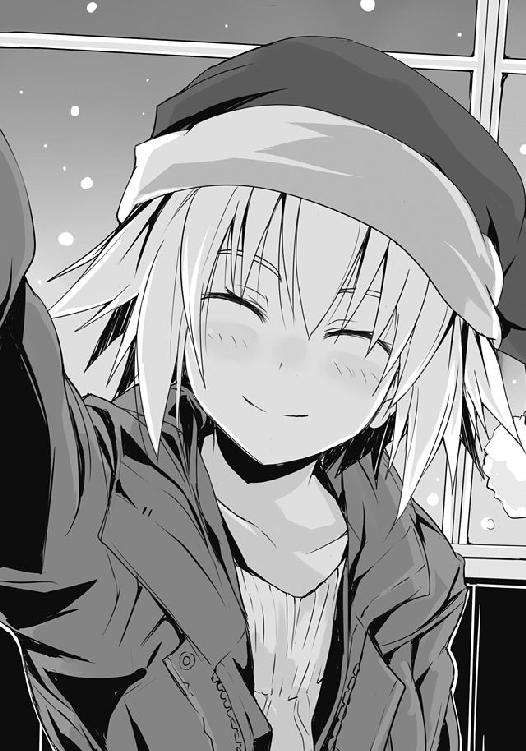
「なぁ佐藤。来年もまた一緒に......こうしてパーティが出来るかな」
槍水先輩はどこか寂しげに微笑みながら、円卓を見つめて、そんなことを言う。
だから、僕は言った。はっきりと、彼女の顔から寂しさを打ち消すように。
「はいっ、必ず。次も絶対に僕が獲ってきます。だから......来年も部室で一緒にクリスマスパーティしましょう、槍水先輩」
槍水先輩は少し驚いた顔をして、そして......笑った。
最高に柔らかで、子供のようで、それ故に純粋な笑顔。
みんな窓の外を見ている中、僕だけがそれを見た。
それが......何だか無性に、嬉しかった。
〈了〉
著者紹介
アサウラ
１９８４年生まれ。北海道出身。東京在住。
大学在学中に第５回スーパーダッシュ小説新人賞に応募した「黄色い花の紅」で大賞を受賞、デビュー。
「ベン・トー」シリーズが「このライトノベルがすごい！ ２０１１」（宝島社）で第５位にランクインし、大ブレイク。
柴乃櫂人（しばの・かいと）
１９８１年生まれ。大阪出身。東京在住。
ゲーム会社に所属しニンテンドーＤＳの大ヒットＲＰＧ「ルミナスアーク」などのキャラクターデザインを手がけたのち、フリーに。
「ベン・トー」シリーズのコミカライズで漫画家デビューも果たす。
集英社ｅスーパーダッシュ文庫
ベン・トー ８
超大盛りスタミナ弁当クリスマス特別版１２５０円
著者 アサウラ
(C) ASAURA 2012
２０１２年７月５日発行
この電子書籍は、集英社スーパーダッシュ文庫「ベン・トー ８ 超大盛りスタミナ弁当クリスマス特別版１２５０円」
２０１２年６月６日発行の第３刷を底本としています。
発行者 鈴木晴彦
発行所 株式会社 集英社
東京都千代田区一ツ橋２丁目５番10号
〒１０１−８０５０
［電話］
０３−３２３９−５２６３（編集部）
０３−３２３０−６３９３（販売部）
０３−３２３０−６０８０（読者係）
制作所 株式会社デジタルディレクターズ
本作品の全部また一部を無断で複製、転載、改竄、インターネット上に掲載すること、および有償無償に関わらず、本データを第三者に譲渡することを禁じます。なお個人利用の目的であっても、コピーガードを解除しての複製は、法律で禁じられています。